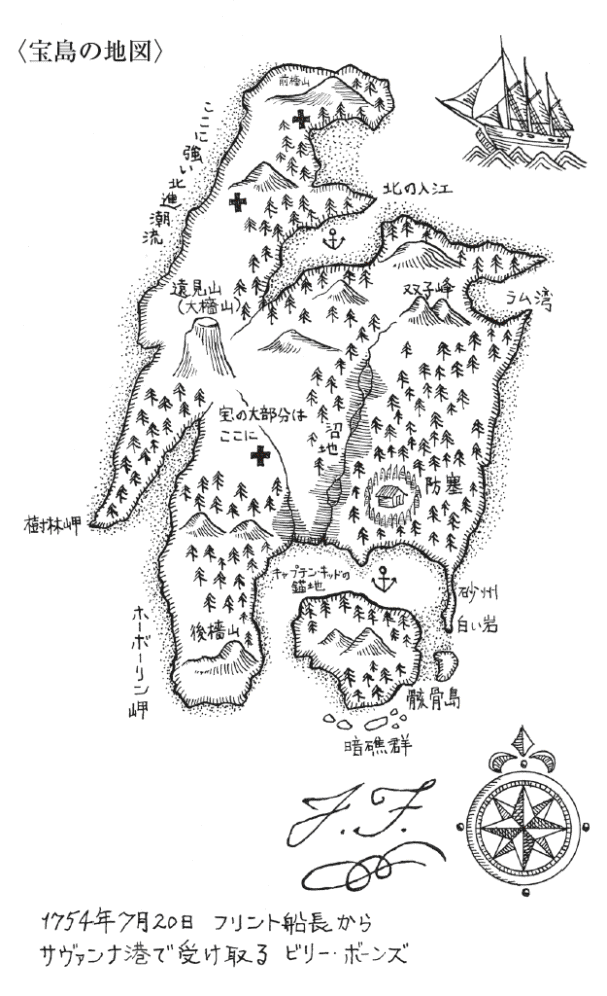

| 宝島 | |
| スティーヴンスン | |
| 光文社 (2012) | |
宝島
スティーヴンスン
村上博基 訳
Title: TREASURE ISLAND
1883
Author: Robert Louis Stevenson
アメリカの紳士
ロイド・オズボーンに
その古典趣味にそって
この物語は構想され
いま、たのしかった幾百時間の返礼として
心からなる謝意をこめて
親友より捧げられる
著者
買おうかどうしようかと迷っている人に
もしも船乗り言葉で語られる船乗りの物語が
嵐と冒険が 炎熱と酷寒が
帆船が 島々が 孤島に置きざりにされた男が
海賊や埋蔵財宝が
そして往古から語りつがれた
あのいにしえのロマンスが
かつて私を魅了したように
私より優れた今の若者をも魅了するなら
よろしい お買いなさい
もしもそうでないなら
勉強第一の今の若者が
もはや往時の渇望を持たず
キングストンや 勇者バランタインや
森と湖のクーパーに憧れぬなら
それもまたよろしい
それなら私と私の海賊仲間は
それらの作者や作中人物がよこたわる墓に
とっとと退散しよう

目 次
第１章 《ベンボウ提督亭》の老水夫
大地主のトリローニさんや医者のリヴジー先生、みんなにいわれて、ぼくは宝島のことを最初から最後まで詳しく書き記すことにした。なにも包み隠しは要らないが、まだ一部掘り出していない宝もあるから、島の方位だけは明かさぬようにといわれた。そこでぼくは、いま、一七――年にペンを起こし、話は父がまだ《ベンボウ提督亭》という旅亭をやっていたころのある日、赤銅色の顔に刀傷の走る老いた水夫が投宿したときにさかのぼる。
その男のことは、昨日のことのように思いだす。船員用衣類箱をのせた手押し車をあとに従え、店先にどたどたとやってきた。長身で、がっしりと逞しく、栗のような褐色の肌をして、タールまみれの弁髪を薄汚れた青い上着の肩まで垂らしていた。無骨な手は傷だらけで、爪はひび割れ黒ずんでいた。頰の傷痕だけが、生っちろくて気持ち悪かった。忘れもしない。入江をぐるりと眺めやりながら、最初は口笛を吹いていたのが、そのうち急に歌をうたいだした。古い船乗りの歌で、のちに彼はそれをのべつうたうようになる。
死人箱島に流れ着いたは十五人
ヨー、ホッ、ホー、酒はラムがただ一本
高調子のなかに老いのもたつきが出たような声は、揚錨機の梃子棒をまわすときにはりあげて嗄らしたのかもしれない。ついで、手に持った、それこそ梃子棒のような棒でドアをたたき、父が出て行くと、ラムを一杯くれと横柄にどなった。ラムがくると、利き酒のようにちびりちびりやって、じっくり味をたしかめ、目はまだ入江の崖を眺めていたが、やがてその目が店の看板へ上がった。
「悪くないな、この入江」ようやく、そういった。「店の場所もいいときてる。客の入りはどうだ」
いやあ、さっぱりだよ、残念ながら、と父はこたえた。
「そうかい」という。「じゃ、ここに決めた。おいこら」手押し車の男に大声で呼びかけた。「それをこっちへ持ってこい。二階に上げるから手をかせ。しばらくここを宿にする」いって、先をつづけた。「おれは安上がりな男だからな。ラムとベーコンエッグがあって、船を見張れるあの岬さえあればいい。おれの名か。キャプテンと呼んでくれ。おっと、わかってるよ――ほれ」金貨が三、四枚、戸口に投げられた。「それをぜんぶ使ったら、いうがいい」司令官のようなこわい目つきでいった。
じっさい着ているものは粗末で、しゃべりかたはがさつでも、平水夫風情のところは、これっぽっちもなかった。それよりは、人を殴ったり従わせたりするのに慣れた、上級船員か船長を思わせた。手押し車の男の話では、きのうの朝、《ロイヤル・ジョージ亭》の前で駅馬車を降り、海辺の街道筋にどんな旅亭があるかきいたのだという。それでうちの評判と、ぽつんとはなれた場所にあるのをきかされたのだろう、数あるなかから宿にえらんだのだ。その客について、ぼくらが知り得たのはそれだけだった。
平生は無口な男だった。昼間は真鍮の単眼鏡を手に、終日入江の岸や崖上をぶらつき、夜は食堂の隅で炉端にかけて、ラムの水割りのうんと強いのを飲みどおしに飲んでいた。人に話しかけられても、たいてい口をきかず、ときおり急に顔を上げると、おっかない目をして、鼻を霧笛のように大きく鳴らした。まもなくぼくら親子も、店にくる客も、この人にはかまわないのがいいと知った。毎日外歩きから帰ると、だれか船乗りが街道を通らなかったかときいた。最初はみんな、仲間がほしくてそうきくのかと思ったが、そのうち、逆に船乗り仲間を避けているのだとわかってきた。《ベンボウ提督亭》に泊まる船員がいると（海ぞいにブリストルへ行く男たちのなかに、たまに投宿者がいるのだ）、彼はまずカーテンのかかったドア口で、そっと相手をうかがってから食堂にはいり、そんな客がいるときはいつも、ひどくおとなしくしていた。そのことは、人は知らずぼくには、不思議でなかった。じつはある意味で、ぼくは彼の警戒心の共有者だったのだ。というのは、ある日彼はぼくをわきへ呼んで、毎月初日に四ペンス銀貨を一枚やるから、〝片足の船乗りをよく見張って〟、もしもそういうのを見たら、すぐに教えろといったのだ。月のはじめの日がきて、報酬を請求すると、ぼくに向かってぶるんと鼻を鳴らすだけということがよくあったが、それでもその週のうちにはかならず思い直して、四ペンス銀貨をくれてから、あらためて〝片足の船乗りを見張れ〟と指示した。
以来その未知の人物が、どれほどぼくの夢に出てきたかはいうまでもない。嵐の晩、風が家の屋台骨を揺るがし、とどろく波が入江を洗い、断崖に高々とたたきつけるときには、かならずあらわれて、姿かたちは千変万化、顔は恐怖の百面相だった。片足が膝下で切れているときもあれば、付け根からないときもあった。妖怪みたいな生き物になることもあって、生まれついての一本足が、胴のまんなかに生えていた。それが藪垣やどぶを躍り越え、ぼくを追って走ってくるのを見るのは、悪夢中の悪夢だった。そんな恐ろしい夢にさいなまれて月四ペンスでは、とんと割に合わなかった。
そのかわり、片足の船乗りの想像図にはそんなにおびえても、〝キャプテン〟その人は、みんなのこわがりようをよそに、ぼくはあんまりこわくなくなった。彼はラムの水割りを頭が変になりはしないかと思うほど飲むことがあって、そんな晩はひとり野卑で荒々しい、古い船乗りの歌をうたいまくって、だれはばかることもない。かと思うと、居合わせた全員に一杯ふるまっては、びくびくしている男たちに無理やり自分の話をきかせたり、歌のくりかえし部分をいっしょにうたわせる。ぼくはよく、〝ヨー、ホッ、ホー、酒はラムがただ一本〟のところで、家がびりびり震動するのをきいた。なにしろ恐ろしさに生きた心地もない常連が全員で加わり、にらまれるのがいやさに、それぞれがだれにも負けじと声をはりあげるのだ。そういうときのキャプテンの横暴さといったらない。手のひらでテーブルをばんとたたいて座を黙らせる。なにかきかれて激怒するかと思えば、質問がなければないで、話をきいていないといって怒りだす。だれにも退席を許さず、そのうち自分が酔って眠くなり、千鳥足で寝に上がって行く。
みんなをなによりもこわがらせたのは、そうやってきかせる話だった。縛り首やら、目隠しした捕虜を舷側から張り出した板を歩かせて海に落とす話、洋上の時化、ドライ・トーテューガスの暗礁、カリブ海沿岸の蛮地蛮行。身の毛がよだつとはあれだった。本人談からすると、これまでずっと、波乗り暮らしの悪党のなかでも極悪の連中に交じって暮らしてきたらしい。そんな話をするときの言葉づかいがまた、話に出る悪行に劣らず、純朴な田舎の人間をおびえさせた。これでは店はつぶれるというのが、父の口癖になった。飲みにきて威張り散らされ、黙らされ、泊まり客はおののいてベッドに逃げるのでは、そのうちだれの足も遠のくにちがいない。でも、正直、ぼくはキャプテンの存在が、みんなにとってはあながち悪いことではなかったと、いまでは思っている。あのときはだれもこわがっていたけれど、いまから思うと、どこかでたのしんでもいたんじゃないだろうか。平穏すぎる田舎の暮らしに、あれはけっこう刺激になり、若い客のなかには、〝真の船乗り〟とか、〝正真正銘海の男〟などと呼んで偉物扱いし、ああいう男がイギリスを海の覇者にするのだといって持ち上げる者もいた。
べつのことでは、たしかに店をつぶしかねなかった。宿泊が何週間から、ついには何カ月にもおよび、前払い金なんかとうになくなったのに、父は追加を請求しかねていた。つい口にしようものなら、キャプテンは獣が吠えたかと思うほど大きな音で鼻を鳴らし、ぐっとにらみつけるので、かわいそうに父はすごすご部屋を出て行ってしまう。ぼくはそんな拒絶にあったときの父が、両手をもみしだいて嘆くのを見ているが、あのおびえと苦痛の日々が、父の寿命よりはやい不幸な死をまねいたと思っている。
ぼくらのところにいるあいだ、キャプテンは行商人から靴下を買った以外、身につけたものをなにひとつ替えることはなかった。帽子のつばの片側がだらりと下がり、風の吹く日はうっとうしいだろうに、以後ずっと垂らしたままだった。上着の古びようも覚えている。二階の自室で何度も自分で繕い、最後のころには、継ぎきればかりで元の生地がなくなってしまった。手紙は書かず、手紙はこず、常連客としか口もきかず、それもたいていラムで酔っぱらったときだけだった。大きな船員用衣類箱は、だれも蓋があいたのを見たことがなかった。
一度だけ、彼が人にやりこめられたことがあった。それはもう最後に近いころ、かわいそうにぼくの父が命取りの病にかかり、だいぶいけなくなったときだった。ある日の夕方、往診してくれたドクター・リヴジーが、母が別室に用意した簡単な夕食をすませてから、食堂へ一服つけにはいった。《ベンボウ提督亭》には貸馬の便がないので、村から馬がくるのを待つ間のことだった。ぼくはあとについて食堂へ行ったが、真っ白な髪粉をつけたかつら、黒いきれいな目、感じのいい物腰、ドクターはすべてが端正で明るく、ひきかえ田舎の男たちのがさつさ、わけてもラムを浴びるほど飲んだわれらが海賊の、目をとろんとさせてテーブルに両腕をのせた格好は、薄汚い大きな案山子のようで、そのコントラストはいまだに記憶にのこっている。とつぜん彼は――とはキャプテンだが、お定まりの歌をうたいだした。
死人箱島に流れ着いたは十五人
ヨー、ホッ、ホー、酒はラムがただ一本
あとは皆 酒に飲まれ悪魔に食われ
ヨー、ホッ、ホー、酒はラムがただ一本
ぼくは最初のうち、〝死人箱〟とは、てっきり二階表側の部屋に置いてあるあの大きな木箱だと思ったから、いつもそれが悪夢のなかで片足の船乗りと結びついた。だが、もうそのころ、だれもそんな歌にはとうに耳をかさなくなっていた。その晩、はじめてきくのはドクター・リヴジーただひとりだったが、ぼくには先生が快く思っていないのがわかった。先生は一瞬むっとした目つきになってから、植木屋のテイラー爺さんに、リウマチの新療法の話の先をつづけた。一方キャプテンは、自分の歌声にだんだん調子づいて、そのうち目の前のテーブルを手のひらでばんとたたき、みんなが知るその意味――しずかにしろ――を伝えた。声という声がぴたりとやみ、やまないのはドクター・リヴジーの声だけで、いぜん明瞭懇切にしゃべりつづけ、言葉のとぎれ目にパイプをすぱすぱふかした。キャプテンはしばらくにらみつけていたが、またテーブルをたたくと、眼光をさらに鋭いものにし、ついには口汚くどなりつけた。「おい、そこ、黙らねえか！」
「わたしのことかね」ドクターがきき、悪党がまたののしりながら、そうだというと、ドクターは「ひとつだけ、きみに警告しておく」といった。「その酒をやめないと、もうすぐこの世は、いちばん下等なごろつきをひとり減らすことになる」
老水夫の怒りようはすごかった。ぱっと立ちあがるなり、ジャックナイフを抜いてひらくと、手のひらにのせてすごみ、医師を壁にはりつかせようという動きを見せた。
ドクターのほうは、身じろぎひとつしなかった。それまでどおり、首だけふりむけて、おなじ調子で話しかけた。店内の全員にきこえるよう、多少声を大きくしただけで、すこしもあわてず、落ち着き払っていた。
「いますぐそのナイフをおさめないと、わたしの名誉にかけて断言するが、きみはつぎの巡回裁判にかけられて絞首刑だ」
ふたりのあいだでにらみあいがあったが、キャプテンが屈し、ナイフを引っ込めると、ぶたれた犬のようにうなりながら、また椅子に腰を落とした。
「いいか」ドクターはつづけた。「わたしの地区にきみのようなのがいると知ったからには、日夜この目が見張っていると思うがいい。わたしはただの医者ではない。治安判事でもあるからして、きみにたいするほんのわずかな苦情でも小耳にはさんだら、たとえ今夜のような無礼の言ひとつであっても、きみが逮捕され放逐されるよう、しかるべき処置を取る。それだけはいっておく」
ほどなく戸口に馬がきて、ドクター・リヴジーはそれに乗って帰って行った。もうその夜、キャプテンは荒れず、それからの幾夜もおとなしかった。
第２章 ブラック・ドッグ あらわれて消える
そのことがあってから間なしに、ぼくらからようやくキャプテンを厄介払いしてくれた不可解な出来事の、最初のひとつがもちあがった。ただし、先を読んでもらえばわかるとおり、キャプテンは消えても、彼にからむ事柄は尾を引いた。その年は厳冬で、いつまでも冷え込みがつづき、強風が吹き荒れ、父がかわいそうに春を見そうもないことは、最初から明らかだった。日に日に衰弱して、店はぼくと母だけで切り盛りせねばならず、ただでさえいそがしいから、迷惑な客にかまけてはいられなかった。
一月のある日の早朝――身の縮むほど凍てつく朝だった――入江は霜で真っ白になり、波はしずかに磯に寄せ、まだ低い太陽は丘のてっぺんにさしのぞいたばかりで、はるかな海上に曙光を投げていた。いつになく早起きしたキャプテンは、海岸ぞいに歩いて行った。青いぼろ上着のゆったりした裾の下にカトラス（１）を吊るし、真鍮の単眼鏡を小わきにはさんで、帽子をあみだにかぶっていた。大股に遠ざかるそのあとに、吐く息が白い煙のようにただよっていたのをいまも覚えている。最後にぼくの耳にとどいたのは、その格好で大岩のむこうへまわるとき、まだドクター・リヴジーのことを忘れかねているみたいに、不快そうにぶるんと鼻を鳴らす音だった。
母は二階の父のそばにいて、ぼくはキャプテンがもどらぬうちにと、朝食の配膳にとりかかっていた。食堂のドアがあいて、見たこともない男がずいとはいってきた。獣脂のような黄白色の肌をして、左手の指が二本なく、カトラスを下げてはいるが、あまり切った張ったをやりそうな男にも見えなかった。一本足にせよ二本足にせよ、ぼくは常時船乗りを見張っていたが、その男には首をかしげた覚えがある。船乗り然とはしていないのに、どことなく潮のにおいをただよわせているのだ。
なんでしょうときくと、ラムをくれという。だが、ぼくがラムを取りに行こうとすると、テーブルに腰をおろし、こっちへこいと手ぶりでしめした。ぼくはナプキンを手に立ちどまった。
「ちょっとこい、ぼうず」男はいった。「ここまで」
ぼくは一歩そちらへ寄った。
「おれの航海仲間のビルの席はここか」じろりと横目をくれてたずねた。
ビルなんて人は知らない、ここは泊まり客の席で、その人をぼくらはキャプテンと呼んでいるとこたえた。
「そらまあ」と、男。「おれの仲間のビルなら、キャプテン呼ばわりもされるだろう。片頰に傷があって、うんと人好きのするやつだ、おれの仲間のビルはよ。とくに大酒くらうとな。事のついでにいうなら、そのキャプテンは片頰に傷があって――もっというなら、その頰は右だ。な、そうだろう。やっぱりそうだ。で、おれの仲間のビルは、いま、この家にいるのかい」
歩きに行った、とぼくはこたえた。
「どっちへだ、ぼうず。どっちへ行った」
ぼくが岩場のほうをゆびさして、たぶんあちらから、もうすぐもどることを教え、ほかに二、三きかれたことにこたえると、「いやあ」と、男はいった。「おれの顔を見るのは、ビルには酒とおなじぐらいうれしかろう」
それをいう表情は、たのしげというにはほど遠く、ひょっとしてこの見知らぬ男は、噓はいっていなくても、なにか勘違いしているんじゃないかと、ぼくは思った。でも、ぼくにはかかわりのないことだし、だいいちなにをどうしたものか考えもつかなかった。見知らぬ男は、店の入口のすぐ内側をうろついては、猫が鼠を待ち受けるように、角のむこうをうかがった。一度ぼくが道路に出たら、たちまち大声で呼び返し、ぼくがすぐにはいうことをきかずにいると、黄白色の顔にぞっとするような変化があらわれ、はやくもどれと命じる言葉の口汚さには、思わずとびあがった。ぼくがもどったとたん、またそれまでの調子に返って、機嫌をとるような、からかうような笑みをうかべて肩をたたき、いい子だ、大いに気に入ったといった。「おれにもおまえとおなじようなせがれがいて」という。「自慢の子なんだ。だがな、若い男にいちばん大事なのは、てきぱき動くことだぞ、ぼうず――てきぱきと。おまえなんかがビルの船に乗ろうものなら、いまみたいに二度口をきいてもらえるなんて思うな――とてもだめだ。あれではビルどころか、ビルの航海仲間にも通用するもんじゃねえ。おっ、あれは――単眼鏡を小わきにたばさんだあれは、まさしくおれの仲間のビル、うん、たしかに野郎だ。おい、ぼうず、おれたちは食堂にはいってドアのうしろに隠れ、ビルをちょいとおどかしてやろうぜ――うん、間違いない」
そういって、見知らぬ男はぼくを連れて食堂にもどり、ぼくをうしろに押しやりながら隅に引っ込んだから、ふたりともあいたドアのうしろに隠れた。ぼくの不安とおびえは察してもらえるだろう。おまけに男自身がいかにもびくびくしているのを見ては、おびえはいっそうつのった。彼はカトラスの鯉口を切って、いつでも鞘から抜けるようにした。そうやって待つあいだずっと、喉につかえるものがあるのか、しきりに生唾をのみこんだ。
ついにキャプテンが、大股にはいってきて、いきおいよくドアをしめると、右も左も見ることなく、朝食が待つ席へずかずかと進んだ。
「ビル」見知らぬ男が呼びかけた。無理に度胸と貫禄をよそおったような声だった。
キャプテンがくるりと向きを転じ、ぼくたちと顔を合わせた。顔面からあの赤銅色がすーっと消えて、もう鼻までが蒼白だった。幽霊を見た人の、いや、悪魔か、悪魔をしのぐもの――そんなものがあるなら――を見た人の表情だった。あの人が一瞬にして老いさらばえてしまったのには、正直、なんだか気の毒になった。
「おいおい、ビル、おれだよ。昔の乗組仲間だよ、ビル」男はいった。
キャプテンが、はっと息をあえがせたようだった。
「ブラック・ドッグか！」と、彼はいった。
「きまってるだろうが」いいかえすほうは、すこし自信をつけていた。「昔のままのブラック・ドッグが、航海仲間のビリーに会いに、《ベンボウ提督亭》にやってきたのよ。いやあ、ビル、ビル、おれたちふたり、いろんな目にあったよな、こいつを二本落としてからはよ」そういって、指の欠けた手を上げて見せた。
「おい」と、キャプテン。「おれをさがして、居所を突きとめたんだ。だったら、いえよ。なんの用だ」
「変わっちゃいねえな、ビル」ブラック・ドッグはいった。「そらそうだよな。まずこの小僧からラムを一杯もらう。おれはこの子がすっかり気に入ったんだ。それから腰をすえて、心おきなく話そうじゃねえか、昔に返って」
ぼくがラムをついでもどると、ふたりはすでにキャプテンの朝食のテーブルをはさんですわっていた。ブラック・ドッグがドアの近くに、身をはすにしてかけているのは、片方の目で昔なじみを、他方の目で退路をうかがっているらしかった。
彼はぼくに席をはずさせ、ドアをあけたままにしておけといった。「ぼうず、のぞき見するんじゃねえぞ」ぼくは釘をさされ、ふたりをおいて酒場へ引っ込んだ。
長い時間、懸命に耳をすましていたが、なにかぼそぼそいう声がきこえるばかりだった。そのうち声が高くなり、キャプテンの口から出る、大方はののしりが、一語二語ききとれた。
「ノー、ノー、ノー！ ノーといったらノーだ！」一度大声になった。そしてもう一度。「縛り首なら、全員が縛り首だ」
と、不意に、すさまじい悪態の爆発があってから、騒音がつづいた――椅子とテーブルがいっしょにひっくりかえる音、剣と剣の交わるひびき、ついでひと声、苦痛の叫びがあがったと思うと、ブラック・ドッグがだっと走り出、それをキャプテンが血相変えて追った。どちらもカトラスを抜き持って、逃げるほうは左の肩口から血を流していた。戸口でキャプテンは、逃げる相手にいま一度追い打ちの斬撃をふるった。それで男は確実に背骨まで断ち割られるところだったが、《ベンボウ提督亭》の大きな板看板に阻まれた。いまでも板の下方に、刀痕がのこっているかもしれない。
その一刀が、最後の攻撃になった。路上に逃れたブラック・ドッグは、深手にめげず韋駄天走りに走り、三十秒後には坂道のむこうへ消えた。キャプテンはというと、なんだか身の置きどころをなくしたみたいに、看板をにらんで立ちつくしていた。手で何度か目をこすっていたが、ようやくきびすを返して店内にもどった。
「ジム」と、ぼくを呼んだ。「ラムだ」いいながら、ちょっとふらつき、片手を壁について身を支えた。
「怪我したんですか」ぼくは大声できいた。
「ラムだ」もう一度いった。「もうここを出る。ラムだ、ラム！」
ぼくはいそぎ取りに行ったが、とんだ出来事にすっかり気が動転して、グラスをひとつ割り、樽の注ぎ口をおかしくしてしまった。そうやってもたもたしているあいだに、食堂でなにかがどさっと倒れる音がしたので、あわてて引き返すと、キャプテンが床に長々とのびていた。ちょうどそこへ、争いの物音と叫び声におどろいた母が、ぼくをひとりにしておけなくて、階段を駆け降りてきた。ふたりがかりでキャプテンの頭を持ち上げた。呼吸音だけが大きく荒く、目は閉じられ、顔に血の気がなかった。
「ああもう、どうしよう」母は悲痛な声を出した。「迷惑ったらありゃしない。お父さんは病人だってのに」
とりあえずキャプテンをどうしたものか考えがつかず、あの見知らぬ男との喧嘩で致命傷を受けたということしか頭にうかばなかった。ぼくはラムだけは持ってきていたので、なんとか口に入れてやろうとしたが、歯をぎゅっとくいしばっていて、上下のあごは鉄のように頑強だった。そのときドアがあいて、ドクター・リヴジーが父の往診にきてくれたのは、天の助けかと思われた。
「ああ、先生」ふたりして大声を出した。「どうしよう。怪我はどこでしょう」
「怪我？ あほらしい」医師はいった。「怪我なんかしていないよ、きみらやわたしがなんでもないように。発作を起こしたんだ、警告しておいたとおり。さあ、奥さんははやく病人のそばへもどりなさい。あ、できればなにもいわないように。わたしはこの男の、屑ほどの値打ちもない命を救う最善の努力をしよう。ジム、洗面器をくれんか」
ぼくが洗面器を持ってもどると、先生はすでにキャプテンの上着の袖を切り裂いて、肉の引き締まった逞しい腕をむきだしにしていた。数カ所に入れ墨がはいっていた。〝運良し〟、〝順風〟、〝ビリー・ボーンズの夢〟などの文字が、前腕部にくっきりと、形よく彫ってあった。肩口には、絞首台に男がひとりぶらさがった絵があった――なんだか気迫がこもっているような彫り物だった。
「予言図だな」医師が指先で絵柄に触れていった。「さて、ビリー・ボーンズの旦那――とはきみの名かな――ひとつ血の色を見せてもらおうか。おい、ジム、きみは血を見るのがこわいか」
「いいえ、ちっとも」ぼくはこたえた。
「よし。では洗面器を押さえていてくれ」そういって、先生はメスをつかみ、静脈に切れ目を入れた。
だいぶ血が抜かれてから、キャプテンの目があいて、ぼんやり見まわした。最初にドクターの顔がわかって、あからさまに眉をひそめた。ついでぼくに視線が移ると、ほっとしたようだった。が、とつぜん顔に朱がさして、起き上がろうとしながら、大声を出した。
「ブラック・ドッグはどうした！」
「黒犬なんていないよ」先生はいった。「きみの背には一匹いるがね（２）。ラムをやめなかったな。だから倒れたんだ。いったとおりだろう。で、たったいま、わたしとしては大いに不本意ながら、きみを墓穴から引き出してやった。さて、ミスター・ボーンズ――」
「おれはそんな名前とちがう」キャプテンはさえぎった。
「ちがってもいい」先生もやりかえした。「わたしの知り合いの海賊の名だ。みじかくて便利だから、そう呼ぶことにした。いいか、これだけはいっておく。ラムを一杯やっても死にはしないが、一杯が二杯に、二杯が三杯になる。きっぱり断たなかったら、賭けてもいい、きみは死ぬ。わかるか、死ぬんだ。そして聖書のユダじゃないが、堕ち行くところは決まっている。さあ、しっかりせい。今回だけはベッドまで連れて行ってやる」
ふたりがかりで苦労のすえ二階へ押し上げ、ベッドに寝かせたとたん、気を失ったみたいに、頭ががくんと枕に落ちた。
「いいかね」いま一度念が押された。「医者の良心からの忠告だ。ラムはきみの命取りになる」
それだけいいおいて、父を診にきたドクターは、ぼくの腕をつかんで部屋を出た。
「心配ない」ドアをしめると同時にいった。「しばらくおとなしくさせるための瀉血だ。一週間は動かさぬほうがいい――本人にも、きみのためにも。ただし、今度倒れたらおしまいだ」
第３章 黒丸票
昼ごろ、部屋へ冷たい飲み物と薬を持って行くと、キャプテンはぼくらが寝かせつけたときより、ほんのすこし上体を起こしただけで、体力はないのに、気ばかりたかぶらせていた。
「ジム」と、ぼくに呼びかけた。「ここで見どころのあるのは、おまえだけだ。わかってると思うが、おまえにだけは最初から目をかけてきた。四ペンス銀貨をやらなかった月は、一度もなかったろうが。そこでだ、朋輩、おれはこのとおりからだが弱って、みんなに見すてられてしまった。頼む、ジム、ラムを一杯持ってきてくれ、な、朋輩」
「先生が――」ぼくはいいかけた。
彼はさえぎって、声こそ力ないが、口をきわめてドクターを罵倒した。「医者なんざ、みんな阿呆だ」という。「なかでもあの医者、あれが船乗り稼業のなにを知る。おれは灼けるような熱帯へ行って、まわりで仲間が黄熱病でばたばた倒れるのを見たし、地震で地面が大波のように盛り上がるのも見た。そんな土地のなにをあの医者が知る。おれはな、今日までラムで生きてきたのよ。ラムは命の糧、おれとは切っても切れない仲だってのに、そのラムが飲めないんじゃ、おれはもう漂い流れる老朽船みたようなもんだ。祟ってやるからな、ジム、おまえにもあの馬鹿医者にも」そのあと、またひとしきり呪詛の言葉がつづいた。「ほら見ろ、ジム、この指のふるえよう」懇願調で先をつづけた。「とめようがねえんだ。今日はまだ一滴も飲んでない。あの医者は阿呆だ、それだけはいっとく。ラムを一滴も飲まねえと、禁断症状てのが出る。もういくらか出てるんだ。いまもほれ、そこの隅、おまえのうしろに、フリントの野郎が立ってるのが見えた。はっきり見えた。こういう禁断症状が出たら、おれは修羅場をくぐってる男だから荒れるぞ。医者も一杯ならいいといったろう。なあ、ジム、一杯持ってきてくれたら、金貨を一枚やる」
だんだん興奮してくるので、ぼくは心配になった。その日、父はだいぶいけなくて、騒ぎを起こしてはならなかった。それに、いま出た先生の言葉で気持ちも動いたが、ただ買収の誘いには反発を覚えた。
「あんたのお金なんかいらない」ぼくはいってやった。「そんなお金があるなら、父に払ってやってほしい。じゃ、一杯だけ、それ以上はだめだよ」
持ってきてやると、喉から出たような手でつかみ、一気にほした。
「うん、うん」満足そうにいった。「やっと人心地がついた、いやほんと。おい、朋輩、あの医者のやつ、いつまでこうして寝てろといった」
「すくなくとも一週間」ぼくはこたえた。
「ばかぬかせ！」どなり声。「一週間もいられるか。そのあいだにあいつら、おれに黒丸票を突きつけてよこす。こうしてる間にも、おれにたいして優位に立とうと、その辺をうろついてやがる。ばかな水夫どもは、手に入れたもので満足できず、人のものまでねらうんだ。それが海の男のやることかというんだ。だがな、おれは根がつましい男だ。大事な金をむだにしたことも、なくしたこともない。なに、また裏をかいてやる。あんなやつら、なにほどのことがある。おれはもう一度帆を上げて、ひと泡吹かせてやるから見てろ、朋輩」
そうやってしゃべりながら、苦労してベッドから起きあがったが、ぼくの肩にすがったその握力には、こっちは大声をあげるところだった。両足の動きは鉛のようだった。言葉の威勢のよさとは裏腹に、それをいう声の弱さはあわれだった。やっとベッドのふちにすわり、ひと息ついた。
「あの医者に、してやられた」つぶやき声。「耳鳴りがする。寝かせてくれ」
ぼくが手をかすよりはやく、またさっきの位置にどさっとのけぞり倒れ、しばらくそのままものもいわなかった。
「ジム」ようやく口をきいた。「おまえ今日、あの船乗りを見ただろう」
「ブラック・ドッグですか」
「ああ。ブラック・ドッグだ」彼はこたえた。「あれは悪だが、あれをそそのかしたもっと悪がいるんだ。おれはなんとかしてここを出ないと、黒丸票を渡される。あいつらはおれの衣類箱をねらってやがる。そのときはおまえが馬に乗って――乗れるだろう。馬に乗って、ひとつその――ええ、しかたねえ――あの馬鹿医者のところへ行って、手の者をあつめてくれといえ。判事やらなにやら、みんなで《ベンボウ提督亭》にきて、やつらをひっとらえてくれといえ。やつらは皆、フリント船長の乗組員――というか、その残党だ。おれは航海士だった。フリントの下で航海士だったから、大事な場所を知ってるのはおれだけだ。船長はサヴァンナ港で、死にぎわにおれに教えたんだ――いまのおれみたいに、半死半生のときに。だがいいか、このことをしゃべるのは、まずおれが黒丸票を渡されるか、おまえがまたあのブラック・ドッグに会うか、でなきゃ片足の船乗りを――だれよりもそいつを、みつけてからだぞ」
「その黒丸票ってなんですか、キャプテン」ぼくはきいた。
「呼び出し状だよ、朋輩。渡されたら、そのとき教えてやる。まずよく見張ってろ、ジム。おまえにも分け前をやる、噓じゃない」
いますこしどうでもいい話がつづき、声はさらに弱々しくなった。ぼくが出した薬を子どものようにおとなしくのんで、「薬の要る船乗りなんざ、おれぐらいのもんだな」というとまもなく、やっと正体をなくしたみたいにぐっすり寝入ったから、そのままにして部屋を出た。もしもそれっきり何事もなかったら、ぼくはどうしていたかわからない。ひょっとしたら、すべてを先生に話していたかもしれない。というのは、もしやキャプテンが告白を後悔して、ぼくを始末するのでは――そう思ったら、生きた心地もなかったからだ。が、折も折、かわいそうな父が、とつぜんその晩死んでしまい、他のことはぜんぶそっちのけになった。遺された者の悲しみ、近所の人たちの弔問、葬儀の手配、その間も店の仕事をうっちゃっておけず、ぼくはいそがしくて、キャプテンのことを考えてはおれず、ましておびえているひまはなかった。
翌朝、キャプテンは下に降りてきて、いつものように食事を取ったが、あまり食べず、ラムだけはいつもより飲んだと思う。勝手に酒場から持ってきて、こわい顔でぶるんぶるん鼻を鳴らすから、だれも逆らえなかったのだ。葬儀の前夜はへべれけに飲んで、忌中の家であの野卑な水夫の歌をのべつ幕なしにうたうのだから、きかされるほうはたまらないが、からだこそ弱っていても、相手が相手だから、みんなおびえきっていた。おまけにドクターは、遠くに急病人があってかかりきりで、父の死後うちの近くへくることもなかった。キャプテンのからだが弱ったといったが、じっさい体力を回復するよりは、衰弱する一方に見えた。おぼつかない足で階段を上がり降りし、食堂と酒場のあいだを往復し、ときどき戸口から鼻だけ出して潮の香を嗅いだが、歩くときは壁に手をついて、山登りをする人のように苦しげな呼吸をしていた。ぼくに特に声をかけることもなく、あの打ち明け話のことは忘れてしまったんじゃないかと思う。でも、怒りっぽさはいよいよつのり、身の弱りようを思えば、それまで以上に激しかった。もうやることも尋常ではなく、酔うとカトラスの抜き身をテーブルの上に置いた。それでも前ほど人にかまわなくなり、自分の物思いにふけったり、われを忘れているようなこともあった。たとえば、一度みんなをひどく不思議がらせたのは、それまでとちがう歌をうたいだしたことだ。若いころ、まだ船乗りになる前に覚えたのか、田舎のラブソングみたいな歌だった。
そんなこんながあって、葬儀の翌日、霜と霧に閉ざされた寒い午後の三時ごろ、ぼくは父への悲しい思いに胸ふたがれ、ちょっと戸口にたたずんでいた。すると、街道をこちらへ、ゆっくり歩いてくる人があった。盲人らしく、踏み出す足の前を杖でたたき、目から鼻へ大きなグリーンの布をかぶせていた。老齢でか体力の衰えでか背中が曲がり、着ているのがフード付きのばかでかいおんぼろ船員外套だったから、不格好なことといったらなかった。あんなに異様な風体をした人をぼくははじめて見た。店の手前でちょっと立ちどまり、妙に平板な声をはりあげて、前方の空気に呼びかけた。
「だれか親切な人がいるなら、祖国イギリス――ジョージ陛下万歳！――を守って光を失ったあわれな盲人に、教えてくれないか。ここはどこかな、この国のどのあたりかな」
「ブラック・ヒル湾の《ベンボウ提督亭》の前ですよ」ぼくは教えてやった。
「声がきこえる」と、男。「若い声だな。お若い人、すまないが手をかして、店のなかへ案内してもらえまいか」
ぼくが手をさしのべると、すぐさま、ものいいは優しいが見た目おぞましい盲人は、万力のような力でつかんだ。びっくりして懸命にもぎはなそうとしたがだめで、盲人は腕の動作ひとつでぼくをぐいと引き寄せた。
「おい、若いの」男はいった。「おれをキャプテンのところへ連れて行け」
「いやだ」ぼくはいった。「それだけはぜったいに」
「ほう」せせら笑い。「やっぱりな。まっすぐ連れて行け。でないと、この腕をへし折るぞ」
いいながら、ぐいとねじあげ、ぼくに悲鳴をあげさせた。
「お客さん」と、ぼくはいった。「あんたのためにいうんですよ。もうキャプテンは、いままでのキャプテンじゃありませんよ。いつもカトラスの抜き身をそばに置いてます。このあいだもほかの人が――」
「いいから歩け」みなまでいわせなかった。ぼくはその盲人の声ほど、冷たくて、残忍で、不気味な声をきいたことがなかった。腕の痛みより、そのほうがぼくを縮みあがらせた。ぼくは即座に従って、まっすぐ戸口をはいって食堂に向かった。病める老海賊は食堂に、ラムで酔眼朦朧としてすわっているのだ。盲人はぼくを鉄の握力でぴったり引きつけ、ぼくには持ちこたえられそうにない体重をおっかぶせてきた。「まっすぐやつのところへ連れて行き、むこうの目にはいるところまで行ったら、大きな声で『友だちだよ、ビル』といえ。でないと、こうだ」そこで腕をぐいとひねられ、ぼくは気を失うかと思った。それやこれやで、ぼくは乞食のような盲人におびえるあまり、キャプテンのこわさなんか忘れてしまい、食堂のドアをあけるとすぐに、いわれた言葉をふるえ声で叫んだ。
目を上げたキャプテンは、かわいそうにそのひと目で、ラムがからだから出て行って、酔いが醒めてしまった。顔の表情は恐怖というよりは、末期の病人のそれだった。椅子を立つ構えだけ見せたのは、きっともう立ちあがる力はのこっていなかったのだ。
「おい、ビル、立つんじゃない」男がいった。「目が見えなくても、指一本動けばわかる。おれはすることをしにきた。左手を出せ。ぼうず、やつの左の手首をつかんで、おれの右側へ持ってこい」
ふたりがそれぞれいわれたとおりにすると、男が杖を持った右の手のなかから、なにかをキャプテンの手のひらにのせるのが見えた。その手のひらは即座に閉じられた。
「よし、これで済んだ」盲人がいった。そこで急にぼくの手をはなし、信じがたいような敏捷さ正確さで、食堂から路上へとびだした。まだその場を動けずにいるぼくの耳に、路面をたたく杖の音が遠ざかるのがきこえた。
ぼくもキャプテンも、われに返るのにすこしの間を要した。ようやく、そして同時に、ぼくはまだつかんでいたキャプテンの手首をはなし、キャプテンはその手を引っ込めて、手中のものを鋭い目で見た。
「十時！」大きな声が出た。「あと六時間。まだ出し抜いてやれる」いうなり、ぱっと立ちあがった。
立ったと思うと、ぐらっとよろめき、片手を喉元にあてて一瞬ふらついたが、つぎの瞬間、妙な音声を発して、のびきった全身をうつぶせに、どうと床に倒れた。
ぼくはすぐに駆け寄り、大声で母を呼んだ。だが、どんなにいそいでもむだだった。キャプテンは落雷にも似た発作で絶命していた。自分でも不思議で理解に苦しむのだが、ぼくは最近でこそ不憫を感じるようになったものの、一度も好きにはなれなかった相手なのに、死んだとわかったとたん、どっと涙があふれた。人の死に目にあうのはそれが二度目で、まだ最初の悲しみが胸裏にあたらしいあいだのことだった。
第４章 衣類箱
母にはすぐに、知っていることはもちろん、もっとはやくいうべきだったことも、のこらず話した。ぼくたちが厄介で危険な立場に置かれていることは、容易にわかった。長逗留客の持ち金――そんなものがあればだけど、そのいくらかは、当然ぼくらがもらっていいが、キャプテンの乗組仲間、わけてもブラック・ドッグや、乞食みたいな盲人が、自分らの取り分から死者の借金を払ってくれるとは思えなかった。キャプテンの指示どおり、すぐ馬でドクター・リヴジーを迎えに行ったとしたら、それではあとに母がひとり、助けもなく取りのこされるので、そんなことはできなかった。それどころか、母もぼくも、この家に長居してはいられないという気がした。キッチンの火床の炭が崩れる音、時計のこちこち鳴る音までが、ぼくらを不安でいっぱいにした。耳には、もうその辺まで人の足音が、ひたひた迫っているようにきこえた。食堂の床にキャプテンの死体がよこたわるばかりか、あの盲目の乞食男がまだそのあたりにいて、いまにも引き返してくるかもしれないと思うと、恐ろしくて何度も身の毛がよだった。はやくなんとかしなくては。ようやく考えついたのは、いまからふたりで出かけて行って、近くの村に助けをもとめることだった。考えるとすぐに実行した。帽子もかぶらずに、ぼくたちは迫りくる夕闇と冷たい霧のなかにとびだした。
村は視界にこそはいらないが、そんなに遠くはなれているわけでなく、つぎの入江のむこう岸にあり、なによりも心丈夫なのは、盲人があらわれたところ、引き返して行ったらしいところとは、逆方向なことだった。いくらも歩くわけではないのだが、ときどきたがいに手で制し合って立ちどまり、耳をそばだてた。だが、なにも異様な気配はなく、きこえるのはしずかな磯波の音と、森の鴉の鳴き声ばかりだった。
村に着いたのは灯ともしごろで、戸口や窓の黄色い灯火が見えたときのうれしさは忘れられない。だが、そこでは灯火以上の励ましは得られそうにないとわかった。というのは――男たちの意気地のなさときたら――だれもいっしょに《ベンボウ提督亭》へ行くといってくれないのだ。ぼくらが苦境を訴えれば訴えるほど、男も女も子どもも、だれもが自宅という安全地帯をはなれようとしなかった。フリント船長の名は、ぼくにははじめてでも、ここでは一部の人にはよく知られ、ひとかたならぬ恐怖心をまねいた。おまけに、《ベンボウ提督亭》のむこうで畑仕事をしていた村人のなかに、見かけぬ男の一団が街道を行くのをみつけ、きっと密輸業者だと思って逃げ帰ったといいだすのがいた。キッツ・ホールという入江に、小型帆船が係留されているのを見たというのもひとりいた。じっさいフリント船長の元手下ときくだけで、村人をふるえあがらせるにじゅうぶんだった。とどのつまりが、別方向にあるドクター・リヴジーのところまで馬で送ろうとの申し出はいくつかあったが、店を守るのに手をかそうという人はいなかった。
臆病は伝染するという。が、一方、議論は人を大胆にする。めいめいがいいたいことをいいおえると、母は一席ぶった。あたしは父親をなくした子が受け取って当然のお金をあきらめる気なんかない、ときっぱりいった。「あんたがたが、だれも頼まれてくれないのなら」母はいった。「ジムとふたりでやるからいい。きた道を引き返すだけよ。図体ばかりで肝っ玉の小さい、あんたがた大の男になんか頼まない。ふたりしてあの箱を、死んでもあけてやる。クロスリーの奥さん、その袋を貸してくれない、自分たちのお金を入れて持ち帰るのに使うから」
もちろんぼくは母といっしょに行くといい、もちろんみんなは、無鉄砲にもほどがあるといったが、それでもまだひとりとして、ついて行ってやるとはいわなかった。申し出があったのは、襲われたときにそなえて弾薬を装塡したピストルを貸すこと、帰りに追われても逃げきれるよう馬を用意すること、それから、武装した助勢をもとめに、若い者をひとりドクターのところにやること――それだけだった。
母とふたりで寒夜の決死行に出発したとき、ぼくの心臓の鼓動は穏やかでなかった。満月がさしのぼるところで、霧の上端から赤い顔をのぞかせたから、いそがなくてはならなかった。もう一度店を出るころには、月明かりは白日並みになっているにちがいなく、見ている者がいれば隠れようもないからだ。道端の茂みにぴったりついて、足音を忍ばせ、いそぎにいそいだ。さいわい恐怖をつのらせるようなものは、目にも耳にもはいらず、ようやく《ベンボウ提督亭》にはいってドアをしめたときの、ほっとしたことといったらなかった。
すぐさま閂をかけ、まずは暗がりに息を切らして立ちつくした。家のなかには、ぼくたちのほかにはキャプテンの死体だけだった。母が酒場からろうそくを持ってきてつけ、ふたりは手をつないで食堂にはいった。キャプテンはおなじ仰向けの姿勢でよこたわり、目をかっとみひらき、片腕をのばしていた。
「ブラインドを下ろして、ジム」母がささやいた。「あいつらがきて、外からのぞくかもしれないから」ぼくがブラインドを下ろすと、「さあ」と、母はいった。「そいつから鍵をもらわないと。だれがやる。あたしは手を触れるのもいや」いいながら、半分泣き声になっていた。
ぼくはすぐに膝をついた。床の上、キャプテンの手のそばに、まるい小さな紙片が落ちていた。紙片の片面は真っ黒に塗ってあった。さてはこれが黒丸票だなと思った。手に取って裏面を見ると、ずいぶんきれいな字でみじかいメッセージが書いてあった。〈今夜十時まで待つ〉
「十時までは大丈夫だよ、お母さん」ぼくはいった。いったと同時に、店の古時計が時を打ちはじめた。そのとつぜんの音には、ふたりとも肝をつぶした。だが、悪い知らせではなかった。まだ六時だった。
「ジム、はやく」母がうながした。「鍵を」
ぼくはポケットを順にさぐった。小銭少々、裁縫用の金属製指キャップ、糸と太い縫い針、端が嚙み切ってあるひねり煙草、柄の反ったナイフ、携帯用コンパス、火打ち石。出てきたのはそれだけで、ぼくはあきらめかけた。
「首に吊るしてあるんじゃない」母がいった。
こらえがたい嫌悪をこらえつつ、シャツの襟をぐいとはだけると、たしかにタールで汚れた紐を首にかけているので、本人のナイフで切ったら、鍵がついていた。これにはふたりとも気をよくして、すぐさま二階に駆け上がり、キャプテンが長らく寝起きしていた小部屋へいそいだ。木箱は投宿したあの日から、ずっと動かされずにあった。
外見はありきたりの船員用衣類箱で、蓋に大文字のＢの烙印があり、角はどれも長年の手荒な扱いでつぶれたり欠けたりしていた。
「鍵を」母がいった。錠前はひどく固かったが、母は鍵をひねって、すぐに蓋をはねあけた。
なかから煙草とタールのきついにおいがぷんと突きのぼったが、いちばん上には、いい生地の服が上下ひとそろい、きれいにブラシをかけてたたまれているほか、なにも見えなかった。一度も袖を通していないみたい、と母はいった。服をどけた下からは、じつに雑多なものがあらわれた。四分儀、ブリキのコップ、煙草数本、上等のピストル二対（３）、銀の延べ棒一本、古びたスペイン製懐中時計のほか、大して値打ちもない、たいていが外国産の装身具各種、真鍮の製図用ディバイダー、それに西インド諸島のめずらしい貝殻が五つ六つ。行方定めぬ追われ者の暮らしをしながら、なぜそんな貝殻を持ち歩いていたのか、以後ぼくはいつも不思議に思った。
多少とも価値があるといえば、銀といくらかの装身具だが、どれもぼくらの役には立たなかった。それらの下に古びた作業服が一着あって、たびたびの出入港作業で潮をかぶったのだろう、白く変色していた。母がそれをもどかしげに引っ張り出すと、箱の最後の中身があらわれた。書類の束だろうか、防水布でくるんだものと、キャンバス地の袋で、袋をさわると、ちゃらちゃら貨幣の音がした。
「あの悪党どもに、あたしが正直者だってことを教えてやる」母はいった。「もらえる分よりほかは、びた一文取るもんですか。あんた、借りた袋を持ってて」母はキャンバスの袋からキャプテンに貸しになっている金額をかぞえ、ぼくが口をあけて持つ袋に入れはじめた。
それが容易でなく、手間取る仕事だった。なにしろダブロン、ルイドール、ギニー、八銀貨、その他まるで知らぬ、あらゆる国の大小さまざまな硬貨が、ごたまぜになっているのだ。おまけにいちばんすくないのは英国のギニー金貨で、それだけが母に勘定できる貨幣だったのだ。
半分までかぞえたとき、不意に、ぼくは手で母の腕を押さえた。しずかな冷気のなかに、ぎくりとさせられる音をきいたのだ。盲人の杖が、凍った路面をこつこつたたく音だった。ぼくらがじっと息を殺している間にも、それはだんだん近づいてきた。ついに店のドアを強くたたくのがきこえ、ノブがまわされた。なかへはいろうとして、閂をがちゃがちゃ鳴らした。そのあと、家の内と外に長い静寂があった。ようやくまた杖のこつこつという音がして、それがしだいに遠ざかり、ついにきこえなくなったときの安堵とうれしさは、いいようもない。
「お母さん」ぼくは呼びかけた。「ぜんぶ持って出ようよ」閂のかかったドアはきっと不審をまねき、ひと騒ぎもちあがるにちがいない。それにしても、閂をかけておいてどんなによかったか、あの恐ろしい盲人を知らぬ人にはわかるはずもない。
だが、母はおびえてはいても、正当にもらえる分以上もらう気はこれっぽっちもなく、といって、以下で我慢するつもりも、しぶといほどなかった。まだ七時までもずいぶんある、と母はいった。自分の権利をわきまえて、それだけはあきらめなかった。そうやってぼくといいあっているうちに、遠く丘の上で呼び子が小さく鳴らされた。それだけで母にもぼくにも、決意させるにはじゅうぶん、いや、じゅうぶん以上だった。
「詰めただけ持って行くわ」母がいって、さっと立ちあがった。
「ぼくの分はこれだ」ぼくはいって、防水布の包みをつかんだ。
からになった箱のそばにろうそくを立てたまま、いそいで階段をさぐりさぐり降り、表のドアをあけたあとは一目散だった。一秒たりとはやすぎはしなかった。霧は急速に薄れ、左右の丘にはもう月の光が明るくさしていて、窪地の底と店の入口付近にだけ、まだ霧が淡々とのこり、それがぼくたちの逃走の第一歩を隠してくれた。だが、村までのなかばよりもはるか手前、窪地を出るか出ないかに、月明かりのなかへとびだすことになる。それだけではすまなかった。はやくも耳に、何人かの走る足音がきこえてきて、そちらをふりかえると、ひとつだけ、右に左にふれながらぐんぐん近づく光があって、店をめざす後続者のなかにランタンを持つ者がいることを教えた。
「あんた」不意に母がいった。「あんたはお金を持って、先に行きなさい。あたしは気が遠くなりそう」
これまでだ、とぼくは観念した。村人の意気地なさを憎んだ。母のばか正直と執着心を恨み、さっきまでの無鉄砲と、いまになっての弱気を恨んだ。さいわいそこは小さな橋のたもとだったから、足のもつれる母を土手まで連れて行くと、果たして母は、そこでほっと息を洩らして、ぼくの肩にもたれかかった。ぼくのどこにそんな力があったのかわからないし、ずいぶん手荒だったと思うけど、なんとか母を土手下まで引きずり降ろし、橋の下にからだを一部だけでも隠してやった。橋が低すぎて、ぼくは腹ばいにもぐることしかできないので、それ以上は引き入れてやれなかった。ふたりともそこで、店内の物音がきこえるところで、母はほとんど全身をさらしたまま、ただじっとしているしかなかった。
３ 往時ピストルは対で、すなわち両手に一挺ずつ持った。従ってここでは計四挺。といっても弾数は、単発銃なら四発にすぎない。
第５章 盲人の最期
好奇心が恐怖にまさったというか、ぼくはそこにじっとしていられなくて、また土手まで這いもどった。そこなら、えにしだの茂みから首を出さなくても、店の前の路上を見張れると思ったのだ。その位置についたかつかぬかに、敵はやってきた。七人か八人、懸命に走ってくる。路面に乱れた足音がひびき、ひとりランタンを持つ男が数歩先んじている。なかに三人、手をつないで走っているのがいて、薄靄をすかしてさえ、まんなかにいるのが盲目の乞食男であることはわかった。つぎの瞬間、発せられた声も、それをはっきり教えた。
「ドアをたたっこわせ！」
「アイ・アイ・サー！」二、三人がこたえて、《ベンボウ提督亭》入口へ突進し、ランタンの男があとにつづいた。が、はっとその動きがとまるのが見え、ドアがあいているのが意外だったのか、なにかいう低い声がきこえた。動きの中断はしかし一瞬で、盲人がまた命令を発した。気のあせりと腹立ちで興奮してだろう、いっそう声高になった。
「はいれ、はいれ、はやくはいれ！」盲人はどなりたて、男たちのためらいを叱りとばした。
四人か五人が即座に従い、ふたりが路上に恐ろしい乞食男とともにのこった。みじかい間があってから、驚愕の叫びがあがり、店内から大声がきこえた。
「ビルが死んでるぞ！」
だが、盲人はまた男たちののろまぶりを罵倒した。
「ぼやぼやしてないで、二、三人でやつのからだをあらため、ほかの者は二階に上がって衣類箱を調べろ」
古階段をどたどた駆け上がるのがきこえ、さぞや家が揺れただろうと思った。それからまもなく、またまたおどろきあわてる物音がした。キャプテンの部屋の窓が乱暴にあけられてガラスが割れ、男の肩から上が月明かりのなかにのりだし、下の道路にいる盲人に呼びかけた。
「おい、ピュー」それが名だった。「先を越された。だれか箱をひっかきまわしたやつがいる」
「で、あるのか」ピューが吠えた。
「金はある」
金といわれて、盲人はののしった。
「おれがいうのは、フリントの書き物だ」どなり声。
「ここには見えねえよ」が返事だった。
「おい、下のやつら、ビルが身につけてないか」盲人はまたどなった。
その返事には、べつのひとり、階下にのこってキャプテンのからだをさぐったらしいのが、店の入口に出てきて、「ビルはもう、すっかりからだをさぐられてるよ」といった。「なんにものこっちゃいない」
「店のやつらだ――あの小僧だ。野郎、目ン玉くりぬいてやるんだった！」盲人ピューがわめいた。「ついさっきまでいたんだ。おれがドアをあけようとしたら、なかから閂をかけてやがった。おいみんな、手分けしてさがせ」
「たしかに、いままでいたらしく、ろうそくがついたままだ」窓の男がいった。
「散らばってさがせ！ 家じゅうさがしてまわれ！」ピューが杖で地面をたたきながら、指図をくりかえした。
それからが、古い旅亭は上を下への大騒動だった。重い足があちらへこちらへ走り、家具が倒され、ドアが蹴破られ、外の岩にまでそれが反響した。男たちが、ひとりまたひとり路上に出てきて、ぼくら親子がどこにも見あたらないことを報告した。そのとき、さっき死者の持ち金をかぞえるぼくと母をおどろかせたあの呼び子が、また夜の空気をつんざいて、前よりはっきり、そして今度は二度きこえた。ぼくはそれを、盲人が乗組員を呼集する、いわば進撃ラッパだと思っていたが、いまはそれが丘の村側の斜面からの合図で、海賊たちの反応からすると、危険接近の知らせであることがわかった。
「またダークの合図だ」ひとりがいった。「もう二度目だ。ずらかろうぜ」
「ばかぬかせ」ピューが一喝した。「だいたいダークは、阿呆で腰抜けなんだ。かまうな。それより家の者はまだその辺にいる。遠くへ行ってやしないのはたしかだ。散らばってさがせというんだ！ ええくそ」ののしった。「この目さえ見えりゃ」
その悔やしがりようには、いささかの効果があったらしく、手下ふたりが、荒らされた家のなかをあちこちさがしにかかった。だが、あまり真剣味はないようで、それよりもわが身の危険に半分気を取られていた。その間、ほかの者は思いきり悪く路上に立ちつくしていた。
「ばかやろうどもが、大金に手がかかってるってのに、でれでれしやがって。そいつをみつけたら王侯並みの金持ちになれて、それがついそこにあるってのに、ぼんやり突っ立ってやがる。おまえらのだれひとり、ビルに立ち向かう度胸がないから、このおれがやったんだ――目の見えぬおれが！ だのに、おまえらのおかげで、折角の運が逃げて行こうとしてるんだ。馬車を乗りまわす身分になれるはずが、あわれな乞食になって這いつくばり、ラムを恵んでもらうざまになる。おまえらにせめて虫けらほどの意気地があれば、まだあいつらをとっつかまえることもできるんだ」
「いいじゃねえか、ピュー、ダブロン金貨はこっちのものだ」ひとりが文句をいった。
「大事なものは、きっともうどこかへ隠しちまってるよ」べつのひとりがいう。「ジョージ金貨も手にはいったんだ、ピュー。そんなに荒れるなって」
〈荒れる〉とはぴったりだった。ひとかたならぬ反対にあって、ピューの怒りはつのりにつのり、ついには完全に逆上して、見えぬ目で杖を右に左にふるい、したたかに打ちすえた相手はひとりやふたりではなかった。
やられたほうは盲目の悪党をののしり、すさまじい脅し言葉を吐いては、なんとか杖をつかんでもぎとろうとするのだが、うまくいかなかった。
その仲間争いが、ぼくたちを救った。まだ乱闘がつづくあいだに、ふたたび丘の村側斜面のてっぺん近くから、今度はべつの音がきこえてきた。馬が何頭か駆ける蹄の音だった。ほとんど同時に、こちら側の灌木の茂る斜面から、ピストルの発射閃光と銃声があがった。それが危険を知らせる最後の合図だったらしく、海賊たちはぱっと身をひるがえすと、思い思いの方角へ逃げ出した。海岸に出て入江伝いに走るのもいれば、丘をななめに突っ走るのもいたりして、三十秒後にはピューひとりをのこし、全員噓のように消えうせた。それがただ恐怖にかられてだったのか、盲人の罵詈と暴力への仕返しなのか、ぼくにはわからないが、とりのこされたピューは、狂ったように杖の音をひびかせて道路を行き来し、仲間の名を呼んでは、やみくもに動きまわった。最後は方角を誤って村のほうへ向かい、大声を発しながら、ぼくの目の前を数歩過ぎた。
「ジョニー、ブラック・ドッグ、ダーク」ほかにもいくつか名が呼ばれた。「ピューをおいて行く気か――ピューを、この年寄りを」
ちょうどそのとき、馬群の足音が丘を登り詰め、月明かりのなかに四、五人の騎乗者が姿をあらわし、斜面を全速力で駆け降りてきた。
それでピューは自分の間違いを知り、ひと声叫んで向きを転じると、前方の溝に向かって走りだし、溝のなかに転げ落ちた。が、すぐに立ちあがり、また走ったが、もうすっかり動転していたから、やってきた馬群のいちばん近い馬体の下にとびこんでしまった。
乗り手はかわそうとしたが、だめだった。ピューは倒れ、絶叫が夜をつんざき、四つの蹄が彼を踏みしだいて過ぎた。横向きに倒れたからだが、ゆらりとうつぶせになり、それっきり動かなかった。
ぼくはぱっと立ちあがり、騎乗者たちに大声で叫んだ。どのみち彼らはその突発事に驚愕して、すでに手綱を絞っていた。彼らがだれかは、すぐにわかった。群れのしんがりに後れてついているのは、村からドクター・リヴジーを呼びに行った若者だった。あとは皆密輸監視官で、途中で出会った若者は判断よく、迷わずいっしょに引き返してきたのだった。キッツ・ホールに小型帆船がはいっているとの報に接し、その夜、ダンス監督以下全員が、こちらへ急行するところだったのだ。おかげで、ぼくと母は命びろいすることになった。
ピューは完全に息絶えていた。母のほうは村へ運んで、冷たい水や気つけ薬などをあたえたら、すぐに元気になり、こわい目にあったためのおびえもなく、それどころか、貸し分を全額取り立てていないことをまだぼやいていた。監督はそのまま馬を進め、キッツ・ホールに向かってとばしにとばした。だが、あとを追う部下たちはそうはいかず、谷間にはいると下馬して、前に出て馬を引いたり、横から支えたりして、斜面をさぐりさぐり進まなくてはならなかった。そのうえ最後まで待ち伏せの危険があったから、ようやくキッツ・ホールへきたときには、小型帆船はまだ湾内ながら、すでに航走にはいっていたのは致し方もなかった。監督は船に大声で呼びかけた。応じる声があって、月の光に身をさらしていると鉛の弾をくらうぞといい、同時に飛んできた一弾が、ミスター・ダンスの腕をかすめた。それからじきに、帆船は岬のはなをまわって消えた。ダンス監督は、自分でも〈陸にあがった魚〉というとおり、なすすべもなく、ブリストルに部下をひとり走らせて、監視船に知らせるのが精一杯だった。「いまさらどうしようもないようなものだがな」彼はいった。「風をくらって逃げられてはおしまいだ。それでもまあ」と、最後にいいそえた。「ピューの野郎だけでも成敗できてよかった」すでに事の子細はぼくからきいていたのだ。
ぼくは監督といっしょに《ベンボウ提督亭》にもどったが、店の荒らされようときたら、たぶん想像もしてもらえないだろう。時計なんか、母とぼくをつかまえそこねた男たちの手で、腹立ちまぎれに放り出されていた。キャプテンの金袋と、帳場のわずかばかりの銀貨のほかに、持って行かれたものはなかったが、それでももう商売がやっていけないことはひと目で知れた。ミスター・ダンスには、その狼藉の意味がわからなかった。
「有り金取って行ったんだろう。だったら、ホーキンス、ほかになにがねらいだ。もっと金がほしかったのか」
「いいえ、金じゃないと思います」ぼくはこたえた。「きっとあいつらのねらいは、ぼくの胸ポケットにはいっているものです。じつをいうと、それをはやく安全なところへ移したいんです」
「そうか。うん、そうだろう」と、監督はいった。「なんなら、わたしがあずかろうか」
「いえ、それよりもドクター・リヴジーに渡そうかと――」ぼくはいいかけた。
「それがいい」監督は明るい声でさえぎった。「それがいちばんいい。ジェントルマンにして治安判事だからな。そうだ、わたしも出向いて、ドクターなりスクワイア・トリローニなりに、事情を話したほうがいいかもしれん。なんといっても、ピューも死んでしまったことだ。死なれて残念とは思わんが、世間はそれを密輸監視官非難の材料にできるものなら、きっとする。こうしよう、ホーキンス。きみさえよけりゃ、わたしがきみを連れて行こう」
ぼくはその申し出に心から感謝し、ふたりは監視官たちの待つ村へもどった。母にぼくの考えを話しおえたときには、もうみんな馬にまたがっていた。
「ドガー」と、ミスター・ダンスはいった。「きみの馬は元気がいいから、この若者をうしろに乗せてやってくれ」
ぼくがまたがって、ドガーのベルトに手をかけると、すぐさま監督の号令があって、一行はドクター・リヴジーの自宅に向け馬をいそがせた。
第６章 キャプテンの文書
ぼくたちは馬をとばしにとばして、ようやくドクター・リヴジーの玄関先にとまった。家の表側は真っ暗だった。
ミスター・ダンスがぼくに、とび降りてノックしろというと、ドガーがあぶみをあけてくれたので、ぼくはそれに足をかけて降りた。ドアはほとんど即座に、メイドの手でひらかれた。
「ドクター・リヴジーはおいでですか」ぼくはきいた。
いいえ、とメイドはこたえた。午後に帰ってきて、そのあと地主屋敷へ出かけ、地主さんと夕食です。
「よし、行ってみよう」ミスター・ダンスがいった。
今度は近い距離なので、ぼくは馬に乗らず、ドガーのあぶみ革につかまって走った。番小屋のある門をくぐり、並木が落葉して月の光に照らされた長い邸内道を行くと、建物の白い輪郭がうきあがり、両翼は古い広大な庭に面していた。そこでミスター・ダンスが馬を降り、ぼくといっしょに行ってひと声かけると、すぐなかに招かれた。
従僕の案内で絨毯敷きの廊下をつきあたりまで進み、通された部屋は広々した書斎だった。上に胸像を置く書棚が壁をふさいでならび、火のあかあかと燃える暖炉をはさんで、地主さんとドクター・リヴジーが、それぞれパイプを手にすわっていた。
そんな間近で地主さんを見るのははじめてだった。六フィート豊かな上背と、それに相応する横幅もあり、野人風の粗削りの顔は、ひんぱんな長途の旅に鍛えられて赤らみ、しわを刻んでいた。眉は真っ黒で、それがまたしきりにぴくぴく動くので、ある種の気性、剣呑ではないが、気みじかさと激しさの印象をあたえた。
「ミスター・ダンス、はいってくれ」ゆったりしたものいいには、優越者のひびきがあった。
「今晩は、ダンス」ドクターがいって、ひとつうなずいた。「ジムがいっしょか。どういう風の吹きまわしだね」
監督は直立不動の姿勢で、なにかを読みあげでもするように、事のしだいを話した。それをきくふたりのジェントルマンを見せたかった。身をのりだし、たがいに顔を見合わせ、驚愕し気をそそられるあまり、煙草をふかすのも忘れていた。ぼくの母が店に取って返したくだりになると、ドクター・リヴジーは腿をぱんとたたき、地主さんは「あっぱれ」と大きな声でいって、長いパイプを火床に打ちつけて灰を落としたが、力あまって軸を折ってしまった。まだまだ話がずいぶん先をのこすうちに、ミスター・トリローニ（冒頭にいったと思うけど、地主さんの名だ）は椅子を立って室内を歩きまわり、ドクターのほうは、そうすると耳のきこえがよくなるのか、粉をふったかつらを脱いだ。みじかく刈った自前の黒い髪を見せてすわっている先生は、なんだか別人のようだった。
ようやくミスター・ダンスの話がおわった。
「ミスター・ダンス」と、スクワイアがいった。「大した男だよ、きみは。あの腹黒で凶暴な悪党を蹄にかけたなんて、わたしにいわせりゃ美挙だ。ゴキブリをつぶしたようなものだ。このホーキンスがまた、若いのに頼もしいときている。ホーキンス、その鈴を鳴らしてくれんか。ミスター・ダンスにビールを一杯やってもらう」
「そうすると、ジム」ドクターがいった。「きみは彼らがさがしていたものを持ってるんだな」
「ここにあります」ぼくはいって、防水布の包みを手渡した。
ドクターはしげしげと見て、指は包みをあけたくてうずうずしているみたいだったが、そうはせず、黙って上着のポケットにしまった。
「スクワイア」ドクターが地主さんに呼びかけた。「ダンスはビールを飲んだら、むろん公務にもどらねばならんが、ジム・ホーキンスは今夜はわたしの家に泊めたいから、どうだろう、腹ごしらえにあのコールド・パイを出してもらっては」
「いいとも、リヴジー」地主さんに否やはなかった。「ホーキンスの働きは、コールド・パイひときれで報いきれるものじゃないが」
大きなピジョン・パイが出てきて、サイドテーブルに置かれた。ぼくは腹ぺこだったから、遠慮なくぱくつき、その間にミスター・ダンスは、重なる賛辞を受けて、ようやく辞去した。
「さてと、スクワイア」と、ドクター。
「さてと、リヴジー」と、地主さん。ふたりが同時に口をひらいた。
「ひとりずつしゃべろう、ひとりずつ」ドクター・リヴジーがおかしそうに笑った。「あんたもフリントのことはきいてるかね」
「きいてる？」地主さんが声をうわずらせた。「きいてるかとは、ごあいさつだ。古今東西あれほど凶悪残忍な海賊もいなかった。あれにくらべたら、名うての黒ひげも小僧っこ同然だ。スペイン人の恐れようときたら、正直わたしなんか、やつがイギリス人であることを自慢に思うこともあった。トリニダードの沖で、やつの船の帆が視界にはいったが、なんとわがほうの腰抜け船長は、とたんに引き返したものだ。ポート・オブ・スペインへ引き返したんだ」
「じつはわたしも、国内でうわさにはきいていた」ドクターがいった。「問題は、彼が金を持っていたかどうかだ」
「金を？」地主さんがまた大きな声をあげた。「いまの話をきいてなかったのか。あの悪党どものねらうものが、金のほかにあるか。金以外のなにをほしがる。金以外に、やつらが悪の身命を賭するものがあるか」
「まあそれはおっつけわかる」と、ドクター。「しかし、そう興奮して大声ばかり出されては、こっちは言葉をはさむ隙がない。わたしが知りたいのはこうだ。かりにこのポケットのなかのものが、フリントの財宝埋蔵場所を教える手がかりだとして、その財宝はよほどのものだろうか」
「よほどのもの？」地主さんが、またまた声をはりあげた。「どれほどのものかいおう。もしもそれが、きみのいう手がかりであるなら、わたしはブリストルで船を一隻仕立てて、きみと、このホーキンスを同道し、一年かけてもさがしあてたいほどのものだ」
「よろしい」と、ドクター。「では、ジムに異存がなければ、包みをあけよう」テーブルに包みが置かれた。
防水布は縫い合わされていたから、先生は医療器具の鞄を持ってきて、外科用鋏で糸を切った。出てきたものはふたつ――帳面が一冊と、封印された書類が一通。
「まず帳面から」と、先生がいった。
地主さんとぼくは、帳面をひらくドクター・リヴジーの肩ごしにのぞきこんだ。ぼくにも謎解きをたのしませたい先生が、ぼくが食卓に使っていたサイドテーブルをまわってくるよう、親切に手ぶりでつげてくれたのだ。最初のページにはペンを持つ人が、遊びでか練習でか、書き散らした文字があるだけだった。腕の入れ墨とおなじ〈ビリー・ボーンズの夢〉というのがあり、〈航海士ミスター・Ｗ・ボーンズ〉や、〈もうラムは断つ〉だの、〈やつはそれをパーム・キイ沖でくらった〉なんてのがあった。ほかにもいくつかなぐり書きがあったが、一語きりの判読不能文字がほとんどだった。ぼくは〈それをくらったやつ〉とはだれで、〈それ〉とはなんのことなのか、考えずにいられなかった。背中にナイフでもくらったのだろうか。
「あまり役立つこともなさそうだ」ドクター・リヴジーはいって、先へ進んだ。
つづく十ページ余りは、妙な記載で埋まっていた。行の頭に日付、最後に金額がくるのは、なんでもない会計帳簿みたいだが、あいだにはいるのは明細ではなくて、さまざまな数の×印だった。たとえば、一七四五年六月十二日のところには、だれかへの支払い額とおぼしい七十ポンドの金額が書かれているだけで、内訳欄には六個の×のほかなにもなかった。それでもいくつかの欄には、場所の名が〈カラカス沖〉とあったり、経緯度が六十二度十七分二十秒、十九度二分四十秒のようにはいっていた。
記録は二十年分近くあって、各欄の金額は時とともに大きくなり、最後に五、六回書き直されたすえの総計が記載されて、〈ボーンズの財産〉の文字が付されていた。
「なんのことかさっぱりわからんな」ドクター・リヴジーがいった。
「明々白々じゃないか」地主さんが声を大にした。「これはあの大悪党の会計簿だよ。この×印は、彼らが沈めた船の、あるいは略奪した町の、名前のかわりだ。金額は野郎の取り分で、あとで不明になりそうなのには、ひとこと説明をつけている。〈カラカス沖〉なんてのがそうだ。かわいそうに、あの沖合で襲われた船があったんだな。乗組員に神のご加護あれ――骨はとうに珊瑚になっているだろうが」
「そうか」と、ドクター。「さすが見聞の広い人は、目のつけどころがちがう。なるほど。地位が上がるにつれ、取り分が増えている」
帳簿には、ほかになにもなく、最後のほうの白紙のページに、場所の方位がいくつか書き込まれ、フランス、イギリス スペインの通貨換算表があるだけだった。
「がっちりした野郎だったんだな」ドクターがいった。「これでは人にだまされなかったろう」
「では、もうひとつのほうを」スクワイアがいった。
たたんだ紙は、数カ所に盛った封蠟を印章がわりに裁縫用の指キャップで押しつぶしてあった。ぼくがキャプテンのポケットにみつけた、あの指キャップだったかもしれない。先生が封蠟をていねいにはがすと、なかから出てきたのは島の地図で、経緯度、水深、大小の山、大きな入江、小さな湾の名前のほか、船を岸近くの安全な錨地まで寄せるのに必要なデータが、子細に記入されていた。島は長さ約九マイル、幅五マイル、太ったドラゴンが立ちあがったような形をして、陸岸に囲まれた錨地がふたつあり、中央部の山には〈遠見山〉の名がはいっていた。ほかにいくつか、あとからの書き込みが見え、なかでも目を引くのは、三つの赤い╋で、島の北側にふたつ、南西部にひとつあった。その最後の╋の横に、おなじ赤インクで、キャプテンのみみずがのたくったようなのとは大ちがいの、きれいなこまかい字で、こう書いてあった。〈宝の大部分はここに〉
裏面にはおなじ手跡で、さらにこんな記載があった――
遠見山の肩、高い木、北々東の一点北寄り。
骸骨島、東南東微東。
十フィート。
銀棒は北の穴に。東高地の斜面、黒い突出岩の南六十フィート。
武器は北入江の岬北側。東に位置し、四分の一点北寄りの丘に容易に発見される。
Ｊ・Ｆ
それだけ。簡単なもので、ぼくにはまるで意味不明だが、スクワイアとドクター・リヴジーは大よろこびだった。
「リヴジー」スクワイアがいった。「医者なんか、いますぐやめてしまえ。わたしは明日ブリストルへ行く。三週間で――三週間じゃない、二週間、いや十日で、イギリス一の船と乗組員を用意する。ホーキンス、きみは優秀なキャビンボーイ、リヴジー、きみは船医、わたしは指揮官だ。レドルース、ジョイス、ハンター――うちの心きいたのを三人連れて行く。風は順風、船脚は快速。埋蔵場所は造作なく発見でき、うなるほどの金が手にはいり、余生は贅沢三昧だ」
「トリローニ」先生がいった。「わたしは行くし、ジムもいっしょに行けば、大いに役立つと請け合う。ただ、ひとりだけ心配なのが」
「だれだ」地主さんが大声を返した。「名をいってもらおう」
「あんただよ」ドクターはこたえた。「あんたは口が軽い。この地図のことを知っているのは、われわれだけじゃない。今夜居酒屋を襲った、あの命知らずの凶賊はいうにおよばず、帆船にのこったやつらや、ほかにもこの金のためなら水火をいとわぬ連中が、その辺にうようよしている。われわれはだれも、出帆までひとり歩きしてはいけない。ジムとわたしはつねに行動をともにする。あんたはブリストルへ行くときは、かならずジョイスやハンターを連れて行くこと。いまここで判明したことを、われわれのだれひとり、最初から最後まで、ひとことも洩らしてはならない」
「リヴジー」スクワイアが応じた。「いつもながらに、きみの言い分はもっともだ。わたしは死んでもしゃべるもんじゃない」
第７章 ブリストルへ
航海の準備は地主さんの思った以上に手間取り、当初の予定はなにひとつ――ドクター・リヴジーがぼくと行動をともにする約束まで――思いどおりには実行されなかった。先生は留守中の代診の手配に、ロンドンへ行かなくてはならなかった。地主さんはブリストルで準備に忙殺された。ぼくは地主屋敷で、猟場番人のレドルースじいさんにあずけられて、屋敷内で囚人みたいにして過ごした。しかし、海のさまざまな夢と、見知らぬ島々や冒険へのわくわくする期待に、胸はふくらんでいた。例の地図を思いうかべては、何時間も飽きず、もう細部まですっかり覚えてしまった。使用人部屋で炉端に腰かけ、頭のなかでその島に、あらゆる方角から近づいた。島内を隅々まで探検した。遠見山という高い山には何度登ったか知れず、頂上から移り変わる絶景をたのしんだ。島はときに蛮人であふれ、ぼくたちは彼らを相手に戦った。危険な野獣がつぎつぎに出てきて、追いかけられもした。けれども、ぼくの想像のなかで起きたどんなことも、現実の冒険ほどには異様でもなければ、悲劇的でもなかった。
何週間かたったある日、ドクター・リヴジー宛てに手紙がきて、封書には〈ドクター不在の節はトム・レドルースかホーキンスが開封のこと〉の添え書きがあった。指示に従って開封したところ、ぼくたちは、というか、猟場番人が活字体でない字を読むのは苦手なので、ぼくは、つぎのような重大事を知らされた――。
〈一七――年三月一日 ブリストル《古錨亭》にて
リヴジー君。目下きみが地主屋敷なのかロンドンなのか不明のため、本状を両方に送る。
船を購入し、艤装もおわった。現在錨泊中で、いつでも出港できる。きみの想像を絶するすばらしい縦帆式帆船で――子どもでも操船できる――二百トン、船名はヒスパニオーラ号だ。
本船を私は旧友ブランドリーを通じて買ったものだが、彼の誠心誠意には終始感じ入った。好漢私のために文字どおり骨身を惜しまず、彼のみかブリストルのだれもが、われわれの目的港――とはつまり埋蔵財宝だが――のことをききつけるや、たちまち彼に倣った〉
「レドルース」ぼくは読むのを中断していった。「リヴジー先生は面白くないだろうな。地主さん、やっぱりしゃべったんだ」
「しゃべってなにが悪い」猟場番人は、うなるようにいった。「旦那がリヴジー先生に遠慮してものをいわなくなったら、世も末とちがうか」
これにはぼくは、なにをいう気もなくなり、あとは一気に読み通した。
〈ヒスパニオーラ号はブランドリーが自分でみつけて、破格の安値で手に入れた。だのにブリストルには、ブランドリーにけしからぬ偏見を持つ連中がいる。あの正直者をつかまえて、金のためならなんでもやるだの、ヒスパニオーラ号は自分の持ち船だったのを、私に法外な高値で売りつけただの、とんでもないことをいいだす――見えすいた中傷だ。しかし、船のよさだけは、だれも否定しない。
これまでのところ、なにも支障はない。たしかに当初、作業員――艤装工やらなにやら――の、仕事ののろさには閉口した。が、それは日とともによくなった。苦労だったのは乗組員あつめだ。
二十人はほしいと思った――蛮人、海賊、不逞フランス人にそなえてだ――だのに五、六人あつめるのさえ容易でなく、弱り果てていたら、思いがけない幸運が、願ってもない男を連れてきた。
桟橋にたたずんでいた私が、その男と口をきいたきっかけは、ほんの偶然だった。元は船乗り、いまはブリストルで酒場をやっていて、ブリストルの船員に自分が知らぬ者はないという。陸で健康を害したが、いいコックの口があれば、もう一度船に乗りたい。今日もこうして、朝から潮の香を嗅ぎにきた。そういうんだ。
私はひどく心動かされ――きみたちだって動かされる――混じり気なしの不憫の思いから、その場で彼をコックに雇ってやった。ロング・ジョン・シルヴァーという名で、足が片方ないんだが、あの永世不滅のホーク提督の下、お国のために戦っての喪失だから、それも評価項目のうちだと思った。そんな男が、年金をもらってないというんだ、リヴジー。われわれはなんと忌むべき時代に生きているんだろう。
で、コックをひとりみつけたと思ったら、なんと乗組員がずらりとそろった。シルヴァーとわたしで、二、三日手を尽くしたら、猛者中の猛者みたいなのがあつまったんだ。見てくれはよくないが、面がまえは豪胆そのものという男たちだ。軍艦とでも互角に戦えると断言できる。
ロング・ジョンは、私がすでに雇っていた六、七人から、ふたりをはずした。大事な冒険航海ではいちばん恐れねばならぬこと――ろくに海を知らぬ未熟者であることを、彼は即座に見抜いたんだ。
私は気力体力とも充溢、牛のように食らい、丸太ん棒のように眠る。ただ、わが老練の水夫らが揚錨機につくのを見るまでは、いっときもたのしめない。いざ沖へ！ 財宝なにするものぞ！ いま私の心を奪っているのは、大海原の栄光なのだ。だからリヴジーよ、疾くきたれ。私のことを思うなら、一時間とてむだにしてくれるな。
若いホーキンスを、レドルースを付き添いに、至急母親に会いに行かせてくれ。そのあとふたりを全速力でブリストルへよこしてほしい。
ジョン・トリローニ
追伸。いわなかったが、ブランドリー――そうそう、彼はわれわれが八月末までに帰らなければ僚船をさしむけてくれることになっている――そのブランドリーが、航海長に理想的な男をみつけてくれた。堅苦しいのが玉にきずだが、その他の点では、ふたりとない人材だ。ロング・ジョン・シルヴァーも、すこぶる優秀な航海士をみつけてきてくれた。名をアローという。号笛を吹く水夫長は、私が手配した。というしだいで、ヒスパニオーラ号にあっては、事はすべて軍艦なみに能率よくはこぶだろう。
いい忘れたが、シルヴァーは資産家なのだ。銀行口座を持ち、それが一度も超過振り出しされていないことを、私は事実として知った。店は細君にまかせきりだ。細君は有色人種でもあり、きみや私のような薹の立った独身者が憶測する分には許されるだろうが、彼をふたたび海におもむかせるのは、健康のためだけでなく、細君のためでもあるようだ。
Ｊ・Ｔ
追追伸。ホーキンスは母親と一夜を過ごしてよい。
Ｊ・Ｔ〉
その手紙がぼくをどれほど興奮させたか、想像してもらえるだろう。うれしくて、ぽーっとなってしまいそうだった。ぼくが人を軽蔑することがあるとしたら、それはトム・レドルースのじいさんで、ぶつくさぼやくか、泣き言をいうかしかできない人だった。猟場の助手のだれでも、よろこんでじいさんと役目を代わっただろうが、それはトリローニさんの望むことでなく、あの人の望むことは、みんなには法律も同然だった。レドルースじいさんのほかにだれひとり、ぼやいてなんかいられなかった。
翌朝、じいさんとぼくは《ベンボウ提督亭》まで歩いた。店では母が元気にしていた。長いこと人に迷惑ばかりかけていたキャプテンは、〝神に逆らう者も暴れるのをやめるところ〟へ行ってしまった。こわされた個所の修理、部屋や看板の塗り替えなど、ぜんぶ地主さんが手配してくれて、あたらしい家具もはいっていた。わけても酒場に置かれた母用のアームチェアは、いいものだった。ぼくがいなくても母が人手に困らぬよう、給仕見習いの少年までみつけてくれた。
ぼくがはじめて自分の置かれた立場を理解したのは、その少年に会ったときだ。それまでぼくは、目前の冒険のことしか頭になく、不在にする家のことを考えもしなかった。それがいま、その見ず知らずの不器用な子が、ぼくのかわりに母と暮らすのかと思うと、急に涙がこみあげた。思えばぼくは、その子にずいぶんつらくあたった。慣れない仕事だから、こちらはことごとに直したり叱ったり、機会さえあればそれをやった。
一夜過ごして、翌日の昼すぎ、レドルースとぼくはまた出発するので表に出た。母と、生まれたときから住み暮らした入江と、懐かしの、といいたいが、塗り替えられてあまり懐かしくもなくなった《ベンボウ提督亭》に別れをつげた。最後の想念のなかに、キャプテンの在りし日の姿があった。頰に刀傷、頭に上反り帽子をのせ、古びた真鍮の単眼鏡を小わきに、しょっちゅう浜伝いに歩いていたっけ。角を曲がると同時に、わが家は視界から消えた。
駅馬車は暮れ方、ぼくたちをヒースの原、《ロイヤル・ジョージ亭》前でひろってくれた。ぼくはレドルースと体格のいい老人のあいだに押し込まれ、そのうえ馬車の動きは速く、夜気は冷えるのに、最初からよほど眠気をもよおしていたのだろう、山越え谷越え、宿駅から宿駅への道中、前後不覚に眠ってしまった。ようやく目が覚めたのは、脇腹をこづかれたからで、まぶたをあけると、馬車は町なかの大きな建物の前にとまっていて、とうに夜は明けていた。
「ここ、どこ」ぼくはきいた。
「ブリストルだ」レドルースが教えた。「降りろ」
ミスター・トリローニは、スクーナーの出航準備を監督できるよう、波止場の旅亭に泊まっていた。そこまでは歩いたが、うれしいことに道は岸壁ぞいで、そこには大きさも艤装も国籍もとりどりの船がひしめいていた。水夫たちが、ある船では鼻歌まじりに作業をしており、ある船では、ぼくの頭上はるか、蜘蛛の糸みたいに細いロープにつかまっていた。今日までぼくはずっと浜辺で暮らしてきたのに、いまはじめて、海と間近に接した気がした。タールのにおいも、潮の香も、まるで新鮮だった。目にはいる見事なこしらえの船首像は、どれもみな遠い潮路を渡ってきたのだ。そのうえ老練の船員には、耳にイヤリングを吊るし、頰ひげを巻き毛にし、弁髪をタールで固めた男も多く、陸ではふらついてぶざまに見える歩きかたも、じつは海上で足をふんばる船乗り独特のものだった。たとえ帝王と大司教をそれだけ大勢見せられても、ぼくはそれ以上のときめきを覚えなかっただろう。
そのぼくも、いまから海に出るのだ。号笛を吹く水夫長や、歌をうたう弁髪の水夫たちと、スクーナーに乗って、大海へ、未知の島めざして、埋蔵財宝をさがしに！
まだその心たのしい夢にふけるうちに、不意に、ぼくたちは大きな旅亭の前にきて、スクワイア・トリローニに再会した。丈夫なブルーの生地でこしらえた、高級船員の服をりゅうと着こなし、ドア口にあらわれた地主さんは、顔いっぱいに笑みを広げて、船乗り歩きなんかじつに堂に入っていた。
「きたな」声も大きい。「ドクターはゆうべ、ロンドンから到着した。よーし！ これで全員そろった」
「サー」ぼくも声をはりあげた。「いつ出帆ですか」
「出帆？ 明日にきまってるだろう」
第８章 《遠眼鏡亭》にて
朝食をすませると、地主さんが一筆書いたものをぼくに持たせ、《遠眼鏡亭》のジョン・シルヴァーに届けてくれといった。波止場ぞいに行って、大きな真鍮の単眼鏡を看板にしている小さな居酒屋に気をつけていれば、すぐわかるという。ぼくはまた船や船員を見られると思うと、うきうきして出かけた。港のいちばんいそがしいときだから、たくさんの人、荷馬車、梱のあいだを縫うようにして行くと、教えられた居酒屋がみつかった。
小さいが感じのいい、客がたのしめそうな店だった。看板は塗り替えたばかりで、窓には赤いしゃれたカーテンが引かれ、床にはきれいな砂が撒かれていた。表と裏に通りがあって、どちらにもあけはなしの戸口があるから、天井の低い広々した店内は、煙草の煙がたちこめていてもよく見通せた。
客は大半が船乗りで、話す声がばかでかいから、なんだかはいるのに気後れして、ぼくは入口に立ちつくした。
ためらっていると、横の部屋から出てきた男があり、ぼくはひと目でそれがロング・ジョンだとわかった。左足がつけ根のあたりから切断され、左脇に松葉杖をはさんでいた。その松葉杖をびっくりするほど器用に使って、ぴょんぴょんと小鳥のように跳ねてまわった。ずいぶん長身のがっしりしたからだつきで、豚の腿肉みたいなぼってりした顔は、面相も血色もよくないけれど、たやさぬ笑みは聡明さをうかがわせた。よほど機嫌がいいと見え、口笛を吹きながらテーブルのあいだをまわっては、なじみの客に陽気な言葉をかけたり、肩をぽんとたたいたりした。
じつをいえば、ぼくはスクワイア・トリローニの手紙にはじめてロング・ジョンの名が出たときから、もしかしたらそれが、《ベンボウ提督亭》で長いこと見張っていた片足の船乗りではないかと、ひそかに恐れていたのだ。だが、いまそこにいる男は、ひと目見るだけでじゅうぶんだった。キャプテン、ブラック・ドッグ、盲目のピューを見ているぼくは、海賊がどんな人間かは知っているつもりだし、彼らはぼくにいわせれば、その清潔で、いかにも快活そうな居酒屋の主人とは、まるでもう別人種なのだ。
それでぼくはすぐに勇気を出して、入口敷居をまたぎ、松葉杖をついたその人が客のひとりとしゃべっているところへ、まっすぐ歩いて行った。
「ミスター・シルヴァーですか」ぼくは呼びかけて、手紙をさしだした。
「そうだよ、にいさん」という返事だった。「おれの名なら、たしかにそれだ。で、にいさんはだれかな」そこで地主さんの手紙に目を向けると、なんだかびっくりしたみたいだった。
「ああ」ずいぶん大きな声でいって、握手の手をさしだした。「そうか。おまえさんだな、今度のキャビンボーイは。よろしくな」
大きな手が、ぼくの手を力強くにぎった。
そのとき、むこうで不意に立った客がいて、そのまま戸口へ向かった。戸口に近い席だったから、すぐに通りへ出て行った。だが、そのいそぎようがぼくの注意を引き、ひと目見てそれがだれかわかった。獣脂のような顔色をして《ベンボウ提督亭》にあらわれた、指が二本ない男だった。
「あっ」ぼくは叫んだ。「捕まえて！ あれはブラック・ドッグだ！」
「だれであってもかまわんが」シルヴァーはいった。「飲み逃げだ。ハリー、はやく行って、とっつかまえろ」
戸口にいちばん近い席から、べつの客がぱっと立つなり、あとを追ってとびだした。
「あいつがホーク提督でも、勘定はちゃんと払わせてやる」シルヴァーは声高にいってから、ぼくの手をはなした。「にいさん、いま、だれだといった。ブラックなに？」
「ドッグです」と、ぼく。「ミスター・トリローニから、海賊たちのことをききませんでしたか。いまのはそのひとりです」
「なんだと」シルヴァーが声を荒らげた。「おれの店に！ おい、ベン、行ってハリーを助けろ。悪党どもの、あれも仲間だったか。モーガン、いまあいつと飲んでたのは、おまえだな。ちょっとこい」
モーガンと呼ばれたのは、半白の頭、赤黒い顔をした、だいぶとしの船員で、嚙み煙草をくちゃくちゃやりながら、おどおどした様子で前に出てきた。
「おい、モーガン」ロング・ジョンが口調を厳しいものにした。「おまえ、あのブラック――ブラック・ドッグと、これまで顔を合わせちゃいまいな」
「一度だって」モーガンはこたえて、片手を立てた。
「名前も知らなかったんだな」
「ぜんぜん」
「ならいいんだ、トム・モーガン、それが身のためってもんだ」大音声。「あんなのとかかわっていたら、うちにはとうに出入りさしとめだ。それだけはいっとくぞ。で、野郎はおまえになにをいってた」
「それが、どうもよくわからねえんで」と、モーガン。
「その肩にのっかってるのは頭か、それとも三つ目の滑車か」ロング・ジョンがどなりつけた。「よくわからんだと？ だれと口をきいてたかも、よくわからんてのか。いってみろ、やつはなにをしゃべくってやがった――航海のことか、船長か、船か。いわんか！ なんの話だった」
「船底潜りの刑のことを」モーガンがこたえた。
「船底潜り？ そいつはまたえらく似合いの代物だ――いやほんと。席へもどれ、この阿呆」
席へもどるモーガンを見ながら、シルヴァーがぼくにひとこといい足したが、それが内緒話をする小声だったので、ぼくは一人前扱いされた気がした。
「トム・モーガンは、正直者なのはいいんだが、薄のろなんだ。待てよ」といって、また話をもどした。「えーと――ブラック・ドッグね。いや、知らん、その名は知らん。だが、ひょっとすると――うん、顔を見たのははじめてじゃない。そういえばよくここへ、目の見えぬ乞食男ときていた」
「それですよ、間違いありません」と、ぼく。「その盲人なら、ぼくも知ってます。ピューという名前でした」
「それだ！」もうシルヴァーは、興奮気味だった。「ピュー。たしかにそういう名前だった。そう、面はいかにもペテン師の面だった。あのブラック・ドッグをふんづかまえたら、トリローニの大将には耳寄りな知らせになる。ベンは韋駄天だ。足ではベンにかなう船乗りはいない。ぐんぐん追い詰めて、とっつかまえるにきまってる。船底潜りの話をしていたか。あの野郎こそ船底を潜らせてやる」
そんな言葉を吐き散らしているあいだずっと、彼は店内を松葉杖で動きまわっては、テーブルを手のひらでたたき、その熱っぽさは、ロンドンの中央刑事裁判所の判事でも、警視庁の刑事でも得心させそうだった。ぼくはといえば、《遠眼鏡亭》でブラック・ドッグを見かけたことで、ふたたび疑念がむくむくと湧いていたから、コックとして乗り込む男をじっくり観察した。だが、相手はぼくには底が深すぎ、そつがなさすぎ、知恵がありすぎて、まもなく追っ手ふたりが息を切らして帰り、人込みで野郎を見失ったと報告し、泥棒のようにどなりつけられているころには、もうロング・ジョン・シルヴァーの底意のなさを請け合っていい心境になっていた。
「なあ、ホーキンス」と、彼はいった。「こうなると、おれみたいなのには、事は厄介になるんじゃないか。だってそうだろう、トリローニの大将――あの人がどう思う。さっきのふざけた野郎は、おれの店にきて腰をすえ、おれのラムを飲んでいた。そこへおまえがきて、はっきりこれこれだといったのに、おれは目の前でやつに逃げられてしまった。なあ、ホーキンス、ここはひとつ、おまえから大将にうまく口をきいてくれんか。おまえはその若さで、えらく目端がきく。はいってきたときから、それはわかった。考えてもみてくれ。こんな松葉杖にすがったおれになにができる。五体強健な船長のころなら、追っかけて行って、簡単にひっとらえもしただろうが、このからだでは――」
そこまでいって、急に黙り、なにか思いだしてか、口があんぐりあいた。
「勘定！」大声で叫んだ。「ラム三杯！ ええくそ、勘定まで逃げ足を生やしやがって」
ベンチにどっかと腰をおろすと、自分の冗談にげらげら笑いだしてやまず、しまいには涙がはらはら頰を伝った。ぼくもつい誘われて、ふたりで笑いに笑い、店内は爆笑でどよめいた。
「海の男も、こうなってはおしまいだ」やっとものがいえて、頰を手でぬぐった。「ホーキンス、おれたち仲良くやっていこうぜ。どうせもう、おれは給仕並みなんだから。まあそれはそれとして、すぐ出かけるぞ。このまま放ってはおけん。やることをやらなきゃ、なあ相棒。おれは愛用の三角帽をかぶり、おまえといっしょにトリローニの大将のところへ行って、このことを報告する。だってそうだろう。事は深刻だってのに、このままではおれもおまえも信用をなくしちまう。そうなったらおまえだって、もう利口じゃないぞ――ふたりそろって利口でなくなる。それはそうと、いまの勘定の冗談、あれは上出来だった」
そこでまた笑いだし、それがまたひどく愉快そうなので、ぼくはそれほどいい冗談とも思わなかったけれど、しかたなくばか笑いに付き合った。
波止場のみじかい距離を歩くあいだ、しゃべっている彼はじつにたのしい連れだった。途中見かけるさまざまな船について、艤装やトン数や国籍を教え、進行中の作業を、あれは荷揚げ、そちらは荷積み、これは出航準備と解説してくれて、あいだに船や水夫のちょっとしたエピソードを交え、くりかえされる船乗り独特の表現をぼくは完全に覚えてしまった。この分なら、彼は最高の乗組仲間になるような気がしてきた。
旅亭に着くと、地主さんとドクター・リヴジーは、ビールにトーストを浸しながら飲んでいて、飲みおえたら船へ視察に行くという。
ロング・ジョンは事の顚末を最初から最後まで、とても熱っぽく、噓も誇張もなしに話した。「というわけなんです――そうだろう、ホーキンス」ときどきそういわれ、ぼくは毎度そうだとあいづちを打った。
ふたりのジェントルマンは、ブラック・ドッグを逃がしたことは残念がったが、いまさらどうにもならぬ点ではだれも異存なく、ロング・ジョンはひとしきりほめられてから、松葉杖をつかんで辞去した。
「今夕四時には全員乗船だぞ」地主さんがその背に呼ばわった。
「アイ・アイ・サー」コックは廊下でこたえた。
「スクワイア」と、ドクター・リヴジーがいった。「あんたの掘り出し物とやらには、えてして信をおかないんだが、あのジョン・シルヴァーは悪くない」
「いうことなしだよ」地主さんはいいきった。
「さてと」と、ドクター。「ジムもきて、船に乗ってみてはどうだ」
「むろんのこと」と、スクワイア。「帽子をかぶれ、ホーキンス。船を見に行くぞ」
第９章 火薬と銃
ヒスパニオーラ号はやや沖合に停泊していたので、ぼくたちはつぎつぎに他船の船首像の下をくぐり、船尾をまわりこんだ。錨綱がこちらの船底をこすることもあれば、頭上に揺れていることもあった。ようやく接舷して乗船すると、航海士のミスター・アローに敬礼で迎えられた。日焼けした年配の船乗りで、両耳にイヤリングをつけ、目がやぶにらみだった。彼とミスター・トリローニとはひどく親密だったが、地主さんと船長とはそんなではないことを、ぼくはすこしして知った。
船長というのは精悍な感じの男で、船内のなにもかもが面白くないという顔つきをして、そのわけはまもなく本人の口からきかされた。ぼくたちが船室にはいったすぐあとから、水夫がやってきてつげた。
「スモレット船長が、話があるそうです」
「船長の命令にはいつだって従うぞ。通してくれ」地主さんがいった。
水夫のすぐうしろにいた船長は、ためらわずはいってドアをしめた。
「なんだね、スモレット船長、話とは。万事順調、航海準備に抜かりはあるまい」
「じつは」と、船長。「気を悪くされてもいいから、はっきりいいましょう。この航海、わたしは気に入りません。乗組員が気に入りません。航海士が気に入りません。簡単にいえばそういうことです」
「船が気に入らんということか」スクワイアがきいた。だいぶ感情を害しているのは、ぼくの目にもわかった。
「それはなんともいえません、まだ航海していないので」船長はこたえた。「よさそうな船です。それ以上はいえません」
「もしや雇い主も気に入らんのではないか」と、スクワイア。
そこでドクター・リヴジーが割ってはいった。
「まあ待て。ちょっと待て。そういうききかたは、悪感情を生むだけだ。船長の話は、言葉が過ぎたか足りないかだから、ここはひとつ説明をもとめねばならん。この航海が気に入らんといったな。どうしてかね」
「わたしはいわゆる封緘命令を条件に雇われ、この船をどこへ向けるかは、そちらの人の指図を待てということでした」船長はいった。「それはかまいません。ただ、いまになって、平水夫のだれもが知っていることも、わたしには知らされていないとわかりました。これはおかしいんじゃないでしょうか」
「うむ」と、ドクター・リヴジー。「それはそうだ」
「つぎに」と、船長は言葉を継いだ。「なんでも本船は宝さがしに行くとか――それもわたしは部下の口からききました。宝さがしなんて、危険な仕事です。そんな航海はぞっとしません。ましてそれが秘密で、しかもその秘密が、（失礼ながら、ミスター・トリローニ）鸚鵡にまで洩らされているのでは、面白くありません」
「シルヴァーの鸚鵡にかね」と、地主さん。
「ものの譬えです」船長はいった。「口外されたという意味です。きっとあなたがたはどちらも、なにもわかっておいでじゃない。わたしにいわせれば、これはもう生死紙一重、のるかそるかです」
「それは隠れもないこと、そのとおりといっていい」ドクター・リヴジーは認めた。「危険は承知だが、われわれはきみが思っているほど無知ではない。つぎに、きみは乗組員が気に入らんという。船員の技量に不満なのか」
「気に入らんのです」とだけ、スモレット船長はこたえた。「部下の人選ともなれば、船長も加えてもらってよかったと思います」
「そうだな」と、先生。「たしかにこの人は、きみを伴うべきだったかもしれん。しかし、礼を欠いたとしても、それは他意あってのことではない。ミスター・アローも気に入らんのか」
「気に入りません。優秀な船乗りだとは思いますが、優秀な士官たるには乗組員と気安すぎます。航海士はむやみに人交わりしてはならず――水夫らと飲んではいけません」
「あの男、酒を飲むのか！」地主さんが声を荒らげた。
「そうじゃありませんが」と、船長。「下の者となれなれしすぎます」
「わかった、それでは端的にきく」先生がいった。「きみの要望はなんだ」
「あなたがたの、この航海の決意は固いのですか」
「鉄のごとしだ」と、スクワイア。
「よろしい」船長はいった。「確証もないわたしの話を辛抱強くきいてもらったから、もうふたことみこといわせてください。彼らは前部船倉に銃と火薬を置いていますが、後部船室の下にいい場所があります。あれをそこに移してくれませんか――それが第一の点。それから、きくところでは、あなたがたの息のかかった男が四人きて、その一部は水夫部屋にはいるとか。四人全員のベッドを、この船室の横に置いてくれませんか――それが第二の点です」
「それだけか」トリローニがきいた。
「もうひとつ」と、船長。「秘密がすでにずいぶん洩れています」
「洩れすぎだ」先生が同意した。
「わたし自身がきいただけでも」スモレット船長がつづけた。「あなたがたは島の地図を持っている。それには宝の埋蔵場所をしめす╋印がついている。島の方位は――」正確な経緯度が口にされた。
「わたしはそこまでしゃべってはいないぞ」地主さんが大声で否定した。「だれにもいってはいない」
「水夫たちは知っています」船長がいいかえした。
「だったら、リヴジー、きみだ。でなけりゃホーキンスだ」
「だれがいったかは、いまさらどうでもいい」ドクターがいった。先生も船長も、ミスター・トリローニの抗議にまともに取り合っていないことは、ぼくにもわかった。正直、ぼくもだ。日ごろから地主さんは口が軽すぎる。でも、今度ばかりは本当で、だれも島のことまでしゃべりはしなかったと思う。
「まあいいでしょう」船長がつづけた。「そんな地図をだれが持っているのか知りませんが、それはわたしにもミスター・アローにも秘密にしておいてもらいます。だめなら辞めさせてもらいます」
「こうか」と、先生。「この件の秘密を守り、船内後方に拠点を設けてスクワイアの部下を配し、すべての銃と火薬をそこに移せ、と。つまり、反乱を恐れるんだな」
「サー」スモレット船長はいった。「気を悪くされては困りますが、ご自分のいいたいことをわたしにいわせるのは、フェアじゃありません。どんな船長も、そこまで口にするじゅうぶんな根拠があれば、まず航海には出ません。ミスター・アローについていえば、彼は正直な男だとは思います。ほかにもそんな男はいます。存外皆そうかもしれません。しかし、船の安全と、乗り組んだ者全員の命を守るのは、わたしの責任です。わたしの見るかぎり、現状はあまり適正ではありません。なんらかの処置を講じてください。でなければ、わたしは降ろさせてもらいます。以上です」
「スモレット船長」ドクターが微笑をうかべていった。「大山鳴動して鼠一匹。いってはなんだが、それだな。きみがここへはいってきたときは、てっきりもっと深刻な話かと思った」
「ドクター」船長は言葉を返した。「ご明察。わたしはここへはいってきたとき、解雇を覚悟していました。ミスター・トリローニが、到底耳をかしてはくれないと思いましたから」
「かすものか」地主さんははっきりいった。「リヴジーがいなければ、たたき出すところだった。だが、話はきいてやった。要望どおりにする。ただし、これできみの評価は下がったぞ」
「それはご随意に」船長はいいかえした。「わたしが自分の本分を尽くすことだけは、見てもらえばわかります」
その言葉を最後に出て行った。
「トリローニ」ドクターがいった。「わたしの思い込みとちがって、あんたは正直者をふたりみつけた――あの男と、ジョン・シルヴァーだ」
「シルヴァーは、まあいい。だが、あの鼻持ちならぬやつ、わたしにいわせれば、あの態度は男らしくなく、船乗りらしくなく、断じてイギリス人らしくない」
「まあまあ」と、ドクター。「いずれわかる」
ぼくたちがデッキに出ると、すでに銃器弾薬の運び出しがはじまっていて、水夫らの掛け声をかけあっての作業を、船長とミスター・アローがそばに立って監督していた。
あたらしい船内配置は、ぼくも大いに気に入った。スクーナーは大改装された。中央船倉後部に寝棚が六つはいった。その仮船室を前部の調理場や水夫居住区とつなぐのは、円材むきだしの左舷通路だけだった。最初その六つの寝棚は、船長、ミスター・アロー、ハンター、ジョイス、ドクター、それにスクワイアが使うはずだったが、ふたつをぼくとレドルースがもらうので、ミスター・アローと船長は、上甲板の船室昇降口の近くに寝ることになった。昇降口の両側が広げられて、後部甲板室が新設されたといってもいいほどだった。むろん天井は低いが、広さはハンモックをふたつ吊るせるだけあるから、航海士もその改装に不満はなさそうだった。もしかすると彼も乗組員に疑惑を持ったかもしれないが、いまとなってはそれは推測でしかない。というのは、あとでわかるとおり、ぼくたちは彼の意見をきかずじまいにおわったのだ。
火薬と寝棚の移動で全員おおわらわのところへ、最後の乗組員ひとりふたりとロング・ジョンが、短艇でやってきた。
コックは舷側を猿のように器用に登ってきて、デッキでなにがおこなわれているか見るなり、「おいおい」といった。「なにをやってる」
「火薬の移動だよ、ジョン」だれかがこたえた。
「冗談じゃない」ロング・ジョンは声をはりあげた。「そんなことをしていては、朝の潮を逃してしまう」
「わたしの命令だ」船長がぶっきらぼうにいった。「きみは下へ行け。きっと皆、腹をすかせる」
「アイ・アイ・サー」コックはこたえると、前髪にちょっと手をやって、すぐに調理場のほうへ消えた。
「いいやつじゃないか、船長」ドクターがいった。
「そのようですね」スモレット船長はこたえた。「おい、そこ――手荒に扱うな、そっとやれ」火薬を運ぶ男たちを叱っていたが、ふと、ぼくが九ポンド旋回砲にちかぢかと見入っているのに気づくと、「おい、キャビンボーイ！」とどなった。「それに近づくな！ おまえはコックのところへ行って、なにか手伝え」
駆け出したぼくの耳に、船長がドクターにずいぶん大きな声でいうのがきこえた。
「本船には、どうもわたしの好きになれるのがいそうもない」
正直いって、ぼくには地主さんの考えかたのほうがなじめたから、船長が憎らしくなってきた。
第10章 航海
その夜は、備蓄品の収納だけでもひと晩がかりなのに、ミスター・ブランドリーほか地主さんの友人が、海路の平安と無事の帰還を祈りに、つぎつぎにボートでおとずれるので、てんてこまいだった。ぼくが《ベンボウ提督亭》でその半分も働いた夜なんて、一度もなかった。夜明け前、水夫長の号笛が鳴り、水夫が揚錨機にとりついたときには、もうくたくただった。だが、その二倍疲れていても、デッキをはなれる気にはなれなかっただろう。簡潔な命令、号笛の鋭い音、船のランタンの仄明かりのなかを持ち場にいそぐ男たち――なにもかもが、ぼくにはあたらしい経験で、興味深かった。
「おい、バーベキュー、なにかうたえよ」大きな声がかかった。
「例のやつがいい」と、べつの声。
「よしきた」松葉杖を突いてそばに立っていたロング・ジョンの口から、いきなりとびだしたのが、あのいやというほどきかされた歌の文句だった。
死人箱島に流れ着いたは十五人
そのあと乗組員が声を合わせた。
ヨー、ホッ、ホー、酒はラムがただ一本
〈ホー〉のところで、揚錨機の梃子棒が威勢よく前に押された。
その胸おどる瞬間にも、歌はぼくをたちまち《ベンボウ提督亭》に連れもどし、合唱のなかにキャプテンの胴間声がきこえる気がした。が、じきに錨がまっすぐ上がってきて、ぼたぼた水を垂らしながら船首にぴたりとおさまった。まもなく帆が風をはらみ、一方の舷を陸岸が、他方を船舶群が、速やかに後方へ流れだした。そして、ぼくが一時間の仮眠を取ろうと横になるよりもはやく、ヒスパニオーラ号は宝島への航海の途についていた。
その航海の経過を逐一語るつもりはない。いたって順調な船路だった。船はいい船であることがわかり、乗組員の腕はたしかで、船長は自分の職務をとくと心得ていた。だが、宝島まで行き着かぬうちに起きた二、三の事柄については、いっておかなくてはならない。
まずミスター・アローだが、これが船長が案じた以上にだめな男だった。部下をまるで掌握できず、だれもがしたい放題だった。が、それだけならまだいい。出航後一日二日すると、とろんとした目、赤い顔、呂律のまわらぬ舌など、酔態を見せてデッキにあらわれるようになった。船内謹慎を命じられたことも再三におよんだ。転倒して傷つくこともあった。昇降口の片側の小さな寝棚で、日がな一日寝ていることもある。たまに一日か二日、おおむね素面で通し、そんなときはまずまずの仕事ぶりを見せた。
ただ、酒をどこからみつけてくるのか、それだけはだれにもわからなかった。本船の謎だった。どんなに注意して見ていても、謎は解けなかった。面と向かってきくと、酔っていればただ笑うだけ、素面のときは、水以外のものは飲んだことがないと仏頂面でいった。
航海士の任に堪えず、乗組員にいい影響をあたえないばかりか、その分ではいまに酒が命取りにもなることは明らかだった。だから、ある暗い時化の夜、忽然といなくなり、それっきり姿を見せなくなったのに、だれもあまりおどろかず、さして惜しみもしなかった。
「海に落ちたんだ」船長がいいきった。「おかげで鎖につなぐ手間がはぶけた」
だが、航海士がいなくなったから、後釜にだれかを格上げすることが必要になった。水夫長のジョブ・アンダースンが最適任者として抜擢され、水夫長兼航海士みたいなことになった。ミスター・トリローニも、航海にかけては本職はだしだったから、海の知識が彼の出場をこしらえ、凪の日にはたびたび当直をつとめた。操舵手のイズリアル・ハンズは、年季を積んだ船乗りで、細心にして老獪、いざというときはなにをやらせても頼りになった。
彼はロング・ジョン・シルヴァーの腹心だったから、彼の名を出したら、バーベキューこと本船のコックにも触れないわけにいかない。
船内では極力両手を使えるよう、彼は松葉杖を紐で首にぶらさげていた。石突きを隔壁にあてがって、その松葉杖に身をあずけ、船のどんな動揺にも対応しながら、安全な陸のコックとおなじように料理するのは、見ていて感心させられた。もっと見ものは荒天時のデッキ歩行だった。最長距離を渡るには、ロープを一、二本張っておいて――ロング・ジョンの帆用細綱と呼ばれた――一方から他方へ、手でたぐりたぐり進む。そのさい松葉杖は、使うこともあれば、首の紐でひきずることもあり、歩くスピードは二本足のだれとも変わらなかった。それでも、かつていっしょに航海したことのある男のなかには、そんなからだになった彼を見て、気の毒がる者もいた。
「並みの男じゃないよ、バーベキューは」操舵手がぼくにいった。「若いころちゃんと教育も受けてるから、その気になれば口のききようもちがう。度胸もある。ロング・ジョンにかかったら、ライオンもものの数じゃない。いつか四人を相手に喧嘩したのを見たが、四つの頭をがんがんかち合わせてやった――自分は丸腰でだぞ」
乗組員はみんな彼に一目おき、柔順でさえあった。彼はひとりひとり、相手によって話のしかたも、力になってやりようも変えた。ぼくにはどんなときも親切で、調理場に行くとよろこんでくれた。調理場の清潔なこと、いつもぴかぴかで、皿はきれいに磨いて立てかけ、片隅には鸚鵡のかごが置いてあった。
「はいってくれ、ホーキンス」いつもそういってくれる。「さあ、ジョンと話そう。おまえがきたら、だれよりも歓迎する。このキャプテン・フリント――有名な海賊の名をもらってそう呼ぶんだが、このキャプテン・フリントは、この航海の成功を予言してるんだ。そうだろう、キャプテン」
名を呼ばれた鸚鵡は、「八銀貨！ 八銀貨！ 八銀貨！」と猛烈な速さでくりかえし、息を切らすんじゃないかと思うまで、あるいはジョンがハンカチをかごにばさっとかけるまで、やめようとしない。
「この鳥は」と、彼はいう。「こいつはたぶん、もう二百歳ぐらいだぞ、ホーキンス。こいつらはたいてい寿命知らずで、人間の悪事をこいつ以上に見てるのがいるとしたら、悪魔だけだ。あの大海賊、キャプテン・イングランドの船に乗って、マダガスカルからマラバル、スリナム、プロヴィデンス、ポルトベロ、どこでも行ってる。銀貨を積んだ沈没船の引き揚げも見てる。〈八銀貨〉てのはそれで覚えたんだが、そりゃ覚えるはずだ、三十五万枚の銀貨の山だからな。ゴア沖でインド総督号を襲ったのも見てるんだ。こいつ、ちょいと見には雛のようだろう。ところが、火薬のにおいをたっぷり嗅いでるんだ――なあ、キャプテン、そうだろう」
「転舵用意」鸚鵡は叫ぶのだった。
「いやあ、可愛いったらない」コックがいって、ポケットから角砂糖を出してあたえると、鳥はかごの桟をつついて、つづけざまにののしり言葉を吐き、その口汚さは信じがたいほどだった。「これだ」と、ジョンはいった。「朱に交われば、ってやつ。おれの無邪気な愛鳥が、かわいそうに、なんにも知らずにこの悪態をつくんだ。いっちゃなんだが、司祭の前だって、おなじことをいうだろう」そういって、前髪をちょっとつまむ敬虔な仕草は、いかにも無類に善良な人と思わせた。
一方、地主さんとスモレット船長の仲は、いぜんよそよそしかった。スクワイアは船長にたいする軽蔑を隠さなかった。船長は船長で、話しかけられぬかぎり口をきかず、そのときでもほんのひとこと、ぶすっと、そっけないしゃべりかたをするだけで、余計なことは一切いわなかった。問い詰められると、さすがにだんまりも通せず、乗組員については自分の間違いだったかもしれぬこと、なかには気働きの申し分ない者もいること、おしなべて皆よくやっていることを認めた。船に関しては大満足だった。「どんな風でもいうことをきき、その柔順さは女房にも望めません。ただし」と、ひとこといいそえるのだった。「帰国のおぼつかないこの航海は、やはり気に入りませんね」
そういわれるとスクワイアは、ぷいと背を向け、あごを突きだし、デッキを行ったりきたりした。
「あいつの口から、もうひとこと出てみろ」と、スクワイアはいうのだった。「きっと堪忍袋の緒が切れる」
ときには時化に遭遇し、そのときこそヒスパニオーラ号は真価を発揮した。それには乗組員のだれもが満足しているようで、そうでないのは、よくよくの拗ね者だったのだろう。ぼくにいわせれば、ノアの箱舟以来、あれほど厚遇された乗組員もなかった。わずかな口実でもあれば、水割りラムがダブルでふるまわれた。なんでもない日でも、たとえば、スクワイアがだれかの誕生日だときけば、プディングが出た。中部甲板には常時りんごの樽が、蓋をあけたまま置かれ、食べたい者は自由に食べてよかった。
「百害あって一利なしです」船長はドクター・リヴジーにいった。「甘やかされた水夫ほど始末の悪いものはない――わたしの哲学です」
だが、先を読んでもらえばわかるが、りんごの樽からは〈一利〉が生まれたのだ。もしもそれがなかったら、ぼくたちは心の準備がなくて、反徒の手にかかり皆殺しになっていたかもしれない。
じつはこうなのだ――。
船は貿易風に吹かれて、目的の島――としかぼくの口からはいえない――の風上に出ることができ、いまや前途を案じることなく、夜を日についで島をめざしていた。大まかな計算では、どうやら航海最終日を迎えており、その夜か、おそくとも翌日昼前には、宝島が視界にはいるはずだった。船首方位は南々西、定常風を正横に受け、海上は穏やかだった。ヒスパニオーラ号はたえずローリングし、ときたま船首斜檣が波につかって飛沫をあげた。上下すべての帆が風をはらみ、男たちは皆張り切っていた。冒険の前半のおわりが、目前に迫ったからだ。
いまは日没直後、すべての作業がおわり、ぼくは自分の寝棚へ向かおうとして、ふと、りんごが食べたくなった。デッキにかけあがった。当直は皆、島影をもとめて前方をにらんでいる。舵柄をにぎる男は帆の前縁を眺め、小さく口笛を吹いている。それ以外にきこえるものは、船首と船腹をたたく波音だけだった。
りんごの樽にからだごとはいると、りんごはあとひとつふたつ、あるかなしだった。だが、真っ暗ななかにすわっていると、波の音やら船体の揺れやらで、寝入ってしまったらしい。あるいは、寝入る寸前だったのか、だれか体重のある男がきて、樽のすぐ近くにどっかとすわりこむのがわかった。背をもたせかけたらしく、樽がぐらりと揺れた。ぼくがはね起きようとしたとき、男がしゃべりだした。シルヴァーの声だった。ものの十数語もきかぬうちに、ここはなにがあっても姿を見せてはいけないとわかり、恐怖に身を縮めてふるえながら、好奇心にもかられて耳をそばだてた。その十数語から、本船の善良な男全員の命が、ぼくひとりにかかっていると知ったのだ。
第11章 りんごの樽のなかできいたこと
「いや、おれじゃない」シルヴァーの声。「船長はフリントだ。おれは足がこれだから、操舵手だった。おなじ一斉射でおれは片足、ピューのやつは両眼を持っていかれた。この足を切断したのは一流の外科医だ。学校なんかもちゃんと出て、ラテン語やらなにやら、それはもう学のあるやつだったが、みんなとおなじようにコーソウ・キャッスルの要塞で、あわれ吊るし首のうえ日ざらしだよ。みんなってのはロバート一味のことで、だいたい船名なんか変えると、ろくなことはない――ロイヤル・フォーチュン号だなんてな。だからおれは、船に名前をつけたら、その名で通せというんだ。カサンドラ号――キャプテン・イングランドがインド総督号を襲ったあと、おれたちをマラバルから無事連れ帰ったカサンドラ号も、名を変えなかった。フリントの老朽船、ウォルラス号もだ。あれなんか、おれが最後に見たときは、血で真っ赤に染まりながら、金塊をどっさり、いまにもその重みで沈みそうなほど積んでやがった」
「いやあ」べつの声がいった。水夫のなかでいちばん若い男で、いかにも感に堪えた声音だった。「花形だったんだな、フリントって人は」
「デイヴィスも人の話では傑物だったらしい」と、シルヴァー。「おれはあの船長にはついたことがないんだ。最初はイングランド、つぎがフリント――それがおれの経歴よ。で、今回はというと、まあ独立自営ってところかな。イングランドの下で九百ポンド貯め、フリントの船に乗って、それが二千になった。平水夫でその稼ぎだ、悪くないだろう。そっくり銀行に預けてある。これからは稼ぐだけじゃだめだ、貯めなきゃ。そいつはいっておく。イングランドの手下が皆、いまどうしてるかは知らん。フリントの手下はどうしたか。乗ってるんだよ、本船に。プディングにありついて、ほくほくしてやがる。それまでは物乞いやってたやつもいるんだぞ。盲人になったピューなんざ、いい気なもので、国会議員なみに年に千二百ポンド使いやがって。それがいまはどうした。死んであの世だ。が、死ぬ前の二年はひでえもので、食うや食わずだった。乞食はする、盗みは働く、殺しはやってのける、おまけに飢え死に寸前だものな」
「せっかくの稼ぎも、なんにもならないな」若い水夫がいった。
「稼ぎでもなんでも、ばかには無用だ。そいつはいっておく」シルヴァーが断じた。「だがな、おまえはちがう。おまえはその若さで、えらく目端がきく。最初会ったときから、それはわかった。だからおまえには、男と思って話す」
その憎らしい悪党が、べつの悪党に向かって、ぼくに使った世辞言葉をそっくり使うのをきいてどんな気がしたか、察してもらえるだろう。このぼくにできることなら、その場で、樽板ごしに彼を刺し殺していたと思う。まさかきかれているとは知らず、当人はしゃべりつづけた。
「海商紳士てのがどんなものか教えよう。荒っぽい生きかたをして、縛り首の危険をおかして、たらふく飲んで食らって、ひと航海おわれば、何百ファージングじゃなく何百ポンドって金がふところにはいる。するとたいていのやつは、飲んだくれて贅沢して、また素寒貧になって海に出る。だがな、このおれはそういうことはやらん。おれはぜんぶのこす。あっちにすこし、こっちにすこし、一カ所にあまりたくさん預けるのは疑われるもとだ。いいか、おれももう五十だ。この航海から帰ったら、まっとうな男になって身を固める。潮時でもあるしな。しかしまあ、おれも気ままにやってきた。したい放題して、毎日ふかふかのベッドに寝て、うまいものを食ってきた――陸ではな。だが、最初はなんだったか。平水夫よ、おまえみたいな」
「けどよ」若いほうがいった。「もう預けた金は、ぜんぶなくしたも同然だろう。だって、このあとブリストルには、もう顔を出せないだろう」
「どこへ預けたと思うんだ」シルヴァーは小ばかにしたようにきいた。
「ブリストルの銀行かなんかだろう」相手はこたえた。
「そう、錨を上げるまではな」コックはいった。「だが、いまごろは女房が全額持ってる。《遠眼鏡亭》は売っぱらったんだ。借地権、のれん、什器備品――居抜きでな。女房とはよそで落ち合う。どこでかは、おまえなら信用できるから教えてもいいんだが、ほかのやつらが妬むからやめとこう」
「おかみさんて人、信用できるのかい」
「海商紳士はあまり仲間を信用しないのがふつうで、それは間違いでないといっておく。だが、おれは仲間内ではべつなんだ。だれかが――おれを知るだれかが、裏切りをもくろんでも、このジョンを相手にそれは通らん。ピューを恐れたやつもいたし、フリントを恐れたのもいた。だが、そのフリントが恐れたのはおれだ。おれを恐れもし、自慢してもいた。そのフリントの部下はというと、いやもう、あんなに命知らずのやつらもいなかった。悪魔もあいつらとおなじ船には乗りたがらなかったろう。いっとくが、おれはあまり自慢する男じゃないし、おまえも見てのとおり、人付き合いはいい人間だ。だがな、おれが操舵手だったとき、フリントと手下の海賊は、間違ってもおとなしいなんていえる連中ではなかった。その点、このジョンの船なら、おまえも安心していい」
「いまだからいうけどよ」若いのがいった。「こうやってあんたと話すまで、おれはこの仕事、あまり気乗りがしなかった。でも、いまは好きになったから、握手だ」
「度胸もあって、頭もいいときてる」シルヴァーがいって、よほど力のこもった握手をしたらしく、樽が揺れた。「そのうえ海商紳士には見たこともない、いい男ぶりだ」
もうぼくにも、ふたりの言葉の使いかたがわかってきた。海商紳士とは、なんのことはない、ただの海賊のことで、いま耳できいたくだりは、善良な水夫のひとり、というか、最後のひとりの、堕落劇の最後の一幕だった。だが、その点については、ぼくはまもなくひと安心することになった。シルヴァーが小さく口笛を吹くと、三人目がすたすたやってきて、おなじようにすわりこんだ。
「ディックとは話がついた」シルヴァーがいった。
「つくと思ったよ」応じる声は、操舵手イズリアル・ハンズだった。「ディックはばかじゃないからな」嚙み煙草をくちゃくちゃやって、ぺっと吐いた。「なあおい」声がつづけた。「いってくれよ、バーベキュー。いつまでおれたちはなんにもせず、物売り舟みたいにうろちょろしてるんだ。おれはもうスモレット船長にはうんざりだ。人をこき使うのもいい加減にしろだ。おれははやくあの船室に押し入って、ピクルスやらワインやら、ごっそり持ち出したいよ」
「イズリアル」と、シルヴァー。「おまえは頭のはたらきはよくない。前からそうだ。だが、人の話はきけるだろう。その大きさの耳があればじゅうぶんだ。いいか、よくきけ。指図があるまで、おまえは自分の持ち場を動かず、目いっぱい働いて、むだ口をきかず、素面でいろ。指図はおれが出す」
「そらまあ、いやとはいわねえけど」操舵手が不服そうな声を出した。「おれが知りたいのは、それがいつかってことだ。それをいってくれ」
「それがいつかだと？」シルヴァーが声高になった。「いいだろう、知りたきゃいってやる。それはな、我慢してのばせるだけのばした最後の瞬間だ。いいか、船は第一級の船乗りのスモレット船長が、ちゃんと動かしてくれる。それから地主と医者がいて、地図なんかはあのふたりが持ってる。それをどこに隠してるのか、おれは知らん。おまえだって知るまい。で、地主と医者が宝をみつけ、全員で船に積み込む。さあそのあとだ。おまえらみたいな木偶ぞろいでも信頼できるものなら、スモレット船長に船を復路の半分まで進めといてもらって、襲うのはそれからだ」
「ここに乗ってるおれたちだって、全員船乗りだぞ」若いディックが文句をいった。
「全員平水夫だろうが」シルヴァーがぴしりといいかえした。「針路を保つことはできても、針路を定めるのはだれだ。そこがおまえらの、毎度だめなところだというんだ。おれの思いどおりにやるとしたら、スモレット船長に、せめて貿易風の吹くところまで連れて行ってもらう。そこまで行けば、あとはもう計算違いもない、酒のかわりに水少々なんてみみっちい制限もない。だが、おまえらの性根はわかってる。だから、銭を積み込んだら、すぐにあいつらを島でかたづけよう――へたなやりようだけどな。なにしろおまえらときたら、まず酔わぬことには、夜も日も明けぬときてやがる。冗談じゃない、そんなのとおちおち航海なんかしていられるか」
「よしてくれ、ロング・ジョン」イズリアルが反論した。「だれもあんたに逆らっちゃいないよ」
「おれは今日まで、何隻の立派な船が攻撃されて、何人の若い元気なのが徒刑桟橋で日干しになるのを見たと思う」シルヴァーが頑としていった。「それもみな、むやみに事を急いたからだ。いいか、おれは海のことなら、ちっとは知ってるつもりだ。針路を定めて、うまく風をとらえたら、馬車を乗りまわす身分になれるんだ。だが、おまえらにそれは無理だ。おれにはわかってる。おまえらは、つぎの日にも飲みはじめて、行き着く先は絞首台だ」
「あんたの説教好きは皆知ってるよ、ジョン。でもな、帆の扱いや舵取りなら、あんたぐらいにやれたやつだって大勢いる」イズリアルがいった。「あいつらは遊ぶのも好きだった。世間にこわもてするようなやつらじゃなくて、やりたいことをやって、皆気のいいやつばかりだった」
「へえそうかい」と、シルヴァー。「で、そいつら、いまどこにどうしてる。ピューもそんなひとりだったが、最後は乞食になって死んだ。フリントもだ。サヴァンナ港で、ラムを飲みすぎて死んだ。そらまあ、船乗りの腕は悪くなかったろうよ。だが、みんないまどこにいるかというんだ」
「けどよ」ディックが口をはさんだ。「あいつらを襲うとき、どうやってやるんだ」
「それそれ」コックがうれしそうにいった。「そうこなくっちゃ。おまえらならどうする。島に置きざりにするか。それならキャプテン・イングランドの流儀だ。それとも、豚肉みたいに切り刻むか。フリントやビリー・ボーンズなら、きっとそうする」
「ビリーなら、ぜったいそれだ」イズリアルが、得たりといった。「〝死人は嚙みつくことがない〟てのが口癖だった。けどまあ、その本人も死んじまった。嚙みつけないことを身にしみて知ったろう。荒くれの乱暴者が、あの世へ行ったとすりゃ、ビリーのことだ」
「まったくな」と、シルヴァー。「荒くれの乱暴者だった。だが、いいか。元来おれは穏やかなんだ――ジェントルマンってやつよ。しかし、今度ばかりは生半可なことではすまん。やることをやるぞ。殺しだ――おれは殺しに投票する。国会議員になったおれが馬車を乗りまわしてるときに、いま船室にいるあの口うるさいのには、ひとりもうろちょろしてもらいたくない。お祈りをしてるそばに、頼みもしない悪魔が出てくるようなもんだ。まずは〈待て〉だ。が、その時がきたら、ひと思いにやる」
「ジョン」舵手の声がはずんだ。「やっぱりあんたはちがう」
「それをいうのは、目で見とどけてからにしろ、イズリアル」シルヴァーがいった。「ひとつだけ、おれのもらうものがある――トリローニだ。あのじじいの首っ玉をこの手でもぎとってやる、おい、ディック」と、そこでべつのことをいった。「おまえ、すまんがちょっと立って、りんごをひとつ取ってくれ。喉を湿したい」
どんな恐怖がぼくをわしづかみにしたか、わかってもらえるだろう。その力があれば、樽からとびだして一目散に逃げるところだが、手足はこわばり、気はひるんだ。ディックが腰をあげかけたのを制したらしく、そこでハンズの声がはいった。
「よせ。樽のものなんかやめとけ、ジョン。それよりラムを一杯やろうぜ」
「ディック」またシルヴァーが呼んだ。「おまえなら信用できる。計量目盛のついた樽が酒樽だ。ほら、鍵だ。コップがあるから、それに入れてこい」
ぼくはおびえすくみながらも、さてはミスター・アローは、毎度この手で強い酒を失敬し、あげくに命を落としたんだなと思った。
ディックはちょっといなくなっただけだが、その間にイズリアルは、コックに耳打ちするようにしゃべりつづけた。ぼくにきこえたのは、ほんのふたことみことだが、しかしそれで大事なことを知ることができた。おなじような内容の、きれぎれの言葉のなかにひとこと、これだけははっきりききとれた――「ほかにはもう、だれも寝返りそうなのはいない」。ということは、船内にまだ寝返っていない男もいるということだ。
ディックがもどると、三人はひとつのコップを順にかたむけた。最初のひとりが「幸運を祈って」といい、つぎのひとりが「あの世のフリントに」とつなげ、最後にシルヴァーが、歌の文句のようにしめくくった。「おれたちのために。途中で帆を巻きさえしなきゃ、たんまりせしめて、たらふく食える」
そのとき、樽のなかのぼくに、ぼーっと明るい光がさしたので、見あげると、いつしか月が昇っていて、後檣のてっぺんを銀色に染め、前檣帆を白々と照らしていた。ほとんど同時に、見張りの大声があがった。「陸だぞ！」
第12章 作戦会議
デッキにあわただしい足音が入り乱れた。船室と船首楼から、みんながばたばた走り出るのがきこえた。ぼくはすぐに樽を出て、前檣帆の裏側にとびこんで船尾方向へ向かいかけたら、ハンターとドクター・リヴジーに出くわしたので、いっしょに風上の船首へいそいだ。
船首にはすでに全員あつまっていた。帯のようにたなびいていた霧は、月の出に合わせたみたいに、すっかり晴れていた。遠く南西の方角に、あいだを数マイルへだてる低い山がふたつ見え、片方の背後からもうひとつべつの山がそびえていた。そちらは高さがあって、頂上はまだ霧に隠れていた。三つの山はどれも円錐形で、急峻な感じがした。
見えたのはそれだけで、それもいましがたの恐怖からまだ醒めやらず、夢のなかで見ている気がした。スモレット船長のつぎつぎに命令を下す声がきこえてきた。ヒスパニオーラ号の針路は、二、三点風寄りに修正され、いまは島の東側をかすめるコースを取っていた。
「おい、おまえたちのなかで」すべての帆がしっかり張られると、船長がいった。「だれか前方のあの島を、これまでに見た者はいるか」
「おれ、見ました」シルヴァーがいった。「貿易船にコックで乗り組んでいたとき、あそこで給水したんで」
「錨地は南側にある小さな島の裏だな」船長がたずねた。
「そうです。骸骨島と呼ばれてます。以前海賊の拠点だったところで、乗組員のなかにひとり、そういう名前をぜんぶ知ってるやつがいました。いちばん北の山は前檣山で、それから南へ大檣山、後檣山とならびます。ただ、大檣山――あの雲をかぶった高いやつ――あれはふつう遠見山と呼ばれてます。錨地で船を清掃するあいだ、あそこに見張りを立てたからです。島陰で船体清掃をしたんです」
「ここに地図がある」と、スモレット船長。「この島かどうか見てくれ」
目をぎらりと光らせて、ロング・ジョンは地図を受け取った。しかし、紙のあたらしい感じからして、ぼくには彼ががっかりすることがわかった。それはビリー・ボーンズの木箱にはいっていた地図ではなく、正確な写しで、場所の名前、標高、水深など、ぜんぶ書き込まれているが、赤い╋印と手書きの説明はなかった。さぞかし癇にさわっただろうが、シルヴァーには、それを顔には出さぬ自制心があった。
「そうです」と、彼はいった。「この島だ、間違いない。だれがかいたのか、よくかけてます。あ、ここ――キャプテン・キッドの錨地。いまいったやつも、たしかにそう呼んでました。南側に強い潮流があって、それが西岸を北上しています。本船を島の風上に持ってきたのは賢明でした。すくなくとも、この島陰で船体清掃する気なら、この海域にこれ以上のところはありませんね」
「そうか、ありがとう」スモレット船長は礼をいった。「あとでまた知恵をかりるから、そのときは呼ぶ。下がっていい」
ジョンが島の知識を平然と認めたのにはびっくりした。最後に彼が、ぼくのほうへ寄ってくるのを見たときは、正直、ちょっとこわかった。あの密議をぼくが樽のなかできいていたとは、もちろん知るはずもないけれど、こちらは彼の残忍さ、二面性、勢力に、もうおびえきっていたから、彼の手がぼくの腕におかれると、ぎくりとなるのをうまく隠せなかった。
「あのなあ」と、彼はいった。「いいところだぞ、あの島は。若い者が上陸するのに、あれほどいいところはない。海水浴、木登り、山羊を追うもいい。山羊のむこうを張って、あんな山に登れ。いやあ、昔を思いだすよ。すんでに義足の足を忘れるところだった。若くって、十本の足指があるってのはいいもんだ、いやほんと。ちょいと探検してみたくなったら、このジョンおやじにひとこというがいい。弁当をこさえて持たせるから」
そういって、ぼくの肩をいかにも愛想よくぽんとたたくと、松葉杖で歩きだし、下へ降りて行った。
スモレット船長、地主さん、ドクター・リヴジーの三人が、船尾甲板で話し込んでいて、ぼくははやく大事を知らせたいのだが、おおっぴらに割ってはいるのもためらわれた。なにかいい口実を考えていると、ドクター・リヴジーがぼくをそばへ呼んだ。パイプを下に忘れてきて、なにぶん煙草の虜なものだから、取ってきてもらおうと思ったらしいのだ。だが、ぼくはものをいってもほかにはきこえない距離まで近づくと、思いきっていった。「先生、ちょっとお話が。まず船長と地主さんに下へ降りてもらい、なにか口実をつくってぼくを呼んでください。恐ろしい知らせがあるんです」
ドクターはちょっと顔つきを変えたが、すぐにのみこんだ。
「ありがとう、ジム」ことさら声を大きくした。「それをききたかったんだ」ぼくになにかたずねたふうをよそおった。
そこでドクターは背を向けて、あとのふたりに加わった。ちょっと言葉が交わされ、だれもおどろかず、大きな声どころか、口笛ひとつ洩らしもしなかったが、ドクター・リヴジーがぼくの意向を伝えたのは明らかだった。というのは、ぼくはなにも問いただされず、つぎに耳にはいったのは、船長がジョブ・アンダースンに命令を発する声で、乗組員全員が号笛で甲板に集合した。
「みんなにひとこと伝える」スモレット船長がいった。「前方に発見した島は、本船がめざしてきた目的地だ。ミスター・トリローニが気前のいい人なのは、みんなも知っているだろう。わたしは二、三問われるがまま、諸君が船内どこにあっても申し分なく義務を果たしたとこたえたところ、あの人と、わたしと、ドクターの三人は、これより船室に降りて、諸君の健康と幸運を祈って乾杯し、諸君にはラムの特配により、われわれの健康と幸運を祈って乾杯してもらうことになった。わたしの感想をいうなら、これは愉快なことである。諸君も同様の感想を持つなら、あの人に万歳を三唱してもらいたい」
ただちに万歳の声があがったのは当然で、不思議でもなんでもない。しかし、心のこもったその歓声が、ぼくたちの命をねらう当の男たちの口から出ているとは、なんだか噓みたいだった。
「スモレット船長にも万歳を」最初の三唱がおわるのを待って、ロング・ジョンが大声でいった。
それも快く唱えられた。
それがおわると、三人は下へ降り、それからほどなく、ジム・ホーキンスは船室にくるようにとの指示があった。
行ってみると、三人はテーブルを囲み、卓上にはスペイン産ワインが一本と、干しぶどうを盛った皿があった。ドクターはかつらを脱いで膝に置き、パイプをすぱすぱふかしていたが、それは先生が興奮しているしるしだった。暖かい夜なので船尾大舷窓があけられ、後方へのびる航跡を月光が照らしているのが見えた。
「さて、ホーキンス」と、スクワイアが切り出した。「なにか話があるそうだな。いうがいい」
そういわれて、ぼくはシルヴァーたちの会話をできるだけ手みじかに、しかし細部を省くことなくぜんぶ話した。話しおえるまで、三人はだれも口をはさまず、身動きひとつしないで、終始ぼくの顔にじっと目をあててききいった。
「ジム」ドクター・リヴジーがいった。「かけなさい」
ぼくが大人たちとならんでテーブルにつくと、グラスにワインがつがれ、両手に干しぶどうがのせられ、三人はひとりずつ順に、うなずきとともにぼくの健康と働きをよろこび、幸運と勇気を祝して、グラスをほした。
「船長」スクワイアがいった。「きみが正しく、わたしが間違っていた。わたしは愚か者であるからして、きみの指図を待つ」
「愚かはわたしもです」船長が応じた。「反乱の企図ある乗組員はかならずその前兆を見せるといいますが、節穴でない目さえ持っていれば、悪心を見抜いて、しかるべく手を打てたのです。だが、この謀反乗組員には、まんまとだまされました」
「船長」と、ドクター。「なにぶん相手はシルヴァーだ。だれが見ても、それ相応の男に見える」
「帆桁に吊るされるのがいちばん相応です」船長はきっぱりいった。「しかし、いまさらなにをいってもはじまりません。それより二、三、はっきりしていることがあるので、ミスター・トリローニのお許しがあれば、いわせてもらいます」
「きみは船長だ。なんでもいってもらわねばならん」ミスター・トリローニが、口吻に威厳をこめた。
「まず第一に」スモレット船長ははじめた。「もうあとへは引けないので、前進あるのみです。ここで転針を命じたら、彼らはただちに反乱を起こすでしょう。第二に、まだ時間的余裕はあります――すくなくとも宝を発見するまでは。第三に、まだ忠実な男たちもいます。で、早晩戦うことになるでしょうが、わたしの提案はこうです。機先を制すること、敵がいちばん予想していないときに、先制攻撃をかけることです。ミスター・トリローニ、あなたが連れてきた使用人は信頼できますね」
「わたし同様に信頼してくれ」
「三人でしたね」船長がかぞえていった。「われわれ――とは、このホーキンスもですが、われわれを入れて、こちらは七人。ほかに忠実な水夫が何人いるかです」
「トリローニがえらんだ男たちは大丈夫だろう」ドクターがいった。「シルヴァーと知り合う前にえらんだんだから」
「いやいや」スクワイアは打ち消した。「ハンズもわたしがえらんだひとりだ」
「てっきりハンズは信用できると思いました」船長がいいそえた。
「どいつもこいつも、皆イギリス人だとは！」スクワイアが大声で慨嘆した。「いっそもう、この船をそっくりふっとばしてやりたいよ」
「というわけで」と、船長。「いまのわたしにいえることは、いくらもありません。さしあたってはじっとして、いっときも注意を怠らぬことです。それが男には容易でないことはわかります。すぐにも戦端をひらけるなら、これは痛快です。しかし、味方がどれだけいるか知らぬことには、それは無謀というものでしょう。いまはじっと機会を待つ――それがわたしの考えです」
「このジムは」と、ドクターがいった。「いまのわれわれには、だれよりも強力な味方だ。やつらも警戒しないし、これほど機転のきく若者もいない」
「ホーキンス、きみには絶大の信をおいているぞ」スクワイアがいった。
そういわれて、身のおきどころがなくなった気がした。ぼくにやれることなんか、なにもないのだ。が、そのあと、事の妙な成り行きで、ぼくのためにみんなが救われることになった。それはさておき、いつまで話し合っていても、信頼できるとわかっているのは、二十六人中七人しかいない。その七人のひとりは子どもだから、味方の大人は、むこうの十九人にたいし、わずか六人だった。
第13章 島での冒険のはじまり
翌朝デッキに出てみると、島の外観は一変していた。風は完全にとだえたが、船は夜のうちにずいぶん進んでいて、いまは平坦な東岸の南東約二分の一マイル、無風の海上に停止していた。陸地の大部分を覆うのは、灰色の樹林だった。その均質性を乱して、低地には砂地が黄色い筋目をこしらえ、あちこちで松の高木が、単独で、あるいはかたまって、他の木々に抜きん出ていた。しかし、おしなべての色調は一様で、模糊としていた。山頂には岩の露頭が緑樹帯から抜け出て、突兀とそびえていた。どの山も奇妙な形状をして、なかでも他より三、四百フィートは高い遠見山の山容は奇怪で、ほぼ全周が急峻に切り立ち、てっぺんにきて突如平らになり、銅像の台座を思わせた。
ヒスパニオーラ号は沖のうねりを受けて、横揺れのたびに排水口が水につかっていた。帆桁は滑車を引っ張り、舵柄は左右に音立ててふれうごき、船全体が町工場のように、軋み、うなり、びりびりふるえた。支索につかまっていても、視界がぐるぐるまわった。船が航走中ならいっぱしの少年水夫のぼくも、こうじっとして進まず、びんのようにただ横にごろごろしているのは、立っているだけで気持ちが悪くなり、わけても朝のすきっ腹では、からきしだめだった。
きっと島の様相のせいもあったのだろう。全体が灰色の陰気な森林、岩のむきだしになった山頂、急傾斜の浜に寄せて白く砕けるのが目に見え耳にもきこえる波濤。太陽はかーっと照り輝き、海鳥は船のまわりで鳴きたてて魚をあさり、長い航海だったから、だれだっていっときもはやく上陸したいだろうに、ぼくだけはすっかり気が滅入った。前方のその光景を見ただけで、もう宝島なんて考えるのも憂鬱になった。
朝っぱらからいやな作業が待っていた。風のきそうな気配はまるでないので、ボートを降ろして漕ぎ手が乗り込み、本船を三、四マイル曳航して島のはなをまわったのち、細い水路を通って骸骨島の奥の錨地をめざすことになった。ぼくはボートの一艘に志願して乗った。といっても、そこでぼくにやれることはなにもない。日ざしは強く、男たちは重労働を激しくのろった。ぼくのボートの艇長はアンダースンだったが、クルーを統率するどころか、いちばん声高にぼやいた。
「見てやがれ」とののしった。「いつまでもこうはさせねえから」
これはよくない兆候だ、とぼくは思った。その日まで男たちは、なんでもてきぱきと、いやな顔をせずにやってきた。それが島を見たら、たちまち規律がゆるんでしまった。
錨地にはいるまで、ロング・ジョンは操舵手のそばに立って操船を指図した。測鉛で水深を測る男は、どこもかも海図にあるより水が深いことをつげたが、水路を自分の手のひらのように知る彼は、一度も戸惑いはしなかった。
「引き潮で深くえぐられてるんだ」そういって教えた。「この水路なんか、海底を犂で掘ってあるようなもんだ」
海図がしめす錨地に停船した。一方は本島、他方は骸骨島、どちらの岸からもほぼ三分の一マイルのところである。砂ばかりのきれいな海底だった。投錨の物音に鳥の群れが飛び立ち、森の上を鳴きながら旋回していたが、じきにまた舞い降りて、ふたたびあたりはしんとなった。
そこは陸にはさまれ、森林に囲まれ、樹木は高潮線まで降りてきて、岸辺はおおむね平坦だった。あちらにひとつ、こちらにひとつ、山の頂が大きく囲い込むようにならび、どこか円形劇場を思わせた。ふたつの小さな川、というより沢水が、この池のような入江に流れ入り、岸辺のそのあたりを囲む枝葉には、一種毒々しい光沢があった。小屋も柵囲いも、船からぜんぜん見えないのは、そんな樹間に隠れているからだ。ハッチに置いた地図がなければ、島が海中から隆起して以来、そこに投錨したのは自分たちが最初だと思ったかもしれない。
大気はそよとも動かず、きこえるものは二分の一マイルはなれた外側の海岸や、岩場に打ち寄せる波の音だけだった。錨地になんだかよどんだ異臭がたちこめていた。朽ちかけた木の幹と、濡れて腐った落ち葉のにおいだ。見るとドクターも、卵の腐り加減をたしかめるように、しきりに鼻をくんくんさせていた。
「宝があるかどうかはわからんが」と、先生はいった。「なにか瘴気があるのは間違いない」
男たちのボートでの態度が穏やかでなかったとするなら、本船にもどってからのそれは、剣呑そのものだった。デッキのそこここにたむろして、不平を鳴らしていた。なんでもない命令にも陰険な目つきを返し、不承不承、なげやりに服従した。いちばんまじめな連中まで感染したらしく、同僚をたしなめる者なんかひとりもいなかった。もう間違いなく反乱の気配が、雷雲のように船を覆っていた。
危険を察知したのは、ぼくたち船室組だけではなかった。ロング・ジョンはグループからグループへまめに足をはこび、適切な忠告をあたえ、事ごとに率先範を垂れた。これまでにもないほど、なににも快く懇切に対応した。だれにも笑みを絶やさなかった。命令が出ると、快活このうえない「アイ・アイ・サー」の返事とともに、すぐさま松葉杖で行動に移った。なにもすることがないときは、ほかの者の不満を隠そうとしてか、つぎからつぎへ歌を出した。
その陰気な午後のあらゆる陰気な様相のなかでも、ロング・ジョンのこのよそ目にも明らかな気づかいが、いちばん不気味だった。
ぼくたちは船室で作戦会議をひらいた。
「サー」船長が発言した。「いまひとつ船長命令を出したら、一挙に船をあげての反乱になるでしょう。こういう状況になって、彼らはわたしにも乱暴な口をききます。それにたいして、こちらがいいかえしたら、たちまち刃物をかざしての騒動になるのは確実です。黙っていればいたで、シルヴァーに裏を読まれて、そうなったらおわりです。となると、頼みとする相手はただひとり」
「だれだね」地主さんがきいた。
「シルヴァーです」船長はこたえた。「いま騒ぎを起こさせたくないのは、われわれだけじゃない。あの男もです。現在表面化しているのは、ありきたりの不平不満です。機会さえあれば、彼ならうまく説得して抑えるでしょうから、ひとつ彼にその機会をあたえてやりたいのです。午後は彼らに上陸を許しましょう。全員が降りたら、こちらは船を動く城にして戦います。だれも降りなかったら、そのときはこの船室に立てこもって、神に正義を守ってもらいます。一部の者が降りたときは、帰船までにシルヴァーが、そいつらを借りてきた猫のようにおとなしくさせていると請け合います」
話は決まった。信頼できる全員に装塡したピストルが手渡された。ハンター、ジョイス、レドルースに事を明かすと、思いのほか冷静に受けとめたばかりか、むしろ意欲的でさえあった。そのあと船長がデッキに出て、乗組員に話しかけた。
「諸君」と、船長。「朝から暑いから、みんな疲れて元気がないな。ひとつ上陸してみるのもいいだろう。ボートはまだ降ろしたままだから、あれを使え。何人でも行きたい者は行って、午後を陸で過ごしてこい。日没の半時間前になったら砲声で知らせる」
ばかな男たちは、上陸したらすぐにも、財宝に脛まで埋まると思ったのだろう。全員あっさり不満の色を消して、歓声をあげた。その声がむこうの山にこだますると、また鳥が一斉に飛び立ち、騒がしく鳴きながら錨地をはばたいてまわった。
船長はぐずぐず居残りはしなかった。すぐに姿を消して、上陸のことはシルヴァーにまかせたが、それは賢明だったと思う。デッキにのこっていたら、もはや事態を把握していないふりはできなかっただろう。状況はだれの目にも明らかだ。いまやシルヴァーが船長で、反徒が多数をしめる乗組員は彼の掌中にある。忠実な船員もいることは、おっつけわかるのだが、きっとそういうのはよほど血のめぐりの悪い手合いなのだ。というか、じつのところはきっとこうだ。乗組員は全員が首謀者に倣い不満分子だが、ただ不満のていどは人によって異なり、少数の、おおむね善良な男は、誘いにせよ強要にせよ、いま以上にはのめりこめずにいる。不満をかかえてむくれることと、船を乗っ取って罪のない者を殺すのとは、話がべつだ。
ともあれ、上陸組はまとまった。船にのこるのは六人、ボートにはシルヴァーを含む十三人が乗り込んだ。
そのとき、ぼくの頭に、やがてぼくたちの命を救うのに大いに役立つ無謀な考えの、最初のひとつがうかんだ。もしも六人のこるのがシルヴァーの差し金だったら、ぼくたちが船を動かして戦うなんて、できっこない。それははっきりしている。だが、残留組はわずか六人だから、さしあたり船室組はぼくの力を必要としない。これもはっきりしている。ぼくはとっさに、上陸組にはいることにした。すぐさま舷縁をまたぎ越え、手近のボートの舳先にうずくまると、ほとんど同時にボートは動きだした。
だれもぼくを気にとめず、ただ艇首の漕ぎ手が、「なんだ、ジムか。首を出すなよ」といっただけだった。だが、べつのボートからシルヴァーが、鋭い目をこちらに向け、ぼくかどうかを大声でたしかめた。その瞬間、もうぼくは自分の行動を後悔しはじめた。
各艇岸をめざして競った。だが、ぼくの乗ったボートは、いくらか先行していたのと、ほかのより軽量で、いい漕ぎ手がそろっていたのとで、ぐんととびだして僚艇を大きく引きはなした。艇首が水際に茂る木のなかに突っ込むのを待って、ぼくは張り出た枝をつかんで飛び降り、近くの茂みに駆け込んだ。シルヴァーやほかの者は、まだ百ヤード後方にあった。
「ジム、ジム！」そのシルヴァーの大声がきこえた。
ぼくがふりかえりもしなかったことは察してもらえるだろう。飛び越え、背をこごめ、くぐり抜け、まっすぐ前方へ、それ以上走れなくなるまで、走りに走った。
第14章 最初の一撃
うまくロング・ジョンから逃れたのでほっとして、ぼくは自分のたのしみをみつけたく、はじめてきた未知の場所を興味をもって見まわした。
駆け抜けてきたじめじめしたところには、柳や葦のほかに、なじみのない不思議な湿地植物が多かったが、いまとびだしたところは、約一マイルにわたってうねりつづく砂地の端で、ちらほらと目にはいる松のほかには、なにやら歪曲した樹木が無数に生えていて、その枝ぶりはどこかオークに似ているが、葉は柳のように青白かった。その平坦地のむこうには山がひとつそびえ、奇妙にふたつならんだ岩石の頂は、陽光にぎらぎら光っていた。
いまになってはじめて、探検するよろこびがぼくをとらえた。島は無人島だし、ボートの仲間は後方においてきた。眼前の世界には、ものいわぬ鳥獣のほかに棲むものもない。ぼくは木立にはいり、あちらを向きこちらを向きした。そこかしこ、知らぬ草木が花を咲かせ、あちこちで蛇を見た。なかの一匹は岩棚から鎌首をもたげ、ぼくに向かって独楽がまわるのに似た音を発した。まさかそいつが猛毒を持ち、その音が、かのガラガラヘビのものだとは、思いもしなかった。
横に長くのびる低木林にはいった。オークに似たその木――後日ライヴ・オークまたはエヴァグリーン・オークと呼ばれると知った――は、長い砂地に木苺のように丈低く生えならび、枝はくねくねと曲がり、びっしり密生した葉は萱の束を思わせた。茂みは低い砂丘のてっぺんから這いおりて、先へ行くにつれ高さと広がりを増し、最後は葦の茂る幅広い湿原のへりに達していた。近いほうの小川が、湿原にしみいるように流れて、錨地にそそいでいた。沼地は強い日ざしの下で水蒸気をあげ、遠見山の輪郭が霞のむこうにふるえていた。
不意に、葦のなかにざわざわ騒ぐ気配が立ったと思うと、野鴨が一羽、くわっと鳴いて飛び立ち、もう一羽がつづき、たちまち沼の上空には鳴き騒ぐ水鳥の群れが、巨大な雲とばかりに旋回していた。ぼくはすぐに、ボート仲間の一部が、湿原のふちに近づいているのだと判断した。その判断は間違いでなかった。まもなくぼくは、だれかのまだだいぶ遠い低い人声をききつけ、耳をすましていると、それはだんだん大きく近くなってきた。
そうなるとこわくなって、ぼくは手近のライヴ・オークの茂みにもぐりこみ、じっとうずくまって、こそとも音を立てずに、ただ全身を耳にしていた。
応じるべつの声があって、それから最初の声――もうそれはシルヴァーのものだとわかった――が、またしゃべりだして、長々とよどみなくつづき、あいだにときおりもうひとつの声がはいった。両方の声音からすると、真剣な、ほとんど激したような話しかただったが、はっきりききとれる語はひとつもなかった。
そのうちふたりは、立ちどまったようで、もしかするとすわりこんだのかもしれない。もう近づく様子もないばかりか、群れ飛ぶ鳥もだんだんしずかになって、ふたたび沼地の元の場所に落ち着いたようだった。
ようやくぼくは、自分がするべきことをしていないと思いはじめた。無鉄砲にもあの悪党たちと上陸したのだから、せめて彼らの話し合いを盗みぎくぐらいはしなくてはいけない。さしあたっては、低木の茂みに隠れながら、できるだけそばまで近づくことが、自分の当然のつとめだと思った。
当人たちの話し声だけでなく、闖入者の上空でまだ警戒飛行をつづける少数の鳥の動きから、彼らのいる方角をかなり正確に判断することができた。
ぼくは四つんばいになって、そろそろと、だが確実に近づいて行った。ようやく、枝葉のとぎれ目から首を出すと、沼地のわきに、密生する立木に囲まれた緑の小さな窪地があって、こちらの高みから見通すことができた。そこにロング・ジョン・シルヴァーと乗組員のひとりが、向き合って立ち、話し込んでいた。
太陽はふたりの男にまともに照りつけていた。シルヴァーは脱いだ帽子を地面に放り出し、大きな、つるりとした生っちろい顔が、暑熱にてらてら光って、それが相手の男の顔に触れそうなのは、しきりになにかを頼んでいる様子だった。
「あのなあ」シルヴァーのいうのがきこえた。「おれはおまえを買ってるんだ――買ってるからいうんだよ、噓じゃない。おまえと見込んでなけりゃ、こんなことをいうと思うか。もう事ははじまっていて、いまさらどうにもならん。おれがこうやって教えるのは、おまえの首をつないでやりたいからだ。あの極道どものだれかひとりにでも知られてみろ、おれはどうなると思う。ええおい、トム、おれはどうなるかというんだ」
「シルヴァーよ」相手の男がいった。見たところ、男は顔を興奮で赤くしているだけでなく、鴉のような声でしゃべり、その嗄れ声が、ぴんと張ったロープのように、びりびりふるえてもいた。「なあ、シルヴァー」もう一度いった。「あんたはとしもくってるし、素っ堅気だ――とまあ、そういう評判だ。貧乏人の船乗りが持たぬ金もどっさり持って、腹もすわってる――おれの間違いでなけりゃな。そのあんたが、あんなごろつきどもと組もうってのか。よしてくれ。おれは自分の務めに背くぐらいなら、神に誓ってもいい、この手を切り落としたって――」
とつぜんの音声が、話を中断させた。まだ寝返っていないひとりをみつけたと思ったら――そしたら、同時に、べつのひとりのことがわかった。湿原のなか、だいぶ遠いあたりで、不意に怒声のようなものがあがり、すぐあとにもうひと声、長い恐ろしい絶叫がきこえた。それが遠見山の岩肌に何度も反響した。また水鳥の大群が、一斉に羽音を放ちつつ舞い立って、空を暗くした。いましがたの断末魔の叫びが、まだぼくの頭に長々とのこっているうちに、ふたたび静寂があたりを支配して、午後のものうい空気を乱すのは、舞い降りる鳥のざわめきと、遠くに寄せて砕ける波音ばかりになった。
トムと呼ばれた男は、拍車をあてられた馬のように、いまの悲鳴にとびあがっていたが、シルヴァーのほうはまばたきひとつしなかった。おなじところを動かず、松葉杖に軽く身をあずけたまま、じっと相手をにらんでいたが、それはいまにも攻撃に移ろうとする蛇を思わせた。
「ジョン！」水夫は呼びかけて、片手を前に出した。
「手を出すな！」シルヴァーは一喝して、一ヤードうしろにとびのいた。その敏捷さと確実さは、ぼくの目には訓練された体操選手のものに映った。
「出すなというなら出さないよ」トムがいった。「あんたにはなにか疚しいことがあるから、おれを恐れるんだ。けど、いまのあれはなんだったんだ」
「あれ？」シルヴァーはききかえし、にやにやしていたが、その笑顔に一段と油断のなさがうかがわれた。大きな顔のなかの目は、小さな点でしかなかったが、それがガラスの破片のようにきらきら光っていた。「あれか。あれはたぶんアランだ」
それには、意気地のなかったトムが、勇ましくどなった。
「アランが！ 真の海の男の霊よ安かれ。おい、ジョン・シルヴァー、今日まで長年、あんたはおれの朋輩だったが、もう朋輩でもなんでもない。おれはたとえ惨死するにしても、本分を尽くして死ぬぞ。アランを殺したんだな。おれも殺せよ、殺せるものなら。死んでもあんたのいいなりにはならん」
それをすてぜりふに、勇敢な男はコックにくるりと背を向け、海岸のほうへ歩きだした。だが、いくらも行ける運命ではなかった。ジョンはひと声叫んで木の枝をつかむと、他方の手で松葉杖を腋の下からはずし、それを即席の異様な飛び道具に変えて、ひゅっと宙に投擲した。石突きを先にして飛んだそれは、かわいそうなトムを襲い、肩と肩のあいだ、背中のまんなかに、すさまじい力をのせて命中した。トムは両手をふりあげ、あえぎに似た声を発して倒れた。
重傷なのか、それほどでもないのか、よくわからない。命中したときの音からすると、おそらく背骨のその部分が折れたのではないか。いずれにせよ、立ち直るひまはあたえられなかった。片足も松葉杖もないシルヴァーが、おどろくほど敏捷に動いて、つぎの瞬間には男に馬乗りになり、その無抵抗のからだにナイフを二度、柄まで突き立てた。ぼくが隠れている場所からでも、その動作にともなう激しい息づかいが二度きこえた。
失神とはどういうことなのか正確には知らないが、つかのま、ぼくの眼前で世界が霞になって渦巻いたのは知っている。シルヴァーと水鳥の群れ、遠見山の頂が、目の前でぐるぐるまわり、逆さまになり、耳には大小さまざまな鐘が鳴りひびき、遠い人声がどなっていた。
気がついたときには、すでに極悪の怪物は平静にもどって、松葉杖を小わきにはさみ、帽子は頭にのっかっていた。足元にはトムが、草の上にぴくりとも動かずによこたわっていたが、殺害者はいささかも気にかけず、ナイフの血をひとつかみの草っ葉でぬぐっていた。ほかにはなにひとつ変わったこともなく、水蒸気の立つ沼地に、高い山頂に、強い日ざしはいぜん容赦なくそそいでいた。ぼくはといえば、現実に殺人がおこなわれ、たったいま自分の目の前で、人ひとりの命が無残に断たれたなんて、どうしても信じられずにいた。
だが、そのときジョンは、ポケットに手を入れて呼び子を取り出すと、数回音調を変えて吹き鳴らし、その音が熱せられた大気のなかを伝わって行った。その合図の意味は、むろんぼくにはわからないが、それは即座にぼくの恐怖を呼び起こした。男たちがやってくる。発見されたらどうなる。善良な人間をすでにふたり殺しているのだ。トムとアランのつぎは、ぼくかもしれない。
すぐさま隠れ場所を出たぼくは、できるかぎり速く、できるかぎりしずかに、茂みの薄いほうへ這いもどった。その間にも、老海賊と仲間のあいだで呼び交わす大声がきこえ、その危険をつげる声が、ぼくの足をいそがせた。茂みの外へ逃れると同時に、ただもうやみくもに走った。殺人者から遠ざかりさえすれば、逃げる方角なんかどうでもよかった。走りながらも、恐怖はつのりにつのって、一種の狂乱状態になった。
人はそのときのぼく以上に、絶望的状況に陥ることがあるだろうか。帰船の合図の砲が撃たれたとき、ぼくはボートの係留地点まで行って、まだ罪がほかほか湯気を立てているあの極悪人どものなかに、はいって行けるだろうか。最初にぼくを見たやつが、鴫でも締めるようにこの首をひねるのではないか。ぼくの姿が見えないこと自体、彼らには、ぼくが警戒心を持ったことの、したがってぼくが致命的な事実を知ったことの、証左になりはしないか。もうおしまいだ。ヒスパニオーラ号よ、さようなら。スクワイア、ドクター、船長、さようなら。ぼくにはもう飢え死にか、反乱者の手にかかっての最期しか待っていない。
何度もいうようだが、その間もぼくは走りつづけ、知らぬまに頂がふたつある小さな山の麓近くまできていた。島もそのあたりはライヴ・オークの樹間が広く、その大きなこと立派なこと、いかにも森林の木という気がした。それらに混じって、高さ五十フィート、なかには七十フィート近くある松が、まばらに生えていた。空気のにおいも、湿地帯のそばよりは新鮮だった。
と、そこでまたあらたな危険をつげるものが、ぼくの足をとめ、心臓を激しく動悸させた。
第15章 島の男
そのあたり石の多い急斜面になっている山腹から、急に小石が崩れて、立木のあいだをばらばら宙にはずみながら落ちてきた。目が反射的にそちらを向くと、松の木の背後になにかの影が、ひらりと跳ぶのが見えた。熊か、人か、猿か、まるでなにかわからない。黒っぽい、ぼさぼさ毛の生えたもの。それ以上は見きわめがつかなかった。だが、そのあらたな化け物の出現は、ぼくを居竦ませた。
後方に殺人者集団、前方にその怪奇なやつ、いまや挟み撃ちになったかたちだ。ぼくは即座に、得体の知れぬ危険より、知った危険をえらぶ気になった。森のその生き物にくらべたら、シルヴァーのほうがまだしもこわくないから、そこでくるりと向きを転じ、肩ごしに背後を油断なくうかがいながら、ボートのほうへ足をもどした。
黒影はすぐまたあらわれ、大きく迂回して、こちらの行く手を阻みに出た。ぼくはそうでなくても疲れていたが、かりに朝起きたばかりの元気があっても、その相手と速さを競うのはむだだと知った。幹から幹へ、そいつは鹿のように跳躍し、人間みたいに二本の足で走るのに、身をほとんど二つ折りにしての疾駆は、人間には見たことのないものだった。でも、たしかに人間だ。もうそれは疑いようがなかった。
食人種についてきいた話が思いだされた。大声で助けを呼ぼうと思った。が、どんな蛮人にせよ、ともかく人間であることがぼくをいくらか安心させ、そうなると逆に、またまたシルヴァーのほうがこわくなってきた。だからぼくは立ちどまり、なにか窮地を脱する手はないかと考えた。考えているうちに、ふと、ピストルのことが頭にうかんだ。無防備でないことに気づいたとたん、胸の内にまた勇気がわいた。ぼくはその孤島の人に決然と顔を向け、ためらいのない足どりで向かって行った。
もう相手は、べつの木のうしろに隠れていたが、油断なくうかがっていたらしく、ぼくが向かってくるのを見ると、姿をあらわして一歩前に出た。そこで躊躇し、一度下がってからまた前に出て、最後にはぱっとひざまずくなり、両手をにぎりあわせてさしだす懇願の姿勢になったから、これにはぼくもおどろき、めんくらった。
それでこっちはまた立ちどまった。
「きみ、だれ」ぼくはきいた。
「ベン・ガンだ」こたえる声は、錆びた錠前のようにかすれて、どこかぎごちなかった。「あわれなベン・ガンだよ。人間と口をきくのは三年ぶりだ」
間近で見れば、ぼくとおなじ白人で、顔立ちも悪くないことがわかった。肌の露出したところは日焼けが濃かった。唇まで黒ずんで、その真っ黒な顔のなかで、目だけがはっとさせるブルーだった。今日までこの目で見た、あるいは頭で想像したすべての乞食のなかで、着たもののみすぼらしさは群を抜いていた。ぼろぼろの帆布、古びたシートが服がわりで、その異様なつぎはぎの接合には、真鍮のボタン、小さな棒きれ、タールで汚れた括帆索の輪など、あらゆる種類のふぞろいなものが使われていた。腰にはバックルが真鍮の古い革ベルトを締め、それだけが身につけた唯一しっかりしたものだった。
「三年も！」つい声が大きくなった。「難破したの？」
「そうじゃない。置きざりにされたんだ」
そういうことはきいていて、海賊のあいだでよくおこなわれる恐ろしい刑罰だと知っていた。掟にそむいた者が、少量の弾薬とともに上陸させられ、絶海の孤島に置きざりにされるのだという。
「三年前置きざりにされて」彼はつづけた。「以来、山羊と木の実と牡蠣で命をつないできた。人間どこにいても、おれにいわせりゃ、なんとか生きてはいける。しかし、たまには人間なみの食い物がほしくて、たまらなくなる。おまえ、チーズのひときれでも持ってはいないか。ない？ 夜長の夢にチーズが出てきたなんて、今日まで何度あったことか。たいていこんがり炙ってあって――はっと気がついたら、なんだ、夢なんだ」
「もしも船にもどれたら」ぼくはこたえた。「チーズなんかいくらでもあげる」
それだけ話すあいだずっと、彼はぼくの服にさわったり、手をなでさすったり、ブーツに目を落としたり、おおむね言葉の切れ間には、人間の仲間に会えたうれしさを無邪気に顔に出した。だが、ぼくの最後のひとことには、はっと顔をあげ、おどろいてさぐる表情になった。
「船にもどれたら？」と、ききかえした。「なんだ、だれかが邪魔するのか」
「きみがしないことはわかってるけど」ぼくはこたえた。
「するわけがない」言下にいった。「ところでおまえ――名はなんという」
「ジムだよ」
「ジムか、ジムね」口に出してそれをいうのが、いかにもうれしそうだった。「あのなあ、ジム、おれはおまえなんかが、きくも恥じるような世渡りをしてきたのよ。はやい話、生まれたときから、信仰心ある母親を持たなかった――と思うだろう、このおれを見たら」
「ううん、そんなことはないよ」と、ぼく。
「そうかい」と、彼。「ところが、ちゃんといたんだ――それはもう信心深い母親が。いや、子どものおれだって、礼儀をわきまえて、神を敬って、教理問答なんざ暗唱させたら、それこそ立て板に水で、語と語のつなぎ目もわからんぐらいだった。それがどうしてこのざまかと思うだろう、ジム。はじめは投げ銭賭博よ――それも墓石の上で。それがはじまりで、それからどんどん深みにはまって、お袋のいうとおりに、あの信心深い人の予言したとおりになっちまった。でもな、そんなおれをここへ連れてきたのは、きっと神様なんだ。この孤島でつらつら考えて、いまじゃまた神を敬ってるよ。もう深酒なんかするもんか。そりゃ、飲む機会でもあったら、縁起までにほんのちょっぴり、味見ぐらいはするさ。おれはもう一度真人間になると決めて、その方策もあるんだよ。じつはな、ジム――」そこであたりを見まわし、声をひそめた。「おれは金持ちなんだ」
ぼくはこの男、孤島のひとり暮らしで、かわいそうに頭が変になったんだと思った。その胸の内がつい顔に出たらしく、相手は熱をこめてくりかえした。
「金持ちなんだよ、金持ち。よし、まかしとけ。おれはおまえを男にしてやる。いいか、ジム、おまえはきっと自分の星回りに感謝する。なにしろおれを最初に発見したんだからな」
そこまでいったとき、顔にふっと影がさし、彼はぼくの手首をにぎった手に力をこめると、べつの手のひとさし指をぼくの目の前に威嚇的に立てた。
「おい、ジム、正直にいえ。まさかあの船、フリントの船じゃあるまいな」
これには、ぼくの頭にうれしい直感がひらめいた。味方をひとり得た気がしたから、即座にこたえた。
「フリントの船じゃないよ。フリントはもう死んだもの。でも、正直にいえというからいうけど、フリントの手下が何人か乗っていて、それがぼくたち、ほかの者にとっては災難なんだ」
「もしや――いないか――片足の男が」彼は息をはずませながらきいた。
「シルヴァー？」と、ぼく。
「そう、シルヴァー。そういう名だった」
「コックでもって、首謀者なんだ」
彼はまだぼくの手首をつかんでいて、それをきいたら、にぎる手にまた力が加わった。
「おまえがロング・ジョンの回し者なら、おれは殺されるのを待つ豚もおなじだ。それはわかってる。で、おまえはいま、どういう立場にいるんだ」
ぼくは即座に心を決め、そういえば答えになるかと思って、今度の航海の一部始終と、いまぼくたちがどんな窮地にあるかを話した。彼は興味しんしんという顔できいていたが、最後までききおえると、ぼくの頭を軽くたたいた。
「ジム、おまえはいいやつだ」といった。「そうか、みんなが窮地にな。よし、このベン・ガンを信じろ。ベン・ガンにまかせておけ。ところで、その地主さんてのは、助けられたら――いや、その人も窮地にあるんだろう――助けられたら、気前のいいところを見せる人かい」
あんなに気前のいい人はいない、とぼくはいった。
「そうか。ただし」と、ベン・ガンは語を継いだ。「なにもおれは、門番にしてもらおうとか、お仕着せにあずかろうとか、そんなんじゃない。柄でもないしな。おれがききたいのは、半分自分のものみたいな金のなかから、千ポンドぐらいは取り分をくれるだろうかってことだ」
「それはくれるよ」ぼくはいってやった。「だって、みんなで山分けのはずだもの」
「帰りの船にも乗せてくれるだろうな」おさおさ抜け目のない表情で付け加えた。
「あたりまえだよ」ぼくははっきりいった。「スクワイアはジェントルマンだもの。それに、そいつらをかたづけたら、帰航の操船はきみにも手伝ってもらわなきゃ」
「そうか」と、ベン・ガン。「それもそうだな」それですっかり安心した顔になった。
「あのなあ」彼はつづけた。「これだけは教えといてやる――これだけだぞ。おれがフリントの船に乗ってたとき、あいつはこの島に宝を埋めたんだ。自分のほかに六人――屈強な水夫を六人引き連れて。やつら一週間ぐらい上陸して、おれたちはおんぼろのウォルラス号で、岸に近づいたりはなれたりしていた。そしたらある日、合図があって、フリントがたったひとり、ボートを漕いで帰ってきた。頭に青いスカーフをかぶってたっけ。もう日も高くなるってのに、真っ青な顔をしてやがった。いいか、帰ってきたのはあいつだけで、ほかの六人はぜんぶ死んだ――死んで埋められた。ひとりでどうやってそれをやったのか、おれたち船に乗ってる者は、だれもわからなかった。祈禱書に『争い、殺し合い、不意の死』てのがあるが、あれかな――にしても六対一だぞ。ビリー・ボーンズが航海士、ロング・ジョンが操舵手だったんだが、ふたりは宝の埋蔵場所をきいたんだ。すると、『はっ、行きたきゃ行くがいい』と、こうだ。『だが、本船はほかへ稼ぎに行くからな』そういいやがった。
で、おれが三年前、べつの船に乗ってるとき、この島が見えたから、『おい、おまえたち』と、おれはいった。『あそこにフリントの宝がある。行ってみつけようぜ』船長はいい顔をしなかったが、乗組員はだれも異存がなく、全員で上陸した。十二日間さがしにさがし、日ごとにおれは悪くいわれるようになって、ある朝、みんな帰船すると決めたはいいが、『ベン・ガン、おまえはのこれ』といいやがる。『ほら、銃と鍬とつるはしを置いていってやる。ひとりのこって、ゆっくりフリントの宝をみつけろ』
以来三年、おれはここで暮らし、今日まで人間の食い物をこれっぱかしも口にしていない。だが、いいか。おれを見ろ。おれがただの平水夫に見えるか。見えないだろう。そりゃそうだ、平水夫じゃないんだから」
そういって、片目をつぶって見せ、ぼくをぎゅっとつねった。
「それをスクワイアにもいってくれ、ジム」彼はつづけた。「平水夫じゃない――そういってくれ。三年間、この島の主だったんだ、明けても暮れても、照っても降っても。ときには、そうさな、お祈りを思いうかべ（そういえ）、ときにはそう、まだ生きてるならすっかり年を取ったお袋を、思いだしもした（そういうんだぞ）。だが、ガンがいちばん時間をかけたのは（ここが大事だ）――いちばん時間をかけたのは、またべつのことだ。そういって、おれがおまえにやるように、スクワイアをちょいとつねってやれ」
そこでまた彼は、秘中の秘を打ち明けるみたいに、ぼくをつねった。
「いいか」と、先をつづけた。「行って、こういうんだ。ガンはまじめな人で（といえ）、生まれついてのジェントルマンにたいしては、自分もそのひとりだった海商紳士にたいする何十倍も――忘れるな、何十倍だぞ――信頼を寄せる人です、と」
「正直いって」と、ぼくはこたえた。「いまきいたのがなんのことか、ぼくにはぜんぜんわからない。でも、いまそれはどうでもいい。それより問題は、どうやって船に帰るかだよ」
「うん、たしかにそれは問題だ」彼も認めた。「じつはな、小舟があるんだ、おれの手製の小舟が。白い岩の陰に隠してあるのよ。いざとなったら、夜を待ってそれを使おう。おい！」とつぜん叫んだ。「なんだ！」
日が沈むにはまだ一、二時間あるのに、一発の砲声に島じゅうのこだまが目覚めて、殷々と鳴り渡った。
「戦いがはじまったんだ」ぼくも叫んだ。「行こう」
ぼくはそれまでの恐怖のかずかずをぜんぶ忘れて、錨地のほうへ走り出た。ぼくの横には、ぼろと山羊皮をまとった孤島の流人が、軽やかな足どりで駆けていた。
「左だ、左」彼が指示した。「どこまでも左だ。その木陰にはいれ。そこだ、おれがはじめて山羊をしとめたのは。もう山羊もここまで降りてはこない。ベンジャミン・ガンを恐れて、みんな山のてっぺんへ行ってしまった。ほら、あそこにセテメリーがある」共同墓地といったつもりらしかった。「土饅頭がいくつも見えるだろう。おれはときどき、今日あたりは日曜かなと思う日に、ここへきて祈ったもんだ。教会ってわけにはいかないが、かえって厳かな気がしたよ。なにぶんベン・ガンは不自由していたんで、といってくれ。牧師はいない、聖書もない、旗ひとつない。そういってくれ」
ならんで走りながら、彼はぼくの返事がないのもかまわず、返事を期待もせず、しゃべりつづけた。
砲声のあとしばらく間をおいてから、小火器の斉射音がとどろいた。
また間があり、やがて前方四分の一マイルとない森の上に、ユニオン・ジャックがはためくのが見えた。
第16章 ドクターが話のつづきを語る――離船のいきさつ
ヒスパニオーラ号から二艘のボートが岸に向かったのは、一時半、海事用語でいえば三点鐘のころだった。船長とスクワイアとわたしは、船室でいろいろ相談した。いくらかでも風があれば、船にのこった反乱者六人を襲い、錨綱を切って外海に出るところだった。だが、風が不足だった。おまけに、絶望的状況にとどめをさすように、ハンターがとんでもない知らせを持ってきた。ジム・ホーキンスがボートに乗り込んで、上陸組について行ったというのだ。
ジム・ホーキンスを疑う気はさらさらないが、安否が気がかりだった。ああ殺気立った男たちといっしょでは、もう一度若者の顔を見る可能性は、五分五分という気がした。わたしたちはデッキへいそいだ。船板の継ぎ目からコールタールが泡粒を吹いていた。あたりの悪臭は胸をむかつかせた。熱病や赤痢がにおいでわかる場所があるなら、そのいやな錨地がそうだった。六人の悪党は、船首楼の帆の下にすわって、ぶつくさ文句をいっていた。岸辺には、川が流入するすぐ近くに二艘のボートがつながれ、どちらも艇内にひとりのこっているのが見えた。なかのひとりは口笛で『リリバレーロ』を吹いていた。
待っていては気がもめるので、わたしとハンターが様子を見に、小さな雑用ボートで行ってみようということになった。
二艘のボートは、あれからすこし右へ寄っていたが、わたしは地図にある防塞の方角へまっすぐ漕ぎ入った。ボートの番をしていたふたりが、われわれの出現にうろたえたらしく、『リリバレーロ』がはたとやみ、どうしたものか相談しているのがわかった。すぐに行ってシルヴァーに知らせたら、状況は変わっていたかもしれないが、命令されていたのだろう、そのまま動かずに、また『リリバレーロ』を吹きはじめた。
陸岸にやや突出した部分があったから、それをむこうのボートとのあいだに挟む格好で乗り入れると、岸に着かぬうちにむこうの二艘は見えなくなった。わたしは飛び降りるなり走った。暑いから大判の絹のハンカチを帽子の下にはさみ、ピストル二挺はいつでも使えるよう弾薬を装塡してあった。
百ヤードも行かず防塞に着いた。
どんなところかというと、こうだ。低い円丘があって、てっぺん近くに清水が湧いている。その丘の上、湧き水のすぐそばに、丈夫な丸木小屋が建ててある。いざともなれば三、四十人は収容でき、四方の壁には銃眼があいている。小屋のまわりは木を伐採して広くあけ、高さ六フィートの柵をめぐらせてあるが、それには出入口も切れ目もなく、頑丈にできているから、労力と時間をかけずには引き倒すことはできず、ただの柵囲いだから包囲者は身を隠せない。小屋のなかからは、敵がどこからあらわれても発見できる。じっと待って引きつけ、鶉でも撃つように撃てばいい。必要なのは油断のない見張りと食糧だけだ。よほどの奇襲でもくわぬかぎり、一連隊相手でも持ちこたえるかもしれない。
とりわけわたしの気に入ったのは湧き水だ。ヒスパニオーラ号の船室は、なにを備蓄するにも便利で、武器弾薬、食糧、上等のワイン、なんでもそろっていたが、ひとつ抜かりがあった――水を置くのを忘れていた。そんなことを考えていたとき、だれかの断末魔の絶叫らしい声があがり、島じゅうにひびきわたった。わたしも人のむごい死を知らぬではない。カンバーランド公麾下で戦い、フォントノイの激戦では自身負傷もしている。だが、思わず心臓がとまった。〈ジム・ホーキンスがやられた〉――すぐに思ったのはそれだ。
元軍人のなせるところよりは、医師の本能だろう。医者商売、寸刻を争うときがある。わたしも即座に決断して、すぐさま岸辺に引き返し、小さなボートに飛び乗った。
ハンターが、オールさばきに慣れているのがさいわいだった。ボートは水上を疾走して、じきに本船に帰り着き、わたしはスクーナーに乗り移った。
だれもが動揺していた。無理もない。スクワイアは青い顔をして椅子にかけ、自分のせいでこんなことになったものだから、見るも気の毒なほど悄然としていた。芯から善人なのだ。船首楼の六人中ひとりが、おなじほど衝撃を受けていた。
「あの男」スモレット船長が、そちらへあごをしゃくった。「この種の悪事ははじめてですね。あの悲鳴をきいたときは、すんでに気を失うところでした。ひと押しすれば、きっと味方につきます」
わたしは船長に自分の計画をもちかけ、その遂行のためのこまかな段取りをふたりで決めた。
まず船室と船首楼をつなぐ船内通路にある調理場にレドルースじいさんを置き、護身用にマスケット銃数挺と、弾よけのマットレスをあてがった。ハンターが船尾大舷窓の下にボートを漕ぎ寄せるのを待って、わたしとジョイスは、火薬の缶、マスケット銃、乾パンの袋、豚肉の樽詰、ブランデーの樽、そしてわたしの大事な商売道具を積み込みにかかった。
一方、スクワイアと船長はデッキを動かず、船長は残留組のリーダー格である操舵手に呼びかけた。
「おい、ハンズ。われわれふたりは、ピストルを二挺ずつ持っている。おまえたち六人のだれでも、合図をするそぶりを見せたら、そいつの命はない」
彼らはうろたえた。ちょっと相談していたが、全員あわてて前部昇降口を降りて行った。船尾へまわって、一戦交えようというのにちがいない。だが、船内通路の調理場にレドルースが待ちかまえているとわかると、すぐまた引き返してきて、昇降口に頭がひとつのぞいた。
「引っ込め、犬野郎！」船長が一喝した。
頭は引っ込み、しばらくのあいだ、その意気地のない水夫六人の気配は伝わってこなかった。
もうそのとき、わたしたちはボートになんでも片っ端から、それ以上は積めぬほど積みおえていた。ジョイスとわたしは、船尾大舷窓をまたいで出た。ボートはふたたび岸をめざして、いそぎにいそいだ。
その二度目の上陸には、岸の見張りもさすがに泡を食った。『リリバレーロ』の口笛が、またやんだ。ふたりの姿が岸の突出部のむこうに隠れる寸前、ひとりがぱっと岸に上がって消えた。わたしはそこで計画を変えて、彼らのボートを破壊してやろうかとも思ったが、シルヴァー一味が近くにいるかもしれず、無理をして元も子もなくしてはと思い、やめにした。
さっきとおなじ場所にボートをつけると、すぐさま防塞へ荷を運びにかかった。最初は三人で持てるだけ持って行き、柵の内に投げ入れた。ジョイスひとりを荷物の番にのこし――ひとりはひとりだが銃を数挺持たせた――ハンターとわたしはボートに取って返して、またどっさりかかえた。息つぐ間もない往復ですべての搬入がおわると、スクワイアの使用人ふたりは丸木小屋にそれぞれ陣取り、わたしは単身余力をふりしぼって、ヒスパニオーラ号に漕ぎもどった。
ボートによる再度の物資運搬は、危険をおかしたようでも、じっさいにはさほどではなかった。敵には多勢の利はあっても、こちらは武器においてまさった。むこうはひとりもマスケット銃を持たないから、ピストルの射程に近づくまでには、すくなくとも五、六人は倒せそうだった。
スクワイアは船尾大舷窓でわたしを待っていたが、もう顔の蒼白はすっかり消えていた。舫い綱を投げると、受け取ってしっかりつなぎ、われわれは死に物狂いで荷積みをはじめた。荷は豚肉、火薬、乾パンで、武器はスクワイア、わたし、レドルース、船長に、それぞれマスケット銃とカトラスが一挺ずつだった。のこる武器弾薬は、水深ふた尋半の海中に投じた。直下の海底のきれいな砂の上に鋼鉄が、さしいる陽光にきらきら光るのが見えた。
もう潮が引きはじめ、船は錨を中心に弧をえがいて流されていた。二艘のボートの方角から、大声で呼び合う声がかすかにきこえた。ジョイスとハンターのいるところは、そこよりずっと東なので大丈夫だが、われわれにはいそげという警告になった。
レドルースが調理場から引き上げてきてボートに飛び降りると、スモレット船長が乗りやすいよう、われわれはボートを船尾突出部につけた。
「おい、おまえたち」船長が呼びかけた。「きこえるか」
船首楼から応答はなかった。
「おい、エイブラハム・グレイ――おまえにいうことがある」
まだ返事はない。
「グレイ」船長はすこし声を大きくした。「わたしは本船をはなれるから、いっしょにこい。これは船長命令だ。おまえが根はいいやつだということも、おまえたちのだれひとり、見せかけほどの悪ではないこともわかっている。手元の時計で三十秒待つから、それまでに出てこい」
沈黙がおかれた。
「さあ、おまえを見込んでいうんだ」船長はつづけた。「ぐずぐずするんじゃない。わたしの命だけでなく、善良な人たちの命が、この一秒一秒にかかっている」
不意に、もみあう気配があって、殴打の音がしたと思うと、頰を刃物で切られたエイブラハム・グレイが飛び出し、口笛で呼ばれた犬のように船長のところへ走ってきた。
「おれも行く」と、彼はいった。
つぎの瞬間、ふたりはボートに飛び降り、われわれはボートを突き出して漕ぎにかかっていた。
船からははなれたが、上陸して防塞にはいるのは、まだまだこれからだ。
第17章 ドクターの話のつづき――小ボート最後の力漕
最初の上陸からかぞえて、その五度目の回漕は、それまでとはだいぶちがった。なによりもまず、薬入れの壺みたいなちっぽけなボートに荷が多すぎた。大の大人が五人、そのうちトリローニ、レドルース、船長の三人は、六フィートをこす大男だから、それだけで積載量超過のところへもってきて、火薬、豚肉、乾パンの袋を積んでいる。艫の舟べりは、水面すれすれだった。何度か水がすこしはいってきて、百ヤードも行かぬうちに、わたしのズボンと上着の裾はぐしょ濡れになった。
船長はわたしたちをボートの釣り合いがとれるようにすわらせ、それでいくらか水平に近くなった。それでもまだ息をするのもこわごわだった。
第二に、もう潮がぐんぐん引いていて、湾内を強い潮流が、さざ波を立てながら西へ、ついで南へ、今朝がた本船がはいった狭水路を外海へ流れていた。過積載の小艇には、さざ波さえ危険だったが、なによりまずいのは、定めたコースをはずれて、突出部のかげの上陸地点からはなれて行くことだった。潮まかせにしたら、むこうのボートのそばに出てしまい、そこにはいつ海賊どもが出現するか知れない。
「舳先を小屋のほうへ向けていられない」わたしは船長にいった。わたしが舵を取り、船長とレドルースの新手ふたりが、オールをにぎっていた。「潮で流される。もうすこし強く漕げないか」
「これ以上強く漕いだら、ボートが浸水してしまう」という返事だった。「頑張ってください――潮を乗り切るまで、なんとか」
わたしは頑張り、やってみてわかったが、潮はボートを西へ西へ流すから、それに抗すると、舳先は東を向くから、めざす方角とはほぼ直角になってしまった。
「これではしかし、いつまでたっても岸に着かないな」わたしはいった。
「これしか取れるコースがないなら、これでいくしかありません。流れに逆らうしか」船長がきっぱりいってから、説明した。「予定地点の下流へ行ってしまったら、どこへ着くものやらわからず、そのうえ敵のボートに襲われる危険もあります。このまま頑張れば、かならず潮流はゆるむから、そうしたら岸にそってもどればいいんです」
「もうゆるんでるよ」舳先のグレイから声がかかった。「すこし向きをもどしても大丈夫だ」
「そうか」わたしは本船での最前の出来事など素知らぬげにこたえた。もう全員が、口には出さず、彼を味方とみなす気になっていた。
不意に、また船長が声を出し、その声がそれまでとはすこしちがうように思った。
「砲が！」
「それは心配ない」防塞への砲撃を考えているとわかったから、わたしは即座にいった。「あの砲を陸に揚げることはできないし、かりにできても、森のなかを運ぶのは無理だ」
「ドクター、見てください」船長がいった。
砲のことはだれの念頭にもなかったから、ふりかえって愕然とした。いまそこには五人の悪党が出てきて、砲塔にかぶせた丈夫な防水シート、通称ジャケットを、大いそぎで取りはずすところだった。それだけではない。同時に思いあたったことがあった。砲弾と火薬をのこしてきたのだ。斧のひとふりで、それがそっくり残留反乱者の手に落ちる。
「イズリアルのやつ、フリントの船の砲手だったんだ」グレイの嗄れ声が教えた。
危険にかまけてはおれず、われわれはボートの舳先をまっすぐ上陸地点に向けた。もう強い潮流からは完全に脱していたので、ボートは慎重な漕ぎかたで低速でも、どうにか舵はきいたから、わたしは進行方向を目標に合わせることができた。だが、最悪なのは、そのコースを維持すると、ボートの後部ではなく側面をヒスパニオーラ号にさらし、ねらいをはずしようもない標的になってしまうことだった。
酒焼けの赤ら顔をしたイズリアル・ハンズが、砲弾をデッキに置くのが目に見え、そのどすんという音が耳にもとどいた。
「このなかでいちばん射撃が得意なのは」船長がきいた。
「だんぜんミスター・トリローニだ」わたしがこたえた。
「ミスター・トリローニ、どいつかひとりを倒してくれませんか。できればハンズを」船長が要請した。
トリローニは鋼の冷静を見せつつ、持った銃の装薬を点検した。
「さあ」船長がいった。「しずかにやってください。でないと、ボートがひっくり返ります。この人が銃をかまえたら、みんなボートを静止させてください」
スクワイアが銃身を上げ、漕ぐのが中断され、全員反対舷にからだをかたむけて、艇内に一滴の水も入れぬかまえになった。
もう砲身は旋回してこちらを向き、砲弾装塡用の込め矢を持って砲口に立つハンズが、いちばん大きく身をさらしていた。だが、不運だった。トリローニが引き金を引くのと、ハンズが前こごみになるのが同時だったから、射弾は標的の上に流れて、倒れたのはべつの男だった。
男の絶叫に、本船の仲間からだけでなく、陸からも大勢の声があがったから、そちらをふりむくと、海賊たちが木立のなかから出てきて、つぎつぎにボートに乗り込むのが見えた。
「くるぞ」わたしはいった。
「よし、漕ぎましょう」船長が声をあげた。「もう浸水にかまっていられません。上陸できなかったら、万事休すです」
「一艘にしか乗り込んでいない」わたしはいい足した。「あとのやつらはこちらの行く手をふさぐ気だ」
「陸に上がった河童です」船長がいった。「いくら走っても、先まわりする足はありません。心配ご無用。それより、心配なのは砲弾です。あたればひとったまりもないし、女子どもでもはずす的じゃありません。スクワイア、火縄が見えたらいってください。ボートをとめます」
積み過ぎにしては、ボートはけっこういいペースで進んでいて、水もほとんどかぶらなかった。もうだいぶ岸に迫っていた。あと三十搔きか四十搔きでとどきそうだった。すでに引き潮は、水辺の茂みの下に細い砂地をあらわにしていた。もうあちらのボートは気にしなくていい。突出部のむこう側に隠れていた。われわれの進行を残酷なまでに邪魔した引き潮が、いまはその償いのように、襲撃者の動きを鈍らせていた。唯一不安なのは、本船の備砲だった。
「できれば」と、船長。「ボートをとめて、もうひとり倒したいところです」
だが、彼らがなにがなんでも砲撃をいそいでいるのは明らかだった。倒れた仲間には、目もくれていなかった。ただ、そいつも死んではいなくて、這って逃げようとしていた。
「用意！」スクワイアが声をあげた。
「ボート停止！」船長がこだまのように応じた。
その船長とレドルースが、力まかせにひと漕ぎ、オールを逆に漕いだので、艫がずぶりと水にはいった。と同時に、砲声がとどろいた。あとでわかったが、ジムがきいたのはそれだった。スクワイアの銃声は、彼にはとどいていなかった。砲弾がどこへ飛んだのか、だれもしかとはわからなかった。だが、頭上を越えて行ったのはたしかで、もしかするとその爆風が、われわれの災難をまねいたのかもしれない。
ともかく、ボートは艫からゆっくり沈んで、三フィートの水中に没し、わたしと船長だけは向き合って立っていたが、他の三人は頭から転げ落ち、立ちあがったときはずぶ濡れで、口からぶくぶく泡を吹いていた。
いまのところ、まだ致命的な被害はない。だれも命に別条はなし、岸まではざぶざぶ歩いて行ける。ただ、積んできた物はぜんぶ水に沈み、最悪なのは四挺の銃のうち使えるのが二挺になったことだ。わたしのはとっさに膝からつかみ取り、頭上にさしあげたので助かった。船長はというと、負い革で肩にかけ、賢明にも発射装置のほうを上にしていた。あとの二挺は、ボートとともに水につかった。
われわれの不安をつのらせたのは、森のなかを岸ぞいに、はやくも人声が近づいていることだった。こちらは防塞まで行き着かぬうちに、手足をもがれたような状態で進行を阻まれる危険があるばかりか、もしもハンターとジョイスが数人の敵に襲われたら、断固守り抜くだけの才覚があり機転がきくかどうかが心配だった。ハンターがしっかり者であることはわかっているが、ジョイスは疑わしい。従僕としては人柄もよく諸事ていねいだから、服にブラシをかけることはまかせられるが、どうも戦士には向いていない。
そんなこんなを思いながら、わたしたちは大あわてで徒渉し、岸に上がった。あとにはあわれなボートが一艘と、物資弾薬の優に半分が、水中にうちすてられた。
第18章 ドクターの話のつづき――第一日の戦いのおわり
われわれと防塞をへだてる、あまり深くない樹林の横断には、それ以上いそげぬほどいそいだ。一歩ごとに海賊たちの声が近くなり、そのうち走る足音、藪をしゃにむに通るときの小枝の折れる音も伝わってきた。
小さな衝突になりそうなので、わたしは銃の装薬を点検した。
「船長」わたしはいった。「トリローニは射撃の名手だ。きみの銃を渡せ。彼のはもう使いものにならん」
ふたりは銃を交換した。反乱の発端以来、口数すくなく冷静なトリローニは、ちょっと立ちどまって、銃がうまく作動するかどうかたしかめた。わたしはグレイが丸腰なのを見て、自分のカトラスを持たせた。彼が手に唾して、眉間にしわを寄せ、白刃でびゅんびゅん空気を切ると、見ているほうも気合がはいった。からだつきからしても、味方の新入りが役に立つ男なのは明らかだった。
それから四十歩で樹林のはずれに出ると、前方に防塞が見えた。われわれが柵囲いの南側ほぼ中央に達するのとほとんど同時に、南西のコーナーに、ひとかたまりになって走ってきた反徒が七名、水夫長のジョブ・アンダースンを先頭に出現した。
むこうはびっくりしたみたいに足をとめた。彼らが立ち直るよりはやく、スクワイアとわたしだけでなく、丸木小屋のハンターとジョイスも発砲した。撃たれた四弾は散発に近かったが、効果はあった。敵のひとりがばったり倒れ、それでほかの者は迷わず背を見せて、樹林に飛び込んだ。
銃に再装塡してから、柵伝いに歩いて、倒れた男を見に行った。即死だった――心臓を撃ち抜かれていた。
幸先のよさをよろこびかけたその瞬間、藪のなかでピストルがはじけ、わたしの耳元を射弾がひゅんとかすめたと思うと、かわいそうにトム・レドルースが倒れ、地面に長々とのびた。すかさずスクワイアとわたしが応射したが、視界にねらう標的がないのでは、むだ弾だっただろう。ふたりはまた装塡してから、かわいそうなトムに注意をもどした。
船長とグレイが傷を調べていた。わたしは一瞥して、とてもだめだと知った。
こちらの即座の応射が、結束した反徒をまた散らしたらしく、われわれはそれ以上襲撃されることなく、気の毒な猟場番の老人をかつぎあげて防護柵のなかに入れ、血を流してうめいているのを丸木小屋へ運んだ。
不憫にも老いた身で、騒ぎの発端からいまのいままで、おどろき、不満、おびえはもとより、忍従の思いすら、ひとことも口にしなかったのに、いま、丸木小屋に寝かされて最期を待っている。調理場ではトロイの戦士のように、マットレスを盾に身を伏せ、これまでどんな命令にも黙々と、愚直なまでに従って遂行した。われわれのなかでは、二十もかけはなれた最年長者だった彼が、いま、その謹厳実直な老僕のまま死んでゆくのだ。
スクワイアはかたわらにひざまずき、小児のように泣きながら、その手にキスをした。
「先生、もう、死ぬんですね」老人はきいた。
「トム」わたしはいってやった。「生まれたところに帰るんだよ」
「その前に、銃で、思い知らせて、やりたかった」
「トムよ」スクワイアが呼びかけた。「わたしを許すといってくれ」
「わたしから、旦那様に、そんなこと、もったいなくて」それが返事だった。「でも、どうしてもと、いわれるなら。アーメン」
みじかい沈黙があってから、お祈りをあげてもらえないかといい、「しきたりなんで」と、申しわけなさそうにいいそえた。それからまもなく、もうひとことも発することなく息を引き取った。
わたしは船長の胸やポケットがばかにふくらんでいるのに気づいていたが、いつのまにか、ずいぶんいろんなものが取り出されていた。英国国旗、聖書、丈夫そうな細綱ひと巻き、ペンとインク、航海日誌、大量の煙草などなど。彼は柵囲いのなかに長い樅の木が一本、切り倒して枝を払ってあるのをみつけ、ハンターに手伝わせて、小屋の角の、丸太と丸太が十文字に組んであるところにもたせかけた。それをよじ登って屋根に上がると、自分の手で国旗を結びつけてかかげた。
それでだいぶ気持ちが落ち着いたらしかった。また小屋にはいって、ほかのことはどうでもいいかのように、物資の点検をはじめた。だが、トムの最期はちゃんと見とどけていたと見え、すべてがおわると、もう一枚旗を出して、老人の亡骸に丁重にかけた。
「あまり気を落とさぬことです」彼はスクワイアに握手をもとめていった。「この男はこれで本望なのです。船長と船主に義務を果たしての乗組員の死に、嘆きは無用です。神の道からはそれる考えかもしれないが、現実はそうなのです」
そこで彼は、わたしをわきへ呼んだ。
「ドクター・リヴジー、あなたとスクワイアは、僚船の到着を何週間後と見ていますか」
何週間後ではなく何カ月後だ、とわたしはこたえた。われわれが八月末までに帰らなかったら、ブランドリーがさがしにくることになっているが、時期はそれよりはやくもおそくもない。「いつになるか、自分で割り出してくれ」と、わたしはいった。
「そうですか」船長はいって、頭を搔いた。「よほど楽観しても、天の助けを期待しても、切羽詰まることになるでしょう」
「なんのことだ」わたしはきいた。
「惜しいことに、二度目の積み荷をなくしましたね。あれをいうんです」船長はこたえた。「弾薬のほうは間に合います。しかし、食糧が不足です。不足も不足――いってはなんですが、ドクター・リヴジー、ひとつ口が減っただけでも」と、旗で覆った遺体を手でさした。「そのぶん助かったといいたくなるほどの不足です」
そのときだった。発射音につづく飛来音とともに、砲弾が丸木小屋のだいぶ上を越えて、はるか遠く、森のなかに飛び込んだ。
「おっほー！」船長がどなった。「がんがん撃ってくれ。そいつの火薬は、たんとはないからな」
次弾は照準がよくなり、柵囲いのなかに落ちて、ぱっと砂煙をあげたが、被害はなかった。
「船長」スクワイアがいった。「小屋は船からは見えないはずだ。きっと旗がねらわれている。降ろしたほうがよくはないか」
「旗を降ろす？」船長が大声でいった。「いいえ、それはしません」その言葉が出ると、おそらくだれもが即座に共感した。それは海の男の豪胆な心意気をしめすだけでなく、戦術的にもすぐれ、われわれにとってそんな砲撃が、痛くも痒くもないことを敵に教えるからだ。
暗くなるまで砲撃はつづいた。つぎつぎに飛来する砲弾は、頭上を大きく越えるか、距離がとどかぬかのどちらかで、なかには柵内でぱっと砂をはねあげるのもあったが、仰角を大きくとっての射撃だから、着弾は威力がなく、柔らかい砂にずぶずぶめりこみ、跳弾の心配はなかった。小屋の屋根を貫いた一弾があったが、そのまま床下へ抜けて行った。そんな悪い冗談にもじきに慣れ、クリケット・ボールが飛び込んだぐらいにしか思わなくなった。
「こうなると、ひとついいこともあります」船長がいった。「前方の森にはだれもいないでしょう。もう潮はすっかり引いてるから、荷は水から出ていると思います。だれか豚肉を取りに行く志願者は」
グレイとハンターが前に出た。ふたりはしっかり武装して防塞を出て行った。が、むだな企てにおわった。反徒は思いのほか大胆だった。でなければ、よほどイズリアルの砲術を信頼していた。四、五人がわれわれの積み荷をかつぎあげ、近くにとまっている一艘のボートへせっせと運んでいた。ボートはオールを一本か二本動かして、流れに抗していた。艇尾には、すわって指揮をとるシルヴァーの姿があった。どんな秘密の武器庫があるのか、もう各自がマスケット銃をおびていた。
船長が腰をおろして、航海日誌をつけはじめた。以下はその書き出し部分である。
〈船長アリグザンダー・スモレット。船医デイヴィッド・リヴジー。大工助手エイブラハム・グレイ。船主ジョン・トリローニ。船主の従僕にして非海員ジョン・ハンターおよびリチャード・ジョイス。以上忠実なる乗組員六名は、本日、十日分という限られた食糧をたずさえて宝島に上陸、丸木小屋に英国国旗を掲揚せり。船主の従僕にして非海員トーマス・レドルースは、反徒の射弾を受けて死亡す。なおキャビンボーイのジェイムズ・ホーキンスは――〉
ちょうどそのとき、わたしはかわいそうなジム・ホーキンスの運命を考えていた。
陸で大きな呼び声があがった。
「だれか呼んでます」見張りに立っていたハンターがいった。
「先生！ スクワイア！ 船長！ おーい、そこにいるのはハンターか！」つづけざまにどなる声がきこえた。
戸口に走ったわたしが見たのは、柵を乗り越えようとしているジム・ホーキンスの、無事で元気な姿だった。
第19章 ふたたびジム・ホーキンスの話――防塞守備隊
ベン・ガンは国旗を見た瞬間立ちどまり、ぼくの腕をとらえて押しとどめると、その場にしゃがみこんだ。
「おい」彼はいった。「あれはおまえの仲間だろう。きっとそうだ」
「そうじゃない、どう考えたって反乱者だ」ぼくはいいかえした。
「ちがうな」彼はいいはった。「こんなとこ、船をつけるとすれば海商紳士だけだし、シルヴァーなら海賊旗をかかげるに決まってる。間違いない、あれはおまえの仲間だ。戦いがあって、きっと勝ったんだよ。上陸して、あのなかにいるんだ。あの防塞は、もう何年も前にフリントが築いたんだ。まあそういうところは偉物だったよ、フリントってのは。あの男、ラムに弱いだけで、およそ敵なんてものはなかった。どんな相手も恐れるもんじゃない。ただ、シルヴァーは――シルヴァーだけは、どだい毛並みがちがってたな」
「そうかなあ」と、ぼく。「それならそれでいいけど、だったらなおさら、はやく行って味方に加わらなきゃ」
「待て」ベンが制した。「まあ待て。おまえはいいやつだ――この目に狂いがなけりゃな。けど、なんたって子どもだ。そこへいくと、ベン・ガンはしたたか者だ。おまえが行こうとしてるところへは、ラムを飲ますといわれても行かない。おまえのいうジェントルマンてのに会って、男の約束をしてもらうまでは、ラムなんざに釣られはしない。いいか、おれがいったことを忘れるな。『何十倍も（というんだぞ）――何十倍も信頼を寄せる人です』そういって、ちょいとつねるんだ」
それでもう三度目、彼はまた、こちらの腹をうかがうような表情でぼくをつねった。
「で、ベン・ガンに用のあるときは、どこをさがせばいいか知ってるよな、ジム。今日最初に出会ったところだ。で、おれのところへくるやつは、手になにか白い布きれを持って、ひとりでくるんだ。あ、それから、こういえ。『ベン・ガンがそう頼むには、きっとそれだけの理由があるんです』と」
「うん」ぼくはこたえた。「わかった。なにか相談事があって、スクワイアかドクターに会いたい。居場所はぼくが最初にみつけたところ。それでいいんだね」
「で、いつにするかというと」と、ベン・ガンは付け加えた。「正午ごろから六点鐘ごろまでのあいだだ」
「わかった」と、ぼく。「じゃ、もう行ってもいいね」
「忘れるんじゃないぞ」まだ安心できなくて、念を押した。「何十倍と、それだけの理由だぞ、忘れるな。それだけの理由――これがいちばん大事なんだ、男と男の話ではな。それじゃ」といって、それでもまだぼくをはなさない。「もう行ってもいいだろう。それから、ジム、もしもシルヴァーに会ったら、ベン・ガンを売るんじゃないぞ。拷問にあっても、それだけはするなよ。わかってるな。それからな、ジム、海賊が今夜を陸で過ごしたら、夜が明けたときには死体のひとつやふたつは転がってると思え」
そこで砲声がとどろき、樹間をひゅるひゅる飛んできた砲弾が、ぼくらが話をしているところから百ヤードもないあたりで、砂にめりこんだ。つぎの瞬間、ふたりはそれぞれべつの方角へ走り出していた。
それからたっぷり一時間、やまぬ砲撃は島を揺るがし、砲弾はばりばりと森に飛び込んだ。ぼくはその恐ろしい飛翔体にたえまなく追われ、というか、追われる気がして、隠れる場所をつぎからつぎへ変えて移動した。だが、砲撃もおわりに近いころ、まだいちばん弾着の激しい防塞のほうへ行く勇気はないが、なんとかまた気力をとりもどしたので、東へ大きくまわりこんでから、岸に近い木々のあいだを這うようにして進んだ。
日はいましも沈み、浜風は森のなかを音立てて吹き抜け、錨地の灰色の海面を乱していた。潮は遠くまで引いて、砂地が広々とむきだしになっていた。昼間の暑熱のあとだけに、上着を通す涼気にはからだが冷えた。
ヒスパニオーラ号は投錨した位置を動いてはいないが、なるほど、斜桁の上端には、黒地に髑髏印の海賊旗がひるがえっていた。ぼくが見ているあいだにも、ぱっと赤い発射炎が走ったあとに砲声がきて、殷々とこだまし、またも弾丸が空気をつんざいた。それが最後の一弾だった。
ぼくはしばらく腹ばいのまま、砲撃後のあわただしい作業を眺めていた。防塞に近い浜辺で、男たちが斧をふるってなにかを壊していた。それが本船の小さな雑用ボートだったことをあとで知った。ややはなれた川口付近では、木立のなかで大きな焚き火が燃やされ、そこと本船のあいだを一艘のボートが何度も往復していた。島へくるときはあれほど不機嫌だった男たちが、いまは子どものようにはしゃいでオールを漕いでいた。だが、その声は酒気をおびていた。
ようやくぼくは、そろそろ防塞のほうへ引き返そうかという気になった。いまいるのは、錨地の東側に入江を囲い込む平坦な砂州があり、それをだいぶ行ったあたりだった。砂州は退潮時には骸骨島と陸つづきになる。起き上がったとき、砂州のずっと先、低い茂みのあいだに、それだけが独立した、かなり高い岩が見えた。妙に白っぽい色をした岩で、さてはあれが、ベン・ガンのいっていた白い岩だなと思った。いつかそのうち小舟が入用になったときは、そのあたりをさがせばいいのだ。
森のなかを迂回して、ふたたび防塞の裏手、つまり海岸側に出ると、まもなく味方に温かく迎えられた。
ぼくはすぐにこれまでのいきさつを話してから、まわりを見まわした。小屋は壁も天井も床も、松の丸太でつくられていた。床はところどころ、下の砂地よりも一フィートから一フィート半も高くなっていた。戸口にはポーチがあり、ポーチの下には小さな湧き水があって、その湧き水だまりというのが、なんだか奇妙な人工物だった。よく見ればそれは、船で使う巨大な鉄鍋の底を抜いて、船長の表現を借りるなら、〈船荷満載線まで〉砂中に埋められていた。
基本構造物以外にはあまりのこっていない小屋だが、一方の隅に板状の石が敷いてあるのは暖炉がわりで、古錆びた鉄製のかごのなかで火を燃やすようになっていた。
なだらかな円丘の斜面と、柵の内側に生えていた木は、小屋を建てるのにのこらず伐採され、のこった切り株からすると、ずいぶん立派な高木群が切り倒されたことがわかった。土は立木の伐採後、ほとんどが雨に流されたか、風が運んできた砂の下になっていた。ただ鉄鍋からの水が細々と流れるところだけ、分厚い苔と、多少の羊歯、それに地を這う貧弱な蔦が、砂地にまだ緑をのこしていた。防塞の周囲すぐ近く――近すぎるのが防御上の難点とのことだった――には、まだ高い木が豊かに密生しており、陸側はすべて樅だが、海側はライヴ・オークを主とする混合林だった。
さっきもいった冷たい夕風が、粗造りの建物の隙間という隙間からひゅうひゅう吹き入り、床に砂の微粒子の雨を間断なく降らした。砂は目にはいり、歯の隙にもぐり、夕食に混じり、湧き水の底で舞い踊るのなんか、粥がぐつぐつ煮えるのとそっくりだった。天井にあいた四角い穴が煙出しだが、外へ出て行くのは煙のほんの一部で、あとは屋内にこもって渦巻き、みんな噎せどおし、涙を流しどおしだった。
それに加えて、どたんばで味方についたグレイは、悪党一味から抜けるときに切られたとかで、顔に包帯を巻いていた。もっとかわいそうなのはトム・レドルースのじいさんで、まだ埋葬もされず、硬直したからだにユニオン・ジャックをかけられただけで、壁ぎわによこたわっていた。
なにもせずにぼんやりすわっていたら、みんな落ち込んでいたにちがいないが、スモレット船長はそうはさせる人でなかった。全員を自分の前に呼んで、当直を二班に分けた。ドクターとグレイとぼくがひとつの班、スクワイアとハンターとジョイスがべつの班。だれもが疲れていたが、薪あつめにふたり、レドルースの墓穴掘りにふたりが、外へ出された。ドクターにはコックの役がふられた。ぼくは戸口の見張りに立った。船長自身はあちらへこちらへ動いて、みんなの気を奮い立たせ、必要なところでは手を貸した。
ときおりドクターが、外の空気を吸い、目を休めに、戸口に顔を出した。煙ぜめにあった目は、顔からとびだしそうにしていた。くるたびに、ぼくになにかひとこといった。
「あのスモレットという男は、わたしなんかとは出来がちがう」あるときはそういった。「わたしがこんなことをいうのは、よくよくなんだぞ、ジム」
べつのときは、出てきてしばらく黙っていた。が、やおら首をかしげ、ぼくの顔に見入った。
「そのベン・ガンとやらは、まっとうな男か」ときいた。
「わかりません」ぼくはこたえた。「正気かどうかも、はっきりしないんです」
「疑う余地があるなら、正気だ」ドクターは断言した。「無人島に三年間、ひとりなすこともなく暮らしていれば、きみやわたしの目には、正気に見えなくて不思議じゃない。見えるほうが、人間としてはおかしいんだ。ほしがっていたのは、チーズだったかな」
「ええ、チーズです」
「いいか、ジム」ドクターはいった。「食べ物にうるさい人間は得をするんだ。きみはわたしの嗅ぎ煙草入れを見たことがあるだろう。だのに、わたしが嗅ぎ煙草をやるのは、一度も見ていまい。なぜかというと、あの箱の中身は煙草ではなくて、パルメザン・チーズだからだ。イタリア産のチーズで、とても栄養があるんだ。よし、ベン・ガンはあれにありつく」
夕食前にぼくたちはトムじいさんを砂地に埋め、みんなで墓を囲んで立ち、帽子を脱いだ頭をしばし風になぶらせた。薪はずいぶん取ってきたようでも、船長を満足させるには不足で、船長はかぶりをふりふり、「明日もう一度、もっと気合を入れてかかろう」といった。夕食には豚肉を食べ、強いブランデーの水割りを一杯ずつやり、食後幹部三人は隅にあつまって、今後の見通しを話し合った。
三人とも思案がつかぬようだった。食糧がこう乏しくては、助けがきたときには、とうに空腹に負けて降参しているかもしれない。しかし、最善を望むなら、海賊を倒せるだけ倒し、それでむこうが旗を降ろして降参するか、ヒスパニオーラ号で遁走するのを待つかだということになった。十九人いた悪党は、すでに十五人になり、ほかに負傷者がふたりいて、すくなくともひとり、砲座のそばで撃たれた男は、死んではいないまでも重傷を負っている。こちらが撃ちかけるときは、自分が命を落とさないよう、よくよく気をつけなくてはいけない。それとはべつに、われわれにはふたつの頼りになる友軍がついていた――ラムと島の風土だ。
前者についていえば、二分の一マイルもはなれたわれわれのところまで、彼らが深夜まで飲めや歌えやの大騒ぎをしているのがきこえた。後者についてはドクターが、かつらにかけて誓ってもいいと前置きしてから、あの湿地帯で医薬品もなしに野営しては、一週間とたたず半数は寝込んでしまうと断言した。
「そうなると」ドクターは言葉を補った。「先にわれわれが全滅しないかぎり、むこうはとっととスクーナーで逃げ出す。あいつらには、つねに船が命なんだ。船さえあれば、また海賊稼業にもどれる」
「船を失うなんて、わたしははじめてです」スモレット船長がいった。
ぼくがへとへとに疲れていたことは、わかってもらえると思う。何度も寝返りを打って、ようやく寝つくと、あとはもう丸太ん棒のように眠りこけた。
ほかの人たちがとうに起き出して朝食もすませ、薪の山が一・五倍に増えたころ、ぼくは騒がしい雰囲気と人の声で目を覚ました。
「休戦旗だ！」だれかがいい、その直後、声はおどろきの叫びになった。「シルヴァー本人のお出ましだ！」
これにはぼくは、がばとはね起き、目をこすりながら壁の銃眼へ走った。
第20章 シルヴァーの使命
見れば柵のすぐ外に男がふたりいて、ひとりは旗がわりの白い布をふっていた。もうひとりはまさしくシルヴァーで、ならんで悠然と立っていた。
まだ早朝で、朝の外気のあれほどの冷たさは、ぼくにははじめてだったと思う。寒気が骨の髄までしみた。空は明るく、頭上には雲ひとつなく、森の樹冠は朝日にばら色に染まっていた。だが、シルヴァーが手下の男とたたずむところは、まだすべてが影のなかで、夜のうちに湿地帯から巻き寄せた白い地表霧に、ふたりは膝までくるまれていた。その冷気と靄がいっしょになって、この島がどんなところであるかを教えた。いかにも湿潤で、熱病の気配がこもる不健康な地だった。
「だれも外に出ないように」船長が注意した。「十中八九、これは罠だ」
そういっておいて、海賊に呼びかけた。
「なんだ、おまえたちは。一歩でも動いたら撃つぞ」
「休戦旗だ」シルヴァーがいった。
船長はポーチに出たが、卑劣な狙撃があっても危険のないよう、身の置きどころに気をつけていた。そこでぼくたちをふりかえっていった。
「ドクターの班は見張りについて。ドクターは北側、ジムは東、グレイは西だ。あとの者は銃に弾をこめろ。全員手ばやく、注意してかかれ」
ふたたび反逆者に向き直った。
「休戦旗をかかげて何用だ」大声でどなった。
今度は手下のほうが応じた。
「キャプテン・シルヴァーが、話をつけに出向いたんだ」こたえるほうも大声だった。
「キャプテン・シルヴァー？ 知らんな。どこの馬の骨だ」どなりかえしてから、船長のつけ足すひとりごとが、ぼくたちの耳にはとどいた。「あいつがキャプテンか。出世したものだ」
ロング・ジョンが、自分から説明した。
「おれだよ。あんたがたが離船したあと、野郎どもがおれを船長にしたんだ」〈離船〉の語が、ことさら強調された。「話さえつけば、おれたちはすぐにもおとなしくする。その前にひとこと約束してくれないか、スモレット船長。おれをこの防塞から無事帰すこと、発砲は一分待って、おれが射程外に出てからにすること」
「おい」スモレット船長はいった。「わたしはおまえと話をする気なんか、これっぽっちもない。それでも話したいというなら、くるがいい。約束をたがえるとしたらおまえのほうで、そのときはただではすまぬと思え」
「わかったよ、船長」ロング・ジョンが快活に応じた。「約束さえしてもらえばいいんだ。ジェントルマンてのを、おれは知ってるからな」
白旗を持つ男が、シルヴァーを引きとめようとしているのがわかった。船長の応対が居丈高だったから無理もない。だが、シルヴァーは笑いとばし、警戒なんか阿呆のすることだといいたげに、そいつの背中をぽんとたたいた。それから彼は防護柵に近寄り、松葉杖を上から投げ入れると、一本きりの足をかけ、いきおいよく、そして巧みに、柵をまたぎ越え、うまく内側に降り立った。
じつをいえば、ぼくは目の前で起きていることに気を取られて、まるで見張りの役を果たしていなかった。とうに東側の銃眼をはなれて、そっと船長の背後にきて立っていた。船長は入口の敷居に腰をおろし、膝に両肘ついてあごを支え、砂中の古鉄鍋から湧きこぼれる水に目を落としていた。だれにきかせるでもなく吹いている口笛は、『いざ、乙女らよ、若人よ』のメロディだった。
斜面を登ってくるのは、シルヴァーにはさぞや難儀だっただろう。彼にとっては決してゆるやかでない勾配のうえ、太い切り株あり、柔らかい砂地ありで、松葉杖も役に立たず、風を得ぬ帆船さながら、はかばかしく進まなかった。だが、忍耐の男になって黙々と頑張り、ついに船長の前までくると、さっと小気味よく敬礼した。精一杯めかしこんでいた。ばかでかい青い外套は、真鍮のボタンがずらりとならんで、着丈が膝まであり、きれいなモール飾りのはいった帽子をあみだにかぶっていた。
「きたか」船長が顔を上げていった。「そこにすわれ」
「なかに入れてもらえないのか」ロング・ジョンは文句をいった。「おっそろしく冷える朝だってのに、外で砂にすわれはないだろう」
「なにをいうか、シルヴァー」船長はやりかえした。「謀反など起こさなければ、いまごろはぬくぬく調理場にすわっているはずだ。自業自得だと思え。おまえは船のコックであるか、キャプテン・シルヴァーであるかのどちらかだ。コックなら、それ相応の待遇を受けていた。キャプテン・シルヴァーなら、謀反に走ったつまらぬ海賊でしかない。縛り首が相応だ」
「わかったよ、船長」コックはこたえて、いわれたとおり砂に腰をおろした。「立つときには手を貸してもらわなきゃならんがね。それにしても、いいところじゃないか。おっ、そこにいるのはジムだな。おはよう、ジム。先生もご機嫌よろしゅう。皆さんおそろいで、しあわせなひとつ家族ってやつだ」
「いうことがあるなら、はやくいえ」と、船長。
「そうだった、スモレット船長」シルヴァーはこたえた。「大事な話を忘れちゃいけねえ。いやあ、ゆうべはあんたがたに、まんまとしてやられたよ。あれは見事だった。梃子棒の先をうまく使いこなす、腕の立つのがいるんだね。おれたちのなかには、正直、すっかり縮みあがったのがいたよ。いや、きっと全員が縮みあがった。たぶんおれもだ。だからこうやって、話をつけにきたんだ。だが、いっとくぞ、船長、あの手が二度きくと思うな。もう見張りをしっかり立てて、酒も少々控える。ゆうべは全員酔ってたと思ってるだろうが、おれは素面だった。ただ、くたくたに疲れてたのよ。あれでほんのすこしはやく目が覚めてりゃ、この手でふんづかまえてたな。だって、おれが行ったとき、襲われたやつはまだ息があったんだ」
「それで？」スモレット船長の口調は、冷静そのものだった。
シルヴァーの話は、船長にはまるで謎だったと思うが、その口調には、いぶかる様子はすこしもなかった。だが、ぼくにはぴんとくるものがあった。ベン・ガンが最後にいったことが思いだされたのだ。彼はきっと、一味が酔って焚き火を囲んでいるところへ、そっと忍び寄ったのだ。それで敵はひとり減って、のこるは十四人――と思うと、うれしくなった。
「で、話というのはだ」シルヴァーがいった。「おれたちは宝がほしい、ほしいから手に入れる――これがこっちの結論だ。あんたがたは、宝よりなにより、命あっての物種――それがそっちの結論だ。そっちには地図があるだろう」
「さあ、どうかな」と、船長。
「あるさ、わかってるんだ」ロング・ジョンはいった。「すげないことはいわんものだ。いっとくが、とぼけてもなんの役にも立たねえよ。というわけで、こっちがほしいのは地図だ。あんたがたに害をなす気は、おれには、はなからなかったんだ」
「その手はきかんぞ」船長はおっかぶせるようにいった。「なにをなす気だったかは、わかっているし、いまとなってはどうでもいいことだ。もうおまえたちには、なにもできやしない」
そこで船長は相手を冷然と見やり、パイプを詰めにかかった。
「もしもエイブ・グレイのやつが――」シルヴァーが唐突にいいかけた。
「よせ」ミスター・スモレットは口調するどくさえぎった。「グレイはなにもいわないし、こちらもなにもきいてはいない。それよりも、いっそもう、おまえもあいつも、この島ごと地獄へ吹っ飛んだら、それがいちばんいいんだ。わたしの本心をいうなら、それだ、覚えておけ」
その小さな癇癪玉の破裂は、シルヴァーの気勢をそいだようだった。いらだちを見せはじめていたのが、それで気を取り直した。
「まあいいさ」と、彼はいった。「なにがいちばんよくて、なにがよくないか、ジェントルマンの考えようがその時々でちがっても、おれは堅いことはいわねえ。それより、あんたがパイプをやるようだから、おれもご免こうむって、やらせてもらうよ」
彼もパイプを詰め、火を点じた。ふたりの男はしばらく黙って煙草をふかし、ときにたがいの顔に見入り、ときに指で葉を押さえ、ときに首を前にのばして唾を吐いた。俳優ふたりの芝居を見ているようで面白かった。
「では、こうしよう」シルヴァーがまた口をひらいた。「あんたがたは宝のありかをしめす地図をこちらに渡し、もうあわれな水夫に鉄砲玉をくわせたり、寝てる間に頭に穴をあけたりするのをやめる。そしたらこっちは、あんたがたに、ふたつにひとつをえらばせてやる。宝を積み込んだら、おれたちといっしょに船に乗り、おれが男として約束するが、どこか安全な場所に間違いなく降ろしてやる。それとも、おれの手下には荒っぽいのやら、さんざこき使われて恨んでるのやらがいることだから、そいつらと同船したくなけりゃ、この島にのこればいい。食糧は頭数に応じて公平に置いていく。そして、これも約束するが、最初に出会った船に信号で知らせ、あんたがたを助けにきてもらう。どうだ、分の悪い話じゃなかろう。これ以上うまい話があるもんか。それから」と、声を一段はりあげて、「小屋のなかのご一同も、おれのいったことをとっくり考えてくれ。ひとりにいったことは、全員にいったとおなじだからな」
スモレット船長が立ちあがり、パイプの灰を左の手のひらにぽんと落とした。
「それだけか」ときいた。
「いうことはぜんぶいった」ジョンはこたえた。「不承知なら、二度とおれの顔を見ることはないかわり、マスケット銃の弾をたっぷり食らわせてやる」
「よかろう」と、船長。「では、こちらのいいたいことをいう。ひとりずつ、丸腰でやってきたら、全員鎖につないで国へ連れ帰り、公正な裁判にかけてやる。いやだというなら、今日まで国王陛下の旗をかかげてきたこのアリグザンダー・スモレットが、ひとりのこらず魚の餌にしてやる。おまえたちでは、宝をみつけることはできない。船を動かすことはできない――操船能力のあるやつはひとりもいないからな。われわれと戦うことはできない――現にそこにいるグレイは、仲間五人をふりきって逃げてきた。せっかく乗っ取った船は、動きが取れない。シルヴァーの大将も、とうとう追い風に見放された。いまここで、それだけはいっておいてやる。わたしの親切心からの言葉をきくのは、これが最後だ。今度会ったときは、背中に銃弾をぶちこんでやる。行け、ちんぴら。尻に帆かけて、すたこら走って、とっとと失せろ」
シルヴァーの顔は見ものだった。怒りで両の目玉がとびだしそうだった。彼はパイプの灰をはたいて落とした。
「立つから手を貸してくれ」うなるようにいった。
「断る」と、船長。
「だれか手を貸してくれ！」今度は吠えた。
ぼくたちはだれも動こうとしなかった。シルヴァーはすさまじい悪態を吐き散らしながら、砂の上を這い進み、ポーチに手がかかると、やっと松葉杖を突いて立ちあがった。そして湧き水だまりにぺっと唾を吐いた。
「ほら！」とどなった。「てめえらにおれの唾は、もったいねえようなもんだ。いまから一時間以内に、このぼろ小屋に大穴をあけてやるからな。笑えよ、ああ、好きなだけ笑っとけ。一時間たたぬうちに、笑った面が泣きっ面になるんだ。そのとき死ぬやつは、運のいいやつよ」
なおもひとこと呪詛の言葉を投げてから、よたよたと歩きだし、砂地を苦労して渡ると、柵の上で白旗を持つ男に支えられ、四、五回しくじってから乗り越え、たちまち樹間に姿を消した。
第21章 襲撃
シルヴァーの姿が見えなくなると、最後までじっと目で追っていた船長は、すぐに屋内をふりかえり、グレイ以外のだれひとり、自分の持ち場についていないことを知った。ぼくたちは船長が怒るのをはじめて見た。
「全員持ち場へ！」大喝して、みんながこそこそ部署にもどると、「グレイ」といった。「おまえの名を日誌にとどめておく。おまえは海の男の務めを守った。ミスター・トリローニ、あなたにはあきれます。ドクターはたしか、戦闘経験があったんじゃないんですか。フォントノイでもそんな戦いぶりだったのなら、いっそ寝床にはいっていてもらうほうがよかった」
先生の班は全員銃眼にもどり、ほかの者は予備の銃にせっせと弾をこめた。耳の痛いことをいわれて、だれもが赤面していたことだろう。
船長はしばらく黙って見ていたが、やおら口をひらいた。
「諸君」と呼びかけた。「わたしはシルヴァーに一斉射を浴びせてやった。わざと痛撃をくわせたから、やつのいうとおり、一時間以内に襲ってくるでしょう。頭数で劣ることはいうまでもないが、そのかわりこちらは身を隠して戦える。ついさっきまでなら、こちらには兵士の規律がある、ということもできた。なんにしても、みんながその気になれば、打ち破れることは間違いない」
それから船長は各部署を見てまわり、いずれも彼のいう〈戦闘準備よし〉なのを見てとった。
小屋のみじかい側面、東と西には、銃眼は二カ所しかない。ポーチのある南側も二カ所、北側は五カ所にあいていた。われわれ七人に、マスケット銃は二十挺あった。屋内四辺のそれぞれなかほどに、薪が積まれてテーブルがわり、その四つのテーブルに装塡された銃と弾薬がならび、防衛する射手がすぐ手に取れるようになっている。薪のテーブルの中央には、カトラスがそろえてあった。
「火を外にすてて」船長が指示した。「もう寒くはないし、煙が目にしみてはまずい」
火はミスター・トリローニが、鉄かごごと外へ持ち出し、すてられた燠が砂のなかでくすぶっていた。
「ホーキンスは朝食がまだだったな。ホーキンス、要るだけ取って、自分の部署で食べろ」スモレット船長はつづけた。「いそがないと、食いたくなったときには食えんぞ。ハンター、みんなにブランデーを配れ」
その間に、船長の頭のなかでは防衛計画ができあがっていた。
「先生は入口に」指示がつづいた。「よく見て、身をさらさず、なかにいてポーチから撃ってください。ハンター、きみはそっちだ、東側。ジョイスは西側。ミスター・トリローニ、あなたは射撃の名手だから、あなたとグレイはいちばん長い側、銃眼が五つある北側に。危険なのはそこです。あいつらがすぐ外まできて、銃眼から撃ち込んできたら、大変なことになります。ホーキンス、きみとわたしは銃はからきしだから、みんなの銃に弾をこめて役に立とう」
船長のいったとおり、もう寒気はなかった。木立の上に昇った太陽は、たちまち小屋のまわりの空き地にかーっと照りつけ、水蒸気を一気に吸い上げた。まもなく砂は焼け、小屋の丸木の内部で樹脂が溶けはじめた。みんな上着と外套をかなぐりすてた。シャツは胸元をはだけ、袖は肩口までまくった。めいめい持ち場を動かず、総身が炎暑と不安とで熱っぽかった。
一時間が過ぎた。
「ええくそ」と、船長。「まるで油凪だ。グレイ、口笛で風を呼んでくれ」
そのとき、襲撃の最初の予兆があった。
「うかがいますが」ジョイスがきいた。「敵が見えたら、撃っていいんですか」
「そういっただろう」船長がぴしりとこたえた。
「わかりました」ジョイスのものいいは、あいかわらずものしずかで丁重だった。
すぐには何事もなかったが、ジョイスのひとことは全員を緊張させ、目と耳の注意をうながした。射手たちは銃を両の手でバランスよく持ち、ひとり小屋の中央に立つ船長は、口をぎゅっと引き結び、眉間にしわをよせていた。
そうやって何秒かたったとき、不意にジョイスが、銃をさっと持ち上げて撃った。その銃声がやんだかやまぬかに、外からばらばらと応射があって、防御柵のあらゆる方角から銃弾が、雁のつらなりのように、つぎからつぎへと飛んできた。何弾かは小屋にあたったが、なかに飛び込むことはなく、硝煙が薄れて消えると、防塞も周囲の森も、前とおなじようにひそとしずまり、なんの気配もなかった。枝一本揺れず、マスケットの銃身がきらっと光って、敵の存在をつげることもなかった。
「ねらった相手にあたったか」船長がきいた。
「いいえ」と、ジョイス。「はずれたようです」
「正直なこたえは、命中のつぎにいい」スモレット船長はぼそっといった。「ホーキンス、その銃に装塡しろ。ドクター、そちら側に敵は何人いたと見ますか」
「わかるよ、正確に」ドクター・リヴジーはこたえた。「こちらからは三発きた。発射の閃光が三つ見えた。ふたつは接近して、ひとつはだいぶ西寄りだった」
「三人」と、船長。「ミスター・トリローニ、そちらはどうでした」
だが、返事は容易ではなかった。北側からは何発も飛んできた。スクワイアの計算では七発、グレイによれば八発か九発。東と西からは、それぞれ一発きりだった。したがって、襲撃の主力は北からくること、あとの三方は敵の示威行為だけということが明らかになった。しかし、スモレット船長は守備配置を変えなかった。反乱者に防御柵突破を許したら、彼らは無防備の銃眼にとりついて、屋内のわれわれを箱のなかの鼠のように撃ち殺すだろうというのだった。
どのみち、あまり思案のひまもなかった。とつぜん、雄叫びがあがって、北側の森から海賊の一団がとびだし、まっすぐ防塞めざして走ってきた。同時に、ふたたび森から発砲があって、一弾は戸口からひゅんと飛び込み、ドクターの銃をばらばらに壊した。
襲撃者らは猿の群れのように柵にとりついた。スクワイアとグレイが一発撃ち、さらにもう一発撃った。三人が、ひとりは柵内に頭から転落し、ふたりは柵外にのけぞって倒れた。が、柵外の片方は、おびえが負傷を忘れさせたのだろう、ぱっと起き上がるなり、たちまち樹間に姿をくらました。
ふたり倒れ、ひとり逃げ出し、その間に四人が、こちらの防御線内に侵入を果たしていた。森のなかからは七、八人が、各自数挺ずつの銃を持っているらしく、激しいだけで無益な銃撃を小屋に浴びせつづけた。
柵内にはいった四人は、小屋めがけてまっすぐ、喚声を発しつつ走ってきた。森の仲間からも、彼らをいきおいづかせる喚声があがった。小屋からは数発の銃声があったが、撃ち手は焦りに焦っていて、どうやら有効弾は一発もなかった。四人の海賊は一斉に円丘を駆け登って、襲いかかった。
中央の銃眼に、水夫長ジョブ・アンダースンの首がのぞいた。
「やっちまえ――野郎ども、やっちまえ！」雷鳴のような大声。
それと同時に、べつの賊がハンターのマスケット銃の銃身をつかんでもぎとりざま、銃眼のなかへ力まかせに突っ込んだ。かわいそうに痛打をくらったハンターは床に昏倒した。そのあいだにもうひとりが、無傷で小屋の表にまわりこみ、不意に戸口にあらわれて、カトラスをふりかざしつつ船長に襲いかかった。
形勢は完全に逆転した。いましがたまで、われわれは屋内に隠れて、身をさらした敵を狙撃していた。それがいまは、身をさらしたきり反撃できずにいるのは、われわれのほうだった。
丸木小屋のなかには硝煙がたちこめ、われわれが比較的安全なのはそのおかげだった。叫び声と混乱、ピストルの火光と発射音、だれかの大きなうめき声が、ぼくの耳をふさいだ。
「みんな外へ出ろ、外で戦え！ カトラスを持て！」船長がどなった。
まとめて置かれたカトラスから、ぼくが一挺つかんだそのとき、だれかがべつの一挺をつかみ取ったから、その刃がぼくのこぶしをさっと切ったけれど、痛みは感じなかった。ぼくは戸口から明るい陽光のなかにとびだした。だれかがすぐうしろにつづいたが、だれかはわからなかった。ぼくの前方ではドクターが、ひとりの敵を追って斜面を駆け降り、ちょうどぼくの目がそちらに向いた瞬間、ドクターは身をかばおうとするそいつに切りつけた。のけぞり倒れた男は、顔をざっくり割られて血を噴き出した。
「みんな裏へ！ 小屋の裏へまわれ！」船長が叫んだ。その騒ぎのなかでも、ぼくは船長の声の異常に気づいた。
ぼくは反射的に従って、東へ向かい、カトラスをふりあげながら小屋の角を曲がった。つぎの瞬間、アンダースンと向き合っていた。彼はひと声吠えて、短剣を頭上にふりあげた。日ざしにその刃がぎらりと光った。ぼくはおびえているひまもなく、白刃がまだ宙にあるうちに、ぱっと横へ跳んだが、柔らかい砂に足を取られて、斜面を転げ落ちた。
ぼくが最初に戸口からとびだしたとき、すでに他の反徒も全員が、ぼくらを一挙にたたこうと、防御柵に群がり寄せていた。なかのひとり、赤いナイトキャップをかぶった男は、カトラスを口にくわえ、柵のてっぺんまで登って、片足をこちらへふり降ろしたところだった。そのあとのことは瞬く間だったのだろう、ぼくが立ちあがったとき、赤帽の男はまだまたぎきってはおらず、もうひとりが柵の上に首をのぞかせたところだった。が、その一瞬のあいだに戦いはおわり、勝利はぼくらのものだった。
ぼくのすぐあとにつづいていたグレイは、大男の水夫長が短剣をふるい損ねた姿勢から立ち直らぬうちに、カトラスの一撃で倒した。べつのひとりは、銃眼から小屋のなかへ撃ち込もうとしたところを逆に撃たれて倒れ、苦悶にのたうち、手中のピストルからはまだ硝煙があがっていた。三人目は、ぼくが目撃したとおり、ドクターに一刀で切り倒された。柵を乗り越えた四人中、まだ無傷なのはひとりきりで、いまそいつは戦場にカトラスをのこし、死にもの狂いでまた柵をよじ登り、外へ逃れようとしていた。
「撃て――小屋のなかから撃て！」ドクターが叫んだ。「おい、そこの三人、なかへもどれ」
だが、その言葉はだれにもきかれなかったのか、銃は一発も撃たれず、最後にのこった侵入者はまんまと逃げおおせて、仲間のいる森のなかへ消えた。三秒後には、襲撃隊は倒れた五人をのこして、もはや影も形もなかった。五人中四人が柵の内側、ひとりが外側に倒れていた。
ドクター、グレイ、ぼくの三人は、全速力で小屋に逃げ帰った。敵の生きのこりは、銃をのこしたところへすぐもどってくるだろうし、そうなったらいつまた銃撃が再開されるかもしれない。
もう小屋のなかの煙もだいぶ薄れて、勝利のためにどんな代償を払ったかが、ひと目でわかった。ハンターは銃眼のそばに昏倒していた。ジョイスは自分の持ち場で頭を撃ち抜かれて、二度と動くことはない。屋内中央では、スクワイアが船長を抱きかかえ、ふたりとも血の気がなかった。
「船長が負傷した」ミスター・トリローニがいった。
「やつら、逃げたんですか」ミスター・スモレットがたずねた。
「逃げる余力のあるやつは、たしかに皆逃げた」ドクターがこたえた。「しかし、二度と逃げられないのが五人だ」
「五人も！」船長が大きな声を出した。「それならいい。五対三なら、のこるは九対四。いちばん最初を思えば、ずっといい。最初は十九対七だった、というか、そう思っていたし、思うだけでもぞっとしない」
＊反徒の数はまもなく八人になった。スクーナーのデッキでトリローニに撃たれた男が、その負傷がもとで、晩のうちに死んだからである。むろんそれをこちら側が知ったのは、あとになってからである。
第22章 ぼくの海上冒険はどうやってはじまったか
反徒の再襲来はなかった。それっきり森からは一発の銃声もきかれなかった。〝本日分の割り当てを使い切ったな〟とは、船長の言で、おかげで小屋はわれわれだけのものだったから、ゆっくり負傷者の手当てができ、食事の支度もした。危険はないではなかったが、スクワイアとぼくは外で料理をした。しかし、ドクターの患者たちの大きなうめき声がきこえてくるものだから、気になって、ふたりとも自分がなにをしているのか、ろくにわからなかった。
戦いで倒れた敵味方八人中、まだ息があるのは三人だけだった。銃眼の外で撃たれた海賊と、ハンターと、スモレット船長である。最初のふたりは死んだも同然で、現に悪党はドクターのメスの下で絶命した。ハンターもまた、どんなに手を尽くしても、ついに意識をとりもどさなかった。あの卒中の発作を起こした老海賊のように、終日荒いいびきをかいて、からくも命脈を保っていたが、銃床で強打されてあばらが折れ、倒れたときに打った頭も割れていた。夜にはいって、いつのことだったのか、なんの前ぶれもなく、声ひとつ洩らさず、彼は神のもとへみまかった。
船長はというと、傷は深手だが、内臓に重大な損傷はなく、命に別条はなかった。船長を撃ったのはジョブ・アンダースンで、射弾は肩甲骨を砕いて、肺をわずかにかすめていた。次弾はふくらはぎの筋肉の一部をえぐっただけだった。治る、とドクターは請け合ったが、さしあたり、そして何週間かは、歩くのも腕を動かすのもだめで、なるべく口もきいてはいけないとのことだった。
ぼくのこぶしの傷はほんのかすり傷だった。リヴジー先生は絆創膏を貼ってから、笑ってぼくの両耳を引っ張った。
食後スクワイアとドクターは、船長のそばにすわって相談した。じゅうぶん話しおえると、時刻はもう正午すぎで、ドクターは帽子とピストルをつかみ、カトラスを腰に、地図をポケットに、銃を肩にかついで、北側の柵を乗り越え、ためらいのない足どりで樹間にはいって行った。
ぼくとグレイは、小屋の反対端、幹部の話し合いの声がとどかぬところにすわっていたが、グレイはドクターの行動に啞然としてしまい、口から抜いたパイプを口にもどすのを忘れていた。
「いったいどういうのだ」彼はいった。「先生、気でも狂ったのか」
「まさかまさか」と、ぼく。「ぼくらのなかで、あれほど気のたしかな人もいないよ」
「うんまあ」グレイはいった。「そうかもしれねえ。けど、あれで狂ってねえとすると、狂ってるのはきっとこのおれだ」
「きっと考えがあってのことだ」ぼくはいってやった。「ぼくの思いちがいでなければ、たぶんベン・ガンに会いに行くんだ」
やはりそうだったとは、あとでわかったが、それよりも、いまは小屋のなかが息苦しいほど暑くなる、柵内の砂地が真昼の太陽で焼けつくで、ぼくの頭には、とてもまともとはいえない、べつの考えがわいてきた。なにかというと、ドクターが羨ましくなってきたのだ。あの人は森の涼しい木陰を、小鳥の声をきき、松の芳香を嗅ぎながら歩いているのに、こっちはじっとすわってじりじり焼かれ、服は溶けた樹脂でべとつき、まわりはいたるところ血が飛び散り、死体がごろごろ転がっている。ぼくにはもうその場所が、こわいのもこわいが、つくづく厭わしくなってきた。
まず小屋の血を水で流してから、食後のよごれものを洗ったが、そうする間にも、その羨ましさと厭わしさはつのるばかりで、とうとう、手近に乾パンの袋があり、だれも見ていないのをさいわい、ぼくは無謀な冒険への第一歩を踏み出し、上着の両のポケットに乾パンを詰め込んだ。
ばかといわれたらそのとおりで、たしかにぼくは、無鉄砲この上ないばかをしでかそうとしていた。それでも、できるだけの用心はしようと思った。それだけの乾パンを持てば、万一なにかあっても翌日かなりの時間まで、すくなくとも飢えずにはすみそうだった。
つぎに確保したのは二挺のピストルで、弾薬はすでに持っていたから、それでじゅうぶんに武装した気になった。
頭のなかにある計画自体は、悪いものではなかった。まず錨地と外洋のあいだにある東の砂州をたどって、きのうしっかり見ておいた白い岩まで行き、果たしてベン・ガンの小舟がそこに隠してあるかどうかをたしかめる。いま考えても、それはやってみる価値のあることだった。ただ、防塞を出ることは許されるはずがないから、だれも見ていないときに、無断でこっそり抜け出すしかない。やりかたとしては最悪で、行為そのものまで不埒なことにしてしまう。でも、ぼくはまだ小僧っこで、一本気だったのだ。
いいあんばいに、またとないチャンスがあった。スクワイアとグレイが、船長の包帯の交換を手伝うのにいそがしく、やるならいまだと思った。ぼくは柵まで一気に走って乗り越えると、木立のいちばん深いところへとびこみ、失踪に気づかれる前に、もうあの人たちの声のとどかぬところにいた。
それはぼくの第二の軽はずみで、第一のよりももっと悪かった。戦える人はふたりしかいないのに、そのふたりに小屋の守備をまかせてしまったからだ。でも、第一のとき同様、結果的には、ぼくたち全員の命を救うのに役立った。
島の東岸まで一直線に進んだ。砂州の外洋側を通れば、内側の錨地から発見される恐れはないからだ。まだ日ざしはあって暖かいが、もう夕方だった。高い木々のあいだを行くうち、はるか前方から、切れ間なくとどろく波音だけでなく、葉叢のざわめき、枝のこすれあう音がきこえてきたから、いつもより強い潮風が吹いているのだとわかった。まもなくふっと冷気がきて、ものの数歩も行くと、そこはもう木立の端で、ひらけた視界に陽光を受けて水平線までうちつづく紺碧の海が見え、巻き寄せる波が岸辺に白い泡を広げていた。
ぼくは宝島を取り巻くしずかな海というのを、一度も見たことがない。頭上に太陽はぎらぎら照り輝き、大気はそよとも動かず、海原は青くなめらかであっても、外海に面した海岸にはそんな怒濤が押し寄せて、その万雷のような音は昼も夜もとぎれることがない。島にどこか一カ所でも、そのひびきのとどかぬ場所はありそうになかった。
ぼくは渚ぞいに胸をうきうきはずませて歩き、もうそこまで南下すれば大丈夫だと思ったから、深い茂みに身を隠し、あたりに気を配りながら、砂州の背に這い登った。
ぼくの後方は海、前方は錨地だった。沖からの風はいつになく強く吹いたため、その分はやく消尽してしまったかのように、もうやんでいた。かわりに南ないし南東から、向きの変わる微風が吹いて、もくもくと盛り上がる霧を運んできた。骸骨島の島陰にある錨地は、ぼくらが最初にそこへはいった日のように、どんより凪いでいた。ヒスパニオーラ号はその鏡のような水面に、斜桁上端にかかげた海賊旗も含め、マストのてっぺんから喫水線まで、その船影をくっきり落としていた。
舷側にボートが一艘横づけにされ、艫にシルヴァーが腰かけ――彼はいつどこで見てもわかる――本船の船尾舷墻からはふたりの男が身をのりだしていて、その片方、赤い帽子をかぶったやつは、何時間か前に、防御柵をまたぎ越えようとするところを見た、あの悪党にまぎれもなかった。彼らはおかしそうに笑って話しているが、むろんその距離――一マイル以上――では、なにをいっているのか、ひとこともききとれなかった。不意に、なんとも異様な、恐ろしい叫びがあがって、すこしのあいだつづいた。最初は度肝を抜かれたが、すぐにそれが鸚鵡のキャプテン・フリントの鳴き声なのに思いあたり、そういえば飼い主の手首に鳥がとまっているのが、その派手な羽毛で見きわめられる気さえした。
ボートが本船をはなれ、陸に向かって漕ぎ出されるとすぐ、赤帽とその相棒は、船室への昇降口に引っ込んだ。
ちょうどそれと前後して、夕日が遠見山のむこうに沈み、急速に霧が濃度を増し、すっかり暗くなってきた。今日じゅうに小舟をみつけるのなら、ぐずぐずしてはいられないと思った。
白い岩は茂みの上にのぞいて見えたが、砂州のまだ八分の一マイル先にあり、行き着くまでには、茂みのなかをそろそろと、何度か四つんばいになって進まねばならず、ずいぶん手間取った。やっとごつごつした岩肌に手がかかったときは、もう夜がそこまできていた。白い岩の真下には、砂州の土手と下生えに隠れて、ほんの小さな緑の窪地があった。下生えの膝高の草は密生していた。その窪地のまんなかにテントがあった。イギリスではジプシーがよく持ち運んでいる、山羊皮張りの小さなテントだ。
窪地にとびおりて、テントの端を持ち上げると、ベン・ガンの小舟があった。それこそ正真正銘の手づくりで、堅い木の稚拙でいびつな骨組みに、山羊皮の毛のほうを内側にして張ってあった。ぼくが乗るにも小さすぎるぐらいで、これが大の男を乗せて水に浮かぶなんて、ちょっと想像しにくかった。できるだけ低い位置に座板が、舳先には足置きのようなものがあり、漕ぐのは両端に水かきのついた一本オールだった。
ぼくはそれまで、往時のブリトン人がつくった皮舟というものを見たことがなかったが、その後見たことがあるので、ベン・ガンのがどんな舟かわかってもらうには、人間がつくったいちばん最初の、いちばん出来の悪いコラクルといえばいいかと思う。だが、それはコラクルの最大の利点だけは、ちゃんと持っていた。超軽量で持ち運びがらくなのだ。
小舟をみつけたのだから、これでもうぼくの無鉄砲もおしまい――と思うだろう。ところが、ぼくはまたまたべつのことを考えて、だんぜんそのとりこになってしまい、たとえスモレット船長に逆らってでも、きっと実行したと思う。それはこうだ。夜陰にまぎれてコラクルを漕ぎ出し、ヒスパニオーラ号の錨綱を切って、どこなりと船が望む岸に乗り上げさせようというのだ。今朝のような撃退をくらった反徒たちの、いまやいちばんの望みは、錨を揚げて沖に出ることだ。そうぼくは決め込んだ。それを邪魔立てするのはいいことだと思い、本船の見張り番にはボートが一艘もないのを見ているから、危険をおかさずにやれると思った。
ぼくはすわりこんで闇のおとずれを待ち、乾パンで腹を満たした。ぼくのもくろみにこれほどうってつけの夜は、万にひとつもなかった。もう霧は全天を覆っていた。最後の残光が薄れて消えると、宝島に漆黒の闇が降り落ちた。そこでようやく、ぼくはコラクルを肩にかつぎ、腹ごしらえをした窪地から、爪先でさぐりさぐり出た。いましも錨地の方角には、ふたつの光点が見えるばかりだった。
ひとつは湿地にあかあかと燃える火で、敗れた海賊たちが焚き火を囲んで酒盛りをしているのだった。もうひとつは、暗闇に浮かぶ仄明かりで、それは錨泊中の船の位置を教えた。船は引き潮で反転し、いまはぼくのほうへ船首を向けていた。船内の明かりがついているのは、船室だけだった。ただし、ぼくの目にはいるのは、船尾舷窓から洩れる強い光が霧にあたっての、反射光でしかない。
潮はだいぶ前から引いていて、海水を含んだ幅広い砂地を越えねばならず、何度かくるぶしまで砂にめりこんで、ようやく引いて行く水のへりまできたから、いくらか要領を覚えた歩きかたで、ざぶざぶと水中に歩み入り、コラクルを竜骨を下にして水に浮かべた。
第23章 引き潮
皮舟は、使わぬ先からわかっていたとおり、乗り手がぼくの身長体重なら、荒れた海でも浮力があるから動きやすく、いたって安全なボートだが、そのかわりこれほどふわふわ揺れてやんちゃな舟もなかった。思いどおりにしようとしても、すぐ風下に流され、くるくる回転することをいちばん得意とした。ベン・ガン自身、〝こつを覚えるまでは扱いにくい〟と認めていた。
もちろんぼくには、まだこつもなにもない。舳先は、向けようと思う以外のあらゆる方向を向いてしまう。横這いに進んでいることが多く、引き潮でなかったら、とても本船まで行き着かなかっただろう。オールなんか、ただ漕いでいるだけだったが、潮に乗っていたのがもっけのさいわい、その進行方向にヒスパニオーラ号はあり、避けて通るほうがむずかしかった。
最初前方に見えてきたときは、闇よりも黒い、なにやらはっきりしない影だったのが、しだいにマストや帆のかたちが見えてきて、つぎの瞬間（先へ行くにつれ潮の流れが速くなったから、不意にという感じだった）、ぼくは錨綱のそばにきて、それを手でつかんでいた。
錨綱は弓の弦のようにぴんと張り、潮流が強いから、船は錨を引きに引いていた。闇のなか、船体の周囲で小さく泡立つ流れはざわざわと鳴って、山中の渓流を思わせた。ぼくのナイフのひとふりで、ヒスパニオーラ号は潮に乗り、風に帆を鳴らして滑り出しそうだった。
そこまではよかった。そこでふと思いあたったのは、張り詰めた綱をいきなり切るのは、荒馬を放すにも似て危険なことだった。迂闊にヒスパニオーラ号を錨から切りはなしたら、十中八九、ぼくはコラクルごと宙へはねとばされるにちがいない。
そこでもう、なにもできなくなってしまった。もしも再度幸運に恵まれなかったなら、計画を断念していただろう。ところが、南東ないし南から吹いていた軽風が、夜になって南西に向きを変えた。ぼくが思案しているあいだに、一陣の風がヒスパニオーラ号をとらえ、潮流のなかへ押しやった。すると、なんとうれしいことに、錨綱がたるむのを感じ、つかんでいた手が、綱ごとちょっと水につかった。
それで決心がついたから、ぼくは取り出したナイフを口にくわえてひらくと、撚り索を一本ずつ切っていき、ついに船を錨につなぐのは、最後の二本になった。そこで手を休めて、もう一度風がきて綱がゆるんだら、その二本を切ろうと思った。
その間ずっと、船室からは大きな人声がきこえていたが、正直、頭はすっかりほかのことでふさがっていて、耳はろくに注意していなかった。だが、待つほかにすることもなくなったから、聞き耳を立てた。
片方の声は、イズリアル・ハンズのものとわかった。かつてフリント船長の下では砲手をつとめた男だ。すると、当然もうひとりは、いまやおなじみの赤帽だ。ふたりとも明らかに酔っていて、いまもまだ飲んでいるらしく、ぼくが耳をすますうちにも、ひとりが酔漢の蛮声を発しながら、船尾大舷窓をあけて放り投げたのは、からの酒びんだった。だが、ただ酔っているだけでなく、どちらも怒り狂っていた。罵詈雑言が吐き散らされ、何度かはあまりの激しように、てっきり殴り合いがはじまるかと思った。が、毎度ののしりあいは尻すぼみになって、しばらくは低い声がぶつくさいっているが、そのうちまたひと荒れきて、それもまたなんの決着を見ることもなくうち過ぎるのだった。
陸に目をやると、大きな焚き火が暖かそうに燃えているのが、岸辺の木立のあいだに見えた。だれかが歌をうたっている。単調な節回しの、古い船乗りの歌で、一節ごとに最後で調子を落として声をふるわせ、歌い手が忍耐を切らしでもせぬかぎり、いつまでもおわりがこないみたいだった。航海中一度ならずきいた歌で、こんな歌詞に覚えがあった――。
七十五人で海に出て
生きのこったはただひとり
今朝がたあれほど多数のむごい死を見た乗組員には、悲しいまでに似つかわしい歌という気がした。だが、いま見るかぎり、海賊たちの非情なこと、彼らが航海する海にも劣らなかった。
ようやく風がきた。真っ暗ななかをスクーナーは、ななめに近づいてきた。また錨綱がたるむのを感じた瞬間、ぼくは力をこめて、のこる撚り索をすっぱり断ち切った。
コラクルは風の影響をほとんど受けなかったから、一瞬後、ぼくはもうすこしでヒスパニオーラ号の船首にぶつかるところだった。その瞬間、スクーナーは船首をふって、潮流をよこぎるかたちでゆっくり旋回しはじめた。
ぼくは死にもの狂いで頑張った。どうあがいても転覆は免れない。そのままでは、到底コラクルを迫る船腹から遠ざけることはできないとわかったから、まっすぐ船尾方向へ漕ぎに漕いだ。ついに物騒な相手をかわして、最後のひと搔きをしたとき、その手が、船尾舷墻から垂れている細めのロープに触れた。ぼくはとっさにそれをつかんだ。
そのあとのことは、なぜときかれても困る。最初は反射運動だったが、両手でつかむと、しっかり結ばれたロープだとわかり、とたんに好奇心が頭をもたげてきて、ちょっと船室の窓をのぞいてやろうという気になった。
両手でたぐりたぐり進み、じゅうぶん近づいたと思ったから、非常な危険を承知で中腰に立ちあがってみたら、船室の天井と、室内の一部が目にはいった。
もうスクーナーと、随伴する山羊皮張りのちっぽけな舟は、水上をかなりのスピードで動いていた。すでに岸辺の焚き火が真横にあった。船は船乗りのいう〈おしゃべり〉をしていて、際限なくつづくさざ波を踏み、たえずしぶきをあげ、そのしゃべりかたは声高だった。なぜふたりの見張りが気づかずにいるのか、目が窓敷居の上に出るまでわからなかった。が、ひと目見たらじゅうぶんで、じっさいその不安定な小舟からは、ちらと見る以上のことはとてもできなかった。なんとハンズと相棒は、たがいに相手の喉笛をつかんで、すさまじい取っ組み合いの最中だった。
ぼくは座板にすとんと腰をおろしたが、それでも一瞬おそければ、水に転げ落ちるところだった。ぼくのまぶたには、激怒した真っ赤な顔がふたつ、煤を吐くランプの下でいっしょに揺れ動く光景がのこるばかりで、すぐにはなにも見えてこなかったから、目がまた暗闇に慣れるまで、閉じて待った。
あのおわりのない歌はようやくおわり、めっきり減った人数で焚き火を囲む男たちは、ぼくがいやというほどきかされた例の歌を合唱していた。
死人箱島に流れ着いたは十五人
ヨー、ホッ、ホー、酒はラムがただ一本
あとは皆 酒に飲まれ悪魔に食われ
ヨー、ホッ、ホー、酒はラムがただ一本
目下ヒスパニオーラ号の船室では、さだめし酒と悪魔が多忙なのだと思っていると、不意にコラクルがぐらっとかたむき、肝を冷やした。同時に本船は、転針するかのように、船首方向を鋭く変えた。気がつくと、妙に船脚が速くなっていた。
目をあけたら、周囲の水面は小さく波立ち、泡立ち、ぴちぴちとざわめいて、かすかに燐光を発していた。ぼくはヒスパニオーラ号の数ヤード後方、その航跡のなかでまだ翻弄されていたが、本船も針路が定まらないのか、マストや帆桁が夜の闇をバックに、すこし揺れかしぐのが見えた。いやちがう、よく見れば、船は南へ旋回しているのだった。
肩ごしにふりかえったとたん、心臓がとびあがった。ぼくの真後ろに焚き火がきていた。いつのまにか潮の流れは直角に曲がり、背の高いスクーナーと、はねおどるちっぽけな皮舟は、それに運ばれているのだった。潮はなおも速度をあげ、泡を高くとばし、ざわめきを大きくしながら、狭隘な水路をまわって外海へ向かっていた。
とつぜん、前を行くスクーナーが、急激に、おそらく二十度ぐらい、船首をふった。ほぼ同時に、船内で叫びがあがり、すぐにべつの大声がつづいた。昇降段をどたどた駆け上がる足音がきこえた。自分たちの危機に気づき、ようやく酔っぱらいの喧嘩が中断されたのだ。
ぼくは情けない小舟の底に身を伏せて、ただひたすら神にわが身をゆだねた。水路の出口にさしかかったとき、これはもう間違いなく、波の猛り狂う浅瀬のようなところに突っ込むしかないと思った。そのときは、ぼくのあらゆる苦難は瞬時に消える。しかし、たとえ死ぬのには耐えられても、迫りくる運命を直視するのには耐えられそうになかった。
何時間も這いつくばっていた気がする。激浪にたえずあちらへこちらへ打ちつけられ、何度もしぶきをかぶり、つぎの波に突っ込んだら、今度こそ死が待っていると思いつづけた。そのうち、しだいに疲労が押しかぶさってきた。そんな恐怖のさなかにあってさえ、感覚の麻痺が、ときには意識の昏迷が、ぼくを襲った。ついには睡魔がやってき、ぼくは波にもてあそばれるコラクルの舟底で、故国と懐かしの《ベンボウ提督亭》の夢を見た。
第24章 皮舟の漂流
目が覚めると、もう日の光は明るくて、ぼくは宝島の南西端で波にもまれていた。太陽はあったが、まだ遠見山の大きな山塊のむこうに隠れていた。山のこちら側は、ほとんど海辺まで、見るも恐ろしい絶壁になってつづいていた。
ホーボーリン岬と後檣山は、ほんの間近だった。山は樹木がなくて黒っぽく、岬は高さ四、五十フィートの断崖で、下には落石がうずたかくつらなっていた。ぼくは岸から二分の一マイルとはなれていなかったから、まず考えたのは、岸まで漕いで行って上陸することだった。
その考えはすぐにすてた。落石のあいだを波濤が飛沫をあげて吠え、大きな波音と、高くあがっては落下する大量の波しぶきは連続して、一瞬の間をおくこともなかった。思いきって近づいても、岩場にたたきつけられて死ぬか、でなければ、突き出た岩をよじ登るのに体力を使い果たしてしまう。そんな自分の姿が見えるようだった。
それだけではない。ぼくの目は、平らな岩の上をぞろぞろ群れて這い、どぼんどぼんとつぎつぎに水中に落ちる、巨大な濡れ光る怪獣にくぎづけになった。途方もない図体の、いわば殻を持たぬ蝸牛みたいなそれが、ざっと五、六十頭はいて、その咆哮は岩場に大きく反響していた。
それがまったく無害な海獣、海馬であることは後日知ったが、そのときは寄りつきがたい岸壁と、高い波浪に加えて、そんなものまで見せられては、そこを上陸場所にしようなんて、もってのほかだった。そんな危険に身をさらすぐらいなら、沖で餓死するほうがましだった。
それよりも、もっといい道が、眼前にひらけている気がした。ホーボーリン岬は、はるか北へ陸地がつづき、干潮時には黄色い砂地が長々とあらわれるが、その北にはもうひとつべつの岬が突き出て――地図には樹林岬とあった――松林に覆われ、緑の高木は海べりまで下りていた。
そういえばシルヴァーが、宝島の西岸全長にそって北上する潮流があるといったのを思いだし、位置からすると、ぼくはすでにその潮に乗っているはずだから、ホーボーリン岬なんかやめて、それよりもまだしも近づきやすそうな、樹林岬に上陸を試みる体力を温存することにした。
海上には大きな、なめらかなうねりがあった。風は南から一定して穏やかに吹き、その風向きと潮流のあいだに不一致はなく、海水はゆるやかに起伏して、いやな波浪にはならなかった。
でなかったら、ぼくはとうに死んでいただろう。だが、こういう海なら、ぼくの超小型軽量ボートは、おどろくほどやすやすと、安全に波に乗ってくれるのだ。ぼくはまだ舟底に寝ていて、舟べりの上にはせいぜい片方の目しか出ていないが、しばしばその目に、青い巨大なうねりの頂上がつい間近に見えたと思うと、コラクルはちょっとバネではじかれたように躍るだけで、頂上のむこう側を小鳥のように軽やかに滑り落ちて行くのだった。
すこしすると、ぼくはすっかり大胆になって、ひとつ自分のオールさばきを試してやろうと、上半身を起こした。ところが、たったそれだけの体重移動が、コラクルのおとなしさを急変させた。ぼくが動いたとたんに、小舟はそれまでの、ゆったりと踊るような動きを忘れて、めまいのする急斜面を一気に滑降し、つぎのうねりの中腹に頭から突っ込んで、ぱーっと波しぶきをあげた。
ぼくはずぶ濡れになり、肝をつぶし、あわてて元の姿勢にもどった。するとコラクルもまたおとなしくなって、それまでどおりぼくを大波のあいだに優しく運んでくれた。手出し無用だとはそれでわかったが、進む方角が思うにまかせないのでは、陸岸に達する望みなんかあるだろうか。
その恐怖といったらなかったが、どうにかパニックだけは起こさなかった。そこでまず、身の動きに細心の注意を払いながら、コラクルの舟底にたまった水を帽子ですこしずつかいだした。つぎに、また舟べりから片目をのぞかせて、小舟がどうしてそんなに穏やかに波間を進むのかを考察することにした。
どの波も、陸岸や船のデッキから見れば、なめらかな、艶光りする巨大な山だが、じつは峰もあれば平滑地や谷間もある陸地の山並みと変わらないのだ。コラクルは好きにさせておけば、ふらふらしながらも、波の急斜面や、崩れ落ちる頂上を避けて、低いところを縫うように通っていた。
〈よーし〉と、ぼくは考えた。〈こうやって寝て、舟のバランスを保たなくてはならないのはたしかだが、オールを舟べりから出しておけば、なめらかな海面にはいったとき、岸のほうへひと漕ぎふた漕ぎできるのもたしかだ〉思いついたらすぐ実行だ。ぼくは両肘ついた恐ろしく窮屈な姿勢で寝て、ときどきそっとひと搔きふた搔きしては、舳先を岸のほうへ向けてやった。
ひどく骨が折れてもどかしい仕事だったが、それでも目に見えて進んだ。樹林岬が近くに見えてきて、そこへはとても行き着けないとわかったが、舟はすでに東へ数百ヤード寄っていた。陸岸には迫っているということだ。涼しげな緑の樹冠が、軽風に一斉に揺れているのが見え、つぎの岬にはぜったいに寄せられると思った。
寄せないことには、喉が渇いてたまらなかった。上からの陽光は、波で幾千倍の反射光になってはねかえり、塩水はぼくの皮膚にふりかかるはしから乾いて、唇を塩でかさかさにひからびさせ、それらがいっしょになって、喉をひりつかせ、頭を疼かせた。すぐそこに見える樹木には、気の狂いそうな心逸りを覚えたが、じきに潮流は、コラクルに岬を通過させた。そして、つぎの海面が眼前にひらけたとき、ぼくはそれまでの考えかたを一変させる光景に出くわした。
真正面、二分の一マイルとない距離に、帆を張ったヒスパニオーラ号を見いだしたのだ。むろんそのまま行けば、捕まるにちがいない。だが、飲料水にありつきたくてたまらぬぼくは、捕まるのがいいのか悪いのかわからなかった。いや、その判断を下そうにも、頭はおどろきに占拠され、ぼくは啞然として目をみはるばかりで、なにもできなかった。
ヒスパニオーラ号は主帆と二枚の船首三角帆を張っていて、陽光に真っ白に光り輝く帆布は、雪か銀箔を思わせた。最初見たとき、帆は風をはらんで、針路をほぼ北西に取っていた。だからぼくは、乗っている男たちは、島をひとまわりして錨地にもどろうとしているのだと思った。そのうち針路を真西に変えはじめたので、さてはぼくを発見して、追いかけてくる気だと思った。ところが、しまいに船はまともに風上を向いたから、逆帆をくって停止してしまい、しばらくはただ風に帆をびりびりふるわせていた。
「下手なやつら」ぼくは声に出していった。「きっとまだへべれけなんだ」スモレット船長なら叱りとばしたことだろう。
やがてスクーナーは、船首をすこしずつ風下に返してべつの針路を取ると、一分かそこら快速帆走してから、またしても船首をまっすぐ風上に立てて停船した。そんなことが何度かくりかえされた。前後左右、東西南北、ヒスパニオーラ号は方角を変えてはいきおいよく飛び出し、毎度最後は元の向きにもどって、帆布はむなしく風にあおられるだけだった。だれも舵取りをしていないのは、もはや明らかだった。では、あの男たちはどこにいるのだ。正体もなく酔いつぶれたか、船をすてたかのどちらかで、それならぼくが乗り込むことができたら、船を船長に返してやれるんじゃないかと思った。
潮流は皮の小舟とスクーナーをおなじ速さで北へ流していた。スクーナーの航走はひどく気まぐれで、断続的で、一度停船すると、しばらくじっとしたままだから、後退はせぬまでも前進しないのはたしかだった。ぼくが上体を起こしてオールを使えば、ぜったい船に追いつける。その考えは、冒険めいたところがあって気持ちが動き、そのうえ前部昇降口には水樽があると思うと、勇気は百倍した。
からだを起こしたとたん、また大きな水しぶきの歓迎を受けたが、今度は目的の前にめげてはおれず、ありったけの力をふるい、注意の上にも注意して、舵取りのいないヒスパニオーラ号めざして漕いだ。一度大波をかぶったときは、コラクルをとめ、心臓を小鳥の羽ばたきのように鼓動させながら、懸命に水を汲み出した。しかし、だんだん要領を覚えてくると、ときたま舳先が水に突っ込んで、顔面に飛沫を浴びるだけで、うまく小舟を波間に進めることができるようになった。
もうぐんぐんスクーナーに近づいていた。舵柄が勝手にふれ動くたび、真鍮部分がきらっと光るのが見え、それでもデッキにはだれも出てこなかった。無人船になったのだと思うしかなかった。でなければ、あいつらは泥酔して下で寝ているのだ。それなら昇降口の蓋をかぶせてしまえば、船をぼくの思いどおりにできるかもしれない。
船はしばらくのあいだ、ぼくにとっていちばんいやなことをしてくれた――停止したきり動かないのだ。ほぼ真南を向いて、むろんその間も、船首はふらふら揺れ動いていた。それが風下のほうへふれるたび、帆は多少風をはらんでも、すぐまた風上を向いてしまう。ぼくにとっていちばんいやなこととは、それなのだ。というのは、帆布はばたばたと砲声のような音を立て、デッキでは滑車がぶつかり転がってがらがら鳴り、そんな状態だからまるで無力に見えるのに、船は潮流のせいばかりでなく、受ける風圧の当然の大きさから、ぼくから逃げつづけるのだ。
だが、ついにいま、最後のチャンスがおとずれた。つかのま、風が落ちて噓のように弱まり、潮はヒスパニオーラ号を船首尾中間点を中心にゆっくり転回させたので、船尾がこちらを向く格好になった。後部船窓はまだ大きくひらいたままで、テーブルのランプは、もう日が高いのに、まだともっていた。主帆は垂れ幕のようにうなだれている。船は潮に流されるだけで、他の動きをまったくなくしていた。
ぼくはすこし前から船にひきはなされがちだったが、こうなるとがぜん張り切って、もう一度追いついてやろうと力漕を開始した。
その差百ヤード以内になったとき、急にまた風がきて帆が左舷開きになると、船はまた動きだし、さっと舞い降りて波を切る燕のように、水上を滑りだした。
最初にわいたのは絶望の思いだったが、すぐそれはよろこびに転じた。船はぐるりと向きを変えて、こちらに舷側を見せ、なおもその動きをとめずに、ぼくとの距離を半分に縮め、さらに三分の一にし、四分の一にした。船首の下に躍る白波も見えてきた。コラクルという低い位置から見あげるヒスパニオーラ号は、途方もない高さだった。
とつぜん、頭にひらめきがきた。ひらめきだけで、考えているひまはなく、とっさの行動でわが身を救うのが精一杯だった。ぼくがうねりの頂上にあるとき、つぎのうねりの斜面をスクーナーが滑降してきた。船首斜檣がぼくの頭上にさしかかった瞬間、ぼくはコラクルを水に蹴り込みつつ、ぱっと立ちあがった。片手で第二斜檣をつかみ、片足を支索と操桁索のあいだに突っ込んだ。そうやってしがみつき、まだ息もつけずにいるうちに、ばんと鈍い音がして、スクーナーがコラクルを踏みしだき、ぼくは退路を失ってヒスパニオーラ号にとりのこされたことを知った。
第25章 海賊旗を引き下ろす
ぼくが船首斜檣にとりつくと同時に、三角帆が反対舷からの風にあおられて、大砲を撃ったような音を立てた。その衝撃でスクーナーは竜骨まで振動した。だが、他の帆はまだ風をはらんだまま、斜檣の三角帆だけがあおりかえされて、だらりとたるんだ。
ぼくはもうすこしで海に投げ出されるところだった。もうぐずぐずしていられないから、斜檣をそろそろ伝って行って、頭からデッキに転がり込んだ。
立ったところは前甲板の風下側で、まだ風をはらんでいる主帆が邪魔して、後甲板のぜんぶは見えなかった。視界に人影はなかった。反乱が起きてから一度も磨いていないデッキには、無数の足跡がのこり、首をもがれた空きびんが一本、排水溝のなかを生き物のように、あちらへこちらへ転がっていた。
不意に、ヒスパニオーラ号は船首をまともに風に向けた。ぼくのうしろで三角帆が、がばっと大きな音をあげ、舵柄が片方へ寄ってがたんと鳴った。船全体が、胸が悪くなるほど一気に持ち上がり、がたがた振動した。同時に主帆の帆桁が、船の内側へいきおいよくまわり、滑車のあいだで帆布がうなり、風下の後甲板が目にはいった。
ふたりの見張りは、たしかにいた。赤帽はあおむけに、全身を硬直させてよこたわり、腕を磔刑像のように左右にのばし、あいた唇のあいだに歯が見えた。イズリアル・ハンズは、舷墻にもたれてすわり、あごを胸にひきつけ、両手はひらいて甲板に置かれていた。日焼けの下の顔は、獣脂ろうそくのように土気色だった。
しばらくのあいだ船は、急に上へはねたり横へとんだりする悍馬さながら、帆が左舷の風を受けたと思うと、つぎは右舷の風をはらみ、帆桁は右に左にふれうごき、そんな力が加わって、マストはぎしぎしうめきはじめた。ときおり舷墻から波しぶきが高々とあがったり、舳先がうねりに突っ込む衝撃があったりした。この艤装整った大型船のほうが、いまは海の藻屑となった、あのいびつな手づくりボートよりも、よほど激しく揺れた。
スクーナーの急激な動きのたびに、赤帽はあちらにすべり、こちらにもどりした。が、見ていておぞましいのは、そんな荒っぽい扱いを受けても、あおむけに寝た格好も、にっと歯を剝いた表情も、ちっとも変わらないことだった。おなじ激動のたび、ハンズのほうは両足をさらに前へのばし、だんだん沈み込んでいくようで、上体が船尾のほうへかしぐため、顔がすこしずつ隠れて、しまいにぼくの目にはいるのは、片耳と、片方の頰ひげのほつれた巻き毛だけになった。
それと同時に、ぼくはふたりのからだの周囲の甲板に、どす黒い血しぶきが飛んでいるのに気づき、やはりあの酔ったあげくの喧嘩が殺し合いになったのだと確信した。
ぼくがそうやって目をみはり、おどろき怪しんでいると、つかのま風がとぎれて船の静止する瞬間があって、ハンズがやや向きを変え、低いうめきとともに、ぼくが最初に見た姿勢に身をひねりもどした。苦痛と脱力をものがたるうめき声、締まりなくあいた口は、一瞬ぼくの胸にずんときた。だが、りんご樽できいたことを思いだしたら、同情心は消しとんだ。
ぼくはメインマストまで歩いて行った。
「ただいま、ミスター・ハンズ」ぼくは厭味をいってやった。
目玉が重たげに、ぎょろりと動いた。だが、おどろきをしめす気力がなかった。「ブランデー」の一語だけが口にされた。
時間をむだにしていられないことを思いだした。またデッキを薙ぎにきた帆桁の下をかいくぐった足を、そのまま船尾へいそがせ、昇降段を降りて船室にはいった。
それほどの荒らされようは、ちょっと想像してもらえないと思う。施錠されたところはことごとく、地図をさがすのにこじあけられていた。床は泥だらけだった。野営地の湿地帯を歩きまわった悪党たちは、ここへきて飲んだり、はかりごとをめぐらしたりしたのだ。金色の飾り縁つきの真っ白な隔壁には、汚い手形がべたべたついていた。何十本もの酒の空きびんが、船の揺れで転がって、隅々にかたまっていた。ドクターの医学書が一冊、テーブルにひらいて置いてあった。ページの半数が破り取られているのは、パイプの点火に使ったのだろう。そんな狼藉のまんなかに、まだランプがともって、琥珀のような鈍い茶色の光を油煙といっしょに投げかけていた。
貯蔵庫にはいると、酒樽はひとつのこらず消えて、びんもおどろくほどの数をからにして放り出してあった。反乱が起きてから、これではひとりとして素面はいなかったにちがいない。
その辺をひっかきまわして、まだ中身ののこるブランデーを一本、ハンズに飲ませるのにみつけてやり、自分用には乾パン、果物のピクルス、干しぶどうの大きな房ひとつ、それにチーズひときれを手に入れた。それらをかかえてデッキにもどったぼくは、自分のものを操舵手の手のとどかぬ舵柄装置のうしろに隠しておき、船首の水樽へ行って、待望の水をがぶ飲みしてから、最後にハンズにブランデーのびんを手渡した。
彼はたっぷり流し込んでから、やっとびんを口からはなした。
「いやあ」といった。「これよ。これがほしかったのよ」
もうそのとき、ぼくは自分のコーナーにすわりこんで、腹ごしらえにかかっていた。
「傷はだいぶひどいのかい」と、ぼくはきいた。
彼はひと声うめいた、というか、吠えた。
「あの医者が乗ってりゃ、なんてことはなかったんだが、おれってのはついてねえのよ。それがおれの損なところなんだ。そっちの阿呆は、もう完全に死んでる」と、赤帽をさして付け加えた。「どのみち船乗りには向かなかったんだ。ところで、おまえはどこからきた」
「ぼくかい。ぼくはこの船を占領しにきたんだ。だからミスター・ハンズ、とりあえずはこのぼくを船長だと思ってもらうよ」
いやな顔をしてぼくを見たが、なにもいわなかった。頰にすこし血色がもどったが、まだだいぶ辛そうで、船が大きく揺れると、からだがずるずるすべってはまた落ち着く、そのくりかえしだった。
「それはそうと」ぼくは先をつづけた。「あの旗をかかげてはおけないから、せっかくだけど下ろさせてもらうよ。あれよりは、なにもないほうがいい」
ぼくはまた帆桁の動きをかわすと、走って行って旗綱をつかみ、縁起でもない黒旗を引き下ろして海に投げすてた。
「国王陛下万歳」ぼくは帽子をふっていった。「シルヴァー船長これにて解任」
ハンズは終始あごを胸にくっつけたまま、油断ならぬ鋭い目つきでぼくを見ていた。
「なあおい」ようやく口をきいた。「なあ、ホーキンス船長、おまえも陸に上がりたいのとちがうか。だったら、ものは相談だ」
「いいよ」ぼくはこたえた。「相談があるなら乗るよ。いってくれ」そういって、ぼくはまたがつがつと食べはじめた。
「その野郎」彼は死体に弱々しくあごをしゃくって、話しはじめた。「名はオブライエン――いやなアイルランド人よ――そいつとおれとで、船を錨地へもどそうと帆を上げたんだ。だのに、野郎は死んじまって、見ろ――もう役立たずだ。そしたら、だれがこの船を動かす。おまえには、どう見たってその腕はねえよな――おれが手ほどきしてやればともかく。そこでだ、おまえはおれに、食い物と飲み物、それからこの傷を縛るスカーフかハンカチを持ってくる。おれはおまえに、船の動かしかたを教える。どうだ、それなら五分の取引とちがうか」
「ひとつだけいっとく」と、ぼく。「ぼくはキャプテン・キッドの錨地へはもどらないよ。それより、北の入江にはいって、浜に船をそっと乗り上げさせたいんだ」
「いいってことよ」彼は声をはずませた。「なに、おれだって、煮ても焼いても食えぬわからず屋じゃない。わかるさ。おれはな、運試しの賽を投げた、そして負けた。勝ったのはおまえだ。北の入江ね。しかたあるめえ。連れて行けというなら、徒刑桟橋にだって連れてってやる。いやほんと」
悪い話ではなさそうだった。即座に事は決まった。成算はじゅうぶんあった。三分もすれば、ヒスパニオーラ号は順風を得て、宝島の西岸ぞいにすいすい北上しているから、昼前に島の北端をまわり、北の入江まで間切って南下すれば、満潮とともにうまく浜に乗り上げ、引き潮を待って上陸すればいい。
そこでぼくは、舵柄を縛りつけておいて下へ行き、自分の衣類箱から母の柔らかい絹のハンカチを取ってきた。ハンズはそれを使い、ぼくにも手伝わせて、まだ血のとまらぬ腿の深い刺し傷を縛った。それからすこし食べて、またブランデーをぐびぐびやると、目に見えて元気づき、前よりはしっかりすわり、話す声も大きく明瞭になって、まるで別人のようだった。
風は絶好の追い風だった。船は水面をかすめ飛ぶ水鳥のように疾駆し、右手の陸岸はみるみる後方に流れ、景色は刻々変化した。まもなく高地の沖を通過すると、かわって矮性の松がまばらに生える砂っぽい低地になり、それもすぐに過ぎて、島の北端の岩山をまわりこんだ。
ぼくははじめての指揮官役が大得意で、日ざし明るい晴天と、陸岸の景色の移ろいにも心がはずんだ。もう飲み水に不足なく、うまい食べ物もあって、そのうえ味方をすててきたという良心の呵責も、この大手柄で帳消しになった。これであとは、たえずデッキのぼくを追って動く、操舵手の小ばかにしたような目と、顔に常時はりついた妙な笑みさえなければ、もう望むことはなかった。その笑みは、苦痛と衰弱の両方をすこしずつ持つ、老いてやつれた男のものだった。だが、それだけではなく、ぼくがなにかしているのを油断なくうかがい、見守り、監視する目つきには、どこか嘲弄の色があり、裏切りの影がさしていた。
第26章 イズリアル・ハンズ
風は願ってもない西風に変わった。それで船脚がついて、島の北西端をまわって北の入江の口まで、スクーナーは快走した。ただ、もう投錨はできないし、もっと潮がさしてくるまでは船を浜に乗り上げるわけにいかず、時間をもてあますことになった。操舵手はぼくに停泊のしかたを教えた。何度も失敗してやっとうまくいくと、ふたりは黙ってすわり、そこでまた食事になった。
「なあ船長」ようやく彼が、またあの冷笑をうかべていった。「オブライエンの野郎だけどな。おまえ、海に放り込んでやってくれんか。おれはたいていのことは気にしねえし、やつを殺したぐらい、どうってことはねえ。けど、いつまで置いといても、飾り物にはなるめえ」
「ぼくの力じゃ無理だし、あんまり愉快な仕事でもない。置いといてもいいよ、ぼくは平気だ」そうこたえてやった。
「この船――ヒスパニオーラ号てのは、縁起の悪い船だな、ジム」彼は目をしばたたきながらつづけた。「大勢がこの船で命を落としてる。おれたちがブリストルで乗船してから、乗組員に何人もかわいそうな死人が出た。こんなだめな船、おれははじめてだ。とうとうそのオブライエンまでが――見ろ、死んじまったろうが。でまあ、無学のおれとちがって、おまえは読み書きも算数もできるから、はっきりききたいんだが、おまえは死んだやつは永久に死んだと思うか、それともまた生まれ変わると思うか」
「人のからだは殺せても、魂は殺せないよ。そんなの、わかってるじゃないか」ぼくはこたえた。「もうオブライエンはあの世へ行って、きっとあの世からぼくらを見てるね」
「へえ」意外そうだった。「となると、あほらしい――殺し合いなんか、するだけむだか。けど、おれの見てきたかぎりじゃ、魂なんざ、たかの知れた相手だ。こうなったら、ジム、いちかばち、おれは魂とやりあってやる。なあおい、おまえ、はっきりいってくれたから、親切ついでにもうひとつ、下の船室へ行って、例の――ほれ――ええくそ、なんたっけ。とにかくワインだ、ワインを一本持ってきてくれ。どうもこのブランデーてのは、強すぎて頭にくる」
そのいいよどみかたはなんだか不自然で、ブランデーよりワインというのも、到底信じがたかった。つまりは口実なのだ。ぼくをデッキから遠ざけたい――それは間違いない。ただ、そのねらいがなんなのか、まるで見当がつかない。彼の目はぼくを避けて、右へ左へ、上へ下へ、落ち着きなく動き、空を見あげたり、オブライエンの死体をちらと見たりした。その間ずっと、薄笑いをうかべ、舌を出しっぱなしなのが、いかにもうしろめたく、ばつが悪そうで、なにかたくらんでいることは子どもでもわかった。だが、ぼくはすぐに返事をした。こちらには利のあることがわかっていたし、そんなとんまな相手には、どこまでも疑念を隠し通せると思ったからだ。
「ワインね」ぼくはいった。「そのほうがずっといい。赤、白、どっちがいい」
「うんまあ、どっちでもおなじだろう」彼はこたえた。「強くって、量があれば、ほかにいうことはないね」
「よしきた」ぼくは応じた。「じゃ、赤を持ってくる。でも、さがさないとね」
そういっておいて、ぼくは昇降段をわざと騒々しく降りると、そこで靴を脱いで、船内通路を足音を殺して突っ走り、船首昇降段を登って、昇降口から首をのぞかせた。彼はまさか、ぼくがそこにあらわれるとは思っていないだろうが、極力用心した。果たして、ぼくの恐れていた最悪のことが現実になった。
彼はそれまでの姿勢から四つんばいになり、動くと足が相当痛むらしいのに――うめき声を押し殺しているのがわかった――それでもかなりの速さで、身をひきずるようにしてデッキを横断した。三十秒で左舷の排水溝にたどりつくと、巻いたロープのなかから、柄まで血糊で汚れた長いナイフ、というか、ひとふりの短刀を取り出した。下あごを突き出して、ちょっと刃面に見入り、切っ先を手のひらにあててみてから、いそいで上着の内側に隠し、元の場所に這いもどると、また舷墻にもたれてすわった。
それだけ見とどければ、じゅうぶんだった。イズリアルは動きまわれる。もう武器も持っている。あれだけ苦心してぼくを遠ざけたからには、そのぼくを始末する気なのは明らかだった。そのあとどうするつもりか――北の入江から湿地帯の野営地まで島内を這い進むのか、仲間がなにをおいても自分を助けにきてくれることを信じて、大砲を撃って知らせるのか、それはむろんぼくにはわからない。
ただ、ひとつの点では、たがいの利害が一致することでもあり、彼を信用していいと思った。それはスクーナーの処置に関してで、ふたりとも、どこか風波をよけられる安全なところに乗り上げさせたいと思っている。そうすれば、好機をとらえて、できるだけ苦労も危険もなしに、また海に出て行くことができる。それまでは、ぼくの命は保証されたもおなじだ。
そうやって頭をはたらかせながら、からだも遊ばせてはいなかった。ぼくはそっと船室へもどり、靴をはいてから、手に触れたワインを一本つかんだ。それで格好がつくから、またデッキに姿をあらわした。
ハンズはさっきとおなじように、からだを小さくまるめていた。まぶたを閉じているのが、さも弱りきって日の光にも耐えられないかのようだった。だが、ぼくが行くと顔をあげ、受け取ったびんの首を慣れた手つきでたたき割って、「運よ向いてこい」と、得意の文句をいってから、ぐびりとやった。そのあとすこしじっとしていたが、ふと、棒状の嚙み煙草を一本取り出し、ぼくに切ってくれといった。
「ひときれでいい」といった。「ナイフがねえし、あっても力がはいらねえ。ああもう、ジムよ、おれはどうやらしくじった。はやく切ってくれ。そのひときれ、たぶん嚙みおさめだ。おれはもう墓場行きだよ、いやほんと」
「わかった」ぼくはいった。「切ってやるよ。でも、もしもぼくがあんたで、そこまで観念したなら、お祈りするけどな、キリスト教徒らしく」
「なんでよ」彼はきいた。「なんで祈るんだ」
「なんで？」ぼくはききかえした。「さっききいたね、人が死んだらどうなるかって。あんたは人の信頼を裏切った。罪と噓と血にまみれて生きてきた。いまもほら、その足元に、自分の殺した男が転がってる。なんでかって？ 神様のお慈悲を乞うためさ」
ぼくはちょっぴり熱をこめてしゃべりながら、彼が内ポケットに隠した、血染めのナイフのことを考えていた。あれでぼくを殺すのが、この男の悪だくみなのだ。当人はワインをがぶりと飲んでから、柄に似合わぬしんみりした調子でしゃべりだした。
「おれはこの三十年」といった。「七つの海を渡り、人並みにいい目も悪い目も見たし、人並み以上にいい目にも悪い目にもあった。凪もあった、時化もあった。食い物がなくなれば、切った張っただ。いろいろあった。だがな、いっとくが、いいことをしたからいい目にあったなんて話は、きいたこともねえ。やられる前にやる――おれの流儀よ。死人は嚙みつかねえからな。それがおれの主義なんだから、アーメンとくらあ、しかたあるめえ。おい、それより」そこで急に口調が変わった。「与太話はこれぐらいにしとこう。もうだいぶ潮が上がってきた。ホーキンス船長はおれの指図どおりやってくれ。そうすりゃ、船ははいるところへすっぽりはいっておわりだ」
航走距離にしてたかだか二マイルだが、操船は容易でなかった。というのは、この北側錨地の入口は、狭隘な浅瀬というだけでなく、東西から陸岸が突き出ているので、そこにスクーナーを入れるには手腕を要するのだ。ぼくはのみこみのいい優秀な助手だったと思うし、ハンズがすぐれた水先案内人だったことは間違いない。船は舳先を右に左にふり、陸岸をかすめるようにかわして進入し、その危なげない鮮やかな動きは、わくわくさせられる見ものだった。
岬と岬のあいだを抜けたと思うと、左右からぐっと陸地が迫ってきた。北の入江の岸は、樹林が密生しているのは南の錨地とおなじだが、こちらのほうが長くて狭く、入江というより河口のようで、じっさいまたそうなのだった。すぐ前方、湾のいちばん奥に、朽ち果てた船の残骸が見えた。三本マストの大型船だが、長いこと風雨にさらされて、水のしたたる海草が巨大な蜘蛛の巣のようにまとわりつき、デッキには陸生植物が根をおろして、折からいっぱいに花を咲かせていた。わびしい光景だが、その錨地の静穏であることを教えた。
「いいか」ハンズがいった。「あそこだ。あそこに船を乗り上げるにいい場所がある。海底は平らな砂地だし、あそこなら、風もとどかず、まわりを木に囲まれてる。あのぼろ船なんか見ろ、花壇なみに花が咲いてるだろうが」
「うまく乗り上げたとして」と、ぼくはきいた。「引き出すときはどうする」
「それよ」彼はいった。「干潮を待って、おまえが綱を引いてあちら岸へ上がる。あの辺のでかい松の幹に綱を巻きつけてもどり、こちら端を揚錨機にからめる。そうしておいて、また潮を待つ。満潮になったら、えんやこらと梃子棒をまわす。それで船は、すいと出てくれる。さあいいか、いよいよだぞ。もうすぐだ。行き足がつきすぎてるな。面舵少々――そう――よーし――面舵――舵すこしもどせ――よし――よしよし！」
つぎつぎに操舵号令が出され、ぼくは息もつかずに従った。そのうちとつぜん、「よし、まわせ！」の大声がとんだ。ぼくが舵柄をいっぱいに切ると、ヒスパニオーラ号は船首をぐんぐん風上へまわし、松林のある平坦な岸を向いた。
ぼくはそれまで操舵手をしっかり監視していたのだが、その最後の操舵の興奮が、どうやら注意力をそいだ。そのときもまだ、船底が触れるのを固唾を飲んで待っていたから、危険がついそこにあるのも忘れて、舷側から身を乗り出し、船首の先にさざ波が広がるのに見入っていた。
不意に、なにかしらただならぬ気配が、ぼくをとらえてふりむかせなかったら、ぼくは抵抗することもなく落命していたかもしれない。なにかの軋み音がきこえたか、視界の端に彼の影が動くのを見たのかもしれない。猫のような動物本能がはたらいたのかもしれない。いずれにせよ、ふりむいたら、ハンズが右手にナイフを持って、すでに間近に迫っていた。
目が合ったとき、どちらも大声をあげたと思う。ただ、ぼくのは恐怖の叫びで、彼のは突進する猛牛の怒号だった。つぎの瞬間、彼はぼくめがけて襲いかかり、ぼくは船首方向へ横っとびにとんだ。とんだ拍子に手からはなれた舵柄が、逆方向へびゅんとふれもどった。きっとそれがぼくの命を救った。舵柄はハンズの胸にあたり、一瞬、彼を棒立ちにさせたのだ。
むこうが立ち直らぬうちに、ぼくは追い込まれた狭い場所からとびだして、いまはもうデッキのどこへ逃れるも思いのままだった。メインマストのすぐ前で足をとめたぼくは、ポケットからピストルを取り出すと、むこうはすでに向き直って背後に迫っていたが、じっくりねらい定めて、引き金を引いた。撃鉄がかちりと落ちたが、火光も銃声もつづかなかった。海水で発火薬がだめになっていたのだ。ぼくは自分の迂闊をのろった。護身具は銃しかないのに、なぜもっとはやく火薬を詰め替え、装塡しなおしておかなかったのだろう。そうしておけば、肉切り包丁から逃げ惑う羊みたいな、こんな目にあわずにすんだのだ。
傷ついた身ながら、ハンズの動きの速さには舌を巻いた。半白の髪をひたいにおどらせ、顔は焦りと興奮とで英国商船旗のように真っ赤だった。ぼくはもう一挺のピストルを試すひまも、そのつもりもなかった。どうせ役に立たないにきまっている。はっきりしていることがひとつ。彼の前からただ逃げていてはいけない。たちまち船首に追い詰められるだろう――いましがた、危うく船尾に追い詰められたように。捕まったが最後、刃渡り九インチか十インチの血に汚れたナイフが、ぼくがこの世で身をもって知る最後のものになるだろう。ぼくは太いメインマストに両の手のひらを押しあて、全神経を緊張させて待った。
ぼくが攻撃をかわす構えなのを見て、むこうも動きをとめた。むこうはフェイントをかけ、こちらはそれに応じて動き、数瞬が過ぎた。村ではブラック・ヒル湾の岩場で、よくそうやって遊んだが、こんなに心臓をどきどきさせてやったことは一度もない。とはいえ、元来が男の子の遊びなんだから、腿を刺された初老の船乗りごときに負けてたまるかと思った。そう思ったら、がぜん勇気がわいて、どういう決着になるか、幾通りかすばやい想像をめぐらした。その結果、勝負をいくらでも長引かせることはできるが、完全に逃げ切る望みはないと思った。
まだその状況がつづくあいだに、とつぜんヒスパニオーラ号は、海底の砂に乗り上げて、一瞬ぐらりと揺れ、ぎしぎし軋った。ついで、あっという間に左舷にかたむき、デッキが四十五度の斜面になったと思うと、大量の水が排水口から流れ込み、デッキと舷墻のあいだに池をこしらえた。
ふたりともたまらず転倒し、いっしょになって排水溝まで転がった。あとから赤帽の死体が、両手を広げたまま、ぎくしゃく追ってきた。ぼくたちふたりは、たがいに間近だったから、ぼくの頭が操舵手の靴にぶつかって、その衝撃に歯ががちっと鳴った。その打撃にもめげず、立ちあがったのはぼくが先だった。ハンズには死体の手足がからまっていたのだ。船体の不意の傾斜は、デッキをもはや走る場所ではなくしていた。
なにかべつの逃げかたを、それもすぐに考えなくては、敵の手はぼくにとどきそうなところにある。ぼくはとっさに後檣の横静索にとびつきざま、両手でたぐりたぐり、息もつかずに檣頭横桁まで登って、そこにすわりこんだ。
すばやく動いたから命びろいした。ナイフは登攀にかかったぼくの足のすぐ下に突き出された。イズリアル・ハンズは顔を上向け、口をぽかんとあけて立っていた。その姿は、さながら啞然と無念の彫像だった。
いっときの間を得たので、ぼくはすぐさまピストルの装薬を詰め替え、一挺用意できたところで、念には念で、もう一挺の装薬も抜き取り、あらたに詰め直した。
ぼくのあたらしい防備態勢には、ハンズもめんくらった。自分に不利な展開になったことを悟ったのだ。明らかな逡巡を見せてから、自分も横静索に重いからだをあずけると、ナイフを口にくわえ、そろりそろり苦労して登攀にかかった。痛む足を引いてのことだから、うめきどおしで、時間もかかった。三分の一を越えたとき、こちらは黙って準備をおえていた。ぼくは両手にピストルを構え、上から呼びかけた。
「ミスター・ハンズ、あと一段登ってみろ」といってやった。「頭をふっとばしてやる。死人は嚙みつかないんだよね」ひとこと添えて、けらけら笑ってやった。
彼は即座にとまった。顔の表情から、思案しているのがわかったが、頭の働きがのろくて苦労しているから、しっかり防御を固めたぼくは、大きな笑い声をあげた。ようやく、彼は一、二度生唾をのんでから、いぜん戸惑いの表情を変えずにしゃべった。しゃべるのに口からナイフを取ったほか、まだなんの動きも見せなかった。
「ジムよ」彼は下から応じた。「おれたち、おれとおまえは、衝突しちまったようだが、こうなっては折り合うしかあるめえ。さっき船が急にかたむきさえしなきゃ、おまえの命はもらったんだが、おれってのは、やっぱりついてねえのよ。しようがねえ、降参するけど、この辛さはわかるよな。船長級の船乗りが、おまえみたいな駆け出しに降参するんだから」
ぼくはその言葉をききながら、塀の上で胸をそらした雄鶏のように大得意で、にやにや笑っていた。そのとき、彼の右手が、さっと肩のうしろにまわった。なにかが、ひゅんと宙を飛んだ。ぼくは衝撃を感じ、ついで鋭い痛みを覚えた。肩を貫いた刃は、マストに刺さっていた。その驚愕と激痛の瞬間――自分の意思でとはいえないし、意識してねらったのでないのはたしかだ――二挺のピストルから弾は勝手にとびだし、銃は二挺とも、手からすっぽ抜けた。落ちたのは銃だけではなかった。ひと声くぐもった叫びとともに、操舵手は索をつかんでいた手をはなし、真っ逆さまに水中に落ちて行った。
第27章 「八銀貨」
船体の傾斜のせいで、三本のマストは舷側から海上に大きく張り出し、ぼくが乗っている横桁の下には、入江の水面のほかなにもなかった。あまり高くまで登っていなかったハンズは、それだけ船体に近かったから、ぼくと舷側のあいだに落ちた。一度水面に浮きあがり、まわりに泡立ちと鮮血を広げ、ふたたび沈んでそれっきりだった。水がしずまってから見ると、船腹の間近、明るく輝く海底の砂地に身を小さくまるめていた。すぐそばを魚が一匹二匹、すーっと泳いで行った。ときおり水の流動で彼もすこし動くように見えるのが、なんだか起き上がろうとしているみたいだった。だが、撃たれて水中に没し、死んだのは間違いない。ぼくを殺そうとしたその場所で、自分が魚の餌食になるのだ。
そうとわかったら、急に胸が悪くなり、頭がくらくらし、恐怖を覚えた。生温かい血が、背中と胸をたらたら伝っていた。肩をマストに縫いつけたナイフは、焼け火箸のようだった。だが、いやなのは、そういう現実の苦痛ではない。それなら、泣き言をいわずに耐えられそうだった。それよりも、横桁からそのしずかな緑色の海に転落して、操舵手の死体と仲よくならぶ恐怖の図が、頭をはなれなかった。
しがみついた両手に、爪が痛くなるほど力がはいり、そうすれば危険を寄せつけずにすむかのように、ぎゅっと目を閉じた。すこしずつ思考力がもどってきて、脈拍も正常に近くなると、やっと自分をとりもどした。
まず考えたのは、ナイフを抜き取ることだった。だが、よほどしっかり刺さったか、ぼくの思いきりが悪いのか、ひとつ大きく身をふるわせてやめた。が、その身ぶるいがよかったのだから皮肉だ。あとほんのすこしずれていれば、ナイフのねらいはまるっきりはずれていたのだ。切っ先はぼくの皮一枚を刺していて、その身ぶるいで皮が切れた。それで血の出かたはいきおいよくなったが、もうはりつけの身ではなくなり、あとは上着とシャツがマストに縫いつけられているだけだった。
それはぐいと肩をゆすったらはずれ、ぼくは右舷横静索を伝ってデッキに降り立った。なにぶんまだ気持ちが動揺していたから、イズリアルが落ちたばかりの、海上に張り出た左舷横静索を降りる気にはなれなかった。
船室でできるだけの傷の手当てをした。痛みは激しく、まだ血もたらたら流れたが、傷は深くないから危険でもなく、腕を使ってもさほど辛くなかった。さて、船内を見まわし、いまや船が、いわばぼくのものになったとなると、ひとりだけのこった乗客、死んだオブライエンをかたづけようという気になった。
前にもいったが、死体は排水溝まですべってきてよこたわり、なんだかおぞましいまでに不格好な操り人形を思わせた。からだこそ等身大にちがいないが、肌色といい姿形といい、生きている人間とはまるでちがった。その場所なら、かたづけるのに苦労はなさそうだし、人死にのつづく冒険に慣れて、死体にたいするおびえはほとんどなくなっているから、ぼくはオブライエンの腰に腕をまわして、飼料の袋でもかかえるようにかかえ、よいしょと持ち上げて舷側から放り出した。水に落ち込む大きな音がした。赤帽が脱げて、水面に浮いてのこった。水しぶきがおさまるとすぐに、オブライエンとイズリアルがならんで沈んでいるのが見えた。水の振動のような動きにつれ、どちらもふらふら揺れていた。オブライエンはまだ若いのに、頭は禿げあがっていた。その禿げ頭を、自分を殺した男の膝を枕にしてよこたわり、ふたりの上を小魚がすいすい行き来していた。
いまやぼくは、船にひとりぼっちだった。潮は変わったところだった。太陽は落日寸前のかたむきで、すでに西岸の松林の影が錨地の上にのびて、デッキにまだら模様を落としかけていた。夕風が出て、東にそびえる、峰をふたつ持つ山にだいぶさえぎられるものの、索具が小さくざわめき、たるんだ帆が左右に動きはじめた。
船の危険がぼくの目にも見えてきた。ぼくは大いそぎで三角帆を降ろし、デッキにばさっと落とした。だが、主帆はそう簡単にいかない。船がかしいだときに、当然帆桁は舷外にふりだされ、その先端から帆の一、二フィートまでが、水につかっていた。それだけにいっそう危険だと思ったが、帆には途方もない力がかかっているから、へたに手出しをするのはこわかった。思案の末、ナイフを出して上げ索を切った。帆の上端がすぐに落ちて、たるんだ巨大な帆が水面にふわっと広がった。下げ索のほうは、思いきり引いてもびくともせず、ぼくの力でやれるのはそこまでだとわかった。それ以上のこととなると、自分自身とおなじように、ヒスパニオーラ号も運まかせにするしかなかった。
もう錨地はすっかりかげって、林間にさしいる落陽最後の斜光が宝石のようにきらめき、破船の花の敷物を照らしていた。その夕景色はいまも忘れられない。冷え込んできた。潮は急速に引いていて、スクーナーは横転するかと思うほど傾斜を急にした。
ぼくは船首に這い進み、身をのりだして目測した。浅そうだったから、用心までに錨綱の切れのこりを両手でつかみ、しずかに水中に降りた。水は腰まであるかなしだった。砂は固く締まり、一面に小さな波跡をつけていた。ぼくはヒスパニオーラ号をあとに、勇躍ざぶざぶと岸に向かった。大きく横にかしいだ船は、入江の海面に大きな主帆を広がるだけ広げていた。いましも夕日は落ちて、揺れ動く松林の薄闇のなかで風が低く鳴った。
すくなくとも海からはようやく上がり、それも手ぶらでは帰ってこなかった。スクーナーは、ついに海賊の手を完全にはなれ、あとは味方の男たちが乗り込んで、ふたたび出帆するのを待つばかりだった。ぼくははやく防塞にもどり、手柄話をしたくてならなかった。無断で抜け出したことは、すこしぐらい叱られるかもしれないが、ヒスパニオーラ号奪回には文句のつけようがないはずで、スモレット船長でさえ、ぼくがむだに時間をつぶしていなかったことを認めると思った。
そんなことを考えながら、意気高らかに味方のこもる防塞へ足を向けた。キャプテン・キッドの錨地にそそぐ川のうち東のほうは、左手に見える双子の峰に源流を発していることを思いだしたから、川幅の広くならぬうちに渡ろうと、進む方角をすこしずらした。森もそのあたりはかなりひらけていて、低い山裾にそって行くと、じきに山をまわりこみ、それからほどなく、水がふくらはぎのなかばまでくる川を渡った。
島に置きざりにされたベン・ガンとの出会いの場所が近くなり、ぼくはいっそう注意して、四方に目を配った。もう日はとっぷり暮れ、ふたつの峰と峰がはなれて見えるところまでくると、夜空を背景にぼーっとゆらめく明かりが見えたから、さてはあの島の男が、焚き火で夕食の支度をしているのだなと思った。そう思う一方で、ずいぶん軽率に居場所をあかす男だと思った。だって、ぼくにその火が見えるのなら、沼地で野営するシルヴァーの目にもはいるのではないか。
夜はしだいに暗さを濃くした。もう目的地まで、おおよその見当で進むのが精一杯だった。双子峰は後方にしりぞき、右手の遠見山はだんだん形が薄れた。星は数すくなく、光は淡かった。その低地をたどたどしく行くぼくは、何度も藪に足を取られ、砂の窪みにはまって転んだ。
不意に、あたりがなんだか明るくなった。目を上げると、遠見山のてっぺんに青白い光がさしのぞいており、それからほどなく、木立の背後低く、なにか大きな銀色のものが、こちらの歩調に合わせて動くのが見え、月が昇ったのだとわかった。
それに助けられて、のこる道のりは足のはこびも速やかになり、ときに歩き、ときに走り、心急きながら防塞に近づいた。しかし、防塞を目前にする木立にはいったら、そうそう浮ついてもおれず、歩度を落とし、いささか警戒した。味方に間違って撃たれでもしたら、せっかくの冒険が目もあてられぬ結末になる。
さし昇る月はぐんぐん高くなり、月光はほかより樹間の広い個所から、森のそこここに大量にさしはじめた。やがてぼくの正面前方の木の間に、ちがう色合いの光があらわれた。それは見るからに熱をおびて赤く、ときどきすこし黒ずんだ――まるで焚き火のくすぶる燠のように。
いったいなんなのか、どうしても考えがつかなかった。
ようやく円形の空き地のへりにさしかかった。空き地の西端はすでに月の光に染まっていた。他は、そして丸木小屋そのものはまだ、長い銀色の光の筋目のみ交錯する黒い影のなかにあった。小屋のむこう側には大きな焚き火が、すでに燃えるだけ燃えてきれいな燠火になり、その不動の赤熱の輝きは、青白い柔らかな月影とコントラストをきわだたせていた。動く人影ひとつなく、ささめく夜風のほかに、なんの音もきかれなかった。
ぼくは立ちどまった。胸の内にはすくなからず怪訝の思いと、どこかにちょっぴり恐れる気持ちもあった。これまでぼくたちは、そんなに盛大に火を燃やすことはなかった。それどころか、船長命令で薪はけちなぐらい節約して使った。もしやぼくの不在中に、なにか変事があったのではと、心配になってきた。
ぼくは暗がりから出ぬようにして、ひそやかに東の端へまわり、闇がいちばん濃い、忍び込みやすい個所をえらんで、防護柵を乗り越えた。
用心の上にも用心して四つんばいになり、こそとも音を立てずに、小屋の一角めざして這い進んだ。すぐ近くまで行ったとき、にわかに、胸に大いなる安堵を覚えた。きこえてきた音声は、それ自体は快いものではなく、べつの折にはよくぼやきもした。けれどもそのときばかりは、仲間がいっしょになってかく、屈託のない高いびきは、妙なる音楽のようにきこえた。船の当直員の大声、あの〈すべて異常なし〉のうれしいひとことも、ぼくの耳にそこまで心丈夫にきこえたことはなかった。
それにしても、ひとつだけ疑いようもないことがあった。監視があまりにもなおざりなのだ。もしもいま忍び寄っているのが、シルヴァーとその仲間だったら、だれひとり朝の日を見ることはないだろう。船長が負傷すると、このていたらくだ。そう思うとまたしてもぼくは、見張りに立つ者がすくないのに、仲間をこんな危険にさらした自分を痛烈に責めた。
もうそのとき、ぼくは入口まできて、立ちあがっていた。小屋のなかは真っ暗で、目ではなにひとつ見きわめがつかなかった。きこえるものはというと、いっかなとぎれぬいびきと、ときおり混じる小さな物音で、ぱたぱた、あるいはこつこつときこえるのだが、なんの音なのか、さっぱりわからなかった。
両手を前にのばし、足を踏みしめてはいって行った。いまから自分の寝場所にこっそり横になり（と思うと、声には出さず、くすくす笑ってしまった）、朝になってぼくをみつけたときの、みんなの顔が見ものだ。
足がなにか柔らかいものを踏んだ。寝ている男の足だった。男は低くうめいて寝返ったが、目は覚まさなかった。
そのときだった。とつぜん暗闇のなかから、甲高い叫びがあがった。
「八銀貨！ 八銀貨！ 八銀貨！ 八銀貨！ 八銀貨！」と、それだけが、とぎれず変わらず、小さな水車のまわる音みたいにつづいた。
シルヴァーの緑色の鸚鵡、キャプテン・フリントだ！ あのこつこつという音は、こいつが丸木の皮をつついていたのだ。人間のだれよりもしっかり見張っていて、ぼくがきたことを、その一語の執拗なくりかえしで知らせたのだ。
落ち着こうにも、そのひまもなかった。鸚鵡の鋭い、すばやい声に、寝ていた全員が目を覚まし、がばとはね起きた。すさまじいののしりがあって、シルヴァーのどなる声がとんだ。
「だれだ！」
逃げようと身をひるがえしたら、だれかにぶちあたってはじきとばされ、べつのだれかの腕にとびこんでしまい、その腕はぼくをがっしり受けとめてはなさなかった。
「ディック、松明を持ってこい」ぼくが逃げようがなくなると、シルヴァーが命じた。
ひとりが小屋を出て行き、すぐに薪の燃えているのを持ってもどった。
第28章 敵陣で
あかあかと燃える松明が丸木小屋の内部を照らし出すと、ぼくの最悪の不安が的中したことがわかった。海賊たちは小屋と食糧をぶんどっていた。ブランデーの樽があり、豚肉や乾パンがあるのは、前と変わらないが、ぼくの恐怖を十倍にしたのは、捕虜の姿が見あたらないことだった。全員死んだと考えるしかなく、ぼくだけがいっしょに死ななかったと思うと、良心の呵責に打ちのめされた。
海賊はぜんぶで六人いた。ほかに生きている人間は、ひとりもいない。五人が立ちあがっていて、皆酔った寝入りばなをだしぬけに起こされ、赤い腫れぼったい顔をしていた。ひとりだけ、片肘ついて身を起こした男は、死人のような顔色をして、頭に巻いた血のにじむ包帯は、負傷後まだいくらもたたず、その手当てを受けたばかりであることをつげていた。そういえば、あの大襲撃のさい、撃たれて森に逃げ帰ったのがひとりいたのを思いだし、きっとこの男だと思った。
鸚鵡はロング・ジョンの肩にとまって、羽づくろいをしていた。いつもの見慣れたシルヴァーよりも、なんだか顔色が青ざめて、表情が険しいような気がした。まだあの休戦交渉にきたときの上等のラシャを着ていたが、それが泥で汚れ、森の茨の鋭い刺であちこち裂かれて、ずいぶんいたんでいた。
「ほう」と、彼はいった。「だれかと思えば、ジム・ホーキンスかい。顔を見せに寄ってくれたのかい。そうか、そうか、よくきたな」
そういって、ブランデーの樽に腰かけ、パイプを詰めにかかった。
「ディック、その松明をかせ」そういって、煙草にしっかり火がつくと、「よし」といった。「そいつは薪の山に立てとけ。おい、みんなすわれや。客がミスター・ホーキンスだからって、立ってることはない。わかってくれるお人だ、そいつはいっとく。それにしても、ジム」そこでパイプを口からはなし、「まさかおまえが、ここへあらわれようとはな。ジョンにはうれしいおどろきってやつよ。最初会ったときは、利口な小僧だと思ったが、しかし今度ばかりはどういうつもりか、まるで気が知れん」
そういわれても、ぼくがなにもいいかえせなかったのは、察してもらえるだろう。ぼくは壁を背負って立たされ、そこからシルヴァーをねめつけているのは、はた目にはふてぶてしく見えただろうが、内心は絶望感で真っ暗だった。
シルヴァーは一、二度、悠然とパイプをふかしてから、また喋々とつづけた。
「なあ、ジムよ」といった。「おまえがここにあらわれたとなると、ひとこといってやりたいことがある。おれはおまえが最初から気に入っていたんだ。元気のいい小僧で、いってみりゃ、若くて男前だったおれの昔にそっくりだ。だからおまえには、おれたちの側について、分け前をもらって、死ぬときは立派なジェントルマンで死んでほしいと思っていたが、こうなると、そいつはもうきまりだな。スモレット船長てのは、おれはいつだって認めるが、船乗りとしちゃ一流だ。しかし、ああ融通がきかんのではな。ふたこと目には〈務めは務めだ〉とくる。まあそうにはちがいないが、このさいあの船長からは、はなれるにかぎる。医者はというと、これはもうすっかり腹を立てて――〈あの恩知らずの小僧〉といっていた。でまあ、かいつまんでいうと、こうだ。もうおまえは、仲間のところへはもどれない。だれも受け入れてはくれん。独り立ちするならべつだが、それも心細かろう。となると、キャプテン・シルヴァーのところへくるしかない」
ここまではよかった。どうやら味方はまだ生きているようだ。船室組がぼくの無断離脱を怒っているというシルヴァーの話も、なかば信じていいが、ぼくはそうきかされて、しょげるよりはほっとした。
「もうおまえの命はこっちのものだが、いまそれはいわん」シルヴァーはつづけた。「ただし、それを忘れるなよ。おれは物事話し合いでいく主義だ。脅しがうまくいったためしはない。だから、いまいった身のふりかたでよけりゃ、こっちへこい。いやなら、断るのは自由――どうぞご勝手にてなもんだ。これぐらい話のわかる船乗りが、ほかにいたら連れてこい」
「返事をしなきゃいけないかい」そうきくぼくの声はふるえていた。その、人をのんでかかるおしゃべりのあいだ、ぼくはたえず死の恐怖がかぶさってくるのを感じ、頰はかーっとほてり、胸のなかでは心臓の動悸が苦しかった。
「ぼうず」と、シルヴァーは呼びかけた。「無理にとはいわん。よく考えろ。だれも急かしはしない。おまえといるとたのしくて、時間がたつのを忘れる」
「だけど」ぼくはすこし気を強くしていった。「どっちかをえらぶとしたら、なにがどうなったのか、なんできみたちがここにいて、ぼくの仲間がいないのか、知らされていいはずだ」
「なにがどうなったか？」海賊のひとりが、どすのきいた太い声で、おうむ返しにいった。「はっ、それを知りたきゃ果報を待て、とくらあ」
「おい、だれもおまえにいってやしねえんだ、黙ってろ」シルヴァーがぴしっといった。そこでまたものやわらかな口調にもどって、「あのなあ、ミスター・ホーキンス」と、ぼくにいった。「きのうの朝、休戦旗を持ったドクター・リヴジーがやってきて、『キャプテン・シルヴァー、おまえたちは裏切りにあったぞ。船は出て行った』という。そういや、おれたちは前夜、一杯やって、景気づけに歌ぐらいはうたってたかな。それはないとはいわんが、見張りを立てなかったのはたしかだ。いわれて見たら、なんと、船が消えてるじゃねえか。いやもう、そのときほど阿呆づらがそろったことはない。なにを隠そう、おれがいちばん阿呆づらだったかもしれん。『そこでものは相談だが、取引しないか』と、医者がいう。それでおれと医者の取引になって、とどのつまりがこれだ。おれたちは、食糧、ブランデー、小屋、それからおまえたちが気をきかして切っといてくれた薪――船でいうなら、檣頭から竜骨まで、一切合財もらった。むこうはどうしたかというと、皆ふらっと出て行った。どこへ行ったかは知らん」
そこで黙って、パイプをひとふかしした。
「ひょっとして、おまえのその頭に」話はつづいた。「自分も取引の内という考えがあるかもしれんから、話の最後をきかせてやる。『出て行くそっちは何人だ』と、おれがきいたら、『四人だ』という返事だ。『四人、そのうち負傷者がひとり。あの小僧――あのばちあたりは、どこへ行ったか知らない』という。『知りたくもない。もうあれには愛想が尽きた』そういったっけ」
「それだけかい」ぼくはきいた。
「うんまあ、きかせることはそれだけだ」シルヴァーはこたえた。
「じゃ、いよいよぼくのえらぶ時だね」
「おまえがえらぶ――そのとおりだ」
「わかった」と、ぼく。「ぼくもばかじゃないから、このあとの覚悟はできてる。最悪のことになっても、かまいはしない。きみたちとかかわって以来、大勢が死ぬのをこの目で見てきた。ただ、ぼくもひとつふたついっておくことがある」そこまでいったときには、だいぶ気がたかぶっていた。「一番にいっておくことは、こうだ。きみたちの状況は絶望的だよ。船をなくし、宝に手はとどかず、仲間はつぎつぎに減る。たくらんだことはすべて失敗だ。だれのせいだと思う。ぼくのせいさ。島が見えたあの晩、りんご樽のなかできみたちの話をきいたんだ。きみたち三人――まずジョン、きみ、それからディック・ジョンソン、きみ、それからハンズ、これはもう海の底だ。きいたことはぜんぶ、一時間とたたぬうちに、ぼくの口から知らされた。それから船だけど、錨綱を切ったのはぼくで、船にのこったふたりの見張りをかたづけたのもぼく、船をきみたちのだれにもわかりっこないところに隠したのもぼくだ。だから最後に笑うのはぼくで、最初からぼくのほうが一枚うわてだったんだ。もうきみたちなんか、蠅ほどにもこわくないね。生かすも殺すも、好きにすればいい。最後にこれだけはいっておく。ぼくを生かすなら、すんだことはぜんぶ忘れて、きみたちが海賊行為で裁判にかけられたとき、ぼくはきみらを救うのにできるだけのことをする。どちらでもえらんでくれ。この上もうひとり殺すという、なんにもならないことをするか、それともぼくを生かして、絞首台から救ってくれる証人にするかだ」
そこで口をつぐんだ。息切れしたこともあるけど、どうしたことか、男たちのだれひとり動こうともせず、全員羊が首をならべたみたいに、じっとこちらを見ているのだ。みんながまだ見ているうちに、ぼくはまた口をひらいた。
「で、ミスター・シルヴァー、ここではきみが、いちばん話のわかる人だと思うから頼んどくけど、ぼくの身になにかあったら、ぼくがぶざまな最期だけは見せなかったことを、ドクターに話してやってほしい」
「覚えとこう」シルヴァーはこたえたが、なんだかその口ぶりが変で、いったいぼくの頼みを笑っているのか、それとも腹のすわったやつだと思っているのか、どちらとも判じかねた。
「そういや」赤銅色の肌をした老水夫が口をひらいた。モーガンという名で、ぼくはブリストルの波止場のロング・ジョンの酒場で会っている。「店でブラック・ドッグに気づいたのはこいつだ」
「それをいうなら」と、元コックがいった。「ええくそ、もうひとついっておく。ビリー・ボーンズから地図を盗み取ったのもこの小僧だ。結局おれたちは、最初から最後まで、ジム・ホーキンスにこけにされどおしなんだ」
「なら、こうだ！」モーガンがどなって、ぱっと立ちあがり、いきおいよくナイフを抜いた。
「よさねえか！」シルヴァーがどなりつけた。「なんのつもりだ、トム・モーガン。ここでキャプテンづらをしようってのか。ばかやろう、はっきりいっといてやる。おれを怒らせたら、今日まで三十年、大勢が行ったところへ行くと思え。帆桁にぶらさがったの、船べりから落とされたの、みんな魚の餌になったんだ。いいか、トム・モーガン、おれに逆らったあとで、一日でもいい日を送ったやつはいねえってことを、よく覚えとけ」
モーガンは黙ったが、ほかの男たちから塩辛声の不平がわいた。
「トムが怒ってあたりまえだ」ひとりがいった。
「おれはもう、ひとりのやつの指図に、いやというほど従ってきた」べつのひとりがいった。「この上おまえさんにまで指図はされねえよ、ジョン・シルヴァー」
「おまえたちのなかに、このおれと決着をつけたいやつがいるか」シルヴァーは右手に火のついたパイプをにぎり、腰かけた樽からぐっと上体をのりだしてどなった。「どうしようってのか、いってみろ。口ぐらいきけるだろうが。かたをつけたいなら、つけさせてやる。今日まで生きてきて、その今日という日になめたまねをされて、おめおめ引っ込んでるおれだと思うな。やるならやってみろ。だてに海商紳士をやってはいめえ。こいよ、相手になってやる。カトラスを取りたいやつは取れ。松葉杖にすがるおれが、パイプの火が消えるよりはやく、そいつのはらわたの色を見てくれる」
だれも動かず、だれも返事をしない。
「そんなもんかい、てめえらは」そういって、パイプを口にもどした。「見た目だけのへなちょこかい。相手にもなりゃしねえ。でもまあ、まっとうな英語ぐらい、きけばわかるだろう。いいか、おれはえらばれて船長になったんだ。それはおれが、このなかで一等図抜けた男だからよ。そのおれと、海商紳士らしく渡り合おうってのは、いねえんだな。なら、おれの指図に従いやがれ、べらぼうめ。おれはな、この小僧が好きなんだ。こんなに気っぷのいいやつもない。いまこの小屋にいるおまえら腰抜けのどのふたりを合わせたより、男としては、こいつひとりのほうが上だ。そこでだ、これだけはいっておく。こいつに手出しをするやつがいたら、おれが相手だ。いいな、しかといっとくぞ」
そのあと長い沈黙がおかれた。ぼくは壁を背に棒立ちをつづけ、心臓はまだハンマーの連打のように搏っていたが、ようやく胸裏にひと筋の光明がさしてきた。シルヴァーは壁にもたれて腕組みし、パイプを口の端にくわえ、しずかなことまるで教会ですわっているみたいだったが、目はそれとなく配られ、御しがたい手下どもをじっとうかがっていた。手下のほうはしだいに小屋のいちばん奥に寄り固まって、そのささやき交わす低い声は、ぼくの耳に間断なく、小川のせせらぎのようにひびいた。顔がひとつずつ上がり、一瞬その不安げな顔に、松明の赤い火影があたる。だが、彼らが目を向ける相手はぼくではなく、シルヴァーだった。
「だいぶいいたいことがありそうだな」シルヴァーがいって、遠くへぺっと唾を吐いた。「でかい声でいえ、おれにきこえるように。声が出ねえなら、やめとけ」
「では、ごめんこうむって」ひとりが切り出した。「あんたって人は、ある種のきまりには、ずいぶんいい加減だが、決めた以上は守ってくれることもあるだろうな。おれたち乗組員は不満なんだよ。だれもあごで使われて、うれしがっちゃいねえのよ。おれたちにも、どんな船の乗組員ともおなじ権利はあるんだ。こいつははっきりいわせてもらう。そこでだ、あんたの決めたところでいくと、おれたちだけで相談してもいいはずだ。だからごめんをこうむって――いまはまだあんたは船長だからな――ここは自分らの権利に従って、外に出て相談させてもらうよ」
それだけいうと、わざともったいぶった水夫の敬礼をして、としは三十五というところか、黄色い目をした、卑しい顔立ちの醜男は、平然と戸口に向かい、小屋から出て行った。ひとり、またひとり、そのあとを追った。めいめい敬礼して過ぎ、それぞれ言い訳めいたひとことを出した。「きまりだからな」ひとりはいった。「水夫の寄り合いだよ」と、モーガンはいった。思い思いになにかいって、全員が出て行き、あとにはぼくと、シルヴァーと、火のついた松明がのこった。
元コックは、すぐさま口からパイプをはなした。
「いいか、ジム・ホーキンス」やっとききとれる小声ながら、口調はしっかりしていた。「おまえはいま、命をなくしかかってる。もっと悪くすりゃ拷問だ。あいつら、このおれを追い出す気だからな。だがな、おれはなにがあっても、おまえに味方するぞ。そんなつもりじゃなかったが、おまえの話をきいて気が変わった。あんな大金をつかみそこねる、そのうえ縛り首が待ってるで、おれはやぶれかぶれになりかけていた。だが、とくとわかった、おまえは偉い。そこでおれは、自分にこういってきかせた。おい、ジョン、おまえがホーキンスに味方すりゃ、ホーキンスはおまえの味方になる。おまえはあいつの切り札で、なんのことはねえ、あいつはおまえの切り札じゃねえか。持ちつ持たれつってやつよ。おまえが生き証人を大事にすりゃ、証人はおまえを救ってくれるんだ」
ぼくにもぼんやり見えてくるものがあった。
「もう望みはないってのか」ぼくはきいてみた。
「ないね、これっぱかしも」返事は即座に出た。「船はなくなる、首はとぶ――ときたもんだ。あの錨地を見て、船が消えたとわかったときは――さしものおれもがっくりきた。あの野郎ども、話し合いだといってるが、どうせ阿呆と腰抜けのあつまりよ。あんなやつらにおまえの命は渡さん――おれが守れるだけ守ってやる。そのかわり、ジム、おまえはロング・ジョンを絞首台から守ってくれ」
ぼくは困惑した。そんなことを頼まれても、相手は名うての海賊で、それも今日までずっと頭目だった男――できない相談とは、これじゃないだろうか。
「ぼくにできることは、なんでもするよ」そうこたえた。
「よし、決まった」ロング・ジョンは声を大きくした。「頼もしいことをいってくれるじゃねえか。これで望みがわいた」
彼は薪の山に立ててある松明まで、ひょこひょこ歩いて行って、パイプの火をつけ直した。
「なあ、ジム、ひとつわかってもらいたい」いいながら、もどってきた。「おれも頭の使いかたは知ってる。だからスクワイアの側につく。おまえが船をどこか安全な場所に隠したことはわかった。どうやってやったのかは知らんが、安全はたしかなんだろう。ハンズとオブライエンのやつ、どじを踏んだな。だいたいあのふたり、おれはあまり信用してなかったんだ。いいか、おれはなにもきき質しはしねえし、人にもさせねえ。勝ち負けの見きわめはつくつもりだ。若者の骨のあるなしも、見ればわかる。いやあ、おまえの若さはいい――そのおまえと、このおれとで、どえらいことをやってのけたかもしれんなあ」
彼はいって、樽からブリキのコップにブランデーをついだ。
「ひと口やってみるか、朋輩」彼がきき、ぼくが断ると、「そうかい、おれはやるよ」といった。「一杯やらんことには、厄介事をかかえこんだからな。そうだ、かかえこんだといえば、あの医者はなんでおれに地図を持たせたんだろうな、ジム」
ぼくの顔がおどろきを隠さなかったものだから、彼は子細をきいてもむだだと知った。
「じつはな、そうなんだ」といった。「なにか裏があるにちげえねえ――ぜったいあるぞ、ジム――いいにせよ、悪いにせよ」
そこでまたブランデーをがぶりとやると、いちばん悪いことを予期する人のように、金髪の大きな頭をふりうごかした。
第29章 ふたたび黒丸票
海賊たちの相談はしばらくつづいたが、そのうちひとりが小屋にもどり、またあの敬礼をして――ぼくの目にはなんだか厭味に映った――松明を借りたいといった。シルヴァーがふたつ返事で承諾すると、使いの男はぼくたちを暗がりにのこして、また外へ出て行った。
「この分ではひと荒れあるぞ、ジム」もうシルヴァーは、すっかり気を許した、親しげなものいいになっていた。
ぼくは手近の銃眼へ寄って、外をのぞいた。大きな焚き火はもう燃え尽きて、いまは消えのこった燠が仄明かりを放っているだけだった。陰謀者が松明を必要としたわけが、それでわかった。彼らは木柵へ下る斜面のなかほどに固まっていた。ひとりが松明をかかげ、べつのひとりが座の中央に膝をつき、その手に持つひらいたナイフに、月光と松明の火が色を変えて反射するのが見えた。ほかの者はその男の芸でも見物するように、皆すこし前かがみになっていた。男はナイフだけでなく、見たところ本を一冊持っているようで、どうしてそんな不似合いなものを手にしているのか、ぼくがいぶかっているうちに、膝をのばして立ちあがり、そこで一同小屋に向かって歩きだした。
「きたぞ」ぼくはいって、元の位置にもどった。銃眼からうかがっているのを見られては、体面をそこねる気がしたのだ。
「ああ、こいこい――くるがいい」シルヴァーは快活にいった。「こちらにはまだ奥の手があるんだ」
ドアがあいて、五人の男は戸口のすぐ内側に固まって立ち、仲間のひとりを前へ押しやった。ほかのときなら、そののろくさした歩きかたは、見ていて滑稽だっただろう。にぎった右手を前に、足を一歩ずつためらいながら踏み出していた。
「さっさとこい」シルヴァーがうながした。「取って食いはしねえ。はやく出せ。きまりはわかってる。代表に手出しなんざするか」
勇気づけられて、海賊は今度はきびきびした足どりで前に出ると、なにかを自分の手からシルヴァーの手に渡し、さっさと仲間のところにもどった。
元コックは、手渡されたものを見た。
「黒丸票か。やはりな」彼はいった。「どうしたんだ、こんな紙。おい、なんだこれは！ ばちあたりなことを！ ばかが、聖書のページを切ったのか。どこの阿呆だ、聖書を切り取るとは」
「それ見ろ」モーガンがいった。「な？ だからいっただろう。ろくなことにならねえって」
「そうかい、全員の相談でこう決まったのかい」シルヴァーがつづけた。「これで全員吊るし首だな。聖書なんざ持ってた阿呆はどいつだ」
「ディックだよ」ひとりがいった。
「ディック？ なら、ディックはお祈りをあげるんだな。ディックの運もこれまでよ、いやほんと」
ここで黄色い目をしたのっぽの男が口を入れた。
「よしやがれ、ジョン・シルヴァー」といった。「おれたちはきまりどおり、全員で話し合って、あんたに黒丸票を渡したんだ。あんたもきまりどおり、裏返してなにが書いてあるか見ろ。口をきくのはそれからだ」
「ありがとうよ、ジョージ」元コックはいった。「おまえは前から、なんでもてきぱきこなし、おまけにきまりをしっかり覚えてるなんざ、うれしいじゃねえか。で、なんだって？ ほう、〈免職〉とおいでなすった。また字のきれいなこと、まるで印刷したみてえだ。これが、ジョージ、おまえの手かい。へえ、おまえも仲間内じゃ、もう頭目株になったか。つぎは船長になっても不思議じゃねえな。おい、その松明を取ってくれ。パイプの火が消えた」
「あんたねえ」ジョージがいった。「いつまでおれたちをばかにする気だ。自分じゃおふざけのつもりか知らんが、もうあんたはおしまいなんだよ。はやくその樽を降りて、投票に加わるがいいや」
「たしかおまえ、きまりを知ってるといったな」シルヴァーは小ばかにした口調でやりかえした。「まあおまえが知らなくても、おれは知ってる。いいか、おれはまだ船長だ。おまえたちの言い分をきいて、それにおれがこたえるまでは、ここを動かん。それまではこんな黒丸票なんざ、乾パン一枚の値打ちもねえんだ。話はそれからだ」
「おっと」ジョージが言葉を返した。「心配無用、公明正大てのはおれたちのこと。あんたは、まず第一に、今度の航海をしくじった――そうでないというほど図々しくはあるめえ。第二に、敵をこのせっかくの罠からあっさり逃がした。なんでやつらが出て行ったのかは知らんが、出て行くわけがあったのはたしかだ。第三に、やつらが出て行くとき、おれたちに手出しをさせなかった。あんたの腹は読めてるんだよ、ジョン・シルヴァー。自分だけ敵に通じようってんだ。そうはいくかい。そして最後第四に、その小僧よ」
「それだけか」シルヴァーはしずかにきいた。
「じゅうぶんだろう、それだけあれば」ジョージはやりかえした。「あんたのおかげで、おれたちは皆吊るされて、日ざらしになるんだ」
「いいだろう、その四つにこたえてやる――ひとつずつ順に。おれがこの航海をしくじったって？ おれがなにをねらってたかは、おまえらも承知だろう。そのねらいどおりいってりゃ、今夜にもおれたちはヒスパニオーラ号に乗って、全員無事で、上機嫌で、腹にはプディング、船倉には宝が、たんまり詰まっていたんだ。それをだれが邪魔しやがった。船長にえらばれたおれをせっついて、無理なことをさせたのはだれだ。上陸した日に黒丸票を突きつけて、こんなばか踊りをはじめたのはだれだ。ああ、けっこうな踊りだよ――上等だよ――ロンドンの徒刑桟橋で、ロープの先にぶらさがったやつが踊る踊りみたいにな。だれだ、だれがやらかした。アンダースンだ、ハンズだ、それからジョージ・メリー、おまえだ。そのお節介三人組のなかで、生きのこったのはおまえだけだ。そのおまえが――おれたちをひでえ目にあわせた張本人が、厚かましくもおれをさしおいて船長になろうってのか。笑わせやがる。そんなふざけた話がまかり通ってたまるか」
シルヴァーがちょっと黙り、ぼくはジョージとそのあたらしい仲間の表情から、いまの熱弁がむだではなかったことを知った。
「いまのが第一のこたえだ」被告席のシルヴァーはいって、ひたいの汗をぬぐった。小屋をゆるがす烈々たる気合をこめて、一気にまくしたてていたのだ。「正直、おれはおまえたちに口をきくだけで胸がむかつく。頭は鈍い、物覚えは悪い、そんなどら息子を、なんでおまえたちの母親は海に出したのか、おれは理解に苦しむ。なにが船乗りだ、海商紳士だ。おまえらには仕立屋が似合いだよ」
「まだあるぞ、ジョン」モーガンがいった。「あとの三つにもこたえろ」
「あと三つね」と、ジョン。「よくならべやがった。この航海をしくじったといったな。おお、それよ。どれほどしくじったか知ったら、腰を抜かすぞ。もうおれたちは絞首台の一歩手前だ。おれはそれを思うと、首がこわばってまわらなくなる。おまえらも見たことがあるだろう。鎖で縛られたのがぶらりと下がって、まわりを鷗が群れ飛んで、潮に乗って出て行く水夫たちがゆびさす。『あれはだれだ』ひとりがいう。『あれか。あれはジョン・シルヴァーよ』べつのやつが教える。『おれがよく知ってた男だ』船がつぎのブイに向けて、ちょいと針路を変えると、鎖がちゃらちゃら鳴るのがきこえてくる。おれたちもひとりのこらず、行き着く末路はそれよ――ジョージ・メリーと、ハンズと、アンダースン、それにおまえたち雁首そろえて救いがたい阿呆のおかげで。つぎに四つめ、その小僧のことを知りたいか。人質にきまってるだろうが。大事な人質をむだにしようってのか。よしてくれ、おれたちの頼みの綱になるかも、いや、なっても不思議じゃねえ。それを始末するってのか。冗談じゃねえ。それから三つめ。三つめについては、しっかりきかせておくことがある。おまえらのことだ、学校出の本物の医者が毎日手当てしにきてくれるのを、どうせなんとも思っちゃいめえ。ジョン、おまえは頭を割られた。ジョージ、おまえはつい五、六時間前には瘧でふるえてやがって、目なんか見ろ、いまだにレモンの皮みてえな色だ。おおかたおまえらは、僚船がくることも知らねえんだろう。くるんだよ、それもそう先のことじゃねえ。そのとき、人質がいてよかったとよろこぶのは、どいつか見てやる。さて、ふたつめ、なんでおれが取引したかだ。いいかおい、おまえらがおれに、取引に応じてくれと、這って頼みにきたんだぞ。よたよた這いつくばって、それほどへこたれて――おれが取引しなかったら、皆飢え死にしていた――がまあ、そんなことはいい――ふたつめのこたえは、これだ！」
そういって、彼は一枚の紙を床にぱらりと放り出した。それがなにか、ぼくはひと目でわかった。ぼくがキャプテンの衣類箱の底にみつけた、あの黄色く変色した紙、赤い╋印の三つはいった地図だ。なんだってドクターがそれを彼に渡したのか、ぼくにはどうしてもわからなかった。
ぼくには不可解でも、その地図の出現は、反乱者の残党を驚愕させた。数匹の猫が一匹の鼠にとびかかるように、全員がとびついた。それは手から手へ、順にひったくられて渡った。じっと見入るつど発せられる悪態と、叫び声と、子どもじみた笑いをきくと、まるでもう金貨を手でつまんでいるだけでなく、全員宝とともに洋上にあり、しかも無事安泰であるかのようだった。
「うん」ひとりがいった。「フリントだ、間違いなし。Ｊ・Ｆのサインの下を見ろ。ロープのゆるい巻き結びの絵がかいてある。いつもこれだった」
「こいつは上出来」ジョージがいった。「だがよ、船がねえのに、どうやって持ち出す」
不意にシルヴァーがぱっと立ち、壁に片手をついて身を支えた。「ジョージに警告しておく」ぴしりといった。「あとひとこと、ふざけたことをぬかしてみろ、今度こそかたをつけてやる。どうやってだと？ おれにきくのか。ききたいのはこっちだ、いってみろ。船がねえのは、おまえと、ほかのやつらが余計なことをしたからだろう、ばかやろう。どうだ、いえるか。いえやしめえ。ゴキブリほどの知恵もねえやつに、なにがいえる。だがな、口のききかただけは知っておけ。知らなきゃ教えてやる。わかったか、ジョージ・メリー」
「しかたねえ」老いたモーガンはこたえた。
「しかたねえ？ あたりまえだ」と、元コック。「おまえは船をなくした。おれは宝をみつけた。どっちが上だ。だが、おれはもうやめだ。おまえらは船長にしたいやつをえらべ。おれは降りる」
「シルヴァーだ！」一斉に声があがった。「やっぱりバーベキューだ！ 船長はバーベキューだ！」
「それで文句はねえんだな」元コックは念を押した。「ジョージよ、おまえはもう一回待つんだな。よかったな、おれが恨みをのこす男でなくて。おれはそんな性分とちがう。ところで、おまえたち、この黒丸票だが、もう使い道もあるめえ。ディックが聖書を破るようなばちあたりなまねをして、てめえの運をつぶした――まあそれだけだな」
「なにかを聖書にかけて誓うときは、まだ使えるよな」ディックが未練がましくいった。自分が禍をまねいたことを、明らかに気にしていた。
「ページ一枚切り取った聖書がか」シルヴァーが鼻で笑った。「そらだめだ。もう歌の本ほどにもご利益はねえよ」
「そうかなあ」ディックは自分でもおかしがる口調になった。「まあいいや、持ってて損にもならんだろう」
「ほらよ、ジム――おまえにはめずらしかろう」シルヴァーがいって、ぼくの前に紙きれをぽいと投げた。
大きさがクラウン銀貨ほどの、まるく切り抜いた紙だった。片面が白紙なのは、それが最終ページだったからだ。裏面には黙示録の一、二節が印刷され、なかでもぼくの心を動かした聖句にこんなのがあった――〈犬と人殺しは外に出され〉。印刷された側は、消し炭で黒く塗ってあったが、炭はすでに落ちかけて指を汚した。白紙の側にはおなじ炭でただ一語、〈免職〉と書いてあった。そのめずらしい紙片は、いまもぼくの手元にあるが、書かれた文字はもうすっかり消えて、爪のひっかき傷のような線が一本のこっているだけだ。
それがその夜の出来事の結末だった。そのあと、みんな一杯ずつやってから、横になって寝た。シルヴァーの腹いせは、ジョージ・メリーを見張りに立たせ、気を抜いたら命はないぞと脅すにとどまった。
ぼくはなかなかまぶたがふさがらず、頭をふたぐ想念は、昼間自分が殺した男のこと、いま自分がおかれている世にも危うい立場、そしてなによりも、シルヴァーののるかそるかの大勝負のことだった。彼は片方の手で反乱者を束ね、他方の手で、自分のあわれな命を救うため、可能、不可能、ありとあらゆる手段をさぐって和睦に持ち込もうとしていた。本人は高いびきをかいて熟睡していた。悪党にはちがいないが、彼を取り巻く危険の黒い影を思い、待ち受ける恥多き絞首台を思うと、ぼくの心は疼いた。
第30章 仮釈放
ぼくは目を覚ました。いや、全員が覚ましたらしく、戸口の柱にぐったりもたれこんでいた見張りまで、ぶるっと身をゆするのが見えた。森の端から、よく通る元気のいい声があがったのだ。
「おーい、丸木小屋！」と、声は呼びかけた。「わたしだ、医者だ！」
たしかにドクターだった。その声をきいて、ぼくはうれしかったが、混じり気なしのうれしさではなかった。自分が無断でこっそり行動したことがうしろめたく、そのためにどんな仲間に囲まれ、どんな危険にさらされる羽目になったかを考えたら、とてもドクターに顔向けできなかった。
まだ夜の引き明けだったから、先生は暗いうちに起きたのだろう。銃眼に駆け寄ってのぞくと、あの日のシルヴァーとおなじように、巻き寄せる地表霧に膝下まで埋もれて立っていた。
「おう、先生かい。おはようさん」シルヴァーは太い声で応じた。一瞬で完全に目が覚め、持ち前の快活さが顔にあらわれた。「えらくはやいじゃないか。諺にいう、早起き鳥は餌にありつくってやつかい。ジョージ、しゃきっと立って、リヴジー先生の柵越えに手をかしてあげろ。患者は皆上々――元気よく機嫌よくやってまさ」
円丘のてっぺんに、松葉杖を小わきにかかえ、片手を小屋の外壁にあてて立ち、ぺらぺらしゃべりつづける――その声も、態度も、表情も、すこしも変わらぬジョンだった。
「おどろかすことがありますぜ」彼はつづけた。「ちびすけの客でさ、へっ、へっ！ 今度きた下宿人で、いやもう、丈夫で生きのいいこと。ゆうべなんかおれの横で、船荷の上乗り人みてえに豪気に、ぐうすか眠ってましたっけ――ひと晩じゅう、おれと雁首ならべて」
すでにドクター・リヴジーは柵を乗り越え、元コックの近くまできていた。そこで出たひとことに、ぼくは声の変化をききとった。
「まさかジムじゃ......」
「まさかじゃなくて、まさしくジムなんで」シルヴァーはこたえた。
ドクターはなにもいわず、その場にぴたっと立ちどまり、ふたたび歩きだすのに数秒を要した。
「そうか、まあいい」ようやくドクターはいった。「まずは仕事、遊びはおあと――おまえならそういうだろう。患者を診ようか」
すぐに先生は小屋にはいり、ぼくにむっつりうなずいてから、患者のあいだで仕事にとりかかった。反逆の極悪人たちのなかにはいれば、自分の命は髪の毛一本でつながるだけと知りながら、不安がる様子もなく、しずかな英国の家庭をふつうに往診しているみたいに、患者と気さくな口をきいていた。その態度は男たちにも反映するのだろう、彼らも先生にたいして、まるで何事もなかったかのようにふるまった。相手はいまも船医で、自分たちはいまも忠実な水夫であるかのように。
「なかなかいいよ」頭に包帯を巻いた男には、そういった。「紙一重で命びろいとは、おまえのことだ。鉄製だな、この頭は。さて、ジョージ、ぐあいはどうかね。なんという顔色だ。肝臓だよ、肝臓がひっくりかえってるんだ。あの薬、のんだか。おい、みんな、この男は薬をのんでるか」
「アイ・アイ・サー、のんでますよ」モーガンがこたえた。
「わたしは反徒担当医、いや、自称するなら獄医のほうがいいな。であるからして――」ドクター・リヴジーは、いつもの冗談口調でいった。「ひとりでも死なせたら、ジョージ国王（陛下に神のご加護を）にも、絞首台にも、申し訳が立たないんだ」
悪党どもはたがいに顔を見合わせたが、そのぐさりと刺す言葉を黙ってのみこんだ。
「ディックのやつが、ぐあいがよくねえようで」ひとりがいった。
「ディックが？」と、ドクター。「ここへこい、ディック。舌を見せてみろ。ああ、これではぐあいが悪くてあたりまえだ。この舌を見せたら、図太いフランス人でもすくみあがる。やはり熱病だよ」
「それ見ろ」モーガンがいった。「聖書を破った報いだ」
「報いは報いでも、ばかの報いだ」ドクターはきめつけた。「いい空気と悪い空気のちがいがわからず、乾いた土地と瘴気のこもる泥沼の区別がつかぬ無知のせいだ。おそらく――まあこれは推測だが――はやく熱病の毒気をからだから抜かないと、疫病神をかかえることになる。沼地で野営とはな。シルヴァー、おまえにもあきれる。おまえはおしなべて、いくらかましな部類かと思ったが、どうやら初等衛生観念さえ持ち合わせぬらしい」
先生はひとわたり薬の処方をして、彼らが極悪非道の反徒にして海賊というよりは、貧民学校の生徒よろしく、見ていて笑えてくるほど神妙に薬をのみおえると、「それでは」といった。「今日はこんなところだ。さて、そちらの若いのと話をしたいんだが、いいかね」
そういって、ぼくのほうにひょいとあごをしゃくった。
ジョージ・メリーは戸口に立って、薬の苦さに唾を吐いたり、むせたりしていたが、医師の要請をみなまできかずにさっとふりむくと、顔を真っ赤にして、「だめだ！」とどなり、ののしった。
シルヴァーは手のひらで樽をばんとたたいた。
「黙れ！」吠えて、それに似つかわしく、獅子のように周囲を睥睨してから、「先生よ」と、ふつうの口調になって語を継いだ。「あんたが小僧を好きなことを知ってるから、おれもおなじことを考えていたんだ。おれたちみんな、あんたの親切は身にしみていて、見てのとおりあんたを信用して、出された薬を酒でも飲むようにのんでる。そこで考えたんだが、こうすりゃおたがいにいいんじゃねえですかい。ホーキンス、おまえは少年紳士として――生まれは卑しくとも立派な少年紳士だから、紳士の名誉にかけて、とんずらしねえと誓うか」
ぼくは即座に誓った。
「じゃ、先生」と、シルヴァーはいった。「あんたはあの柵の外に出てもらおう。出たのを見とどけたら、おれが小僧を柵の内側まで連れて行くから、そしたら棒杭のむこうとこちらで話ができると思う。では先生、ごきげんよう。スクワイアとスモレット船長によろしく」
シルヴァーのこわい目つきだけが抑えてきた不平が、ドクターが小屋を出たとたんに爆発した。シルヴァーのだましをあからさまに非難する声がわいた。自分だけ敵と折り合いをつけようとしている。仲間や弱い者の利益を犠牲にしている。要するに、彼がたったいまやっている、まさしくそのことへの非難だった。たしかにこのばあい、事はあまりにもはっきりしているようで、みんなの怒りをどうやってそらす気なのか、ぼくには想像もつかなかった。だが、彼のほうが役者は一枚も二枚も上だった。それにゆうべの決着から、こいつらの考えぐらいどうにでも動かせるという、絶大な自信を得ていた。シルヴァーは全員を、ばかの間抜けのと、思いつくかぎりの言葉で罵倒してから、ここでぼくがドクターと話すことの必要性を教え、地図を彼らの眼前でひらひらさせながら、おまえたちは宝さがしに行こうかというその日に、約束を反故にするのかと詰め寄った。
「冗談じゃねえ」どなりつけた。「約束は破る時がきたら破ればいいんだ。おれはそれまでは、あの医者にうまく取り入っておく――ブーツをブランデーで磨けといわれりゃ磨く」
そこで彼は火を燃やせと命じると、松葉杖をつき、ぼくの肩に手をかけて悠々と小屋を出た。男たちは得心したというよりは、彼の能弁に気をのまれた格好で、ひどく落ち着かなげだった。
「ゆっくり歩け、ゆっくり」彼はぼくにいった。「いそぐように見えたら、いっぺんに襲ってくるかもしれん」
そこでぼくたちは、砂の斜面をゆっくり踏みしめ、柵の外でドクターが待っているところへ向かった。言葉が交わせる距離までくると、シルヴァーは立ちどまった。
「先生よ、ひとつ覚えといてほしい」彼はいった。「おれはこの子の命を救って、船長を免職になった。それは間違いないことだから、本人にもきいてもらいたい。なあ先生、男がいまのおれみたいに、危ない橋を渡って、命がけのことをしているとき、ひとこと親切な口をきいてもらうのは、そう無理な頼みでもねえんじゃねえですかい。いっとくけど、いま命がかかってるのはおれだけじゃなくて、この子もなんだから、なにかうれしい言葉のひとつもきかせて、先に望みを持たせてもらいたいんだ」
シルヴァーはまるで人が変わったみたいだった。仲間に背を向けて小屋を出たとたんの変貌で、声がふるえ、頰なんか落ちくぼんで見えた。真剣そのものの表情だった。
「ジョン、まさかおまえ、おびえてるんじゃ」ドクター・リヴジーがいった。
「先生よ、おれは臆病者じゃ――いや、それほど臆病者じゃねえよ、とんでもねえ」そういって、指をぱちんと鳴らした。「大の臆病者なら口にもできることじゃねえが、正直、おれは絞首台を思うと、ふるえがくるんだ。あんたは噓のない、いい人だ。あんたみたいにいい人、おれは知らん。だからきっと、おれの悪行だけでなく、善行のほうも覚えといてくれるだろう。じゃ、おれはわきへどいて――ほれ――先生とジムのふたりだけにする。ひとつこれも、おれの善行に加えといてもらいたい。これだって、ちょっとやそっとの覚悟じゃやれねえんだから」
いいながらすこし下がって、声のとどかぬところまで行くと、切り株に腰かけて、口笛を吹きはじめた。すわった向きをときどき変えるのは、向いたほうを眺めるためで、それはぼくとドクターであったり、手に負えぬ悪党たちであったりした。彼らはまた焚き火を燃やすのにいそがしく、小屋から豚肉と乾パンを持ち出して朝食の支度にかかり、そうやって火と小屋のあいだをしきりに行き来した。
「そうか、ジム」ドクターが残念そうにいった。「行き着いたところはここか。しかたがない、自分で蒔いた種だ。わたしはどうしたことか、きみを責める気になれない。しかし、責め言葉になろうとなるまいと、これだけはいっておく。きみはスモレット船長が元気なうちはその勇気はなかったのに、あの人が負傷して、なにもできなくなると逃げ出した。これはもう、卑怯という以外にいいようがない」
白状すると、ぼくはここで泣きだしてしまい、「先生」といった。「許してください。悪いことをしたと思っています。どうせもう、ぼくの命はないもおなじなんです。シルヴァーが味方してくれなかったら、とっくに死んでるでしょう。でも先生、これだけは信じてください。ぼくは死ぬことはできるし、死んでもしかたがないけれど、こわいのは拷問です。あいつらがぼくを拷問しようとしたら――」
「ジム」ドクターはさえぎり、声の調子がそこでがらりと変わった。「ジム、そうはさせない。柵をよじ登れ、いっしょに逃げるんだ」
「先生」ぼくはいった。「ぼくは約束したんです」
「わかってる、わかってるが」いいかたに力がこもった。「こうなってはしかたがない。わたしがすべてひっかぶろう――責めも、恥も。きみをここにのこしては行けない。はやく乗り越えろ。ひとまたぎで柵の外だ。あとは一目散に逃げの一手だ」
「だめです」ぼくはいいかえした。「先生だって、きっとそんなことはしないでしょう。先生、スクワイア、船長――だれだって。ぼくもしません。シルヴァーはぼくを信用したんです。ぼくは約束したんだから、小屋へもどります。ただ、先生、まだ話の途中でした。もしもあいつらが拷問しようとしたら、ぼくは船の隠し場所をしゃべってしまうかもしれません。ぼく、危険をおかしたけど運にも助けられて、船を隠したんです。北の入江の南岸、高潮線のすぐ下のところに。半潮になったら、水から大きく出ていると思います」
「きみが船を！」先生は声を大きくした。
ぼくは自分の冒険をかいつまんで話し、先生は最後まで黙ってきいてくれた。
「なんだかもう、こうなるとまるで宿運だな」ききおえた先生は、しみじみいった。「毎度毎度、われわれはきみに命を救われている。そのきみが命を落とすのを、まさかわれわれが黙って見ていると思うか。それではまるきり忘恩だ。きみは海では陰謀を嗅ぎつけ、陸ではベン・ガンをみつけた。あれはきみが今日までにやった、いちばんいいことだ。いや、九十まで生きたって、二度とあれ以上のことはできない。そうだ、ベン・ガンといえば、あれはとてつもないやつだな。シルヴァー！」先生は大声で呼んだ。「シルヴァー――きみにひとこと忠告しておく」近づいてくる元コックにいった。「宝さがしはあまりいそがないほうがいいぞ」
「そらまあ、できることはなんでもするけど、それはできない相談だな」シルヴァーはこたえた。「言葉を返すようだが、宝をみつけてこそ、おれも小僧も命が助かるんだ。いやほんとの話」
「では、シルヴァー」ドクターはいった。「そういうことなら、忠告をもう一歩進める。宝をみつけたときは、せいぜい用心するがいい」
「先生よ」と、シルヴァー。「男と男の話としては、きまりがついたとはいえねえな。あんたらの目あてはなんなのか、なんで小屋を出たのか、なんであの地図をおれにくれたのか、さっぱりわからねえじゃねえですかい。それでもおれはおとなしく目をつむり、望みにつながる言葉のひとつもかけてもらえずに、いわれたとおりやってきた。だが、これではだめだ、あんまりだ。腹にあることを話したくないなら、そういってもらおう。そのかわり、おれはもう投げ出す」
「だめだね」ドクターは考えながらいった。「わたしの口からは、これ以上はいえない。わたしひとりの秘密じゃないんだ、シルヴァー。でなかったら、いうよ。噓じゃない。だが、思い切ってもう一歩、きみの気持ちにそうことにしよう。それだけでも船長に知れたら、大目玉をくうのは間違いないがね。まずひとつ――ひとかけらの望みを持たせよう。シルヴァー、もしもおたがいにこの狼の罠を生きて出られたら、わたしはきみを救うのに、偽証こそしないが、全力を尽くす」
シルヴァーの顔が、ぱっと輝いた。「それだけいってくれたら、それ以上はおふくろにもいってもらえることじゃねえ」うれしそうにいった。
「それが第一の譲歩だ」と、ドクター。「第二の譲歩として、忠告をもうひとつ。きみはその子をいつもそばに置いて、助けが必要なときは大声をあげろ。そしたらすぐ助けにかけつける。わたしがいい加減なことをいってるかどうかは、そのときにわかる。では行け、ジム」
そういって、ドクター・リヴジーは柵のあいだからぼくと握手し、シルヴァーにひとつうなずいてから、きびきびした足どりで森へはいって行った。
第31章 宝さがし――フリントの標識
「ジム」ふたりになると、シルヴァーがいった。「おれがおまえの命を救ったなら、おまえはおれの命を救った。忘れんぞ。医者がおまえに、逃げろという手ぶりをしたな――目の端に見えた。そしたらおまえがノーというのが、耳できいたぐらいにはっきり、目に見えた。ジム、おまえにひとつ借りだ。これはあの襲撃が失敗してからはじめてわいた、一縷の望みってやつで、おまえのおかげだよ。ところで、これからおれたちは宝さがしに行くが、封緘命令みたいなもので、ふたをあけてみなきゃわからんのだから、おれはあまり気が乗らんのだ。このさいおれとおまえは、ぴったりくっついて助け合うとしよう。そうすりゃ、なにがあっても、まあ命ぐらいは守れるだろう」
そのとき、焚き火のところから、めしができたとの声がかかり、全員すぐに砂地のそこここにすわって、乾パンをかじり、塩漬け肉を焼いて食べた。ひどく景気のいい焚き火で、牛の丸焼きもできそうだった。猛烈な火勢だから、風上からしかそばへは行けず、そのときも不用意には近づけなかった。おなじ浪費おかまいなしの精神から、料理も食べられる量の三倍もつくったんじゃないだろうか。なかのひとりが、意味のない笑い声をあげて、食べのこしを火中に投じた。いつにない燃料をもらった火は、大きな炎を突きあげ、ごーっと燃えさかった。そこまで明日を思い煩わぬ男たちを、ぼくはあとにも先にも知らない。その日暮らしとは、まさしく彼らの生きかたをいうのだ。小さな戦闘にはけっこう蛮勇を発揮して決着をつけるが、こう食糧をむだにしたり、見張りが居眠りしたりでは、長期戦なんかには向いていないことがわかった。
シルヴァーまでが、キャプテン・フリントを肩にとまらせて旺盛に食べ、男たちの無考えをひとこと咎めるでさえなかった。それでいて、その朝ほど彼が知恵をはたらかせたことはないと思っていたから、なおのこと意外だった。
「なあ、おまえたち」彼は仲間に呼びかけた。「おまえたちはしあわせだぞ、バーベキューがこの頭を使って、自分らのかわりに考えてくれるんだから。おれはほしいものを手に入れた。そらまあ、船はむこうのものになった。どこにつけてやがるのかは、まだわからんが、なに、宝を掘りあてたら、あちこちさがしまわって、きっとみつけだす。そうなったら、ボートを持ってるこっちのほうが強い」
そうやって、熱いベーコンをほおばってまくしたて、仲間の希望と自信をとりもどすとともに、自分のそれも強めたにちがいない。
「人質だがな」彼はつづけた。「小僧が大好きな仲間と口をきくのは、たぶんさっきのが最後だろうよ。おれはひとついいことを知ったが、それも小僧のおかげだ。がまあ、それはもうかたづいた。宝さがしに行くときは、小僧には綱をかけて連れて行く。万一の折の切り札だから、当分は金のように大事に扱うんだ。船と宝の両方が手にはいり、皆そろってめでたく海に出たら、そのときはこのミスター・ホーキンスも仲間に入れて、たんと世話になったぶんの分け前をくれてやる」
男たちがそれで上機嫌になったのは当然だが、ぼくは愕然とした。いまシルヴァーのいったもくろみが、もしもいけそうだとわかったら、すでに二重の裏切りを犯している彼は、躊躇なく実行に移すだろう。まだ両陣営に片足ずつ突っ込んでいるのだから、われわれの側について、よくしたところで縛り首をからくも逃れるだけよりは、海賊仲間といっしょに富と自由にありつくほうがいいにきまっている。
いや、よしんば彼がドクター・リヴジーとの約束を守らざるをえない羽目になっても、そのときぼくたちの前には、どんな危険が待ちかまえていることか。仲間の疑惑が確信に変わったときは、いったいどうなるだろう。ぼくたちふたり、片足の男と少年が、屈強で動きのいい水夫五人を相手に、命がけで戦わなくてはならないのだ。
そんな二重の不安に加えて、ぼくの味方の行動の、いまだに解けぬ謎があった。すなわち、わけのわからぬ小屋放棄、不可解な地図譲渡、もっと不可解なドクターのシルヴァーにあたえた最後の忠告、〝宝をみつけたときは、せいぜい用心するがいい〟。その朝食が味もなにもなかったことや、ぼくを捕らえた男たちのあとについて宝さがしに出発する胸中の不安は、容易にわかってもらえると思う。
だれか見る人がいたら、ぼくらはさぞ珍妙な一行だっただろう。全員が薄汚い水夫服を着て、ぼくを除く全員が、ものものしく武装しているのだ。シルヴァーは銃を二挺、胸と背中に吊るし、腰には大きなカトラスを帯び、裾が角形の外套のポケットには、ピストルを一挺ずつ入れていた。その異様な風体にとどめをさすのが、肩にとまったキャプテン・フリントで、意味のない船乗り言葉の片々を吐き散らしていた。ぼくは腰に綱をかけられて、元コックのあとからとぼとぼついて行く。綱の端は彼が、松葉杖をつかぬほうの手でにぎるか、丈夫な歯にくわえるかしていた。そうやって引かれるぼくは、どう見ても見世物の熊だった。
ほかの男たちの持ち物はさまざまだった。つるはしとシャベル――ヒスパニオーラ号からなにをおいても持ち出さねばならなかった道具――をかつぐ者もあれば、昼食用の豚肉と乾パン、ブランデーを持つ者もいた。食糧がぜんぶぼくらの備蓄から出ていることは、ひと目で知れ、ゆうべのシルヴァーの話が噓でないことがわかった。もしも彼がドクターと取引していなかったら、船を失った反乱者たちは、猟の獲物と水だけでやっていくしかなかっただろう。ふつう船乗りに鉄砲撃ちの上手なのはいないし、水は彼らの飲みたがるものではない。それに、食糧がそれほど乏しかったのなら、火薬だってあり余ってはいないだろう。
そんな重装備でわれわれは、日なたにいていいはずのない頭部負傷者も加えて出発、てんでんばらばらに歩いて、ボート二艘が待つ浜辺に向かった。そのボートまでが、酔った海賊のばか騒ぎの痕跡をのこし、片方は座板が折れ、両方とも泥にまみれ、艇内の水はかいだしてもなかった。二艘あったほうが無難だからと、半数ずつに分かれて湾内へ漕ぎ出した。
途中ボートのなかで、地図に関し少々議論があった。赤い╋印は標識には大きすぎ、裏面の記載もつぎのように、どこか曖昧だった。読者は覚えておいでだろうか。こうだ――。
〈遠見山の肩、高い木、北々東の一点北寄り。
骸骨島、東南東微東。
十フィート〉
これでいくと、いちばん重要な手がかりは高い木だ。いま、われわれの前方で、錨地は高さ二百ないし三百フィートの台地に囲まれ、その高台は、北は遠見山の南斜面に接し、南もまた上り傾斜になって、後檣山というごつごつした岩山につながっていた。高台のところどころに、高低差のある松が固まって生えている。なかに種類のちがう木が、あちらに一本、こちらに一本、他より四、五十フィートぬきんでていて、いったいどれがキャプテン・フリントのいう〈高い木〉なのかは、近くまで行ってコンパスで方位をたしかめなくてはわからなかった。
それでも、ボートが半分も進まぬうちに、乗っているだれもが、自分の一本を決めていた。ひとりロング・ジョンだけが肩をすくめて、そばへ行くまで待てといっていた。
いまから腕を疲れさせてはいけないというシルヴァーの注意で、漕ぎ手はゆっくり漕いだ。そのためずいぶん時間がかかり、ようやく二本目の川――遠見山の渓谷を下る川の、川口に上陸した。ぼくたちは上陸地点から左へ行き、高台の斜面を登りにかかった。
最初は泥土に足を取られ、からみあう湿地植物に阻まれて、なかなか進まなかったが、だんだん傾斜が急になるにつれ、足の下に岩肌が多くなり、森も様相を変えて樹間が大きくあきはじめた。島のなかでも格別快適なところへ近づいているという気がした。もうそのあたり、草の下生えはほとんどなく、においのきついえにしだや、花をつけた灌木が多かった。そこかしこ、松の赤い幹と大きな影のなかに、緑のナツメグの茂みが見られ、ナツメグの芳香が、松脂のにおいと混じってただよった。新鮮な空気も心地よく、太陽光線の下で身に受けるそれには、生き返る思いをした。
男たちは扇形に散開し、大声を発しつつ、あちらへ跳び、こちらへ躍り越えた。ぼくとシルヴァーはだいぶ後れて、扇の要の位置で彼らを追った――ぼくは綱につながれて、彼は滑る砂利のなかを息荒らげての登攀だった。ときどきぼくが手をかしてやらなかったら、彼は足を踏みはずして、斜面を転げ落ちたにちがいない。
そうやって二分の一マイルほど進み、高台のへりにさしかかったとき、先頭の男が恐怖の叫びみたいな大声をあげはじめた。叫びはやまず、ほかの者も一斉にそちらへ走った。
「宝をみつけたはずはねえ」老いたモーガンが、右手からぼくらの前を駆け抜けた。「宝はもっと上のはずだ」
果たして、その場所へ行ってみると、宝とはまるで別物があった。一本の松の大木の根方に、緑の蔓のからまった、衣服のきれっぱしをくっつけた白骨が、一部の小さな骨はその蔓に持ち上げられて、地面によこたわっていた。一瞬、全員の心臓が凍りついたと思う。
「水夫だな」ほかの者より肝のすわったジョージ・メリーが、そばへ寄って、ぼろきれを調べていた。「水夫服なのはたしかだ」
「アイ・アイ」シルヴァーがいった。「まあそうだろう。こんなところで主教様がみつかるはずもねえ。しかし、この骸骨の寝た格好はどういうのだ。不自然じゃねえかい」
そういわれて見ると、たしかに白骨死体の姿勢を自然とみなすのは無理だった。多少の乱れ（死肉をつついた鳥のしわざか、ゆるやかな成長とともに骨を包み込んだ蔓のせいだろう）をべつにすれば、男はまっすぐな棒のようによこたわり、そろえた両足が一方をさし、水に飛び込む人のように頭上にあがった両手が、逆方向をさしていた。
「おれのぼんくら頭にうかんだ考えだが」と、シルヴァー。「ここにコンパス、あそこに骸骨島の歯のように突き出た頂上がある。白骨の線にそって方位を読んでみろ」
そのとおりなされた。死体はまっすぐ骸骨島をさし、コンパスの目盛りは東南東微東をしめした。
「やっぱりな」元コックは声をはずませた。「これは標識だ。この線をあちらへまっすぐたどると、北極星と宝があるんだ。にしても、フリントを思うと、いやもう、腹の底が冷えびえする。こんなジョークを、あいつ以外のだれが考える。あいつは手下六人を連れて上陸し、ひとりのこらず殺してから、こいつをここまで引っ張ってきて、コンパスの方位に合わせて寝かせたんだ。ひでえことをしやがる。この骨はのっぽで、髪は黄色だ。うん、これはアラダイスだ。トム・モーガン、おまえ、アラダイスを覚えてるだろう」
「アイ・アイ」モーガンはこたえた。「覚えてなくてか。やつには金の貸しがあったし、上陸するとき、おれのナイフを持って行ったんだ」
「ナイフといや」べつの男がいった。「なんでそのナイフが、その辺に見あたらねえんだ。フリントは水夫の持ち物をくすねる男じゃねえし、鳥がくわえても行くめえ」
「うん、そういわれりゃ、そうだ」シルヴァーが声をはりあげた。
「なんにもねえぞ」メリーが骨のなかをさぐっていった。「硬貨一枚なし、煙草入れもなし。これはふつうじゃねえよ」
「まったくだ、おかしい」シルヴァーも同意した。「ふつうじゃねえどころか、ぞっとしねえ。笑いごとじゃねえぞ、おまえたち。フリントが生きてたら、おれもおまえたちも、ただですむもんか。やつらは六人いた。おれたちも六人だ。やつらは骨になっちまってるんだぞ」
「フリントが死んだのは、おれがこの目で見てる」モーガンがいった。「ビリーに呼ばれて行ったら、もう死体になって、まぶたに魔よけの銀貨がのせてあった」
「死んださ――間違いなく死んで、あの世へ行ったよ」包帯の男がいった。「けど、幽霊なんてものが出るとすりゃ、フリントの幽霊はぜったい出る。だってよ、ひでえ死にかたをしたもんなあ、あのフリントは」
「うん、ひどかった」べつの男があいづちを打った。「生きてるときは、怒り狂うか、ラムを持ってこいとどなるか、でなきゃ歌だ。例の〈十五人〉てのが、ひとつ覚えでよ。おれはあれ以来、あの歌をきくと胸が悪くなった。やけに暑い日なんか、窓があいてると、あれがよくきこえてきたもんだ――きっともうあのころには、死に神の網にかかってたんだな」
「よせよせ」シルヴァーがいった。「もうその話はよせ。死んだやつが、のこのこあらわれもしめえ。夜はともかく、昼日中にそれはねえさ。余計な心配は身の毒だ。さあ行くぞ、金貨をさがしに」
また出発するにはしたが、うだる暑さと、まぶしい日の光にさいなまれながらも、もう海賊たちは森のなかを大声あげてばらばらには走らず、肩を寄せ合うようにして歩き、しゃべるときは声をひそめた。死んだ親玉の恐怖が、男たちの気持ちをひるませていた。
第32章 宝さがし――樹間の声
不吉な出来事に意欲をそがれたのと、シルヴァーや、からだの弱っている者を休ませるためもあって、高台に登ったところで全員がすわりこんだ。
高台はいくらか西にかたむき、その小休止の場所は、両方向に眺望が大きくひらけていた。前方は樹冠のむこうに、樹林岬が白波にふちどられて見え、後方は錨地と骸骨島を見おろすだけでなく、砂州と東側低地のはるか先に、東の大海原がのぞまれた。つい目前には遠見山がそびえ、一本松がぽつんぽつんと生えたところがあるかと思えば、絶壁が黒い岩肌をむきだしにしたところがあった。耳にきこえるのは、全周から寄せて砕ける遠い波音と、茂みにすだく無数の虫の音だけだった。地には人影ひとつ、海には白帆ひとつなく、眺望の広大さそのものが孤絶感を深めた。
シルヴァーはすわったまま、コンパスでなにかの方位を調べた。
「〈高い木〉てのは」彼はいった。「骸骨島からのほぼ直線上に三本ある。〈遠見山の肩〉てのは、あそこの一段低いところをいうんだろう。これでもう、このさがしものは子どもの遊びみてえなもんだ。まずは腹ごしらえといくか」
「おれはあまりへってねえ」モーガンが暗い声でいった。「フリントのことを考えると――なんかこう、げっそりしちまって」
「なに、死んでくれたんだから、天に感謝しろ」シルヴァーがいった。
「鬼だったよ、あの男は」べつの海賊が口走り、ぶるっと身ぶるいした。「顔色でいくと、青鬼だったな」
「ラムにやられたんだ」と、メリー。「青か、うん、青だった。そうよ、青鬼よ」
白骨死体を発見して、その関連でしか頭がはたらかなくなると、男たちの話す声がだんだん小さくなり、もうなにをいうのもささやきに近く、そんな声が森の静寂を乱しはしなかった。と、不意に、前方の木立のなかから、細い、甲高い、ふるえる声が、だれも知る節と文句をうたいだした。
死人箱島に流れ着いたは十五人
ヨー、ホッ、ホー、酒はラムがただ一本
それをきいた海賊ほどおびえた男たちを、ぼくはあとにも先にも見たことがない。魔法にかかったように、六つの顔から同時に血が引いた。はっととびあがる者。仲間にとりすがる者。モーガンは地面に這いつくばった。
「あれはおい、フリントじゃ――！」メリーが叫んだ。
うたう声は、はじまったとおなじほど唐突にやんだ。途中でぷっつりというか、だれかが歌い手の口に手をかぶせたかのようだった。緑の樹冠をはるばる渡り、陽光みなぎる澄んだ大気を伝わってきたそれは、ぼくにはとても心地よく爽やかにきこえたから、みんなにあたえたその恐怖が、不思議でならなかった。
「おい」シルヴァーが、灰色の唇を動かすのに苦労して、やっとその一語を出した。「こうしちゃいられねえ。出発だ。こいつは面妖だ。声がだれのものかわからんが、なに、きっとだれかが――生身の人間が、いたずらしてやがんだ。それはたしかだ」
しゃべるうちに勇気がもどり、顔にもまた血の気がさしてきた。すでに男たちも、彼の励ましに耳をかし、気を取り直しかけていたが、そのとき、またしてもあの声がきこえた。今度は歌ではなく、遠いかすかな呼び声で、それがさらに細まりつつ、遠見山の谷間にこだました。
「ダービー・マグロウ」ふりしぼるような声――というのが、いちばんぴったりだった。「ダービー・マグロウ！ ダービー・マグロウ！」それが何度かくりかえされたあと、声はやや高くなり、ここには書けない悪態につづけて、「ダービー、ラムを持ってこい！」と命じた。
海賊一同、地に根を張ったように動かず、だれの目玉も顔からとびだしそうだった。声が消えてからも長いあいだ、皆押し黙って、おびえたまなざしを前方にすえたきりだった。
「もう間違いねえ」ひとりが大きくあえいでいった。「逃げよう」
「最後にああいったんだ」モーガンがうめいた。「死にぎわの言葉があれだった」
ディックがいつのまにか聖書を取り出し、声に出して祈っていた。船乗りになって悪に染まるまでは、ディックはいい家庭に育っていたのだ。
まだシルヴァーだけは屈しなかった。歯をがたがたいわせているのはきこえたが、まだ観念しようとはしなかった。
「ダービーのことを知ってたやつが、この島にいるかよ」つぶやいた。「いるもんか、おれたち以外に」そういってから、懸命に気力を奮い起こして、「おまえたち」と、声をはりあげた。「おれは宝を掘りにきたんだ。人だろうが悪魔だろうが、おめおめ引き下がらんぞ。生きてたフリントを恐れたことのないおれが、死んだあいつなんざ屁でもねえ。ここから四分の一マイルもないところに、七十万ポンドの金貨が待ってるんだぞ。青い面をした飲んだくれの老いぼれ船乗り、それも死んだ野郎がこわくて、その大金に背を向けて逃げ出しては、海商紳士の名折れってもんだ」
だが、手下のあいだに、勇気をとりもどす気配はまるでなかった。どころか、そんな不埒な言葉をならべられて、むしろ恐怖心はつのるばかりだった。
「やめろよ、ジョン」メリーがいった。「幽霊に逆らうのはよせ」
ほかの者はおびえきって、口もきけなかった。散り散りに逃げ出したいところが、その勇気もなく、恐怖心が彼らをひとかたまりにし、まるでジョンの度胸だけが頼りのように、彼のそばをはなれなかった。そのジョンは、自分のひるむ心をなんとか抑え込んでいた。
「幽霊？ うん、ひょっとするとな」といった。「だが、ひとつわからんことがある。こだまがきこえたろうが。いいか、幽霊の影なんて、だれも見たことがねえぞ。だったら、幽霊のこだまってのはどういうんだ。いってみろ。おかしな話じゃねえかい」
なんだかぼくには、あまり理にかなった論法にはきこえなかった。だが、迷信深い連中には、なにが効果を持つかわからないもので、意外にも、ジョージ・メリーなんかほっとした様子だった。
「そういわれりゃ、そうだ」と、彼はいった。「やっぱりジョンだ、だてに頭をくっつけちゃいねえや。おいみんな、船首をまわせ。本船は針路を誤ってる。考えてみりゃ、たしかにフリントの声に似てはいたが、そっくりではなかった。だれかべつの男みたいな――だれだろう――」
「糞野郎、ベン・ガンだ！」シルヴァーがどなった。
「うん、そうだ」モーガンも大声でいって、まるめていた背をしゃきっとのばした。「あれはベン・ガンだ」
「どっちだっていいんじゃねえのか」と、ディック。「ベン・ガンだって、もう生きちゃいねえのは、フリントとおなじだよ」
だが、年上の男たちは、その言に取り合いもしなかった。
「なに、ベン・ガンなんざ、だれが気にするか」メリーが威勢よくいい放った。「生きてようが死んでようが、だれが気にするかっての」
一同まるで噓のように元気をとりもどし、顔には生気がよみがえった。またおしゃべりがはじまり、ときどき黙って耳をすました。まもなく、もうなにもきこえないとわかると、それぞれ道具を肩に、ふたたび歩きだした。メリーがシルヴァーのコンパスを持って先頭に立ち、骸骨島からの直線コースをはずさぬようにした。彼のいったとおり、ベン・ガンが生きていようが死んでいようが、もうだれも気にしなかった。
聖書をはなさぬディックだけが、歩きながら周囲に不安な視線を走らせたが、だれも同調する者はなく、シルヴァーなどはその警戒ぶりをひやかしさえした。
「だからいったろう」彼はいった。「おまえは聖書をだめにしたんだよ。誓いを立てるにも使い物にならんものを、幽霊がこわがると思うか。そんなもの、幽霊には」――松葉杖にちょっと身をあずけ、太い指をぱちんと鳴らし――「てなもんだ」
だが、ディックはそんなことで気強くはなれなかった。それどころか、じきにぼくの目には、若い水夫が炎暑と疲労と恐怖心とでまいりかけているのが、はっきり見てとれ、ドクター・リヴジーの予測した熱も、ぐんぐん上がっているのがわかった。
高台の上は大きくひらけていて、歩くのもらくだった。前にいったとおり、高台は西へかたむいているので、ぼくらの通り道はいくぶん下り坂だった。大小の松はうんと間隔をあけて生え、ナツメグやアザレアの茂みのあいだすら広くあいて、暑い日ざしに地面はじりじり焼けていた。島をほぼ北西によぎるかたちで進むと、片方に遠見山の肩がしだいに迫り、他方にはぼくがコラクルに乗って翻弄された西の湾が、だんだん広がってくるのが見えた。
最初の高い木まできたので、方位を測ってみると、それではないことがわかった。二本目もちがった。三本目は下生えの低木のあいだから二百フィート近く、空へのびあがっていた。まさに巨木で、赤い幹の太さは小屋ほどもあり、影の大きさといったら、そこで歩兵一個中隊の調練ができそうだった。はるか東西の外洋からも容易に目につき、航路標識として海図に載ってもおかしくなかった。
だが、いま男たちの胸をはずませているのは、その巨大さではなく、それが広げる影のどこかに、七十万ポンドの金貨が埋められているという思いだった。近づくにつれ、宝という想念が、それまでの恐怖を呑み込んだ。どの顔のなかでも、目がらんらんと燃えていた。足のはこびが、だんだん速くなり軽くなった。一生遊んで暮らせるだけのものが、各人を待っていると思うと、頭は財宝のことでいっぱいなのだった。
シルヴァーは声低くうなりながら、松葉杖の足で跳びはねるように歩いた。鼻孔がふくらみふるえた。脂ぎった熱い顔に蠅がとまるたび、猛烈にののしった。ぼくをつないだ綱を手荒に引っ張り、ときどきものすごい形相でぼくをにらんだ。頭のなかにある考えを隠す気がないのはたしかで、ぼくにはそれが印刷ページを読むように読み取れた。宝のつい間近に迫ったいま、それ以外のことはもうどうでもいいのだ。彼自身の約束、ドクターの忠告、どちらも過去のものだった。財宝をせしめたら、ヒスパニオーラ号をさがしだし、夜陰に乗じて積み込み、島にいる善人をのこらず殺して、当初の計画どおり、罪と富を満載して出帆しようとしている。もうそれは疑いようもなかった。
そうとわかると、ぼくはすっかり気持ちが動揺して、宝さがしの一行の速い足どりについて行くのが容易でなかった。ときどきつまずいて転んだ。シルヴァーが綱を乱暴に引き、恐ろしい目つきでぼくをにらむのは、そういうときだった。ディックはだんだん後れて、いまはしんがりにつき、なおも熱が上がっているのだろう、祈りの文句と、ののしり言葉をぶつくさつぶやいていた。それがぼくの惨めさをつのらせ、おまけにかつてこの高台で演じられた悲劇のことが、いっときも頭からはなれなかった。かの冷酷非情の海賊、サヴァンナ港で歌をがなり、酒をくれとわめいて死んで行った青鬼が、ここで、自分の手で、手下六人を皆殺しにしたのだ。いまはこんなにのどかな森に、きっとそのときは阿鼻叫喚が満ちたにちがいない。そう思うと、いまもそれがきこえる気がしてならなかった。
やがて茂みのはずれに出た。
「着いたぞ、みんなこい！」メリーが叫び、先頭の男がだっととびだした。
が、とつぜん、十ヤードと行かぬうちに、彼らがはっと立ちどまるのが見えた。くぐもった叫び声があがった。シルヴァーが足を速め、なにかに憑かれた者のように、松葉杖の先で地面を突きに突いていそいだ。そして、つぎの瞬間、ぼくたちふたりも立ちすくんだ。
目の前に、ぽっかり大きな穴があいていた。最近掘られたものではなく、側面の土が崩れ、底には草が生えていた。穴のなかにはつるはしの柄がふたつに折れて転がり、何個分かの荷箱の板が散乱していた。その一枚に、ぼくの目は烙印をとらえた――〈ウォルラス号〉。キャプテン・フリントの船だ。
事のしだいは明白だった。埋蔵場所が発見され、埋蔵物は奪われたのだ。七十万ポンドはきれいに消えていた。
第33章 首領の失脚
かつてこの世に、それほどまでの暗転劇はなかった。六人のどのひとりも、まるでたたきのめされたかのようだった。だが、シルヴァーだけはべつで、衝撃はほとんど瞬時に消えた。そのときまで彼の思考は、ひたすら財宝をめざして、競走馬のように全力疾走していた。それが突如停止させられたのだ。だが、そんなことでうろたえ、冷静さをなくすシルヴァーではない。ほかの者が落胆の度合いをろくに自覚もせぬうちに、彼は計画を変更した。
「ジム」とささやいた。「これを持って、事にそなえろ」
そういって、ぼくに連銃身のピストルを手渡した。
同時に、北側へそっと動きだし、数歩でぼくたちふたりは、穴をはさんであとの五人と向き合う位置に立った。それからぼくを見てうなずいた顔は、〈のるかそるかだぞ〉といっていた。じっさいぼくもそう思った。ただ、その顔にうかんでいるのは、打って変わった親愛の表情だったから、もうそんな毎度の豹変ぶりに我慢ができなくて、「また寝返ったね」と、ぼくは小声でいってやった。
彼がこたえるひまはなかった。海賊たちは叫びののしりざま、われがちに穴にとびこむと、素手で土を搔きはじめ、搔きながら板きれをわきへ放り投げた。モーガンが金貨を一枚みつけた。それを悪態の連発とともに、さしあげて見せた。二ギニー金貨は手から手へ、十五秒かかってまわった。
「二ギニーかよ！」モーガンが、金貨をつまんだ手をシルヴァーにふりたててどなった。「おまえのいう七十万ポンドてのは、これかよ！ これで取引上手だと？ なにひとつしくじったことがないだと？ この大間抜けの大ドジ野郎！」
「もっと掘れ掘れ」シルヴァーは冷然かつ傲然といい放った。「ピグナッツの実ぐらい出てこないでもないぞ」
「ピグナッツ？」メリーがわめいた。「みんなきいたかよ。わかったぞ、おい、この男は最初から、こうなることを知ってやがったんだ。見ろ、知ってたと顔に書いてあらあ」
「おいおい、メリー」シルヴァーがいった。「また船長に立候補する気か。出たがり屋とはおまえのことだ」
だが、今度は全員が完全にメリーの側についた。肩ごしに憤怒の視線を投げてから、男たちは穴から這い出た。ぼくはひとつだけ、ぼくらに有利なことに気づいた。全員がシルヴァーの反対側に出たことだ。
穴をはさんで、こちらにふたり、むこうに五人、だれもまだ自分から手を出す度胸はない。シルヴァーは身じろぎもしなかった。松葉杖をついてまっすぐ立ち、じっと五人をねめつけている姿は、いつもながらに冷静そのものだった。腹のすわった男であることは間違いなかった。
ようやくメリーが、なにかしゃべったほうがいいと判断したらしい。
「おいみんな」と呼びかけた。「むこうはたったのふたりだ。ひとりは一本足の老いぼれで、おれたちをここまで連れてきたあげくが、このざまだ。もうひとりは、前からおれが、心臓を手づかみで抜き取ってやりたいと思ってる小僧だ。おい、いいか――」
腕をふりあげ、声をはりあげ、率先襲いかかる構えになった。が、その瞬間――バン、バン、バン――マスケット銃弾が三発、茂みから撃ち出された。メリーは穴のなかへ頭から転げ落ちた。包帯の男はくるっと一回転してから、横向きにどたっと倒れたが、息絶えたからだは、まだぴくぴく痙攣していた。のこる三人はぱっと背を向けるなり、脱兎のように逃げ出した。
まばたきする間もおかず、ロング・ジョンはのたうちもがくメリーに、二連の銃身から二発、ピストル弾を撃ち込んだ。そして、断末魔の苦しみに目を剝く相手に、「ジョージよ」と呼びかけた。「かたをつけたぞ」
そのとき、ナツメグの茂みのなかから、ドクターとグレイ、それにベン・ガンの三人が、まだ硝煙の出ているマスケット銃を持ってあらわれた。
「行くぞ！」ドクターが大声をとばした。「いそげ。あいつらより先にボートまで行くんだ」
ぼくたちは猛然と走りだし、ときには胸高の茂みのなかを突き進んだ。
シルヴァーはというと、自分だけ後れまいと懸命だった。松葉杖で片足とびに走り、胸筋が破裂しそうなまでのその頑張りは、五体強健な男にもまねのできることではなかった。あとで先生もそういっていた。が、じっさいには、すでに三十ヤード後方に後れ、ぼくらが斜面のてっぺんまできたときは、もう息がとまる寸前だった。
「先生よ！」そのシルヴァーが叫んだ。「いそぐことはねえよ。ほら！」
なるほど、いそぐにはおよばなかった。生きのこった三人は、高台のよくひらけたところを走っていて、まだ逃げ出したときの方角を変えず、つまりまっすぐ後檣山に向かっていた。ということは、こちらはすでに、彼らとボートのあいだにいるということだから、四人はすわりこんで息をついだ。シルヴァーも顔の汗を拭き拭き、もういそぐこともなくやってきた。
「いやあ、先生、助かったよ」彼はいった。「おれとホーキンスが、もうだめかと思ったときにきてくれた。やっぱりおまえだったか、ベン・ガン」とつづけた。「うん、おまえもいいことをしてくれた」
「そう、おれ、ベン・ガン」島に置きざりにされた男は、照れて鰻のように身をくねらせた。「ところで」と、長い間をとってからいい足した。「変わりはねえかい、シルヴァーの旦那。ああ、元気なものだ、ありがとうよ――てなとこかい」
「ベン、ベン」シルヴァーはつぶやいた。「まさかおまえに一杯くわされようとはな」
ドクターはグレイに、反逆者が逃げる途中ですてたつるはしを取ってこさせた。そのあと、ボートがつけてあるところまで斜面をゆっくり下る道々、ぼくとシルヴァーに、事のしだいをかいつまんで語ってくれた。その話はシルヴァーをいたく興がらせた。孤島にすてられた、どこか抜けたところのあるベン・ガンが、終始物語のヒーローだった。
ベンは長いこと島内をひとりで彷徨するうちに、白骨死体を発見した――死体の遺留物を持ち去ったのは彼である。財宝も発見して掘り出し（穴のなかの折れたつるはしの柄は彼のもの）、背中にかついで、高い松の木の根方から、島の北東、双子峰にある自分の住む洞窟まで、何度もふうふういって運んだ。宝はそこに、ヒスパニオーラ号到着の二カ月前から、安全に保管されていた。
あの襲撃のあった日の午後、先生はその秘密を彼からききだし、翌朝錨地から船が消えているのに気づくと、シルヴァーのところへ行って、無用になった地図を渡すとともに、食糧もくれてやった。ベン・ガンの洞窟には、山羊肉の塩漬けなどがたっぷり貯蔵されていたからだ。なにもかもくれてやるのと引き換えに、先生たちは防塞から双子峰まで無事移動することができた。そこの山ならマラリアの心配はなく、財宝にも始終目がとどくからだった。
「きみについていえば」と、ドクターはぼくにいった。「わたしは不本意ではあったが、義務に忠実だった人たちにとって最善と思うことをやったんだ。その人たちのなかにきみがいなかったのは、きみ以外のだれのせいだろうかね」
その朝、海賊たちを落胆させるべく用意した仕掛けに、ぼくまでがかかわることになると知ったドクターは、防塞を出たあと、洞窟までひた走りに走り、スクワイアに船長の世話をゆだねると、グレイとベン・ガンを連れ、ぼくたちを松の木のそばで待ち受けようと、島をななめに突っ切っていそいだ。ところがじきに、海賊たちに先を越されたことを知った。そこで、韋駄天のベン・ガンを先に走らせ、単身やれるだけのことをやらせることにした。そこでベン・ガンが思いついたのは、以前の乗組仲間の迷信深さを利用することだった。それが上々の首尾で、宝さがしの一行が到着する前に、ドクターとグレイは悠々と待ち伏せていたのだった。
「いやあ」シルヴァーがいった。「ホーキンスがいっしょでよかった。でなきゃ、先生はこのジョンがあいつらにめった切りにされても、平気で見ていたろう」
「むろんのこと」ドクター・リヴジーは明るい声でいった。
もうそのとき、ぼくらはボートのところまできていた。先生はつるはしをふるって一艘をたたきこわした。のこる一艘に全員乗り込み、外海まわりで北の入江をめざすべく漕ぎ出した。
距離にして八マイルから九マイルだった。疲労で半死半生のシルヴァーも、みんなとおなじようにオールをにぎらされ、ほどなくぼくたちは、しずかな水の上を快走していた。やがてボートは狭水路を出て、島の南東の突端をまわった。思えば四日前、ぼくたちはそこからヒスパニオーラ号をボートで曳航して、錨地にはいったのだった。
双子峰を左方に見て過ぎるとき、ベン・ガンの洞窟の黒い入口と、その外にマスケット銃によりかかって立つ人影が見えた。スクワイアだった。ぼくらはハンカチをふって、歓呼の声をあげた。それにはシルヴァーの声も、だれにも負けぬ熱烈さをこめて加わった。
そこから三マイル先、北の入江のすぐ内側で出くわしたのは、なんと自力でゆるやかに動いているヒスパニオーラ号だった。上げ潮が船体を持ち上げたのだ。もしも南の錨地のように、強い風や潮流があったなら、二度と発見できなかっただろう。あるいは、絶望的に座礁しているのを発見しただろう。が、主帆が用をなさないだけで、ほかはなんともなかった。予備の錨が用意され、ひと尋半の水中に投じられた。そうしておいて、ぼくたちはまたボートに乗って、ベン・ガンの財宝の洞窟にいちばん近い地点である、ラム湾にはいった。そのあとグレイが、ひとりでボートをヒスパニオーラ号まで漕ぎもどり、一夜船の番をすることになった。
浜から洞窟の入口までは、なだらかな坂だった。登りきったところで、スクワイアが待っていた。ぼくには温かで優しく、ぼくの身勝手な冒険については、責め言葉、褒め言葉、一切口にしなかった。シルヴァーが丁重にあいさつしたのには、顔に怒気がさして、ちょっぴり赤らんだ。
「ジョン・シルヴァー」と、彼はいった。「おまえみたいな極悪ペテン師はいない。人でなしの大ペテン師だ。わたしはみんなに、おまえを司直の手に渡すなといわれている。だから、それはしない。だがいいか、その首には大勢の死者が、碾き臼のようにぶらさがっているのを忘れるな」
「ありがてえことで、お礼を申します」ロング・ジョンはいって、またていねいに頭を下げた。
「礼なんかいわれたくない」スクワイアはつっぱねた。「わたしには由々しい職務怠慢になるんだ。さがってろ」
そこでみんな洞窟にはいった。内部は広くて風通しもよく、小さな湧き水と、そのきれいな水をためた泉があり、覆いかぶさるように羊歯が生えていた。床は砂地だった。大きな焚き火の前に、スモレット船長が横になっていた。そして、奥の隅、ゆらぐ炎の明かりにぼんやり照らされて、いくつもの硬貨の山と、金の延べ棒を井桁に組んだものが見えた。それが、ぼくたちが遠路さがしにやってきた、そしてすでにヒスパニオーラ号の船員十五人の命を奪った、フリント船長の隠し財宝だった。それだけあつめるのに、どれほどの代償が払われたことか。どれほどの流血と悲しみがあって、何隻の立派な船が沈没させられ、何人の勇者が目隠しをされて舷側から板を歩かされ、何発の砲弾が飛び交い、どれほどの破廉恥と虚偽と残虐行為があったか、この世にそれを語れる人間はいないだろう。しかもまだその島には、それぞれそうした犯罪に加担し、それぞれ空しく分け前をあてこんだ三人の男がいるのだ――シルヴァー、老いたモーガン、ベン・ガン。
「きたか、ジム」船長がぼくにいった。「たしかに、ジム、きみにはきみの良さがある。しかし、わたしは再度きみと航海することはないだろう。きみのような生まれついての幸運児には、わたしなどはとてもついて行けない。そちらは、ジョン・シルヴァーじゃないか。なにしにきた」
「おれは勤務にもどったんで」シルヴァーはこたえた。
「ふーん」船長はいい、それ以上はいわなかった。
その晩は、親しい人たちに囲まれて、なんとたのしい食事になったことか。ベン・ガンの山羊肉の塩漬け、ヒスパニオーラ号から持ってきた珍味、年代物のワインなど、なんというごちそうだったことか。人があれほど陽気になり、しあわせになったことは、かつてないと思う。そしてシルヴァー。火影のとどかぬところにすわって、おいしそうに食べ、なにか用のあるときはぱっと前に出て、みんなの笑いにも遠慮がちに加わった。それは航海に出たときと変わらぬ、あの人あたりのいい、礼儀をわきまえた、如才ない船乗りだった。
第34章 そして終幕
翌日は早朝から作業にかかった。その大量の財貨を、まず陸上を海岸まで一マイル近く運搬し、そのあとヒスパニオーラ号までボートで三マイルというのは、小人数の作業員には大仕事だった。まだ島内にいる海賊三人のことは、さして心配しなかった。双子峰の肩に見張りをひとり立てておけば、どんな急襲にも備えられるし、それにむこうは、もう戦闘にうんざりしているだろうと思った。
だから作業は滞りなく進んだ。グレイとベン・ガンはボートで往復し、ほかの者はボートのいないあいだに、浜に財宝を山積みにした。ロープの端に吊るした延べ棒二本は、大の男にもなかなかの重荷だったが、そういう荷なら、背負ってとぼとぼ歩くのもまたたのしそうだった。ぼくはというと、あまり運搬作業の助けにはならないから、終日洞窟内で貨幣を乾パンの袋に詰めるのにいそがしかった。
それはざらにない貨幣コレクションで、あのビリー・ボーンズの種々さまざまなコインを思いださせたが、あれとは量も種類も桁ちがいで、いま思っても、それを選り分けるほど心ときめくことはなかった。イギリス、フランス、スペイン、ポルトガルの貨幣、ジョージ金貨、ルイ金貨、ダブロン金貨、ダブルギニー金貨、モイドール金貨、ゼッキーノ金貨。過去百年のヨーロッパの全国王の肖像が見られ、紐か蜘蛛の巣のようなものが刻印された、めずらしい東洋の硬貨があり、丸いの、四角いの、首輪にしようというのか、まんなかに穴のあいたのもあった。種類からいくと、世界の貨幣のなかで、そのコレクションにないものはなかっただろう。量がまた、秋の落ち葉の山ほどもあった。ずっとかがんでの選別作業だから、肩がこり、指が痛くなってきた。
連日作業はつづいた。日が落ちるころには、船にはひと財産が積み込まれている。だのに、一夜明けると、またひと財産が待っている。その間、三人の生きのこり反徒の動静は、なにも伝わってこなかった。
そのうち――あれはたしか三日目の晩――ドクターとぼくが、島の低地を見おろす山の肩をぶらついていると、下の濃い闇のなかから、風が悲鳴とも歌声ともつかぬものをはこんできた。ぼくたちの耳にとどいたのはほんのひと声で、すぐまた静寂が返った。
「かわいそうなやつら」ドクターがいった。「あの謀反人たちだ」
「皆酔ってますぜ」うしろからシルヴァーの声があった。
シルヴァーには完全な自由が許されていたといってよく、人には毎日鼻であしらわれているのに、自分ではまた特別扱いの、心きいた従者になった気でいるらしかった。どんなにないがしろにされても耐え、あくまでも下手に出て、みんなに取り入るその努力は、それこそまねのできることではなかった。それでも、だれからも犬以上の扱いを受けてはいなかった気がする。ちがうのはベン・ガンとぼくぐらいで、ベン・ガンはかつての操舵手をいまだに恐れていたし、ぼくはシルヴァーにひとかたならぬ借りがあった。その一方で、彼があの高台であらたな裏切りをもくろむのを見ているぼくとしては、彼をだれよりも憎んでいいはずだった。ドクターの返事のしようも、そんなわけでつっけんどんだった。
「酔ったか、狂ったかだ」
「そのとおりで」と、シルヴァー。「まあどっちでもいいですけどね、先生にも、おれにも」
「おまえは人間の仲間入りを望めるやつではない」ドクターはせせら笑った。「そんなやつに、わたしの胸の内をきかせても、きょとんとなるだけだろう、シルヴァー親分。だが、もしもあの三人が、狂ってわめいているのなら――ひとりが熱病にやられているのはまず間違いない――わたしはここを出て、わが身にどんな危険がおよぼうとも、手を尽くしてやるのが医者の本分かと思う」
「いわせてもらうなら、先生、そいつはよくねえ思案だ」シルヴァーはいいかえした。「ひとつしかない命を落としますぜ、ぜったいに。おれはもう完全にこっち側の人間だから、自分らの側を弱くはしたくねえし、まして大きな借りのある先生に万一のことがあっては事だ。あそこのやつら――あいつらは、約束を守れる連中じゃねえ。守ろうと思っても、守れねえんだ。それどころか、先生が約束を守る人だってことも、わかろうとするやつらじゃねえ」
「だろうね」と、ドクター。「おまえが約束を守る男であることだけは、われわれにはわかっているが」
三人の海賊の動静をいくらかでも知ったのは、それが最後だった。一度だけ、ずいぶん遠くで銃声がきこえ、おおかた猟でもしているんだろうと思った。みんなで相談の結果、あの三人は島にのこすしかないということになった。いってはなんだが、ベン・ガンはこおどりしてよろこび、グレイは大賛成だった。せめて置き土産をしてやることにした。じゅうぶんな弾薬、塩漬け山羊肉の大きなかたまり、薬品、そのほか必需品として、各種道具、衣類、予備の帆、ロープふた尋ほど、それからドクターのたっての希望で、煙草をふんだんにプレゼントしてやった。
それが、ぼくたちが島でやった最後のことだった。その前に、財宝の積載格納をおえ、じゅうぶんな飲料水と、万一の遭難に備えて、山羊肉ののこりを積み込んだ。そして、ついにある朝、やっとの思いで錨を上げると、船は船長が防塞にかかげて戦ったあの旗をひるがえし、北の入江をあとにした。
例の三人は、思いのほか近くでわれわれをうかがっていたことが、まもなくわかった。というのは、狭水路を抜ける船が岬の先端間近にさしかかったとき、三人が砂州にひざまずき、両手をさしだして懇願するのが見えたのだ。そんな惨めな置きざりの光景には、だれもが胸を衝かれたことだろう。だが、二度と謀反をまねく危険はおかせないし、絞首台の待つ国に連れ帰るのは、残酷な親切というものでしかない。ドクターは大声で呼びかけて、いろんなものを置いて行くことをつげ、そのありかを教えた。だが、三人はわれわれの名を呼んで、どうか哀れと思ってくれ、こんなところに置きざりにして死なせないでくれ、と哀願しつづけた。
ついに、船が向きを転じるどころか、声のとどかぬところへどんどん遠ざかるのを見ると、ひとりが――どの男だったかはわからない――ひと声、野卑な叫びをあげて、ぱっと立ったかと思うと、マスケット銃を肩づけして撃った。射弾はシルヴァーの頭上をひゅんとかすめて、主帆を貫いた。
そのあと、みんな舷墻から首を出さぬようにしていたが、ぼくがやおら頭をもたげたときには、もう砂州に三人の姿はなく、その砂州もしだいに距離をひらいて、視界から薄れていった。ともあれ、そのことはそれで幕になった。そして昼前、宝島のいちばん高い岩山が、碧海のかなたに没したときのうれしさを、ぼくはとても口ではいいあらわせない。
なにしろ人手が足りないので、なにをするにも総がかりだった。ひとり船長だけが、船尾にマットレスを敷いて横になり、操舵号令を出した。回復めざましいとはいうものの、まだまだ安静が必要なのだった。われわれはスペイン領アメリカの最寄の港に針路を取った。新規乗組員を雇わずに帰航するのは冒険だったからだが、それでなくても、風向が一定しない上に、強風に二度三度見舞われ、港に着かぬうちに、皆へとへとに疲れてしまった。
ちょうど日が沈むころ、陸岸に囲まれた目が覚めるように美しい湾に錨を打つと、たちまち小舟に取り囲まれた。黒人、メキシコ・インディアン、さまざまな混血が乗っていて、野菜や果物を売り、コインを投げると、水に潜って取ってきた。そんなにたくさんの善良な笑顔（とりわけ黒人）、南洋の果物の美味、そしてなによりも、町にともりはじめた灯火は、島での暗い血なまぐさい日々とは、うっとりするほど対照的だった。ドクターとスクワイアは、ぼくを連れて上陸し、宵のうちを陸で過ごした。そこで知り合った英国軍艦の艦長と話がはずみ、艦を見学させてもらい、とどのつまりが、じつにたのしい一夕だったものだから、ヒスパニオーラ号に帰ったのは、もう夜が明けそめるころだった。
デッキにはベン・ガンひとりがいて、ぼくたちを迎えるとすぐに、よくそこまでと思うほど身をよじりくねらせて告白した。シルヴァーが逃げたのだ。一度は島に置きざりにされた男は、数時間前、彼が地元民の小舟で逃走するのを見て見ぬふりをし、いま、そうしたのはわれわれの命を守るためだったといい、〝あの一本足を船にのこしておいたら〟確実に命はなかったと断言した。だが、それだけではなかった。元コックは手ぶらでは逃げなかった。船内の隔壁にいつのまにか穴をあけていて、そこから硬貨をひと袋持ち出していた。額にしておそらく三、四百ギニー、今後の放浪の費用にしようというのだろう。
それだけで厄介払いできたなら安いもの――みんなそう思ってよろこんだのではないだろうか。
さて、話の結末をいそごう。水夫数人を雇い入れての帰航の海路は順調で、ヒスパニオーラ号がブリストルに入港したとき、ミスター・ブランドリーは、そろそろ救助船の準備を考えているところだった。出港時の乗組員中、生きて帰ったのはわずか五人。〝あとは皆酒に飲まれ悪魔に食われ〟まさしくそれだが、歌にうたわれた船ほどのことはなかった。そちらはこうだった――
七十五人で海に出て
生きのこったはただひとり
全員宝のふんだんな分け前にあずかり、使いかたはそれぞれの性格に従い、利口だったり愚かだったりした。スモレット船長はもう引退して、陸の人になった。グレイはもらったものを貯金しただけでなく、とつぜん向上意欲に燃えて、専門技術を学んだ。いまでは立派な全装帆船の次席船長にして共同船主である。結婚もして、妻子ある身になった。ベン・ガンは、もらった一千ポンドを三週間、いや正確には十九日で、使ったかなくしたかして、二十日目にまたもらいにきた。そのあと、島ではいやがっていた屋敷の門番小屋におさまった。いまも達者で、どこかばかにされながらも、田舎の少年たちには大の人気者で、日曜日や聖人の日には、教会で堂々たる歌手をつとめる。
シルヴァーの消息は、その後なにもきかない。あの隻脚の海の極道は、ついにぼくの世界から消え去った。だが、ぼくの想像では、きっと黒い肌の細君と再会して、夫婦とキャプテン・フリントとで、いまものうのうと暮らしている。いや、そうであってほしい。なぜなら、彼があの世でそういう暮らしをする見込みは、ほとんどないからだ。
銀の延べ棒と武器は、たぶんいまもフリントが埋めたところにある。人は知らず、ぼくにいわせれば、いつまでも埋まっていてくれだ。綱をかけられ牛に引かれても、二度とあの呪われた島には行きたくない。いまぼくが見る悪夢中の悪夢では、きまって島の海岸に打ち寄せるあの波音がきこえる。あるいは、はっと覚めてベッドに起き上がると、耳にキャプテン・フリントの鋭い声がのこっている。「八銀貨！ 八銀貨！」
小林章夫
（上智大学教授）
〈病魔・ロマンス・流転・多作の人生〉
スコットランドに生まれたスティーヴンスンの生涯はわずか44年だったが、そこにはさまざまなものが含まれていた。
母から受け継いだと思われる肺疾患は、幼い頃から彼の肉体を蝕んでおり、それは終生つきまとって離れないものとなった。しかも生まれ育ったスコットランドは、こうした彼の身体には決していい場所とは言えなかった。緯度の割には冬の寒さはそれほどひどくならないとはいえ、夏の一時期を除けば一年中しばしば雨が降るし、陽光に恵まれているとは言えない土地である。子ども時代、いくつかの学校を変わり、休むことも多かったのは、ひとえにこの病気のせいだった。
このためスティーヴンスンは青年期に達すると、身体にいい場所を求めて各地を転々とする日々を送ることになる。イングランドはもちろんのこと、スイス、フランス、そして最後には陽光溢れる南太平洋をめざし、最終的にはサモアで人生を終えたのである。
しかしその間、彼は子どももいる人妻に熱烈な恋をし、彼女を求めてアメリカへ渡り、病をおして大陸横断の旅をして西海岸に達し、結局、この女性と念願の結婚を果たす。やがてこの家族を伴ってサモアで暮らすものの、今度は妻が精神を病み、その看病にも力を尽くさなければならなかった。
いや、それだけではない。工学から法学に転身し、弁護士としての道も開けたのに、それを捨てて、もともと好きだった文筆で世に出ることをめざした彼だが、父親との軋轢故に財政的に厳しい状況に追い込まれ、ただひたすら食べるために文章を書かなければならなかった。特に晩年、サモアに移ってのちは、まさに一家の生計を立てるために、ひたすら書き続けたのである。
その結果、スティーヴンスンは44年の生涯の間に、長編、短編併せて多くの小説を発表したし、ほとんど評判にならなかったとはいえ、劇作にも手を染めた。さらに若い頃からエッセイ、旅行記も手がけ、あるいは詩も書いている。サモアではルポルタージュも書いているのである。
もちろんスティーヴンスンは、今日では小説家として知られている人物だが、その小説にしても、スコットランド出身の人間らしく（言うまでもなくこの国を代表する小説家は、歴史小説を手がけたサー・ウォルター・スコット［一七七一～一八三二年］である）歴史小説も手がけているし、多くの冒険小説もある。もちろん『ジキル博士とハイド氏』（The Strange Case of Dr. Jekyll and Mr. Hyde, 一八八六年）のような恐怖小説、あるいは南洋を舞台とした怪奇短編小説にも手を染めた。
そして彼の小説は小説本来の魅力とも言うべき物語性が豊かであって、その巧みな構成によって読者を作品世界へぐいぐいと引き込んでいくし、人物や情景描写も優れていて、決して飽きることがない。その意味で、病と闘いつつ、生活のために次々と作品を発表し続けたにしては、少なくとも長編、短編双方の小説とも十分な水準に達していると言えるだろう。
けれども同時に、文学史の上ではこの作家がともすれば二流の地位に留められてきたことも事実だった。そしておそらくその原因は、彼の出世作となった『宝島』が、子ども向けの冒険物語として好評を得てきたことにあるのではないか。
〈冒険小説『宝島』の出版〉
一八八三年に出版された『宝島』（Treasure Island）は、実は家庭内でのちょっとした遊びから生まれたものだった。
一八八一年八月のある午後、スティーヴンスンは結婚したファニーの連れ子であるロイド・オズボーンと遊んでいて、海賊や宝物の出てくる地図を描き、この子どもを楽しませていた。これがきっかけとなって物語を書き始めると、それを子どもや妻、あるいは友人に読み聞かせていたという。そして物語が完結したあとは、それを本のかたちで出版するつもりであり、雑誌連載の構想はなかったらしい。しかし途中で方針が変わり、少年向けの雑誌に「船の料理番あるいは宝島」（'The Sea Cook, or Treasure Island'）のタイトルで、一八八一年の一〇月から連載を始め、これは翌年の一月に一応の完結を見た。
『宝島』が書物となって出版されたのは一八八三年一一月で、版元はカッセル（Cassell）である。この時期の出版は、もちろんクリスマスの読み物となるのを当て込んでのことだった。一八八四年にはアメリカ版が挿絵入りで出され、カッセルは挿絵入りの版を一八八五年に出版する。
発売当初から『宝島』はよく売れ、次々と版を重ねたし、書評なども好意的なものが相次いだ。初版発売直後の一八八三年一二月一日には、無署名の紹介文として「よく使われてきたテーマを新鮮な筆致で扱っている。構成も巧みで、物語は生き生きとして飽きることがなく、見事な劇的力を持っている」と書かれているし、ほかにもいくつかの雑誌に賞賛の言葉が出ている。中でも友人である詩人のウィリアム・ヘンリー（William Henley, 一八四九～一九〇三年）は、この年の一二月八日付の「サタデイ・レビュー」に無署名で文章を寄せ、この作品が子どもだけでなく、大人が読んでも十分楽しめることを指摘している。そしてこのような捉え方は、決して少数派に留まるものではなかった。
ほとんど偶然の産物とも言える作品だったが、スティーヴンスンは書物のかたちで出版するにあたり、かなり手を入れており、この点も高い評価に結びついたと考えられる。すなわち、登場人物をより正確に描写するために言葉遣いを変更し、明晰で簡潔な文章を生み出すために相当数の削除を施している。
さらに大きな変更は、語り手であるジム・ホーキンスとドクター・リヴジーの人物像で、前者は若き日々の冒険を回顧するとき、成熟した大人らしい語り口となって、読者に真実味を与えるのに成功しているし、後者は抑制された言葉遣いで、信頼の置ける医者としての側面を強調している。また海賊のシルヴァー（ウィリアム・ヘンリーがモデルとされる）はある面では悪辣な人物だが、雑誌連載時と比較して会話にすごみが加えられ、それが読者に強い印象を与えることになっている。実際、この小説の中でおそらくもっとも強い印象を与えるのはこの人物ではないだろうか。
この時代、センセーションを売り物に、多くの犯罪小説、冒険小説が書かれ、それらはかなり雑な描写や言葉遣いで大衆受けをしていたが、そうしたものと比べると、やはり『宝島』は群を抜いており、それだけに大人にも十分受け入れられたと言える。そしてそのような高い評価をもたらしたものは、スティーヴンスンの手の入れ方によるところが大きかったと言わなければなるまい。しかも彼はこののち執筆量が増してからも、文章の推敲に大いに力を込めたとされるし、安易な教訓で作品を薄っぺらなものにすることもなかった。
〈『宝島』の文学的伝統〉
スティーヴンスンは『宝島』の執筆にあたり、子ども時代から青年期にかけて読んだ「古いロマンス」を頭に浮かべていたと述べている。具体的には少年向けの冒険小説で名を売ったウィリアム・キングストン（一八一四～八〇年）、おそらくは一九世紀でもっとも有名な冒険物語『珊瑚島』（一八五八年）を書いたロバート・バランタイン（一八二五～九四年）、アメリカのフロンティア物語の草分けジェイムズ・フェニモア・クーパー（一七八九～一八五一年）などの名前が、本書冒頭の「買おうかどうしようかと迷っている人に」の部分に挙げられているが、この中ではクーパーがもっとも洗練された、大人の鑑賞にも耐えるロマンスを書いたとされている。
一方、バランタインは、スティーヴンスンと同じスコットランドはエディンバラの出身であり、代表作『珊瑚島』は少年たちに熱狂的な支持を受けていたが、内容的にはこの時代の帝国主義的価値観が露骨に現れていて、今日では否定的に捉えられることが多い作品である。実際、二〇世紀イギリスを代表する小説家ウィリアム・ゴールディング（一九一一～九三年）は、この作品に反発して代表作『蠅の王』（一九五四年）を書き、無垢な子どもという概念を覆す恐ろしい小説を世に問うている。
だが、こうした作品と同時に、スティーヴンスンはさらに「ポー、デフォー、ワシントン・アーヴィング、ジョンソンの海賊もの」に大きな影響を受け、むしろ直接的にはこれらの作家の作品が『宝島』の成立に役だったことを認めているようだ。
まず言うまでもなく、こうした冒険物語の少なくともイギリスにおける嚆矢としては、ダニエル・デフォー（一六六〇～一七三一年）の『ロビンソン・クルーソー』（一七一九年）を挙げる必要があるだろう。無人島で暮らした主人公クルーソーの姿を描いたこの作品は、宗教的意味を含んだ「精神的自叙伝」（罪を犯した人物がのちにこれを改心するというもので、一七世紀末から一八世紀初頭にかけて数多く書かれた）としての性格を有するものであって、本来は子ども向けの読み物ではないにしても、読者の多くがそこに冒険物語としてのおもしろさを感じてきたことも事実である。その結果、この作品をモデルとして、いわゆる「ロビンソン物語」の系譜が誕生したのである。その意味では、『宝島』もこの延長上に位置する作品と言えるかも知れない（ちなみにシルヴァーの鸚鵡は、クルーソーと一緒にいる鸚鵡にヒントを得たもの）。
しかしここで興味深いことは、先に挙げた言葉の中で、スティーヴンスンがアメリカの作家の影響を認めていることで、クーパーの物語に加えて、ポーとアーヴィングの名前を出している点である。
エドガー・アラン・ポー（一八〇九～四九年）は推理小説、恐怖小説の草分けとして知られるが、同時に詩人としても卓抜な才能を発揮した人物で、アメリカ文学初期の重要な作家である。いったいにスティーヴンスンはアメリカ文学をよく読んでいたようで、特にこのポーの短編小説「黄金虫」（一八四三年）は、スティーヴンスンが愛読していた作品である。もちろんこの短編はキャプテン・キッドの隠された財宝をめぐる物語であって、その点でも『宝島』と大いに関係があると言えるだろう。
一方、ワシントン・アーヴィング（一七八三～一八五九年）は「リップ・ヴァン・ウィンクル」などの短編小説で知られる作家だが、スティーヴンスンは『ある旅行者の物語』（一八二四年）にいささか複雑な感慨を抱いていたようで、というのもこの中に出てくる話が『宝島』の最初の三章によく似ているからだった。
〈『宝島』をつくりあげたもの〉
さてしかし、『宝島』の材源としておそらくもっとも重要なのは、チャールズ・ジョンソン、通称ジョンソン船長として知られる人物が書き残したとされる『英国海賊史』であろう。これは一七二四年に出版され、あっという間に版を重ねたもので、そこにはイギリスの名だたる海賊の行動が書かれていて、この方面に関心を持つ読者から大きな支持を得た。
スティーヴンスンもこの作品には大いに興味を持っていて、全編を何度か読み返し、海賊の名前や行動ぶり、あるいは歴史的背景などを詳しく把握していたことがわかっている。たとえばジョンソンの作品には、ウェールズ出身の海賊船の船長バーソロミュー・ロバーツとその部下たちの姿が詳しく書かれているが、これをかなり参考にして『宝島』に取り入れている。
またたとえば『宝島』の第11章「りんごの樽のなかできいたこと」の冒頭には、シルヴァーと若い水夫の話をりんごの樽の中で聞いている部分があるが、そこに出てくる外科医のことやロバート一味、あるいは船名の変更などは、ジョンソンの書物から取ったことがわかっている。またこのほかにも、地名、船の名前、海賊の名前なども、ジョンソンから取り入れたとされる。
一方、作品中に登場する地名に関しては、ファニーを求めてアメリカに旅をした際の見聞や、同時代に出版された書物からいくつかのヒントを得ている。中でも、チャールズ・キングズリー（一八一九～七五年）が一八七一年に発表した『ついに』の影響がかなり大きいこともわかっている。
これに対して、登場人物の造形には、スティーヴンスンの友人知己の姿が影を投げかけているケースも見られるが、やはりほぼ同じ時期の、それも海賊物語ではない小説からの影響も指摘されている。たとえばシルヴァーは、すでに述べたようにウィリアム・ヘンリーをモデルとしているとされるが、同時にウィリアム・サッカレイ（一八一一～六三年）の傑作小説『虚栄の市』（一八四七～四八年）の主人公ベッキー・シャープが影響を与えているとも言われる。ベッキーはもちろん女性だが、魅力的で上昇志向が強く、賢いが危険な人物として描かれており、そうした面がシルヴァーと重なり合って見えるのだろうか。
それにしてもこのように、『宝島』という作品をつくりあげたものを次々と指摘していくことに、どのような意味があるのか、ひょっとすると読者はいぶかしく思われるかも知れない。これではスティーヴンスンの作品の独創性を削ぐことになりはしないか――そんな声も聞こえてきそうである。しかし実は、これにはほかのもっと重要な意味があることを、次に述べておきたい。
〈大人も読むに耐える作品〉
まず第一に、スティーヴンスンがジョンソンの海賊伝を参照したのは、『宝島』という作品に真実味をできる限り持たせたいとの意図があったからだと考えられる。もちろん『宝島』はあくまでもフィクションであることは事実だが、だからといって、荒唐無稽の冒険譚であってはならず、読者がそこにリアリティを感じる必要があった。
ここで一九世紀後半のイギリス文学界の状況に簡単に触れれば、すでにチャールズ・ディケンズ（一八一二～七〇年）やサッカレイなどの手によって、イギリス小説は成熟期を迎えていた。そして彼らの小説は、同時代の社会を写実的に描くことで多くの読者を獲得していたし、また小説本来の特質である語りのおもしろさが、大きな魅力となっていたことも忘れてはならない。
だとすれば、このスティーヴンスンの作品もそうした流れの中にあって、読者に海賊世界の現実を写実的に、そして生き生きと伝える必要があった。そのためには海賊の習慣、言動などをまずリアルに伝える必要があるわけで、事実スティーヴンスンはその点への配慮を忘れることがなかった。そしてこのことが『宝島』の読者に、本来ならばあまり縁のない海賊世界の実相を豊かに伝える結果となったのである。
第二に、しかしこの作品はあくまでも冒険物語ではあるが、センセーションだけを売り物にした作品ではない。そのためには小説の重要な構成要素の一つである人物が、ただの道具ではなく、生きた人間であるとの手応えをもたらすものでなければならない。そこで作者は人物造形のヒントとなるものを、子ども向けの物語からではなく、大人が読む小説から得たと言えるだろう。実際、このことによってたとえばシルヴァーは実に陰影に富む登場人物となっているし、ある面では彼の示す二面性、つまり明るく陽気で愛想がいいかと思うと、突如として残酷な面を露わにする姿は、のちの代表作『ジキル博士とハイド氏』でさらに大きく展開していくことになる。
第三に、六部に分かれるこの作品の語りが持つ魅力も重要なものだろう。複数の語りによる構成はもちろん今ではそれほど珍しいものでないが、これによって小説の視点が多様化するし、何よりも語り口調に変化が生まれる。すでに述べたように、もともと雑誌連載をするにあたり、作者は家族や友人に物語を読み聞かせたというから、その際にも生きた語り言葉で文章を読み上げたに違いない。これがこの小説に生彩を加えていることは、もはや言うまでもない点だろう。
いやそれを言うなら、語り手が語る物語の中に登場人物の会話が含まれ、それが場面によっては臨場感溢れるものとなっている（第17章、第18章などはその典型）点は、やはりこの作者の力量が十分発揮されていると言えるのではないか。何と言っても小説の大きな魅力は、まさに「物語る」力に負うところが大きいからである。
〈ポスト・コロニアリズム批評と『宝島』以後〉
スティーヴンスンの『宝島』と、これに対抗意識を燃やして書かれたヘンリー・ライダー・ハガード（一八五六～一九二五年）の『キング・ソロモンの秘宝』（一八八五年）は、どちらも一八八〇年代に発表された小説だが、冒険物語として子ども向けの作品と大人向けの作品との橋渡しをしたものと言われるし、いわゆる「ロマンティックな」主題を扱う小説の形式を活性化し、「家庭小説」が主流だった時代に新たな風を巻き起こしたものとして高い評価を得ている。すなわち、どちらも隠された財宝の場所を示す地図を道具立てとして、いわゆる「探求」の物語形式を取っており、冒険ロマンスとして、家庭小説の男女間の関係に代わって、男同士の友情や仲間意識を前面に押し出している。
こうした状況を意識する中で、近年とみにこれら二作品、あるいは一八八〇年代から九〇年代にかけての後期ヴィクトリア時代のこの種の小説を材料に、「ポスト・コロニアリズム」の観点から検討を深める動きが目立っている。
言うまでもなくこの時期に、イギリスが帝国主義的近代国家の運営をおこない、植民地の搾取や抑圧を強めたことは事実である。そしてこうした抑圧を構造面から支えて、宗主国としての権力の強化を果たした作品の暴力を、批判的見地に立って暴露しようとするのが、このポスト・コロニアリズム批評である。そしてその最大の成果は、先頃この世を去ったエドワード・サイード（一九三五～二〇〇三年）の一連の著作、とりわけ批評世界、思想世界に大きな反響を巻き起こした『オリエンタリズム』（一九七八年）という書物だった。すなわちこの観点からイギリス文学を読み直すとき、従来「正典」とされてきた作品も、こうしたコロニアルな世界観をどう描き出しているか、あるいはいかにそれを隠蔽しているかが大きなテーマとなるのである。
たとえばある批評家によれば、冒険ロマンスは帝国主義のプロパガンダとして利用され、少年向けの作品はその絶好の道具となるという。幼い男の子はこうした物語を読んで、支配者になることを夢見る。その意味では、この種の作品を読むことで、帝国主義者となるための重要な訓練がなされるというわけだ。
確かにこのような視点から捉えるならば、ハガードの作品は男性的な帝国主義的イデオロギーを強く体現しているし、すでに挙げたバランタインの『珊瑚島』にもその傾向は見られる。さらに言えば、一八八七年にハガードが発表した『彼女』という作品は、こうした面が露骨に現れたものとして悪評高い。
しかし『宝島』の場合には、舞台となっている時代が一八世紀に設定されており、現地民との関係という、しばしばこの種の作品で差別的、あるいは白人優位のイデオロギーが露骨に出る部分では、そうした「他者」にあたる存在が海賊であるため、コロニアルな世界観が強く出ているとは言えない。
さらに言えば、『宝島』出版以後のスティーヴンスンの執筆活動は、ハガードとは大きく異なるものだった。なるほど『バラントレーの若殿』では、イギリスの海外への拡張政策に伴う植民地世界の姿を思い出させる人物が登場するが、それとても差別的な見地が強く打ち出されているわけではない。しかもこの作品を完成させたときには、彼は南太平洋の世界にいて、非ヨーロッパ的な文化を目にしており、自らコロニアリズムの現状を観察することができた。
そしてこの傾向は一八九〇年代以降さらに変化して、ヴィクトリア時代のロマンスや帝国主義では受け入れられなかった異人種同士の結婚というテーマを短編小説で描いているし、一八九四年に発表された『引き潮』という小説では、あたかも『宝島』を改作したかのように、反帝国主義、反ロマンスの姿勢を強く打ち出している。もちろん彼はその後も短編によるロマンス小説を書いたが、そこには南太平洋に暮らす人々の姿を、むしろリアリスティックに捉える姿勢が強く見られるのである。
〈もう一度『宝島』を〉
冒険小説、冒険ロマンス、あるいは漂流記物語は、宿命的に子どもが読むものとされてきた面がある。いやそれどころか、本来は大人向けに書かれた作品が、やがて子ども向けに改作され、あるいは省略版となって普及することはよく見られる現象であり、その代表が『ロビンソン・クルーソー』、あるいはジョナサン・スウィフト（一六六七～一七四五年）の『ガリヴァー旅行記』（一七二六年）だった。
実際、前者に含まれた宗教的側面はこうした子ども向け改作では省略されることが多かったし、後者に至っては、黒いユーモアと皮肉の強い第３部、第４部は全面的に省略されて、しばしば「小人の国」「巨人の国」だけで出版されることになる。
その意味では、『宝島』もまた似たような運命を辿ってきたと言えるかも知れない。実際、そうした『宝島』の改作版、省略版は今でも数多く出ているし、あるいは絵本のかたちで出ることも多くあった。
しかしこれまでやや詳しく述べてきたとおり、この小説はなるほど子どもがわくわくするような筋立てとなっているけれども、同時に大人が読んでも十分に楽しめる小説なのである。いやむしろ、小説の本来のおもしろさが語りの巧みさにあるとすれば、それをきちんと味わえるにはある程度の成熟が不可欠だろう。その意味で、この翻訳が多くの読者に恵まれることを願ってやまない。
最後に、出版直後から大いに人気を得て今日に至っている作品だけに、日本での紹介、翻訳もこれまで数多くある。もちろん子ども向けの改作も、その数は膨大なものとなるだろう。しかもこの作品が発表された明治時代から今日に至るまで、長い移入の歴史もある。さらには映像化されたもの、あるいはこれをもとにしたアニメーションなども加えるならば、この作品をめぐる文化は大きな広がりを持っている。
そしてこのことは、この作品がそれだけの豊かさを含んでいることの証でもあるだろう。もしその魅力を味わいたいと思うのなら、今回の新訳に是非向かい合っていただきたい。間違いなく豊かな読書体験ができるはずである。
なお、この解説を書くにあたり、以下の文献を参照したことをつけ加え、簡単なコメントも付しておく。
＊Wendy R. Katz ed.,Treasure Island (Edinburgh UP, 1998)
これはThe Collected Works of Robert Louis Stevenson, The Centenary Editionの一冊で、優れた解説、注釈が役に立つ。
＊Paul Maixner ed.,Robert Louis Stevenson:The Critical Heritage (Routledge, 1971)
スティーヴンスンの作品への反応、批評などを集めた選集。
＊William Baker and Kenneth Womack ed.,A Companion to the Victorian Novel (Greenwood, 2002)
ヴィクトリア時代の小説を知るための簡潔な手がかり。
＊田鍋幸信編著『日本におけるスティーヴンスン書誌』（朝日出版社 一九七四年）
日本におけるスティーヴンスン移入史。ただし一九七〇年代前半までしかカバーしていない。
一一月一三日、スコットランドの首都エディンバラに生まれる。父はエンジニアのトマス・スティーヴンスン、母はマーガレット・イザベラ・バルフォア。なお、生まれてすぐに与えられた名前はロバート・ルイス（Lewis）・バルフォアだが、一八歳の頃に二番目の名前をLouisと変更、一八七三年には三番目のバルフォアを取り、以後、Robert Louis Stevensonが正式の姓名となる。
一八六四年 一四歳
幼少期からさまざまの病気に悩まされ、いくつかの学校に通っては休みがちの日々を送った。その間、主に家庭教師について学ぶ。そのうちようやく健康状態も若干改善され、この年エディンバラの私立学校に入学して、大学入学までをここで過ごす。
一八六七年 一七歳
一一月にエディンバラ大学に入学して工学を学ぶが、この方面よりもむしろ文学に興味があった。しかし父の反対により、結局、妥協策として法学を学ぶことになるが、学業には身が入らず、大学発行の雑誌の編集者の一人となり、自らもいくつかのエッセイを発表している。なお父との確執の大きな要因としては、宗教をめぐる考え方の違いがあった。すなわち父は熱烈なカルヴィニストで、その厳格な教義に息子は相容れないものを感じていたのである。
一八七三年 二三歳
この年の夏、イングランドのサフォークに滞在していたスティーヴンスンは、大学教授のシドニー・コルヴィンおよびその女友達であるフランセス・シットウェルと出会う。二人はスティーヴンスンの文学的才能を高く評価して、彼を励ます。コルヴィンはさまざまの援助を与え、スコットランド出身の詩人・児童文学作家のアンドルー・ラング（一八四四～一九一二年）と出会うきっかけもつくってくれた。なおこのとき三四歳だったシットウェルにスティーヴンスンは熱烈な恋心を抱き、その後、二年にわたって手紙のやりとりを続ける。
一八七五年 二五歳
最終試験に合格して弁護士になるものの、結局仕事に身が入らず、まもなく文筆方面に精力を注ぐようになって、軽妙で皮肉のこもったエッセイを雑誌に発表するようになる。しかしこの時期も依然として肺疾患に悩まされ、健康面はなかなか改善されることがなかった。
一八七六年 二六歳
健康改善のためフランスに渡り、ここでアメリカ人女性で人妻のフランセス・オズボーン（愛称ファニー）と出会い、やがて二人は熱烈に愛し合うようになる。
一八七九年 二九歳
アメリカに戻ったファニーと会うために、病弱な身体に鞭打って大西洋を渡り、さらに悪夢のような大陸横断の旅の末、サンフランシスコからオークランドへ向かい、ここでファニーと再会する。
一八八〇年 三〇歳
三月、長旅の疲れと貧困で倒れ、死の危機に瀕するが、すでに前夫と離婚が成立していたファニーと五月にめでたく結婚する。その後、この妻と連れ子を伴ってスコットランドに戻るが、肺疾患は依然として続き、医者の勧めでスイスに移る。
一八八一年 三一歳
『宝島』の構想を得てこれを書き始め、この年の一〇月から翌年一月にかけて少年雑誌に「船の料理番あるいは宝島」（'The Sea Cook, or Treasure Island'）のタイトルで連載された。
一八八三年 三三歳
一一月、『宝島』が出版され、大好評を得る。
一八八四年 三四歳
二年間の南フランスでの暮らしを経て、この年の七月、イングランド南部のボーンマスに移り、ここで三年間を家族とともに過ごす。
一八八五年 三五歳
共作で戯曲を書くが、評判にならない。そのほかに小説『プリンス・オットー』、子ども向け詩集『児童詩園』を出版。
一八八六年 三六歳
恐怖小説『ジキル博士とハイド氏』を出版して評判を取る。
一八八七年 三七歳
五月、父が死去。母と妻、息子などとともにアメリカへ行く。
一八八八年 三八歳
六月、家族とともに南太平洋に向けて旅立ち、マルケサス諸島を経て九月にタヒチに到る。翌年一月にはハワイに到着した。ちなみにこの旅は肺の病に苦しむスティーヴンスンの療養を兼ねてのことで、健康状態もやや改善された。
一八八九年 三九歳
サモア諸島に到り、ここのアピア近郊に居を構えて、そこが終の棲家となる。『バラントレーの若殿』出版。以後、南海を舞台にした作品、あるいは怪奇短編小説を数多く書いた。なお、土地の人々からは「物語の語り手」として慕われ、評判となる。
一八九二年 四二歳
『歴史への脚注』出版。帝国主義列強の手で翻弄されるこのルポルタージュは、近年注目を集めている。
一八九四年 四四歳
小説『引き潮』出版。長年の肺疾患、以前から情緒不安定だった妻との生活、生計を立てるために執筆を続けるストレスなどが重なって、一二月に急死。
半世紀以上も昔のこと、大学受験生だったわたしは、ろくな本を置いていない田舎町の昼なお暗い書店で、横書きの一著を手に取った。『宝島』のタイトルにつられたのだ。市河三喜注釈とあり、最初の三分の二が原作英文、のこる三分の一が注釈。訳文はなし。研究社発行。受験英語には役立たぬと直感したが、ひとつぐらい役に立たぬこともしてみようとの殊勝気を起こしたのかどうか、なけなしの小遣いをはたいて買った。値段は覚えていない。
直感は的中したが、なんとか最後まで読みおえると、夢も希望もない日々のなかで、そればかりは高邁だった田舎高校生の精神は、たかだかと飛翔した。子どものころジューヴナイルで読んで知っていたから、物語に魅せられたためよりは、受験とは関係のない高等英語を人知れず学んだのだという、内向する心地よい自己満足、読了を理解と同一視した錯覚のせいにちがいない。それから二十年もたったある日、新宿紀伊國屋書店の棚で、暗色の受験時代にただ一点、燦として輝く記憶をとどめてくれた懐かしの書に再会した。ピークには何十点かあったのだろうその双書が、まだ数点ならんでいた。隻脚ジョン・シルヴァーの絵のはいったジャケットをはずすと、真っ赤な表紙も以前のままだった。よし、再読だ。迷うことなく買った。昭和四十七年発行第三十五版（初版は大正十年）、定価七百八十円。
それから長らく、じつに三十年、とはつまり初読から五十年過ぎても、再読の決意はいっかな実行に移されず、懐かしの書は紀伊國屋のカバーを着たまま、書棚の隅に立って眠りつづけた。ほとんど忘れ果てていたところへ、古典新訳文庫からお声がかかり、夢ではないか、なにか希望の作品があればと問われ、『宝島』とこたえるのに躊躇はなかった。
が、である。読みはじめても精神は飛翔どころか、原文の意想外のむずかしさに消沈した。とりわけ海の荒くれたちのせりふが難物で、これが田舎の高校生にすいすい読めたはずがない。しかし、いまになってみれば、若者の甘美なる独断、高慢なる錯覚に、なんの不思議があろう、難ずべきことがあろう。燦たる記憶と、いやな現実の不整合に戸惑いつつ、それでも市河博士の縦横に例文を挙げての懇切な注釈に慣れてくると、ようやく遅ればせの、飛翔とまではいかないが、いささかの興奮がよみがえった。帆船での航海経験なんて、たぶんおありではなかったろうに、碩学泰斗のすごさをつくづく思い知り、ほとほと感服した。東大英文在学中に博士の講義をきいた芥川龍之介は、「市河先生にかかると、シェイクスピアも文法書になってしまう」なんて生意気をほざいたそうだが、おかげでわたしは、〝文法書〟に測りがたく助けられた。注釈のなかにしばしば、自著『英文法研究』のどこそこ参照とあり、まさか今の世に、あの古き名著が入手できるとはつゆ思わぬまま、ものはためし、インターネットにたずねると、保存状態良好の同書が千五百円で手にはいり、いよいよ助けられた。初版は著者が大学を卒業して三年後に出版されたと前書きにあるから、途方もない俊才だったのだ。わたしが入手したのは、昭和四十四年発行、改訂第十五版、当時の定価は五百二十円である。
「往時ピストルは対で、すなわち両手に一挺ずつ持った」なんて、したり顔にほどこした訳注は、なにを隠そう、博士の説明の臆面もない受け売りである。二対をあらわす原文のtwo brace of pistols には、さらに詳しい説明がついて、braceは複数でもｓをつけぬとあり、またまた感嘆した。おなじ個所、海賊の衣類箱から出てくるがらくたのなかに、a pair of compasses があり、「コンパス一個のこと。単数形なら羅針盤の意」の注がある。はてと当惑した。コンパスと羅針盤、いったいどうちがうのか。なぜ一個のコンパスがpair で、compassが複数形になるのか。ピストルは両手に持つとわかったが、なぜこれまで対なのか。しばらく思案ののち、はたと膝を打った。作中コンパスが頻出するから、ここでもてっきり方位磁石だと思っていたが、受験英語で習ったズボンの数えかたは、a pair of, two pairs of, trousers だったことに思いいたり、これは双脚の製図用コンパス、つまりディバイダーだと合点した。海図にディバイダーはつきものだ。そのかみ、子どもの語彙にディバイダーはなく、つねにコンパスで、水筒のキャップについている方位磁石は、たんに磁石と呼ばれた。遠足にしか出番はなかったせいか、鉄片を吸着させて遊んだ蹄鉄形の磁石と混同されることはなかった。
おかげでいい勉強をしたが、どうしても不明の個所が出てきた。宝島の地図をたたみこんだ紙が、数カ所、thimble（指ぬき）で封印されているとある。指ぬきといえば、裁縫に使う革製の指輪だ。あんなものでどうやって紙を封印するのか、いくら考えてもわからない。博士の注釈書にも出てこない。そのうち、ふと霊感あって、『英語図詳大辞典』をあたると、西洋の指ぬきは指輪ではなく、指頭にかぶせる金属製のキャップだとわかった。それでもまだ封印と結びつかなかったが、ふたたび霊感、往時西洋で封印といえば封蠟だ。したがってここは、溶かして盛った封蠟を、印章がわりに指キャップで押しつぶしたのだ。それより前、ジム少年は海賊のポケットから指キャップが出てきたのを、もっと前には、海賊が自分で繕い物をしていたのを見ており、二重の伏線が張られているから、すぐにあの指キャップを使ったとジムにはわかったのだ、ということが読者にはわかる。やれやれ。ここまでたどりつくのに、ずいぶん手間どった。田舎の高校生はたどりつくもなにも、どうせ疑問もわかなかっただろう。ちなみに微量をあらわす英語に、a thimbleful of whiskyとか、a thimbleful of pityという表現があり、なぜ指ぬきがものの量をあらわすのか、かねて奇妙に思いながらも、どうせそのまま日本語にはできないのだから、子細には考えずにきたが、キャップならわかる。猪口一杯の酒、一掬の哀れみだ。おかげで年来の怠惰な疑問が解けたのは、思わぬ余得だった。もう英和辞典の「指ぬき」の訳語はやめて、「（金属またはプラスチックの）裁縫用指キャップ」にしてもらいたい。旧来の訳語で革の指輪を思いうかべられては、たとえばロバート・ルイス・スティーヴンスンの『宝島』の読解に支障があって困るのだ。ただし、リーダーズ英和など、ちゃんと和洋の形状のちがいが、図解こそないが説明されている辞書もあることを後日知った。
読者にはどうでもいいぼやきをならべて、なんだかばかみたいだが、宝さがしならぬ語義語源さがしは、まだあった。片足のジョン・シルヴァーが、荒天時のデッキを歩くのに、張り渡したロープにすがるが、それを乗組仲間が〝ジョンの耳輪〟と呼んだという。もののたとえだから、なにが出てもいいが、首飾りならまだしも、ロープを耳輪とはどういう連想か。諸先達の訳はどれも「耳輪」で、わたしも最初は「イヤリング」にしたが、どうしても腑に落ちない。原文はたしかにearring だ。が、待てよ、ひょっとしてちがうスペリングもあるのでは。そう思って近辺をさがすと、あったあった。ｒがひとつのearing なる語があり、帆の端を帆桁にくくる細い綱のことで、earringの綴りもあるという。『宝島』の原文では、後者が使われているのだ。念のため海事用語辞典でたしかめると、「耳索」の訳語が見え、語源的にはやはり耳に関係があるらしいが、どうして耳なのか、そこまでは考えるのが億劫になり、思考停止した。いまにして思えば、みじかい細綱が、帆の端からちょろりと垂れたところや、帆桁の円材にからげてリング状になったところを、イヤリングに見立てたのかもしれない。しかし、原語の綴りはどうあれ、訳語は「耳輪」ではおかしい。
まだまだあるが、語学参考書ではなし、もうやめる。
いまでもまだ『少年少女世界名作物語』のような全集はあるのだろうか。あるのだろう。少年のわたしが読んだと明確に記憶するのは、『宝島』『ロビンソン・クルーソー』『ガリバー旅行記』ぐらいのものだが、あらためて、その昔、冒険はみな海が舞台だったのだと気づく。いずれも海洋王国イギリスの所産だから不思議はない。鎖国日本では、たとえフィクションでも、書き手の首がとんだろう。
ロバート・ルイス・スティーヴンスンは、一八九四年に四十四の若さで世を去ったが、『宝島』が世に出たのが一八八三年、いまや百二十五年を経た文字どおり不朽の名作だから、英語圏研究者による作品論は数多い。なかにはこんな珍評もある――。
〈『宝島』でいちばん気になるのは、中核をなす倫理観念の欠如であり、拝金主義がはばをきかせていることである。ドクター・リヴジーもスクワイア・トリローニも金銭に毒され、一獲千金をねらって、のどかな陸地をあとに、あさましく海へ急ぎに急ぐ......〉
変なことを考える人もいるものだ。雲をつかむような豊臣の埋蔵金とちがい、きわめて信憑性高い宝島の地図が手にはいったのだ。それをほしいと思うのが、金銭に毒されているのか。邪悪で凶暴な海賊たちがねらっているのだ。急ぎに急がなくてどうする。医師は出帆前にちゃんと代診の手配をしている。地主は半年や一年留守にしても、だれにも迷惑をかけはしまい。それともなにか、あわてず騒がずおもむろに腰をあげ、のんびりゆっくり航海し、持ち帰った財宝の半分を慈善に寄付すれば、作品に倫理的中核がそなわるというのか。
〈ジム・ホーキンス少年とロング・ジョン・シルヴァーの関係は、隠微なるホモセクシュアルのそれである......〉
海賊一味の起居する小屋をおとずれた医師に、シルヴァーが、ジムはゆうべ自分の横で、いっしょに雁首ならべて寝たとつげるくだり、さてはあれが論拠だな。まあいい、推理推測、憶測邪推は自由だ。ご随意に。
『宝島』は発表当初あまり評家の反応かんばしからず、徐々に評価を上げるにいたった。
イェーツは一八九〇年、作者に一筆したためて、船乗りだった祖父が生涯にただ一冊たのしんだ本は『宝島』で、死の床で再読して、こよなく満ち足りていたと伝えた。
ジャック・ロンドンは、「『宝島』は、『ロビンソン・クルーソー』『鏡の国のアリス』『ジャングル・ブック』とともに、古典としてのこるであろう」と保証した。
グラッドストーン首相は、読みだしたら巻おくあたわず、読みおえたら午前二時だったといった。
だが、そうした賛辞は、当のスティーヴンスンを格別よろこばせはしなかった。宰相の言を伝えきくと、「そんなことより国事に精を出されるがよろしかろう」とうそぶいたという。
もうやめるといっておきながら、最後にもうひとつ、未練がましく、往生際悪く、どうしても解けぬ訳出上の疑義を持ち出す。
財宝を積んだヒスパニオーラ号が、いよいよ島をあとにするくだりである。「狭水路を抜ける船が南端の岬の先端間近にさしかかったとき、三人が砂州にひざまずき......」この書きかたでは、狭水路とは、当然島の南、キャプテン・キッドの錨地だ。しかし、北の入江を出た船が、なんのために、わざわざ強い北進潮流に逆らって西岸沖を南下したあげく、あまつさえ船長は傷つき、操船にはまるで人手不足だというのに、財宝を満載して、曲折する厄介な水路を通らなくてはならなかったのか。到着時には無風のため、手漕ぎボートで本船を曳航したほどの難所である。「三人は思いのほか近くでわれわれをうかがっていたことが、まもなくわかった。というのは」につづく一行だ。「近くで」とは、当然船が停泊していた北の入江の近くだろうから、俊寛トリオがひざまずいていた砂州のある岬は、地図によれば東端の岬でなくてはおかしい。入江口を左右からはさむ小さな突起もあるが、それも東か西かで、南とはいえない。
だいたいこの作者、方位に無頓着なところがあって、「皮舟の漂流」の章では、北への潮流を南にし、「イズリアル・ハンズ」では、島の北西端を北東端にしている。明らかな単純ミスなので訂正したが、この問題の個所では、訳者の一存で東端にしては、ヒスパニオーラ号の針路まで変えてしまうので、それはできなかった。イギリスのフランシス・ブライアンというテレビ・プロデューサーが、"The Curse of Treasure Island"と題する『宝島』の後日譚を書いているが、それには、"that final spit of sand on Treasure Island as the Hispaniola cleared the North Inlet"（北の入江を出たヒスパニオーラ号がさしかかった、宝島のあの最後の砂州）とあって、狭水路を北の入江と特定し、southern（南端の）ではなく、final（最後の）という語を使っている。きっとこの人も疑問に思ったのだ。やむなく当方の訳文でも、「南端」の一語は削ったことを、声をひそめてお断りしておく。なに、気にしない、気にしない、長生百二十五年の名作じゃないか――と鷹揚にかまえる手もある。
むろん訳者の早合点、思い違いも多々あろうから、それらについては大方の叱正と教示を待つ。わたしは昔から海になじめず船が苦手、勇猛だった村上水軍のだらしない末裔、南溟に散華した輸送船船長の不肖の子だが、この訳航はあまたの暗礁にもかかわらず、なかなかにたのしかった。お世話になった市河博士の注釈書は、いまはお役目おえて紀伊國屋のカバーを脱ぎすて、机上の本立てに心地よげにおさまっている。五十余年――そぞろ感慨は深い。
この本の一部には、現在の観点からみて、差別的とされる表現があります。
これは、古典としての歴史的な、また文学的な価値という点から、原文に忠実な翻訳を心がけた結果であることをご了解ください。
制作／光文社電子書店 ２０１２年２月10日